The working thread
Friday 25 September 2026, 22:47 (PDT), for 4 h 12 min. 318 steps, 117 images looked at.
This is the student's own thread: the brief it was given, what it wrote, each step it took, and every image it opened, shown as it saw it (possibly downscaled). Some of these images were later overwritten in the study folder, so this is the only place they survive. The raw record is the transcript.
The brief
You're a student learning to paint one thing beautifully, in the painterly pixel-art language of Mark Ferrari: grass: meadows, banks, hummocks and grassy slopes, at every distance. It's in nearly every view of the world we're making, and nobody has mastered it yet.
What makes grass special is that it changes character completely with distance:
- close up it's blades, paired strokes and fringed crests;
- a little farther, vertical strokes that shorten;
- then ticks and stipple;
- then, far off or seen from above, tone and texture on a landform.
Our renderer zooms continuously from a person 30 px tall to a whole region, so the painting has to hand off smoothly across all of those, with no pops, and stay beautiful at every step. Nobody has studied that handoff yet. That's the heart of your study.
The studio around you (~/work/pixelart-studies/, read freely; people worked painstakingly on exactly this):
- Four students learned Ferrari's language on a tarn scene, and each caught something about his grass:
- master copy copied his grass mound and near bank and measured them (pedagogy/master-copy/out/cmp_c2.png and cmp_c3.png, src/c2_mound.py and c3_bank.py): four form classes, a fringed crest with dark holes, stroke length growing with nearness, blades as [dark gap][highlight][stem] pairs;
- analysis found contrast living inside the single stroke (pedagogy/analysis/LESSONS.md);
- observation measured Ferrari's grass as about twice as directional as real grass (pedagogy/observation/studies);
- atelier built grass tufts around a boulder's foot (pedagogy/atelier).
- grass/POST.md: a topic study (few colours, wide steps, gradients carried by mark density, mark shape following distance).
- aerial/: reasonable far and iso grass and meadow work.
- exemplars/: two student paintings with real magic, both with grass banks.
- SYNTHESIS.md: notes on what the students found. Read it as inspiration, not a spec.
How the best students worked (take what helps; you own your approach):
- Built up from the smallest form, one stage at a time, staying at each stage until it was truly convincing.
- Started from a master copy: reproduced a passage of Ferrari's (his grass mound and banks in Mirror Pond: pedagogy/master-copy/ref/, shared/refs/ferrari_alpine_tarn_dusk.png) by discovering the procedure, compared at 8×, then moved toward their own subject one step at a time.
- Close-read real photos of the subject, at every distance: blades close up, meadows at 10 m, slopes at 100 m, oblique aerials of grassland. Use
python3 ~/work/pixelart-studies/tools/imgfetch.py "<query>" -n 12 -o <dir> --sheet(Openverse is fast). - Put their work side by side at 8×: photo | theirs | Ferrari.
A way into the handoff question, offered, not required:
- Make a continuous zoom strip of one grassy bank, from about 30 px per metre down to about 0.3.
- See where each mark type stops working and the next must take over.
- Find how the transitions can blend (density, dither, size classes), so a slow zoom animates smoothly.
A short GIF or frame strip of the zoom would be a wonderful deliverable.
The bar, stated plainly:
- Grass that could sit beside Ferrari's at every distance, with handoffs a viewer never notices.
- "Improved" isn't done. Expect many iterations per stage, and honest "not there yet, here's why" notes are valued.
- Time and compute are generous.
- A critic has been giving the other element students useful notes in their CRITIQUE.md files; read theirs if helpful.
Deliverables in ~/work/pixelart-studies/elements/grass-lod/:
- LESSONS.md with your stage images and honest comparisons;
- the technique as code with parameters (species/height, moisture, grazing, wind, light and hour, px per metre, camera angle, seed);
- labelled sheets;
- the zoom strip or GIF.
Read anywhere under ~/work/pixelart-studies/, write only in your folder. Resources: nice -n 10, at most 4 threads (set OPENBLAS_NUM_THREADS=1 OMP_NUM_THREADS=1 for numpy; it's much faster on this machine). If anything would help, say so in LESSONS.md.
The thread
Bash: Survey studio layout
cd ~/work/pixelart-studies && ls; ls elements; ls elements/grass-lod 2>/dev/null; wc -c SYNTHESIS.md grass/POST.md pedagogy/analysis/LESSONS.md; ls exemplars aerial pedagogy/* # output: NIGHT_LOG.md SYNTHESIS.md aerial braid elements exemplars forest-floor grass massing moodboards pedagogy rock shared sky snow tools transfer water _critic channel cobbles driftwood grass-lod willow 11612 SYNTHESIS.md 23576 grass/POST.md 35064 pedagogy/analysis/LESSONS.md 70252 total aerial: cache lib measure measure_haze.py measure_photos.py plates plates.py refs scratch sheets sheets.py studies study_canopy.py study_mountain.py study_objects.py study_river.py exemplars: README.md atelier_boulder_greyscale_form.png student_boulder_dusk_tarn.png pedagogy/analysis: LESSONS.md img out sheets src pedagogy/atelier: LESSONS.md __pycache__ backdrop_util.py core.py drawing.py figs geometry.py lessons_figs.py lines.py method.py paint.py palette.py ref scene.py sheets stage1 stage1_forms.py stage2 stage2_boulder.py stage3 stage3_setting.py stage4 stage4_material.py stage5 valuemodel.py pedagogy/master-copy: LESSONS.md crops out ref src pedagogy/observation: LESSONS.md __pycache__ blockin.py compare_stats.py contact.py ferrari ferrari_contours.py fetch_refs.py out palette_card.py pix.py refs sheets.py studies studies_profiles.py tarn.py tarn_v1_first_attempt.py translate_studies.py pedagogy/shared: TASK.md ferrari_alpine_tarn_dusk.png
Bash: Read synthesis and exemplars readme
cd ~/work/pixelart-studies && cat SYNTHESIS.md; ls -la elements/grass-lod elements/_critic; cat exemplars/README.md
# output:
# What earlier students discovered: notes on their craft
These are notes on the painstaking work of the students who came before you:
- four who each spent hours learning Ferrari's language on one small scene (`pedagogy/{atelier,master-copy,analysis,observation}`);
- seven who studied single topics.
They copied his pixels crop by crop, measured his grass against real grass, built a boulder up from a lit sphere, and diagrammed his picture before daring to paint it. What they found is here to inspire you and save you time. It isn't a specification. You'll see things they didn't, and some of what they wrote will turn out wrong or incomplete for your subject. Follow your own eyes. Their best work is in their intermediate studies (e.g. `master-copy/out/cmp_c*.png`, `atelier/stage2/`, `observation/studies/translate_*.png`, `analysis/img/`); those are worth looking at more than their final painters.
The tags below say how each finding came about:
- **[shown]**: a student built it and it worked.
- **[measured]**: a student measured it in Ferrari's pixels or in photos.
- **[mine]**: the integrator's reading, not yet tried by anyone.
Striking to us: the four students, working apart, found much the same underlying ideas.
## The convergence
Working alone, all four arms landed on the same architecture:
- **Paint indices, not colours.**
- Master copy found that Ferrari's index map is literally a form map: indices are bins of surface direction, and "the palette is the light". The same index image serves morning and afternoon. [measured]
- Atelier paints in "step space" along one material ramp. [shown]
- Sky found that two of Ferrari's hour pairs are identical pixels. [measured]
- Analysis found that value is the structure and colour is temperature and distance. [measured]
- **Two light families that never touch.** Atelier's terminator rule [shown], analysis's three-value picture plan with every mass kept inside its group [measured], and rock's lit and shadow groups [shown] are the same idea at two scales.
- **Dither mixes only adjacent steps of one ramp.** All four arms use it. Ordered 2×2 dither suits hard or precise things (rock, sky seams, water rows); random or diffusion dither suits organic texture (lawns, foam). Master copy measured this [measured]; analysis cites Ferrari's GDC talk for the same split.
- **The medium's own geometry.** Contours are clean runs (1:1, 2:1, 4-4-4 flats), measured on Ferrari's crests by analysis and atelier [measured]. Atelier redraws every major contour by snapping edges to clean ratios [shown]. Masses meet level ground or water in a dead-flat run with a 1-px darker contact line [measured: analysis, observation].
- **Clean runs are for narrow forms; mass boundaries are where texture ends.** David's correction (2026-09-25): the clean-run rule came from the *grass strokes*. It applies to anything narrow, drawn as a line: blades, cracks, joints, twigs, conifer spires, stems, a snowline drawn as a stroke. A 1–2 px foBash: Read grass topic study
cd ~/work/pixelart-studies && cat grass/POST.md | head -250; ls grass # output: # How to pixel-art GRASS: meadows, tussocks, sedge, grassy slopes and edges *A construction method, a program that runs it (`paint.py`, `sheets.py`, package `grasspaint/`), and an honest account of how far it gets toward Mark Ferrari.* --- ## 0. The method in one paragraph Grass is not a texture. You never shade a ground surface and then sprinkle blades on it. You **cut the picture into masses** (banks, swells, hummocks, tussocks) that overlap like stage flats. You **give each mass a single value design**: a lit crest, a dark fold where the next mass overlaps it, a flank lit on the side its own silhouette turns toward the sun, and a silhouette pushed away from whatever lies behind it. Only then do you **state that value with marks**. The mark's shape comes from one number, how many pixels a blade is tall at that depth: checker dots far off, ordered ticks in the middle distance, long combed strokes and fanned tufts up close, single bent blades on the silhouette. Value comes from the **density** of marks between two widely spaced colours, never from sliding through many close ones. The world (moisture, grazing, wind, relief, what lies behind an edge) decides where masses go and what grows on them. Nothing gets rasterised. That is the whole method. The rest of this post derives it from the references, spells it out as a program, sweeps its parameters, and says where it still falls short. --- ## 1. What the references teach I studied the three Ferrari pieces in `shared/refs`, plus eleven native-resolution 640×480 Ferrari colour-cycling scenes I converted from the public Canvas Cycle data (`refs/ferrari_V*.png`; the converter is `tools/lbm2png.py`). The most useful was *Mirror Pond* (V16), a daylight sibling of the tarn piece at 1:1 pixels. I also looked at Studio Ghibli's official *Totoro* stills (`refs/web/ghibli_*`), a Kazuo Oga background, Slynyrd's landscape tutorial, and photographs of *Carex paniculata* and of tussock grassland. Everything was examined at 4 to 6× zoom.  **a. The islet (V16) is two colours and a checker.** The whole form of the hummock (lit side, terminator, shadow side) is carried by how dense the yellow is inside the dark green. There are no strokes at this distance. Four colours in total. **b. A lit bank (V16) is a picket of light ticks on its crest.** These are 1×2 to 1×4 vertical ticks of the lit colour, packed along the top edge and thinning out down into a dark body. The light sits at the crest, where a low sun actually hits the grass tips. **c. Mid-distance banks (V16) are overlapping domes.** Each one has a lighter rim along its top edge and a dark fold where the dome in front covers its foot. That repeats three or four times, each dome smaller than the last. This is the grass equivalent of the clustered-leaf-mass tree: **masses made of masses**. **d. Near silhouettes (V16) are single blades**, 10 to 25 px, 1 px wide, dark against bright water, fanning outw
Bash: Read master-copy lessons
cd ~/work/pixelart-studies/pedagogy/master-copy && ls out ref src crops | head -80; cat LESSONS.md | head -150 # output: crops: p_c5_am_pm.png p_island_am_pm.png p_leftbank_am_pm.png palette_usage.txt palette_v16pm_dusk.png ref_c1.png ref_c2.png ref_c3.png ref_c4.png ref_c5.png z_V19PM_mid.png z_V19PM_rocksL.png z_V19PM_rocksR.png z_V19_rocksL.png z_V19_rocksR.png z_blades14_lit.png z_blades14_shadow.png z_bottoms12.png z_c1_pine8.png z_c1_rock8.png z_c1cand.png z_c2.png z_c3.png z_c4_blades8.png z_c4_stones8.png z_c4cand.png z_c5.png z_c5_am_boulder.png z_contour12.png z_island.png z_leftbank.png z_mountain.png z_mtn8.png z_rightbank.png z_sky8.png z_water.png out: cell_10m_right_3x.png cell_close_back_3x.png cell_close_left_3x.png cell_large_front_3x.png cmp_c1.png cmp_c2.png cmp_c3.png cmp_c3_far.png cmp_c4.png cmp_c4_bank.png cmp_c5.png copy_c1.png copy_c2.png copy_c3.png copy_c4.png copy_c5.png honest_compare.png palette_tarn.png sheet_distance_light.png sheet_distance_light_3x.png sheet_seeds.png sheet_seeds_3x.png sheet_size_distance.png sheet_size_distance_3x.png sheet_size_light.png sheet_size_light_3x.png ref: lw native.png src: __pycache__ c1_sky_rock.py c2_mound.py c3_bank.py c4_water.py c5_boulder.py compare.py cropinfo.py fl.py # Master copies after Mark Ferrari: a boulder at a tarn, at dusk Everything here was made by programs in `src/`. Each copy is shown beside Ferrari's original: the top row is the whole crop at 3×, the bottom row an 8× detail (the red box). The deliverable painter is `src/tarn.py`, and its parameter sheets are in `out/sheet_*`.--- ## 0. What the reference turned out to be, and the finding that set up the rest The reference file is 1268×938. Run-length analysis shows it is an exact 2× upscale of a **634×469 native image with 172 colours**. It is Ferrari's **Mirror Pond** from *Living Worlds*, shown in a dusk palette. The original indexed data of the colour-cycling scenes is public. I fetched it from the Canvas Cycle demo (`effectgames.com/demos/canvascycle/images/*.LBM.json`; `src/lw2png.py`) for these scenes: Mirror Pond (Morning V16, Afternoon V16PM), Mountain Stream (V19, V19PM), Mountain Fortress Dusk, Seascape Sunset, Pond Ripples, Forest Edge, Mountain Storm, Island Fires, Approaching Storm and Deep Forest. The reference aligns with V16PM at offset (3,4). 86% of its pixels map one-to-one onto V16PM indices; the rest are colour-cycled water. **The finding: in both Mirror Pond and Mountain Stream, the morning and afternoon versions have identical index maps.** Only the palette differs. Light direction, time of day and colour temperature are all palette decisions. The picture itself, drawn in indices, isnice -n 10 python3 src/c1_sky_rock.py # the five copies (each also writes out/cmp_cN.png) nice -n 10 python3 src/c2_mound.py nice -n 10 python3 src/c3_bank.py nice -n 10 python3 src/c4_water.py nice -n 10 python3 src/c5_boulder.py nice -n 10 python3 src/sheets.py all # parameter sheets, 1x overview + 3x deliverable nice -n 10 python3 src/tarn.py large back 5 7 # one cell: size light distance seed
Let me look at the key images.
Read: pedagogy/master-copy/out/cmp_c2.pngRead: pedagogy/master-copy/out/cmp_c3.png 1. pedagogy/master-copy/out/cmp_c2.png
1. pedagogy/master-copy/out/cmp_c2.png
 2. pedagogy/master-copy/out/cmp_c3.png
2. pedagogy/master-copy/out/cmp_c3.png
Bash: List Ferrari references
cd ~/work/pixelart-studies && ls pedagogy/master-copy/ref/lw grass/refs | head -60; python3 -c " from PIL import Image for p in ['pedagogy/master-copy/ref/native.png','shared/refs/ferrari_alpine_tarn_dusk.png']: im=Image.open(p); print(p, im.size, im.mode) "; ls shared/refs # output: grass/refs: crops ferrari_V02.png ferrari_V04.png ferrari_V09.png ferrari_V13.png ferrari_V14.png ferrari_V16.png web pedagogy/master-copy/ref/lw: V01.json V01.png V02.json V02.png V09.json V09.png V11AM.json V11AM.png V13.json V13.png V14.json V14.png V16.json V16.png V16PM.json V16PM.png V19.json V19.png V19PM.json V19PM.png V29PM.json V29PM.png V30.json V30.png pedagogy/master-copy/ref/native.png (634, 469) RGB shared/refs/ferrari_alpine_tarn_dusk.png (1268, 938) RGBA ferrari_alpine_tarn_dusk.png ferrari_mossy_forest_pool.png ferrari_snow_forest_boulders.webp
Read: pedagogy/master-copy/ref/lw/V16.png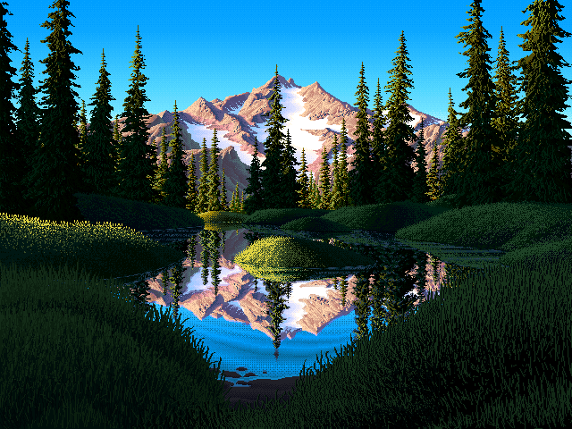
3. pedagogy/master-copy/ref/lw/V16.pngBash: Crop V16 grass regions at zoom
mkdir -p ~/work/pixelart-studies/elements/grass-lod/{ref,img,src,photos} && cd ~/work/pixelart-studies/elements/grass-lod && cat > src/crop.py <<'EOF'
import sys
from PIL import Image
# usage: crop.py src x y w h scale out
s,x,y,w,h,k,o=sys.argv[1:8]
x,y,w,h,k=map(int,(x,y,w,h,k))
im=Image.open(s).convert('RGB').crop((x,y,x+w,y+h))
im.resize((w*k,h*k),Image.NEAREST).save(o)
EOF
L=~/work/pixelart-studies/pedagogy/master-copy/ref/lw
python3 src/crop.py $L/V16.png 380 300 200 130 5 ref/v16_nearright_5x.png
python3 src/crop.py $L/V16.png 440 220 200 70 5 ref/v16_midright_5x.png
python3 src/crop.py $L/V16.png 0 230 200 80 5 ref/v16_leftmid_5x.png
python3 src/crop.py $L/V16.png 160 225 150 40 6 ref/v16_farbank_6x.png
# output:
(Bash completed with no output)Read: elements/grass-lod/ref/v16_nearright_5x.png 4. elements/grass-lod/ref/v16_nearright_5x.png
4. elements/grass-lod/ref/v16_nearright_5x.png
Read: elements/grass-lod/ref/v16_midright_5x.png 5. elements/grass-lod/ref/v16_midright_5x.png
5. elements/grass-lod/ref/v16_midright_5x.png
Read: elements/grass-lod/ref/v16_leftmid_5x.png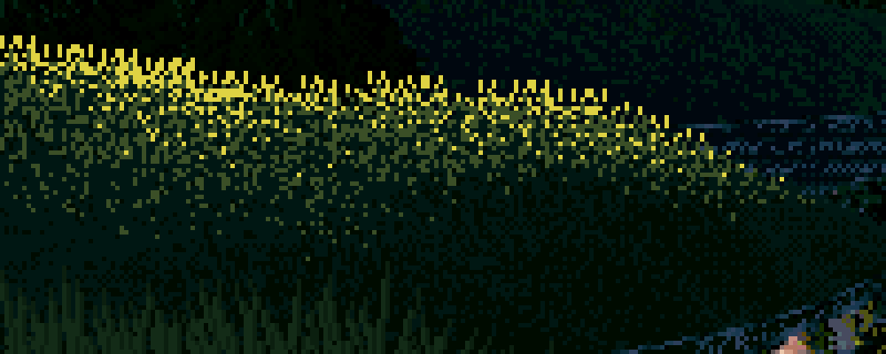
6. elements/grass-lod/ref/v16_leftmid_5x.pngRead: elements/grass-lod/ref/v16_farbank_6x.png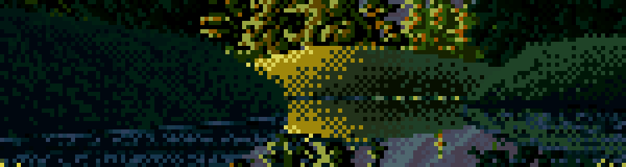
7. elements/grass-lod/ref/v16_farbank_6x.pngBash: Contact sheet of other Ferrari scenes
cd ~/work/pixelart-studies && python3 -c "
from PIL import Image
ims=[Image.open('grass/refs/ferrari_V%s.png'%v).convert('RGB') for v in ['02','04','09','13','14']]
W=sum(i.width for i in ims[:3]);
sheet=Image.new('RGB',(640*3,480*2),'white')
for k,i in enumerate(ims): sheet.paste(i,((k%3)*640,(k//3)*480))
sheet.save('elements/grass-lod/ref/others.png')
"
# output:
(Bash completed with no output)Read: elements/grass-lod/ref/others.png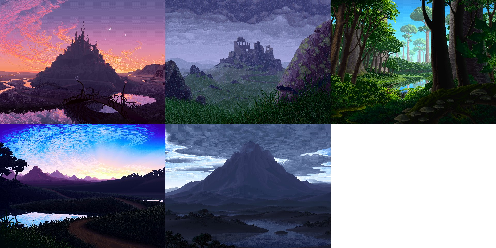
8. elements/grass-lod/ref/others.pngBash: Crop V04 distance gradient
cd ~/work/pixelart-studies/elements/grass-lod && V=../../grass/refs/ferrari_V04.png python3 src/crop.py $V 60 240 240 240 4 ref/v04_leftcol_4x.png python3 src/crop.py $V 260 250 200 80 5 ref/v04_farhill_5x.png python3 src/crop.py $V 330 330 200 150 5 ref/v04_near_5x.png # output: (Bash completed with no output)
Read: elements/grass-lod/ref/v04_leftcol_4x.png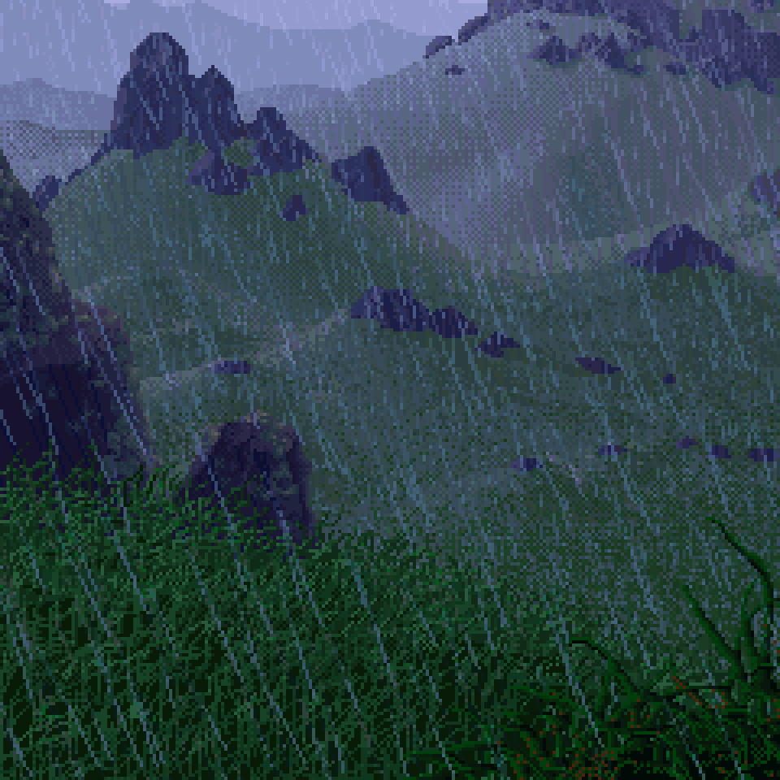
9. elements/grass-lod/ref/v04_leftcol_4x.pngRead: elements/grass-lod/ref/v04_farhill_5x.png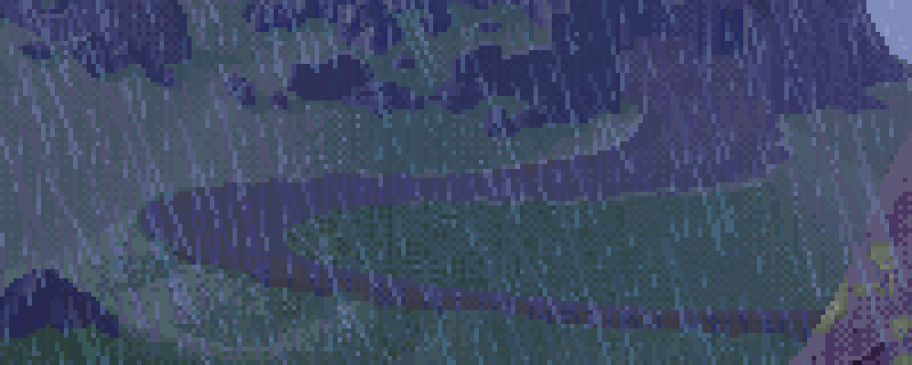
10. elements/grass-lod/ref/v04_farhill_5x.pngRead: elements/grass-lod/ref/v04_near_5x.png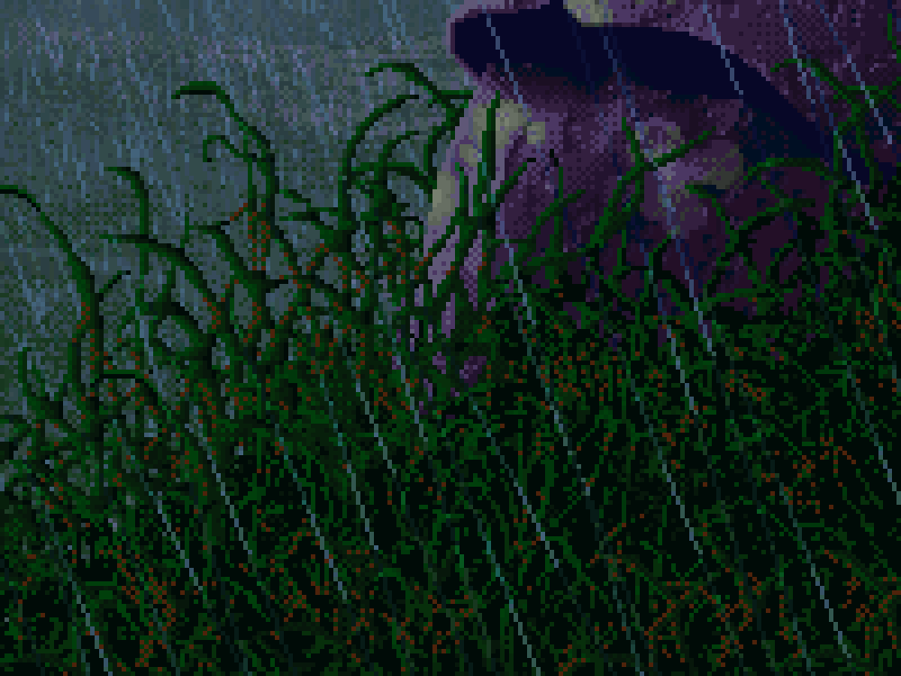
11. elements/grass-lod/ref/v04_near_5x.pngBash: Read critic log and element folders
cd ~/work/pixelart-studies && cat elements/_critic/LOG.md; ls elements/*/; # output: # Critic log Viewing tool: `_critic/zoom.py` (nearest-neighbour crops). Calibration crops of Ferrari natives: `cal_*.png`. ## Round 0 (2026-09-25 ~21:10) No stage images yet in any folder. cobbles/driftwood/willow have refs + scratch; channel has photos only. Calibrated on V19 rocks (checker midtones inside clean rock silhouettes, dark cast pockets between stones) and V09 bushes (2-4 px leaf clusters, dark gaps, 3-4 greens). ## Round 1 (2026-09-25 21:22) Coordinator notes received: bar is Ferrari-indistinguishable at 8×; tone should be generous and specific, and the student owns the call. I kept a verdict line, framed as my read. - cobbles stage0 v3 (V19 boulder): REVISE. Uniform checker, even rim ring, flat shadow field. Silhouette good. - channel c0a_v4 (V02 ribbons): REVISE. Far ribbons near-indistinguishable; near has a ruled 45° glint edge and a road-like ribbon. - driftwood s0a/s0a2 (V09 pale trunk): REVISE. Silhouette borrowed; the limb fork was missed; wrong passage for driftwood. s1 log: REVISE (steel pipe, static ground, floats). Advanced without a verdict. - willow c1_fgbush (V09 bush): REVISE. No clump hierarchy, too little light. s1a: REVISE (sponge, cut-out, black polygon shadow). Advanced without a verdict. ## Round 2 (2026-09-25 21:34) - cobbles: s0 REVISE (close; concentric rim bands, tablecloth checker on flat stones). s1 REVISE (perfect ellipses, S-curve terminator, pegboard dots). - channel: s0 A REVISE (checker zipper replaced the ruled edge; traced-shape wedge). B REVISE (fizzy riffle, stitched rock edges). LESSONS.md is good. - driftwood: s0b V02 fallen tree REVISE (straight, disconnected branches). s1 REVISE (crayon with a white end cap, sawtooth lit edge, static ground). - willow: c2 hedge REVISE (close; crest continuous, low contrast inside clumps). s1b REVISE (haystack, horizontal marks, black polygons). ## Round 3 (2026-09-25 21:46) - cobbles: jumped to stages 2–4 with no pass on 0/1. REVISE all (identical ellipses, not nestled, ruled cast shadows, non-mirror reflection). Colour hours are good. - channel: **copy A v12 PASS** (traced shapes, procedure indistinguishable). s1 paint REVISE (flat reflections, brick gravel, primitive dome). - driftwood: s1 REVISE (three stripes, spiral end, pixel-litter splinters, dashed rim). Bends/tapers/shadows improved. - willow: c2f REVISE (light inverted on crest clumps). t2: right direction, needs clumps. ## Round 4 (2026-09-25 22:00) - cobbles: s4 redone packed and s5 bar: REVISE, but a big jump; reads as a gravel bar at a glance. Tells: leaded-glass outlines, camo streaks, pink slivers, ruled veins. - channel: s1 REVISE (heart-shaped reflection, flat willow reflection, striping). Copy B v7 REVISE (X-crossing chains, vertical maroon bars). - driftwood: s2 REVISE. Grain in and reads as wood at 5×; strokes parallel and square-ended, ruled check, tube silhouette, no knots. - willow: c1 closer, c2f unchanged; s1 REVISE (outcrop silhouette, uniform speckle), but stems and fan now re
Bash: Grep critic comments about grass
cd ~/work/pixelart-studies/elements && grep -i -h -B1 -A2 "grass\|barcode\|tussock\|fringe" */CRITIQUE.md | head -80
# output:
3. **The riffle is scanline tearing** in all three hours ("riffle, midday / overcast / dusk"). See round 7.
4. **The willow's reflection is a flat block** in "still strip, midday" and "overcast", with a ruled vertical left edge (x≈400). In stage 1 you made the reflection copy the painted pixels; here the willow's reflection has lost its texture and fringe. (The willow student's `s5_water_edge` shows the textured version working.)
## Round 7 — 2026-09-25 22:35 — stage 3 `out/s3_flow.png`, `s3_riffle_8x.png`; stage 1 re-render
--
Beyond your list:
1. **The fringe blades read as a row of forks** ("near edge, tussock fringe on the water"): dark Y and V shapes at nearly even spacing along one line, all about the same height, like dead saplings or tuning forks planted in a row. Compare "Ferrari V16: grass fringe on water": a few long curved blades grouped in one clump, very different lengths, most leaning one way, a couple crossing. Group them, vary the heights 3:1, curve them, and leave long gaps.
2. **The tussock body is a weave** (far and near tussock cells): short vertical ticks at even density, which reads as fabric. Wilkin photo: tussock is clumps with a lit crown and dark skirts, and the light falls in drifts across the clumps, not evenly.
3. **The gravel is camouflage.** In every gravel cell the stone blobs are the same mid-light tone on a slightly darker ground, at uniform density, so at 1× it reads as camo print. Your swatch finding (light blobs on dark interstices) is right, but the interstices aren't dark enough yet. In the Healy and Denali photos the bar reads as a smooth pale surface at distance, with texture only close up. Try letting the far gravel go nearly flat.
4. **The heart reflection in stage 1** is still in `s1_still_8x_left.png`. If the stage-1 strip is now rendered by the new machinery, re-render it.
## Round 5 — 2026-09-25 22:12 — stage 2 studies `study/s2_c_near_gravel.png`, `s2_d_far_grass.png` (and s2_a/b/e); stage 1 unchanged since round 4
Stage 2 is still in progress and has no LESSONS entry yet, so these are notes rather than a verdict. The round-4 stage-1 notes still stand; `s1_still_8x_left.png` still shows the heart-shaped boulder reflection.
- **`s2_d_far_grass`: the grass is a barcode.** Full-height vertical bars 1–2 px wide, evenly spaced (top third of the image), read as a picket fence or a curtain. Ferrari's grass bank is paired blades of varying length, lit tips against dark gaps, with a fringe where the mass ends. The cobbles student's grass has the same problem; it may be worth one of you copying Ferrari's grass bank (the master-copy C2/C3 passages) and sharing it.
- **The grass reflection is dark noise** with one light horizontal streak through the middle. By your own rule 3 it should be the grass's own marks mirrored and compressed. Vertical grass mirrored gives vertical marks hanging down, broken by the horizontal wind lines.
- **`s2_c_near_gravel`: the gravel is still laid in courses.** The horizontal dBash: Grep grass in analysis, list studies
cd ~/work/pixelart-studies/pedagogy && grep -n -i "grass\|blade\|stroke" analysis/LESSONS.md | head -60; ls observation/studies | head -40; ls ../aerial/studies ../aerial/plates ../aerial/sheets | head -60 # output: 89:* **Warm light, cool shade, with a hard rule per material.** Sunlit ochre grass sits against black 99: sheen of grass seen at a grazing angle toward the light, and deliberate darkening of the frame's 128: interiors, and the way the grass meets the grass (58–64% of bank edges are soft). 132: * the right bank against the water, where dark grass silhouettes break the line; 145:| **near grass, lit** | 1-px vertical strokes 3–10 px tall. Mid-brown strokes and black-green gaps on a lit ochre base | **4 colours cover 90%**: base L60 38%, mid stroke L40 35%, olive L24 11%, gap L10 12%. Vertical neighbour same colour 70%, horizontal 34% | 146:| **near grass, shade** | *Negative painting*: olive strokes 1 px wide, curved and diagonal, on black | 4 colours cover 90%: black and near-black 59%, olive 40% | 147:| **mid meadow** | the strokes shrink to 1×2 ticks, then to irregular speckle. Speckle density *is* the value gradient | 7 colours cover 90% | 148:| **far banks** | near-uniform random dither of 2–3 close dark values: texture without strokes | | 149:| **island top** | lit band with a serrated, 1-px grass-tip top edge; value falls off through dither density | 14% checker | 152:| **mountain rock** | diagonal strokes along the fall line, 1-px crest lines, checker between violets | 15 colours for 90% | 159:Two rules sit above the table. **Every material has a stroke direction**: grass is vertical, 161:**the texture scale shrinks with distance** (strokes, then ticks, then speckle, then flat). The 175:* **Lit grass** (17): black-green, olive, then brown to ochre (196,131,70). The two dominant ochres 177:* **Shade grass** (16): black-green through dull olive, with low chroma. 205:4. **Texture scale.** Strokes, ticks, speckle, flat. 224:single stroke.** Hummock flanks cross the ground in clean 2:1 diagonals. 236:colours. The lit grass is four values in four colours. When he needs to show light he spends hue 240:**Contrast is impressionistic and happens inside the stroke.** The strongest contrasts are not 243:* a grass blade is a light stroke with a black gap beside it; 248:Across the picture, the mass values are held close. Up close, every stroke carries its own 252:**The strokes are the material.** Grass is vertical strokes, water is horizontal rows, rock is 254:thing is, before colour does. Texture shrinks with distance, so the stroke grammar itself is 280:checkers) and diffusion or chaotic where he wanted texture (the grass and foam) (same source). 296:* `seed`: varies the shoreline, boulder weathering, trees, mountain, blades and stones. 326: * lit grass about 48–60 and shade grass 10–20; 334: * **near grass**: Ferrari's measured recipe, **base 38% / mid stroke 35% / olive 11% / gap 12%** 336: vertically stretched noise so the proportions come out as vertical 1-px strokes; 337: * **far grass**: a two-colour speckle; 357:7. **Strokes: impressionistic contrast inside the stroke.** Grass blades are straight runs with 360: * on light ground, a
Read: aerial/plates/village_iso.png 12. aerial/plates/village_iso.png
12. aerial/plates/village_iso.png
Read: exemplars/student_boulder_dusk_tarn.png 13. exemplars/student_boulder_dusk_tarn.png
13. exemplars/student_boulder_dusk_tarn.png
Bash: Fetch grass photos at several distances
cd ~/work/pixelart-studies/elements/grass-lod/photos && T=~/work/pixelart-studies/tools/imgfetch.py; for q in "grass blades close up meadow" "alpine meadow grass slope" "grassy hillside distance" "aerial view grassland hills" "grass bank river"; do d=$(echo $q|tr ' ' _); timeout 120 python3 $T "$q" -n 12 -o $d --sheet >/dev/null 2>&1 & done; wait; ls */ | head -80 # output: (eval):2: no matches found: */
Bash: Test photo fetch
cd ~/work/pixelart-studies/elements/grass-lod/photos && python3 ~/work/pixelart-studies/tools/imgfetch.py "grass blades close up" -n 12 -o blades --sheet 2>&1 | tail -5; ls -la # output: 'grass blades close up': 12 images -> blades total 0 drwxr-xr-x 3 user staff 96 Sep 25 22:49 . drwxr-xr-x 6 user staff 192 Sep 25 22:47 .. drwxr-xr-x 16 user staff 512 Sep 25 22:49 blades
Bash: Fetch more grass photos
cd ~/work/pixelart-studies/elements/grass-lod/photos && T=~/work/pixelart-studies/tools/imgfetch.py python3 $T "alpine meadow grass" -n 12 -o meadow --sheet 2>&1|tail -1 python3 $T "grassy hillside" -n 12 -o hillside --sheet 2>&1|tail -1 python3 $T "aerial grassland hills" -n 12 -o aerial --sheet 2>&1|tail -1 python3 $T "grassy river bank" -n 12 -o bank --sheet 2>&1|tail -1 ls */ | grep -i sheet # output: 'alpine meadow grass': 12 images -> meadow 'grassy hillside': 9 images -> hillside 'aerial grassland hills': 10 images -> aerial 'grassy river bank': 8 images -> bank _sheet.jpg _sheet.jpg _sheet.jpg _sheet.jpg _sheet.jpg
Read: elements/grass-lod/photos/blades/_sheet.jpg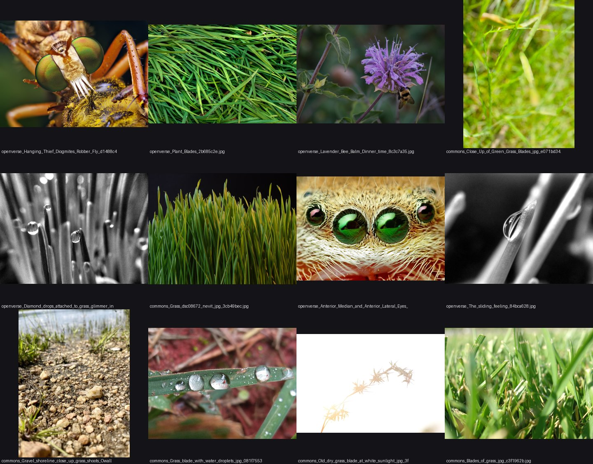
14. elements/grass-lod/photos/blades/_sheet.jpgRead: elements/grass-lod/photos/hillside/_sheet.jpg 15. elements/grass-lod/photos/hillside/_sheet.jpg
15. elements/grass-lod/photos/hillside/_sheet.jpg
Read: elements/grass-lod/photos/meadow/_sheet.jpg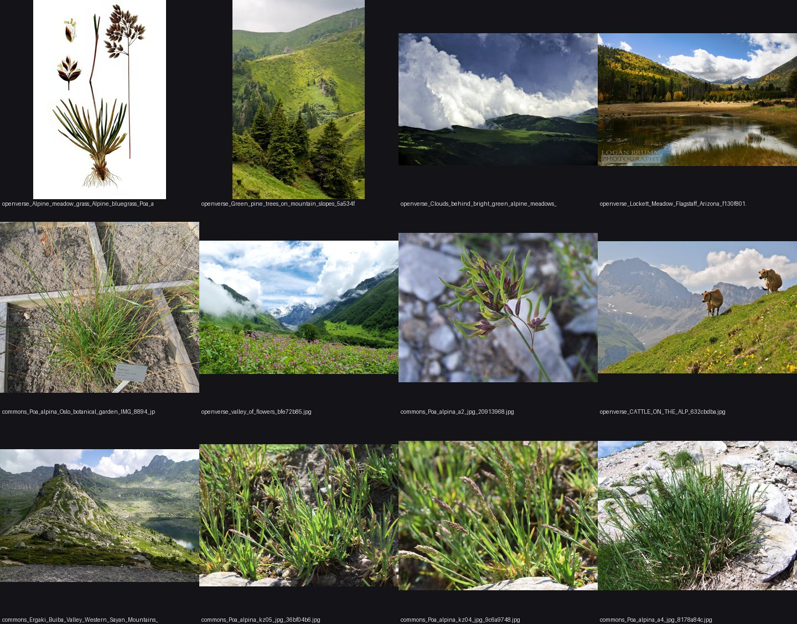
16. elements/grass-lod/photos/meadow/_sheet.jpgRead: elements/grass-lod/photos/aerial/_sheet.jpg 17. elements/grass-lod/photos/aerial/_sheet.jpg
17. elements/grass-lod/photos/aerial/_sheet.jpg
Bash: Grep observation lessons for grass
cd ~/work/pixelart-studies/pedagogy/observation && grep -n -i -A3 "grass" LESSONS.md | head -60 # output: 28:- **A boulder's foot in grass, the contact:** r10 (boulder by Lochan na h-Earba, with an undercut 29- at its foot), r13 (an erratic sitting in a lawn). 30-- **Boulders at still water, and their reflections:** r16, r18 (a stone in flat water), r19 31: (Blea Tarn: a boulder at the lip of a grass bank, reflected, with sedge coming out of the water). 32:- **Grass banks and tussocks against water, and grass in low sun:** r20, r22, r23. 33-- **Dusk water carrying the sky:** r21, r24, r25 (Lake Cerknica, pink over violet). 34-- **Distance:** r11 and r12 (the same kind of boulder at 30–60 m on a moor). 35- -- 54:- **The cast shadow** of a 4–5° sun is very long. Low grass inside it goes dark olive and loses 55- its warm highlights, which makes it a different colour family, not just a darker version. 56- 57:### Grass masses (r20, r22, r23) 58:- Grass is a **volume of near-vertical blades**. With low sun, what decides lit versus shadow 59: grass is cast shadow, not the tilt of the ground: a whole tussock can be lit on a slope that 60- faces away from the sun. 61-- Light collects on **crests**: the top edge of every mass and its sun-facing shoulder. The base 62- and the body sink into shadow (r20 block-in: tussock tops at L*≈50–65, bodies at 18–30). -- 65: foreground. Near grass reads as vertical strokes. Far grass reads as stipple. 66-- **Facing the sun**, you see the shadowed side of each blade, with glowing tips from light 67- shining through them. 68- -- 76: a grazing angle (a spike in the r25 profile). **Right under a near grass lip it is dark** 77- (overhang shadow). 78-- **Still water is broken into horizontal streaks** by faint ripples and wind-lines, which 79- reflect a slightly higher, lighter part of the sky. -- 97:- **Grass: one 3-colour family per lighting zone.** In the near-left lit grass, four colours make 98- up 99% of the pixels: ochre base (48%), tan blades (32%), dark-green gaps (16%). In the 99: shadowed near-right grass it is black (49%), dark olive (25%), darker olive (25%). The shadow 100: zone is **a different family**, which matches the photos: cast-shadowed grass is not lit grass 101- made darker. 102-- **Blades are 1-px lines** made of vertical runs averaging about 3 px, with horizontal runs of 103: 1.5 px (`crop_grass_tips_on_water.png`). Near the tips they lean in equal steps. 104-- **Crest bands.** Each lit mass has a 1–3 px band of its lightest tan directly under the top 105- contour, and the lit colour is then stippled down into the shadow body with falling density 106- (`treebase.png`, `island8.png`). -- 136: on the shadow side, the cast shadow switching the grass to the shadow family, and tufts 137- overlapping the rock's foot. 138:- **B, the lit top of a grass mass** (`translate_B.png`): contour through `clean_profile` (flat 139- crest, 2:1 shoulders, 45° flanks), a crest band 3 px thick on the sun side thinning to 1 px, 140- its lower edge notched, and the lit colour stippled downward. The first v
Bash: Inspect V16 LBM json structure
cd ~/work/pixelart-studies/pedagogy/master-copy && python3 -c "
import json;d=json.load(open('ref/lw/V16.json'));print(d.keys() if isinstance(d,dict) else type(d))
for k,v in d.items():
print(k, type(v), (len(v) if hasattr(v,'__len__') else v))
" ; sed -n 1,60p src/fl.py
# output:
Traceback (most recent call last):
File "<string>", line 2, in <module>
File "~/miniconda3/lib/python3.12/json/__init__.py", line 293, in load
return loads(fp.read(),
^^^^^^^^^^^^^^^^
File "~/miniconda3/lib/python3.12/json/__init__.py", line 346, in loads
return _default_decoder.decode(s)
^^^^^^^^^^^^^^^^^^^^^^^^^^
File "~/miniconda3/lib/python3.12/json/decoder.py", line 337, in decode
obj, end = self.raw_decode(s, idx=_w(s, 0).end())
^^^^^^^^^^^^^^^^^^^^^^^^^^^^^^^^^^^^^^
File "~/miniconda3/lib/python3.12/json/decoder.py", line 353, in raw_decode
obj, end = self.scan_once(s, idx)
^^^^^^^^^^^^^^^^^^^^^^
json.decoder.JSONDecodeError: Expecting property name enclosed in double quotes: line 1 column 2 (char 1)
"""fl.py -- the Ferrari toolkit: small procedures discovered while copying.
Everything here works on an *index canvas* (int array, -1 = empty) plus a palette
(list of RGB). Painting in indices, like Ferrari in DPaint, keeps every decision
a palette decision.
"""
import numpy as np
from scipy.ndimage import zoom, gaussian_filter, binary_dilation, distance_transform_edt
# ---------------------------------------------------------------- dither matrices
BAYER2 = np.array([[0, 2], [3, 1]]) / 4.0 + 1 / 8.0
BAYER4 = (np.array([[0, 8, 2, 10], [12, 4, 14, 6], [3, 11, 1, 9], [15, 7, 13, 5]]) + 0.5) / 16.0
def tile(m, h, w, ox=0, oy=0):
th, tw = m.shape
ys = (np.arange(h) + oy) % th
xs = (np.arange(w) + ox) % tw
return m[ys][:, xs]
def ordered_ramp(v, ramp, matrix=BAYER2, ox=0, oy=0):
"""v: float array in ramp-index units (0..len(ramp)-1). Patterned dither between
neighbouring ramp entries: Ferrari's 'patterned dither ... smooth and precise'."""
h, w = v.shape
v = np.clip(v, 0, len(ramp) - 1)
lo = np.floor(v).astype(int)
f = v - lo
t = tile(matrix, h, w, ox, oy)
i = np.where(f > t, np.minimum(lo + 1, len(ramp) - 1), lo)
return np.asarray(ramp)[i]
def stipple_ramp(v, ramp, rng, grain=1.0):
"""Random-threshold (white noise, optionally clumped) dither: the 'diffusion' look
Ferrari keeps for organic, chaotic surfaces such as lawns."""
h, w = v.shape
t = rng.random((h, w))
if grain > 1.0:
t = gaussian_filter(t, grain - 1.0)
t = (t - t.min()) / (t.max() - t.min() + 1e-9)
# re-flatten histogram so density is still honest
r = np.argsort(np.argsort(t.ravel())).reshape(h, w)
t = (r + 0.5) / r.size
v = np.clip(v, 0, len(ramp) - 1)
lo = np.floor(v).astype(int)
f = v - lo
i = np.where(f > t, np.minimum(lo + 1, len(ramp) - 1), lo)
return np.asarray(ramp)[i]
def banded(v, width=0.45):
"""Compress a smooth ramp coordinate into flat bands joined by short transitions:
Ferrari's skies hold each colour flat for most of a band and only dither across
the seam (measured: ~6 flaBash: Colour histograms of Ferrari grass regions
cd ~/work/pixelart-studies && python3 -c "
from PIL import Image; import numpy as np
from collections import Counter
im=np.array(Image.open('pedagogy/master-copy/ref/lw/V16.png').convert('RGB'))
def h(name,x,y,w,hh):
c=Counter(map(tuple,im[y:y+hh,x:x+w].reshape(-1,3)))
tot=sum(c.values()); print(name, [(k,round(v/tot,3)) for k,v in c.most_common(8)])
h('near right shadow',480,360,150,110)
h('left lit crest',0,238,150,20)
h('left body',0,262,150,30)
h('mid right bank',520,240,110,40)
h('far bank',300,232,60,10)
h('near left',0,330,150,140)
im2=np.array(Image.open('pedagogy/master-copy/ref/native.png').convert('RGB'))
im=im2
h('tarn near lit bank',0,300,150,160)
h('tarn crest',0,255,150,20)
"
# output:
near right shadow [((0, 0, 0), 0.462), ((19, 43, 23), 0.274), ((0, 7, 7), 0.238), ((23, 51, 27), 0.026)]
left lit crest [((0, 7, 15), 0.232), ((223, 211, 67), 0.167), ((59, 79, 39), 0.147), ((0, 7, 0), 0.138), ((0, 23, 19), 0.12), ((0, 0, 0), 0.105), ((0, 31, 19), 0.051), ((0, 11, 0), 0.037)]
left body [((0, 23, 19), 0.623), ((0, 11, 0), 0.247), ((59, 79, 39), 0.122), ((223, 211, 67), 0.006), ((11, 31, 15), 0.001)]
mid right bank [((31, 67, 39), 0.384), ((0, 23, 7), 0.376), ((0, 7, 15), 0.215), ((0, 31, 19), 0.013), ((0, 23, 23), 0.005), ((0, 7, 7), 0.002), ((7, 35, 43), 0.002), ((19, 51, 63), 0.001)]
far bank [((0, 31, 19), 0.32), ((0, 23, 7), 0.272), ((31, 67, 39), 0.148), ((0, 7, 15), 0.125), ((0, 0, 0), 0.058), ((0, 7, 0), 0.02), ((0, 11, 0), 0.015), ((43, 83, 7), 0.01)]
near left [((11, 31, 15), 0.394), ((0, 15, 11), 0.366), ((19, 43, 23), 0.125), ((0, 7, 7), 0.114), ((0, 143, 227), 0.0), ((79, 83, 19), 0.0), ((0, 31, 15), 0.0), ((7, 35, 43), 0.0)]
tarn near lit bank [((196, 131, 70), 0.391), ((115, 92, 35), 0.299), ((62, 59, 23), 0.173), ((10, 34, 10), 0.095), ((106, 80, 40), 0.021), ((196, 134, 76), 0.008), ((0, 0, 0), 0.002), ((46, 43, 32), 0.002)]
tarn crest [((196, 134, 76), 0.616), ((28, 31, 20), 0.241), ((106, 80, 40), 0.12), ((60, 63, 45), 0.021), ((25, 31, 4), 0.001), ((136, 101, 50), 0.001), ((87, 68, 43), 0.0)]Bash: Zoom V04 near blades
cd ~/work/pixelart-studies/elements/grass-lod && python3 src/crop.py ../../grass/refs/ferrari_V04.png 360 340 70 60 10 ref/v04_blades_10x.png; ls ../../pedagogy/master-copy/crops/; # output: p_c5_am_pm.png p_island_am_pm.png p_leftbank_am_pm.png palette_usage.txt palette_v16pm_dusk.png ref_c1.png ref_c2.png ref_c3.png ref_c4.png ref_c5.png z_V19PM_mid.png z_V19PM_rocksL.png z_V19PM_rocksR.png z_V19_rocksL.png z_V19_rocksR.png z_blades14_lit.png z_blades14_shadow.png z_bottoms12.png z_c1_pine8.png z_c1_rock8.png z_c1cand.png z_c2.png z_c3.png z_c4_blades8.png z_c4_stones8.png z_c4cand.png z_c5.png z_c5_am_boulder.png z_contour12.png z_island.png z_leftbank.png z_mountain.png z_mtn8.png z_rightbank.png z_sky8.png z_water.png
Read: elements/grass-lod/ref/v04_blades_10x.png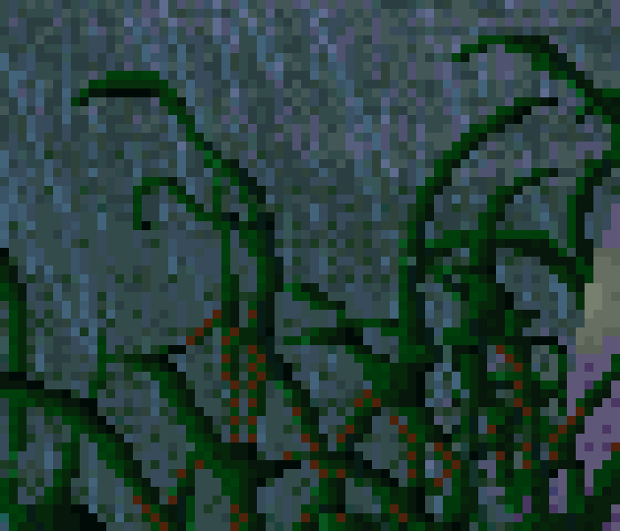
18. elements/grass-lod/ref/v04_blades_10x.pngRead: pedagogy/master-copy/crops/z_c4_blades8.pngRead: pedagogy/master-copy/crops/z_blades14_lit.png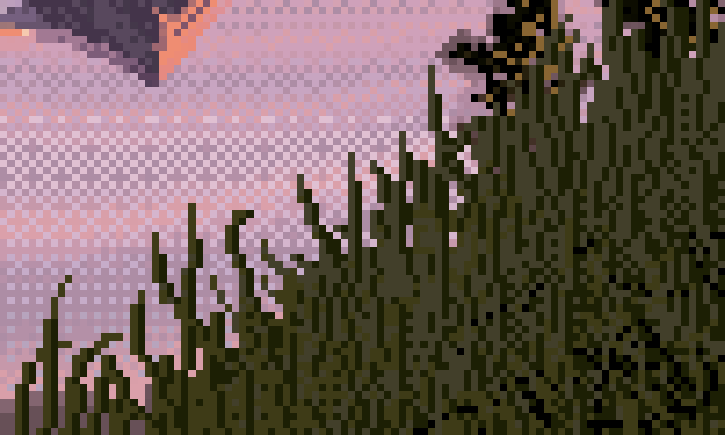
19. pedagogy/master-copy/crops/z_c4_blades8.png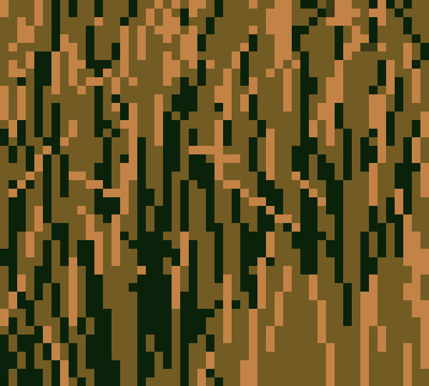
20. pedagogy/master-copy/crops/z_blades14_lit.pngNow I have a solid picture of the references. Let me set up the core library: world, camera, value field.
Bash: Check tools and library versions
cd ~/work/pixelart-studies && sed -n 1,80p tools/imgfetch.py | head -20; ls shared; python3 -c "import numpy, scipy, PIL; print(numpy.__version__, scipy.__version__, PIL.__version__)"; which ffmpeg gifsicle
# output:
Exit code 1
#!/usr/bin/env python3
"""imgfetch: fast, polite reference-image sourcing (Wikimedia Commons + Openverse).
python3 imgfetch.py "cinder cone scoria slope" -n 12 -o refs/cinder
python3 imgfetch.py -f queries.txt -n 8 -o refs # one query per line; subdir per query
options: --src commons,openverse --width 1200 --sheet (writes <out>/_sheet.jpg)
Writes images plus <out>/sources.tsv (file, title, license, author, page url).
Cached: files already present are skipped. Handles 429/5xx with Retry-After backoff.
Parallel downloads (4 workers) with a shared per-host rate limiter (~3 req/s; Wikimedia's media
host is kept to 1 per 2 s and slows further on any 429, since it throttles hard per IP after bursts).
Openverse (mostly Flickr-hosted CC images) is the primary source because it stays fast.
"""
import argparse, concurrent.futures as cf, json, os, re, sys, threading, time, urllib.error, urllib.parse, urllib.request
UA = "pixelart-studies-imgfetch/1.0 (research; contact: local)"
_locks = {}; _last = {}; _glock = threading.Lock()
SLOW_HOSTS = {"upload.wikimedia.org": 2.0} # Wikimedia media host: ~1 req/s or it 429s
refs
scenes
1.26.4 1.14.0 11.1.0
/opt/homebrew/bin/ffmpeg
gifsicle not foundWrite: elements/grass-lod/src/grasslod/noise.py
"""Band-limited, world-anchored noise.
Everything the painter uses is a function of *world* position, evaluated at whatever
sample spacing the current zoom needs. Octaves finer than ~2 samples fade out
smoothly (instead of being cut), so a slow zoom never pops a new octave in.
"""
import numpy as np
_P = np.random.RandomState(1234).permutation(4096)
def hash2(ix, iy, seed=0):
"""Integer lattice hash -> float in [0,1). Stable across frames and zooms."""
ix = np.asarray(ix, dtype=np.int64)
iy = np.asarray(iy, dtype=np.int64)
h = (ix * 374761393 + iy * 668265263 + seed * 2147483647) & 0xFFFFFFFF
h = ((h ^ (h >> 13)) * 1274126177) & 0xFFFFFFFF
h = h ^ (h >> 16)
return (h & 0xFFFFFF) / float(1 << 24)
def hashn(ix, iy, seed, k):
"""k independent hashes per lattice point."""
return [hash2(ix, iy, seed * 131 + j * 7919 + 17) for j in range(k)]
def _fade(t):
return t * t * t * (t * (t * 6 - 15) + 10)
def value_noise(x, y, seed=0):
"""Smooth value noise in [-1,1], lattice spacing 1."""
x = np.asarray(x, float)
y = np.asarray(y, float)
ix = np.floor(x).astype(np.int64)
iy = np.floor(y).astype(np.int64)
fx = _fade(x - ix)
fy = _fade(y - iy)
a = hash2(ix, iy, seed)
b = hash2(ix + 1, iy, seed)
c = hash2(ix, iy + 1, seed)
d = hash2(ix + 1, iy + 1, seed)
v = a + (b - a) * fx + (c - a) * fy + (a - b - c + d) * fx * fy
return v * 2 - 1
def fbm(x, y, base_wl, octaves, gain=0.5, lac=2.0, seed=0, min_wl=0.0):
"""Fractal sum. base_wl = largest wavelength (m). Octaves whose wavelength is below
~2*min_wl (the sample spacing) fade to zero continuously -> no popping on zoom."""
tot = 0.0
amp = 1.0
wl = base_wl
norm = 0.0
for o in range(octaves):
if min_wl > 0:
w = np.clip((wl / min_wl - 2.0) / 2.0, 0.0, 1.0) # 0 below 2 samples, 1 above 4
else:
w = 1.0
if np.any(w > 0):
# rotate each octave a little to kill lattice alignment
ang = 0.6 * o + seed * 0.37
ca, sa = np.cos(ang), np.sin(ang)
xr = (x * ca - y * sa) / wl
yr = (x * sa + y * ca) / wl
tot = tot + amp * w * value_noise(xr + 17.3 * o, yr - 9.1 * o, seed + o * 101)
norm += amp
amp *= gain
wl /= lac
return tot / norm
Bash: Test noise module
cd ~/work/pixelart-studies/elements/grass-lod/src && touch grasslod/__init__.py && python3 -c " from grasslod.noise import *; import numpy as np x=np.linspace(0,10,5); print(value_noise(x,x), fbm(x,x,4,5))" # output: [-1. 0.12570074 0.83364272 -0.25412169 0.54768169] [-0.77876262 0.20305394 0.4208383 0.30289445 0.12422441]
Write: elements/grass-lod/src/grasslod/world.py
"""The world the painter looks at: a procedural, multi-scale grassy landscape.
Units are metres. x runs to screen right, y away from the viewer, z up.
Every field is a pure function of world position, evaluated band-limited at the
spacing the current zoom needs (min_wl), so the same world can be looked at from
30 px/m down to 0.3 px/m without anything changing identity.
The scene: a small stream winding along a valley floor, a grassy cut bank on its far
side with hummocks along the lip, a meadow slope above, and rolling grassland hills
beyond. Wetness collects in low ground; grazing shortens the sward; tussock
colonies form where it is wet and lightly grazed.
"""
import numpy as np
from dataclasses import dataclass, field
from .noise import fbm, value_noise
# grass species: height of the sward (m), tuft spacing (m), tuft width (m),
# tussock fraction, stiffness (how straight blades stand), seedhead fraction
SPECIES = {
# h spacing width tussock stiff seedheads
"turf": (0.08, 0.07, 0.06, 0.00, 0.8, 0.00),
"meadow": (0.35, 0.10, 0.10, 0.05, 0.6, 0.10),
"hay": (0.60, 0.10, 0.10, 0.02, 0.5, 0.25),
"tussock": (0.45, 0.16, 0.22, 0.45, 0.4, 0.05),
"sedge": (0.50, 0.12, 0.16, 0.30, 0.7, 0.02),
}
@dataclass
class World:
seed: int = 1
species: str = "meadow"
moisture: float = 0.5 # 0 dry .. 1 wet (shifts hue green<->straw, sedge in hollows)
grazing: float = 0.2 # 0 ungrazed .. 1 close-cropped
wind: float = 0.3 # 0 calm .. 1 strong (lean + combing)
wind_dir: float = 1.0 # +1 blows to screen right, -1 to the left
season_dead: float = 0.15 # base fraction of straw (dead) blades
relief: float = 1.0 # scales regional hills
water_level: float = 0.0
# ----- geometry --------------------------------------------------------------
def channel(self, x):
"""Stream centre line y_c(x) and half width."""
s = self.seed
yc = (5.0 * np.sin(x / 37.0 + s) + 2.0 * np.sin(x / 11.0 + 2 * s)
+ 60.0 * np.sin(x / 420.0 + 0.3 * s))
return yc, 1.6
def height(self, x, y, min_wl=0.0):
s = self.seed
yc, hw = self.channel(x)
d = y - yc # signed distance-ish to the stream (m); >0 = far side
ad = np.abs(d)
# regional hills, rising away from the valley floor
reg = 38.0 * self.relief * fbm(x, y, 900.0, 4, 0.5, seed=s + 3, min_wl=min_wl)
valley = 0.035 * self.relief * np.minimum(ad, 900.0) + 12.0 * self.relief * (1 - np.exp(-ad / 150.0))
z = 1.2 + valley + reg * np.clip(ad / 120.0, 0, 1)
# meadow undulation (swells of a few tens of metres)
z = z + 1.6 * fbm(x, y, 40.0, 3, 0.5, seed=s + 7, min_wl=min_wl)
# hummocks, 2-6 m
hum = fbm(x, y, 6.0, 3, 0.55, seed=s + 11, min_wl=min_wl)
z = z + 0.35 * hum
# tussock micro-relief (0.4-1 m), only where tussocks grow
tus = self.tussockness(x, y)
mic = fbm(x, y, 1.2, 2, 0.5, seed=s + 13, min_wl=min_wl)
z = z + 0.12 * tus * np.maximum(mic, -0.2)
# the cut bank: a terrace step at the channel edge, ragged along its length
rag = 0.5 * fbm(x, y, 3.0, 3, 0.5, seed=s + 17, min_wl=min_wl)
bank_w = 0.7 + 0.4 * value_noise(x / 9.0, 0.5, s + 19)
t = np.clip((ad - hw - rag * 0.6) / bank_w, 0, 1)
step = t * t * (3 - 2 * t)
bank_h = 1.0 + 0.35 * value_noise(x / 13.0, 1.5, s + 23)
zb = self.water_level - 0.35 + bank_h * step
# far from the channel the terrace joins the meadow surface
blend = np.clip((ad - hw - bank_w - 0.3) / 4.0, 0, 1)
z = zb * (1 - blend) + np.maximum(z, zb) * blend + (z - z)
return z
def normal(self, x, y, min_wl=0.0, eps=None):
if eps is None:
eps = max(0.02, min_wl * 0.5)
zx = (self.height(x + eps, y, min_wl) - self.height(x - eps, y, min_wl)) / (2 * eps)
zy = (self.height(x, y + eps, min_wl) - self.height(x, y - eps, min_wl)) / (2 * eps)
n = np.stack([-zx, -zy, np.ones_like(zx)])
return n / np.linalg.norm(n, axis=0)
# ----- ecology ---------------------------------------------------------------
def wetness(self, x, y):
"""0..1: wet in low ground near the stream and in patchy flushes."""
yc, hw = self.channel(x)
ad = np.abs(y - yc)
near = np.exp(-np.maximum(ad - hw, 0) / 12.0)
patch = 0.5 + 0.5 * fbm(x, y, 30.0, 3, 0.5, seed=self.seed + 31)
return np.clip(0.55 * near + 0.6 * (patch - 0.5) + self.moisture - 0.2, 0, 1)
def tussockness(self, x, y):
sp = SPECIES[self.species]
colony = 0.5 + 0.5 * fbm(x, y, 12.0, 3, 0.5, seed=self.seed + 37)
yc, hw = self.channel(x)
wet = np.exp(-np.maximum(np.abs(y - yc) - hw, 0) / 15.0)
v = sp[3] + 0.5 * wet * (1 - self.grazing) * (colony - 0.35)
return np.clip(v * (1.0 - 0.6 * self.grazing), 0, 1)
def dead(self, x, y):
"""Fraction of straw blades: dry ridges, grazing, season."""
w = self.wetness(x, y)
patch = fbm(x, y, 18.0, 3, 0.5, seed=self.seed + 41)
return np.clip(self.season_dead + 0.45 * (0.55 - w) + 0.25 * patch + 0.15 * self.grazing, 0, 1)
def sward_height(self, x, y):
"""Local blade height (m)."""
sp = SPECIES[self.species]
h = sp[0] * (1.0 - 0.75 * self.grazing)
patch = fbm(x, y, 5.0, 3, 0.5, seed=self.seed + 43)
tus = self.tussockness(x, y)
return np.maximum(0.03, h * (1 + 0.35 * patch) * (1 + 0.6 * tus))
Bash: Simplify bank carve in world.py
cd ~/work/pixelart-studies/elements/grass-lod/src/grasslod && python3 - <<'EOF'
s=open('world.py').read()
old=s[s.index(" bank_h = 1.0"):s.index(" return z\n\n def normal")]
new=''' bed = self.water_level - 0.35
z = bed + (z - bed) * step
'''
s=s.replace(old,new)
open('world.py','w').write(s)
EOF
grep -n "step\|bed" world.py
# output:
68: # the cut bank: a terrace step at the channel edge, ragged along its length
72: step = t * t * (3 - 2 * t)
73: bed = self.water_level - 0.35
74: z = bed + (z - bed) * stepWrite: elements/grass-lod/src/grasslod/palette.py
"""Palettes: the light lives here, the form lives in the index canvas.
Grass has one 7-step ramp per (hour, material):
0 core black 1 deep shadow 2 shadow 3 reflected/olive
4 halftone 5 lit 6 sun-struck tip / rim
The shadow family uses steps 0-3, the lit family 2-6 (lit strokes' dark gaps reach 0-1).
Two grass materials share the index layout: green (live) and straw (dead).
Colours sampled from Ferrari's Mirror Pond (day), the tarn at dusk (golden/dusk),
and the rain scene (overcast), then adjusted by eye.
"""
import numpy as np
HOURS = {
# green ramp, straw ramp, sky (top, horizon), water (light, dark), soil (dark, lit)
"day": dict(
green=[(0, 6, 6), (4, 24, 16), (16, 44, 24), (34, 68, 36), (70, 96, 40), (150, 158, 56), (222, 210, 70)],
straw=[(8, 10, 4), (30, 30, 14), (56, 54, 26), (92, 84, 40), (138, 122, 58), (190, 170, 84), (236, 214, 124)],
sky=[(20, 110, 220), (120, 190, 240)], water=[(60, 150, 220), (14, 58, 96)],
soil=[(30, 20, 14), (96, 70, 44)], sun=(-0.55, 0.45, 0.70)),
"golden": dict(
green=[(8, 18, 8), (12, 34, 12), (30, 40, 20), (62, 60, 24), (112, 90, 36), (196, 132, 70), (238, 178, 104)],
straw=[(16, 14, 8), (40, 32, 16), (74, 58, 30), (116, 88, 42), (164, 118, 58), (214, 156, 86), (246, 200, 132)],
sky=[(206, 168, 190), (242, 180, 150)], water=[(196, 150, 170), (70, 56, 80)],
soil=[(34, 22, 18), (110, 70, 44)], sun=(-0.75, 0.35, 0.35)),
"dusk": dict(
green=[(10, 10, 16), (18, 22, 26), (32, 36, 36), (52, 54, 44), (86, 72, 52), (150, 100, 76), (206, 140, 104)],
straw=[(14, 12, 16), (34, 28, 30), (58, 48, 44), (88, 70, 56), (126, 94, 70), (176, 124, 90), (220, 164, 120)],
sky=[(92, 80, 140), (220, 140, 130)], water=[(150, 110, 150), (40, 34, 60)],
soil=[(24, 18, 22), (80, 56, 50)], sun=(-0.85, 0.2, 0.18)),
"overcast": dict(
green=[(6, 14, 14), (14, 32, 26), (26, 50, 38), (42, 70, 50), (62, 92, 62), (88, 116, 76), (122, 144, 96)],
straw=[(14, 16, 14), (34, 36, 28), (58, 58, 44), (84, 82, 60), (110, 104, 76), (138, 128, 94), (168, 158, 120)],
sky=[(110, 110, 150), (160, 160, 180)], water=[(120, 124, 150), (40, 48, 66)],
soil=[(26, 22, 22), (70, 60, 54)], sun=(-0.3, 0.3, 0.9)),
}
# index layout of the output canvas
SKY0 = 0 # 0..7 sky band
WATER0 = 8 # 8..11 water
SOIL0 = 12 # 12..13
GREEN0 = 16 # 16..22
STRAW0 = 24 # 24..30
NIDX = 32
def lerp(a, b, t):
return tuple(int(round(a[i] + (b[i] - a[i]) * t)) for i in range(3))
def build(hour="day", wet=0.5):
"""Return (palette[NIDX] of RGB, sun_dir). `wet` greens the live ramp slightly."""
H = HOURS[hour]
pal = [(255, 0, 255)] * NIDX
s0, s1 = H["sky"]
for i in range(8):
pal[SKY0 + i] = lerp(s0, s1, i / 7)
w0, w1 = H["water"]
for i in range(4):
pal[WATER0 + i] = lerp(w1, w0, i / 3)
pal[SOIL0], pal[SOIL0 + 1] = H["soil"]
for i in range(7):
pal[GREEN0 + i] = H["green"][i]
pal[STRAW0 + i] = H["straw"][i]
sun = np.array(H["sun"], float)
return pal, sun / np.linalg.norm(sun)
def to_rgb(idx, pal):
lut = np.array(pal, np.uint8)
return lut[np.clip(idx, 0, NIDX - 1)]
Write: elements/grass-lod/src/grasslod/render.py
"""Orthographic oblique camera over the world heightfield, and the value design.
Camera: elevation theta (deg above horizontal), scale ppm (pixels per metre).
Screen up-coordinate u = y*sin(theta) + z*cos(theta). A vertical blade of height h
projects to h*ppm*cos(theta) pixels; a ground patch of depth d to d*ppm*sin(theta).
So one number per tuft, its projected length in pixels, decides how it is painted,
and top-down (theta=90) collapses every blade to a point: tone and texture only.
"""
import numpy as np
from dataclasses import dataclass
from .world import World
from . import palette as P
MAT_SKY, MAT_GRASS, MAT_WATER, MAT_SOIL = 0, 1, 2, 3
@dataclass
class Camera:
ppm: float = 30.0
theta: float = 30.0
W: int = 320
H: int = 200
cx: float = 0.0 # world x at screen centre
cy: float = 0.0 # world y of the ground point at screen centre
cz: float = 0.0 # world z of that point
@property
def s(self):
return np.sin(np.radians(self.theta))
@property
def c(self):
return np.cos(np.radians(self.theta))
def u0(self):
return self.cy * self.s + self.cz * self.c
def to_screen(self, x, y, z):
sx = (x - self.cx) * self.ppm + self.W / 2
u = y * self.s + z * self.c
sy = self.H / 2 - (u - self.u0()) * self.ppm
return sx, sy
class Raster:
"""Per-pixel world position, normal, material and depth of the visible surface."""
def __init__(self, world: World, cam: Camera, oversample=2.5):
self.world, self.cam = world, cam
W, H, ppm = cam.W, cam.H, cam.ppm
s, c = cam.s, cam.c
min_wl = 1.0 / ppm # a pixel, in metres
self.min_wl = min_wl
xs = cam.cx + (np.arange(W) + 0.5 - W / 2) / ppm
u_top = cam.u0() + (H / 2 + 2) / ppm
u_bot = cam.u0() - (H / 2 + 2) / ppm
# z range estimate (coarse probe)
py = np.linspace(cam.cy - (H / ppm) / s * 1.5 - 5, cam.cy + (H / ppm) / s * 1.5 + 5, 64)
PX, PY = np.meshgrid(xs[::max(1, W // 32)], py)
pz = np.maximum(world.height(PX, PY, min_wl), world.water_level)
zmin, zmax = pz.min() - 1.0, pz.max() + 1.0
y_near = (u_bot - zmax * c) / s - 0.5
y_far = (u_top - zmin * c) / s + 0.5
dy = 1.0 / (ppm * s * oversample)
dy = max(dy, (y_far - y_near) / 6000.0)
ys = np.arange(y_near, y_far, dy)
X, Y = np.meshgrid(xs, ys) # [ns, W]
Z = np.maximum(world.height(X, Y, min_wl), world.water_level)
U = Y * s + Z * c
Umax = np.maximum.accumulate(U, axis=0)
# pixel row r has screen-up coordinate
rows = np.arange(H)
ur = cam.u0() + (H / 2 - (rows + 0.5)) / ppm # [H]
idx = np.empty((H, W), np.int64)
for i in range(W):
idx[:, i] = np.searchsorted(Umax[:, i], ur, side="left")
sky = idx >= len(ys)
idx = np.minimum(idx, len(ys) - 1)
# interpolate world y within the sample interval for a smooth surface position
i0 = np.maximum(idx - 1, 0)
cols = np.broadcast_to(np.arange(W), (H, W))
ua, ub = U[i0, cols], U[idx, cols]
t = np.clip((ur[:, None] - ua) / np.maximum(ub - ua, 1e-9), 0, 1)
t = np.where(idx == i0, 1.0, t)
Yp = ys[i0] + (ys[idx] - ys[i0]) * t
Xp = np.broadcast_to(xs, (H, W)).copy()
self.X, self.Y = Xp, Yp
zt = world.height(Xp, Yp, min_wl)
self.Zterrain = zt
self.water = (zt < world.water_level) & ~sky
self.Z = np.maximum(zt, world.water_level)
self.sky = sky
self.N = world.normal(Xp, Yp, min_wl)
self.depth = np.where(sky, np.inf, Yp) # world y of visible surface (smaller = nearer)
mat = np.full((H, W), MAT_GRASS, np.int8)
mat[self.water] = MAT_WATER
mat[sky] = MAT_SKY
# steep cut-bank faces show soil
steep = (self.N[2] < 0.5) & ~self.water & ~sky
mat[steep] = MAT_SOIL
self.mat = mat
def cast_shadow(world, X, Y, Z, sun, min_wl, reach=None, steps=24):
"""1 where the sun is blocked by terrain. March toward the sun in world space."""
if reach is None:
reach = max(3.0, 40 * min_wl)
sh = np.zeros(X.shape, bool)
horiz = np.hypot(sun[0], sun[1]) + 1e-9
for k in range(1, steps + 1):
d = reach * (k / steps) ** 1.5
xs = X + sun[0] / horiz * d
ys = Y + sun[1] / horiz * d
zr = Z + sun[2] / horiz * d
sh |= world.height(xs, ys, min_wl * 2) > zr + 0.02
return sh
def value_design(R: Raster, sun, params=None):
"""Continuous step coordinate V (0..6) per pixel, plus lit mask.
Two families that never touch: lit 3.3..6, shadow 0.4..2.6.
Inside the lit family: light by facing, plus the grazing-angle crest sheen (you see
lit tips where the surface turns away from you: every crest, at every scale).
Inside the shadow family: sky light by upward facing, plus a faint rim at crests.
"""
p = dict(lit_lo=3.3, lit_span=1.7, crest=1.0, sh_lo=0.5, sh_span=1.4, sh_crest=0.5,
wet_dark=0.5, lit_thresh=0.10)
if params:
p.update(params)
world, cam = R.world, R.cam
N = R.N
lam = N[0] * sun[0] + N[1] * sun[1] + N[2] * sun[2]
v = np.array([0.0, -cam.c, cam.s])
nv = N[0] * v[0] + N[1] * v[1] + N[2] * v[2]
graze = np.clip(1.0 - nv, 0, 1) # 0 facing camera, 1 edge-on
sh = cast_shadow(world, R.X, R.Y, R.Z, sun, R.min_wl)
lit = (lam > p["lit_thresh"]) & ~sh
wet = world.wetness(R.X, R.Y)
Vl = p["lit_lo"] + p["lit_span"] * np.clip((lam - p["lit_thresh"]) / 0.8, 0, 1) ** 0.8 \
+ p["crest"] * graze ** 2
Vs = p["sh_lo"] + p["sh_span"] * np.clip(N[2], 0, 1) ** 2 + p["sh_crest"] * graze ** 2
V = np.where(lit, Vl, Vs) - p["wet_dark"] * (wet - 0.5)
V = np.where(lit, np.clip(V, 3.0, 6.0), np.clip(V, 0.2, 2.8))
return V, lit, lam, graze
Bash: Render debug value design at 5 zooms
cd ~/work/pixelart-studies/elements/grass-lod/src && cat > debug_value.py <<'EOF'
import os, sys, time
os.environ.setdefault("OPENBLAS_NUM_THREADS","1")
import numpy as np
from PIL import Image
from grasslod.world import World
from grasslod.render import Camera, Raster, value_design
from grasslod import palette as P
w = World(seed=1)
yc,hw = w.channel(np.array(0.0))
cy = float(yc)+hw+1.2
cz = float(w.height(np.array(0.0), np.array(cy)))
print("centre", cy, cz)
pal, sun = P.build("day")
tiles=[]
for ppm in [30, 10, 3, 1, 0.3]:
t=time.time()
cam = Camera(ppm=ppm, theta=30, W=320, H=200, cx=0, cy=cy, cz=cz)
R = Raster(w, cam)
V, lit, lam, graze = value_design(R, sun)
rng=np.random.default_rng(0)
q = np.clip(np.floor(V + rng.random(V.shape)), 0, 6).astype(int)
idx = P.GREEN0 + q
idx[R.water] = P.WATER0+2
idx[R.sky] = P.SKY0+4
idx[R.mat==3] = P.SOIL0
tiles.append(P.to_rgb(idx, pal))
print(ppm, time.time()-t)
img=np.concatenate([np.pad(t,((0,4),(0,0),(0,0)),constant_values=255) for t in tiles],0)
Image.fromarray(img).resize((img.shape[1]*2,img.shape[0]*2),Image.NEAREST).save("../img/dbg_value.png")
EOF
nice -n 10 python3 debug_value.py
# output:
centre 26.55716217737122 2.3861563106127406
30 19.249221086502075
10 20.695436000823975
3 15.376085996627808
1 12.199645042419434
0.3 5.108124017715454Read: elements/grass-lod/img/dbg_value.png 21. elements/grass-lod/img/dbg_value.png
21. elements/grass-lod/img/dbg_value.png
Bash: Tweak terrain, profile one frame
cd ~/work/pixelart-studies/elements/grass-lod/src/grasslod && python3 - <<'EOF'
s=open('world.py').read()
s=s.replace("z = z + 0.35 * hum","z = z + 0.6 * hum")
s=s.replace("bank_w = 0.7 + 0.4 * value_noise(x / 9.0, 0.5, s + 19)","bank_w = 1.6 + 0.8 * value_noise(x / 9.0, 0.5, s + 19)")
s=s.replace(""" if eps is None:
eps = max(0.02, min_wl * 0.5)
zx = (self.height(x + eps, y, min_wl) - self.height(x - eps, y, min_wl)) / (2 * eps)
zy = (self.height(x, y + eps, min_wl) - self.height(x, y - eps, min_wl)) / (2 * eps)""",""" if eps is None:
eps = max(0.02, min_wl * 0.5)
z0 = self.height(x, y, min_wl)
zx = (self.height(x + eps, y, min_wl) - z0) / eps
zy = (self.height(x, y + eps, min_wl) - z0) / eps""")
open('world.py','w').write(s)
r=open('render.py').read()
r=r.replace("steep = (self.N[2] < 0.5)","steep = (self.N[2] < 0.35)")
r=r.replace("def cast_shadow(world, X, Y, Z, sun, min_wl, reach=None, steps=24):","def cast_shadow(world, X, Y, Z, sun, min_wl, reach=None, steps=10):")
open('render.py','w').write(r)
EOF
cd .. && python3 -c "
import cProfile,pstats,sys
sys.argv=['x']
cProfile.run(open('debug_value.py').read().replace('[30, 10, 3, 1, 0.3]','[30]'),'/tmp/p' if False else '$TMPDIR/p')
p=pstats.Stats('$TMPDIR/p');p.sort_stats('cumtime').print_stats(12)" 2>&1 | tail -25
# output:
centre 26.55716217737122 1.6464312463079613
30 11.588342189788818
Fri Sep 25 23:01:19 2026 /var/folders/hk/57n6z3ms7ls61__r9jfx7vq80000gn/T//p
148884 function calls (145327 primitive calls) in 12.405 seconds
Ordered by: cumulative time
List reduced from 1384 to 12 due to restriction <12>
ncalls tottime percall cumtime percall filename:lineno(function)
159/1 0.017 0.000 12.405 12.405 {built-in method builtins.exec}
1 0.003 0.003 12.405 12.405 <string>:1(<module>)
17 0.141 0.008 11.338 0.667 ~/work/pixelart-studies/elements/grass-lod/src/grasslod/world.py:50(height)
103 1.134 0.011 10.669 0.104 ~/work/pixelart-studies/elements/grass-lod/src/grasslod/noise.py:47(fbm)
326 1.972 0.006 9.662 0.030 ~/work/pixelart-studies/elements/grass-lod/src/grasslod/noise.py:31(value_noise)
1304 5.878 0.005 5.880 0.005 ~/work/pixelart-studies/elements/grass-lod/src/grasslod/noise.py:12(hash2)
1 0.001 0.001 5.829 5.829 ~/work/pixelart-studies/elements/grass-lod/src/grasslod/render.py:119(value_design)
1 0.069 0.069 5.756 5.756 ~/work/pixelart-studies/elements/grass-lod/src/grasslod/render.py:48(__init__)
1 0.017 0.017 5.701 5.701 ~/work/pixelart-studies/elements/grass-lod/src/grasslod/render.py:104(cast_shadow)
17 0.068 0.004 2.536 0.149 ~/work/pixelart-studies/elements/grass-lod/src/grasslod/world.py:95(tussockness)
652 1.628 0.002 1.628 0.002 ~/work/pixelart-studies/elements/grass-lod/src/grasslod/noise.py:27(_fade)
1 0.002 0.002 1.391 1.391 ~/work/pixelart-studies/elements/grass-lod/src/grasslod/world.py:77(normal)Bash: Faster lattice noise; rerun debug
cd ~/work/pixelart-studies/elements/grass-lod/src/grasslod && python3 - <<'EOF'
s=open('noise.py').read()
s=s.replace('''_P = np.random.RandomState(1234).permutation(4096)
''','''_P = np.random.RandomState(1234).permutation(4096).astype(np.int32)
_P2 = np.concatenate([_P, _P])
_F = np.random.RandomState(4321).random_sample(4096).astype(np.float32)
def lat(ix, iy, seed=0):
"""Fast lattice value in [0,1) by table lookup (period 4096)."""
ix = (np.asarray(ix) + seed * 97) & 4095
iy = (np.asarray(iy) + seed * 57) & 4095
return _F[(_P2[ix] + iy) & 4095]
''')
s=s.replace(''' ix = np.floor(x).astype(np.int64)
iy = np.floor(y).astype(np.int64)
fx = _fade(x - ix)
fy = _fade(y - iy)
a = hash2(ix, iy, seed)
b = hash2(ix + 1, iy, seed)
c = hash2(ix, iy + 1, seed)
d = hash2(ix + 1, iy + 1, seed)''',''' fx0 = np.floor(x)
fy0 = np.floor(y)
ix = fx0.astype(np.int64)
iy = fy0.astype(np.int64)
fx = _fade(x - fx0)
fy = _fade(y - fy0)
a = lat(ix, iy, seed)
b = lat(ix + 1, iy, seed)
c = lat(ix, iy + 1, seed)
d = lat(ix + 1, iy + 1, seed)''')
open('noise.py','w').write(s)
EOF
cd .. && time nice python3 debug_value.py
# output:
centre 26.55716217737122 1.698873197221133
30 7.434283971786499
10 7.327009677886963
3 8.348416090011597
1 6.281386137008667
0.3 5.398256063461304
nice python3 debug_value.py 5.48s user 2.04s system 21% cpu 35.815 totalBash: Designed value field with curvature, rerun
cd ~/work/pixelart-studies/elements/grass-lod/src/grasslod && python3 - <<'EOF'
r=open('render.py').read()
i=r.index("def value_design")
r=r[:i]+'''def value_design(R: Raster, sun, params=None):
"""Continuous step coordinate V (0..6) per pixel, plus lit mask.
Light is *designed*, not computed: slope-to-sun differences are exaggerated relative
to flat ground (a gentle hummock must read), then split into two families that never
touch: lit 3.3..6, shadow 0.4..2.8.
Lit family: facing + crest sheen (convex ground and grazing view show lit tips).
Shadow family: sky light by upward facing + a faint crest rim.
Folds (concave ground, where one mass tucks under the next) darken in both.
Curvature is read at a few pixels' scale, so crests read at every zoom.
"""
p = dict(exag=3.0, lit_lo=3.4, lit_span=1.6, crest=1.1, sh_lo=0.6, sh_span=1.2,
sh_crest=0.6, fold=1.2, wet_dark=0.4, lit_thresh=0.12, curv_px=3.0)
if params:
p.update(params)
world, cam = R.world, R.cam
N = R.N
lam = N[0] * sun[0] + N[1] * sun[1] + N[2] * sun[2]
flat = sun[2]
lam_e = flat + p["exag"] * (lam - flat)
v = np.array([0.0, -cam.c, cam.s])
nv = N[0] * v[0] + N[1] * v[1] + N[2] * v[2]
graze = np.clip(1.0 - nv, 0, 1) # 0 facing camera, 1 edge-on
# convexity at a few pixels' scale
e = max(p["curv_px"] / cam.ppm, 0.12)
X, Y = R.X, R.Y
mw = R.min_wl
z0 = world.height(X, Y, mw)
zn = (world.height(X + e, Y, mw) + world.height(X - e, Y, mw)
+ world.height(X, Y + e, mw) + world.height(X, Y - e, mw)) / 4
conv = np.clip((z0 - zn) / e * 4.0, -1, 1) # >0 crest, <0 fold
sh = cast_shadow(world, R.X, R.Y, R.Z, sun, R.min_wl)
lit = (lam_e > p["lit_thresh"]) & ~sh
wet = world.wetness(R.X, R.Y)
Vl = p["lit_lo"] + p["lit_span"] * np.clip((lam_e - p["lit_thresh"]) / 0.9, 0, 1) \\
+ p["crest"] * (np.maximum(conv, 0) + 0.5 * graze ** 2)
Vs = p["sh_lo"] + p["sh_span"] * np.clip(N[2], 0, 1) ** 2 + p["sh_crest"] * np.maximum(conv, 0)
V = np.where(lit, Vl, Vs) + p["fold"] * np.minimum(conv, 0) - p["wet_dark"] * (wet - 0.5)
V = np.where(lit, np.clip(V, 3.0, 6.0), np.clip(V, 0.2, 2.8))
R.conv = conv
return V, lit, lam_e, graze
'''
open('render.py','w').write(r)
EOF
cd .. && nice python3 debug_value.py >/dev/null
# output:
(Bash completed with no output)Read: elements/grass-lod/img/dbg_value.png 22. elements/grass-lod/img/dbg_value.png
22. elements/grass-lod/img/dbg_value.png
Write: elements/grass-lod/src/grasslod/marks.py
"""Marks: world-anchored grass tufts painted as strokes whose shape follows their size.
The handoff principle
---------------------
Every tuft is an object in the world with its own stable random numbers. One continuous
quantity per tuft, its projected blade length in pixels (ell = h * ppm * cos(theta)),
decides everything about how it is painted: how many blades, how long, whether it has a
partner stem and a dark gap, whether it is a tick or a dab or a single dot. Every
*discrete* decision (blade count, stroke length in whole pixels, pair or no pair, drawn or
dropped) compares a continuous function of ell against one of the tuft's own random
numbers. So as the camera zooms, each tuft changes at its own moment: the vocabulary
dissolves from blades to ticks to dots instead of switching. It is dither, applied to
the mark vocabulary itself.
Population: a nested hierarchy of jittered grids. Level k has one tuft per cell of size
s0*2^k and ranks in [4^-(k+1), 4^-k); keeping tufts with rank < K keeps a fraction K of
all tufts, the kept set only ever grows as K grows, and only the coarse levels need to be
enumerated when K is small. As the camera pulls back, tufts drop out one by one (lowest
rank survives longest), and the survivors stand for more grass each.
"""
import numpy as np
from .noise import lat
from .world import SPECIES
def tuft_population(world, x0, x1, y0, y1, keep, seed=0):
"""All tufts with rank < keep in the world rectangle. Returns dict of arrays."""
s0 = SPECIES[world.species][1]
keep = float(np.clip(keep, 1e-9, 1.0))
kmin = max(0, int(np.ceil(np.log(1.0 / keep) / np.log(4.0))) - 1)
out = {"x": [], "y": [], "u": [], "rank": []}
span = max(x1 - x0, y1 - y0)
k = kmin
while True:
cs = s0 * 2 ** k
lo_rank = 4.0 ** -(k + 1)
if lo_rank >= keep and k > kmin:
k += 1
if cs > 4 * span:
break
continue
ix0, ix1 = int(np.floor(x0 / cs)), int(np.floor(x1 / cs))
iy0, iy1 = int(np.floor(y0 / cs)), int(np.floor(y1 / cs))
n = (ix1 - ix0 + 1) * (iy1 - iy0 + 1)
if n > 4_000_000:
k += 1
continue
IX, IY = np.meshgrid(np.arange(ix0, ix1 + 1), np.arange(iy0, iy1 + 1))
IX, IY = IX.ravel(), IY.ravel()
sd = seed * 31 + k * 7 + 3
ur = lat(IX, IY, sd)
rank = lo_rank * (1 + 3 * ur)
m = rank < keep
if m.any():
IX, IY, rank = IX[m], IY[m], rank[m]
jx = lat(IX, IY, sd + 1)
jy = lat(IX, IY, sd + 2)
x = (IX + jx) * cs
y = (IY + jy) * cs
inb = (x >= x0) & (x <= x1) & (y >= y0) & (y <= y1)
U = np.stack([lat(IX, IY, sd + 10 + j) for j in range(12)])
out["x"].append(x[inb]); out["y"].append(y[inb])
out["u"].append(U[:, inb]); out["rank"].append(rank[inb])
if cs > 4 * span:
break
k += 1
if not out["x"]:
return None
return {"x": np.concatenate(out["x"]), "y": np.concatenate(out["y"]),
"u": np.concatenate(out["u"], axis=1), "rank": np.concatenate(out["rank"])}
def glyph_area(ell):
"""Approximate pixels one tuft covers at projected length ell (for coverage)."""
ell = np.asarray(ell, float)
nb = np.clip(ell / 3.0 + 0.5, 1, 6)
L = np.maximum(1.0, 0.75 * ell)
wid = np.where(ell >= 3, 1.9, np.where(ell >= 1.5, 1.2, 1.0))
return nb * L * wid
class MarkParams(dict):
DEFAULT = dict(
coverage=0.55, # target mark coverage once marks are pixel-sized
blade_div=3.0, # one blade per this many px of ell
max_blades=6,
spread=0.35, # outward fan of blades (px per px)
droop=0.5, # tip bend
wind_lean=0.6, # px/px lean at full wind
p_pair=0.6, # chance a blade has a darker partner column
p_gap=0.45, # chance a blade has a dark gap column
tip_boost=0.7, # extra light at the tip in lit grass
gap_depth=2.5,
dot_amp=1.0,
)
def __init__(self, **kw):
super().__init__(self.DEFAULT)
self.update(kw)
def paint_tufts(canvas_v, canvas_m, prio, R, V, lit, world, pop, mp, fam_top, fam_bot):
"""Draw tufts far-to-near into canvas_v (int step) / canvas_m (material 0 green 1 straw).
canvas_v: int array (H,W) step values, -1 = untouched
prio: int array (H,W) for painter's order
"""
cam = R.cam
H, W = V.shape
ppm, s, c = cam.ppm, cam.s, cam.c
x, y, U = pop["x"], pop["y"], pop["u"]
z = world.height(x, y, R.min_wl)
ok = z > world.water_level + 0.03
x, y, z, U = x[ok], y[ok], z[ok], U[:, ok]
sx, sy = cam.to_screen(x, y, z)
h = world.sward_height(x, y) * (0.6 + 0.8 * U[0])
tus = world.tussockness(x, y)
ell = h * ppm * c
dead = world.dead(x, y)
straw = (U[1] < dead).astype(np.int8)
# root pixel
rx = np.floor(sx).astype(int)
ry = np.floor(sy).astype(int)
onscreen = (rx >= -8) & (rx < W + 8) & (ry >= 0) & (ry < H + int(ell.max() if len(ell) else 0) + 2)
sel = onscreen
x, y, z, U, sx, sy, h, ell, straw, rx, ry, tus = [a[..., sel] for a in (x, y, z, U, sx, sy, h, ell, straw, rx, ry, tus)]
if len(x) == 0:
return
# tuft value: the design value at the root pixel (clamped onto the screen)
cx = np.clip(rx, 0, W - 1)
cy = np.clip(ry, 0, H - 1)
v = V[cy, cx]
lt = lit[cy, cx]
top = np.where(lt, fam_top[1], fam_top[0])
bot = np.where(lt, fam_bot[1], fam_bot[0])
# depth order: far first
order = np.argsort(-y, kind="stable")
x, y, U, sx, sy, ell, straw, rx, ry, v, lt, top, bot, tus = [a[..., order] for a in
(x, y, U, sx, sy, ell, straw, rx, ry, v, lt, top, bot, tus)]
n = len(x)
key0 = np.arange(n) * 8 + 8
eps = 2.0 / (ppm * s)
wind = world.wind * world.wind_dir
sp = SPECIES[world.species]
stiff = sp[4]
# blade count: stochastic rounding against the tuft's own number
nb = np.clip(np.floor(ell / mp["blade_div"] * (1 + 0.8 * tus) + U[2]), 1, mp["max_blades"]).astype(int)
wpx = SPECIES[world.species][2] * ppm * (1 + tus)
side = -1 if (R.sun_screen_x < 0) else 1 # gap on the side away from the light... mirrored
xs_all, ys_all, vs_all, ks_all, ms_all, ds_all = [], [], [], [], [], []
rng_off = 0
for j in range(mp["max_blades"]):
has = nb > j
if not has.any():
break
uj = [np.modf(U[3 + (j + q) % 9] * (7.13 + 3.7 * q + j))[0] for q in range(5)]
L = np.floor(ell * (0.55 + 0.45 * uj[0]) + uj[1]).astype(int)
L = np.where(has, np.maximum(L, np.where(ell > 0.5, 1, 0)), 0)
rel = (j - (nb - 1) / 2.0) / np.maximum(nb, 1)
x0 = sx + (uj[2] - 0.5) * np.minimum(wpx, 2 + ell * 0.6)
a = wind * mp["wind_lean"] * (1 - stiff * 0.5) + mp["spread"] * rel * 2 + (uj[3] - 0.5) * 0.3
b = (mp["droop"] * (1 - stiff) * np.sign(a + 1e-6) * (0.5 + uj[4]))
pair = uj[4] < mp["p_pair"]
gap = uj[3] < mp["p_gap"]
Lmax = int(L.max()) if L.size else 0
for t in range(Lmax):
m = L > t
if not m.any():
continue
Lm = np.maximum(L, 1)
fr = t / Lm
xo = x0 + a * t + b * t * t / np.maximum(Lm, 1)
px = np.floor(xo).astype(int)
py = ry - t
# main column value
tipz = fr >= 0.4
main = np.where(tipz, v + 1.0 + mp["tip_boost"] * lt * (fr > 0.75), v - 1.0)
main = np.where(t == L - 1, v + 0.3, main) # mid cap
# tiny marks: dots and dabs
main = np.where(L == 1, np.where(uj[1] < 0.5, v + mp["dot_amp"], v - mp["dot_amp"]), main)
main = np.where((L == 2) & (t == 0), v - 1.0, main)
main = np.where((L == 2) & (t == 1), v + 1.0, main)
sm = m
xs_all.append(px[sm]); ys_all.append(py[sm]); vs_all.append(main[sm])
ks_all.append(key0[sm] + 2); ms_all.append(straw[sm]); ds_all.append(y[sm])
# partner stem (one darker) on the far side, over the middle of the blade
pm = m & pair & (L >= 3) & (fr > 0.15) & (fr < 0.9)
xs_all.append(px[pm] - side); ys_all.append(py[pm]); vs_all.append(v[pm] - 0.2)
ks_all.append(key0[pm] + 1); ms_all.append(straw[pm]); ds_all.append(y[pm])
gm = m & gap & (L >= 3) & (fr < 0.7)
xs_all.append(px[gm] + side); ys_all.append(py[gm]); vs_all.append(v[gm] - mp["gap_depth"])
ks_all.append(key0[gm]); ms_all.append(np.zeros(gm.sum(), np.int8)); ds_all.append(y[gm])
if not xs_all:
return
X = np.concatenate(xs_all); Y = np.concatenate(ys_all)
VV = np.concatenate(vs_all); K = np.concatenate(ks_all)
M = np.concatenate(ms_all); D = np.concatenate(ds_all)
inb = (X >= 0) & (X < W) & (Y >= 0) & (Y < H)
X, Y, VV, K, M, D = X[inb], Y[inb], VV[inb], K[inb], M[inb], D[inb]
# depth test against the terrain surface
vis = D <= R.depth[Y, X] + eps
X, Y, VV, K, M = X[vis], Y[vis], VV[vis], K[vis], M[vis]
# family clamp using the tuft's own family (encoded by value range)
np.maximum.at(prio, (Y, X), K)
win = prio[Y, X] == K
X, Y, VV, M = X[win], Y[win], VV[win], M[win]
canvas_v[Y, X] = VV
canvas_m[Y, X] = M
Bash: Write painter, render first marked frame
cd ~/work/pixelart-studies/elements/grass-lod/src/grasslod && python3 - <<'EOF'
s=open('marks.py').read()
s=s.replace(""" sm = m
xs_all""",""" main = np.minimum(main, top)
sm = m
xs_all""")
s=s.replace("vs_all.append(v[pm] - 0.2)","vs_all.append(np.minimum(v[pm] - 0.2, top[pm]))")
s=s.replace("vs_all.append(v[gm] - mp[\"gap_depth\"])","vs_all.append(np.maximum(v[gm] - mp[\"gap_depth\"], 0.0))")
open('marks.py','w').write(s)
EOF
cat > painter.py <<'EOF'
"""paint(): world + camera + light -> index canvas. The whole technique in one call."""
import numpy as np
from .world import World
from .render import Camera, Raster, value_design, MAT_SKY, MAT_WATER, MAT_SOIL
from .marks import tuft_population, glyph_area, paint_tufts, MarkParams
from .world import SPECIES
from . import palette as P
def centre_on_bank(world, x=0.0, back=1.2):
yc, hw = world.channel(np.array(x))
cy = float(yc) + hw + back
cz = float(world.height(np.array(x), np.array(cy)))
return cy, cz
def paint(world: World, cam: Camera, hour="day", vparams=None, mparams=None, seed=0,
marks=True, return_layers=False):
pal, sun = P.build(hour)
R = Raster(world, cam)
R.sun_screen_x = sun[0]
V, lit, lam, graze = value_design(R, sun, vparams)
H, W = V.shape
mp = MarkParams(**(mparams or {}))
rng = np.random.default_rng(seed)
# base layer: design value, stochastic dither between adjacent steps
base = V.copy()
canvas = np.full((H, W), np.nan)
cmat = np.zeros((H, W), np.int8)
prio = np.full((H, W), -1, np.int64)
ppm, s, c = cam.ppm, cam.s, cam.c
if marks:
sp = SPECIES[world.species]
hmean = sp[0] * (1 - 0.75 * world.grazing)
ell = hmean * ppm * c
rho = 1.0 / (sp[1] ** 2 * ppm ** 2 * max(s, 0.05)) # tufts per px^2
keep = min(1.0, mp["coverage"] / (rho * glyph_area(ell)))
fin = np.isfinite(R.depth)
if fin.any():
margin = 3 * sp[0] + 3.0 / ppm
x0, x1 = R.X.min() - margin, R.X.max() + margin
y0 = R.Y[fin].min() - margin
y1 = R.Y[fin].max() + margin + 3 * sp[0] * c / max(s, 0.1)
pop = tuft_population(world, x0, x1, y0, y1, keep, seed=world.seed + seed)
if pop is not None:
paint_tufts(canvas, cmat, prio, R, V, lit, world, pop, mp,
fam_top=(2.9, 6.0), fam_bot=(0.0, 0.0))
R.keep = keep
R.ell = ell
q_base = np.floor(base + rng.random((H, W))).astype(int)
marked = ~np.isnan(canvas)
q = np.where(marked, np.floor(np.nan_to_num(canvas) + 0.5).astype(int), q_base)
q = np.clip(q, 0, 6)
dead = world.dead(R.X, R.Y)
base_straw = (dead + 0.25 * (rng.random((H, W)) - 0.5)) > 0.62
straw = np.where(marked, cmat == 1, base_straw)
idx = np.where(straw, P.STRAW0, P.GREEN0) + q
# context materials (only where no mark covers them)
free = ~marked
wat = R.water & free
# water: sky colour, darker toward the near bank, a few horizontal dashes
wi = np.full((H, W), 2)
idx[wat] = P.WATER0 + 2
soil = (R.mat == MAT_SOIL) & free
idx[soil] = P.SOIL0 + (lit[soil] & (rng.random(soil.sum()) < 0.3))
sky = R.sky & free
rows = np.broadcast_to(np.arange(H)[:, None], (H, W))
idx[sky] = P.SKY0 + np.clip((rows[sky] * 8) // H, 0, 7)
if return_layers:
return idx, pal, dict(R=R, V=V, lit=lit, marked=marked)
return idx, pal
EOF
cd .. && cat > stage1.py <<'EOF'
import os, sys, time
import numpy as np
from PIL import Image
from grasslod.world import World
from grasslod.render import Camera
from grasslod.painter import paint, centre_on_bank
from grasslod import palette as P
w = World(seed=1)
cy, cz = centre_on_bank(w)
out=[]
for ppm in [float(a) for a in (sys.argv[1:] or ["30"])]:
t=time.time()
cam = Camera(ppm=ppm, theta=30, W=320, H=200, cx=0, cy=cy, cz=cz)
idx, pal = paint(w, cam, "day")
print(ppm, round(time.time()-t,1))
out.append(P.to_rgb(idx, pal))
img=np.concatenate(out,0)
Image.fromarray(img).resize((img.shape[1]*3,img.shape[0]*3),Image.NEAREST).save("../img/wip.png")
EOF
nice python3 stage1.py 30
# output:
30.0 8.7Read: elements/grass-lod/img/wip.png 23. elements/grass-lod/img/wip.png
23. elements/grass-lod/img/wip.png
Bash: Debug tuft counts and coverage
cd ~/work/pixelart-studies/elements/grass-lod/src && python3 -c "
import numpy as np
from grasslod.world import World
from grasslod.render import Camera
from grasslod.painter import paint, centre_on_bank
w=World(seed=1); cy,cz=centre_on_bank(w)
cam=Camera(ppm=30,theta=30,W=320,H=200,cx=0,cy=cy,cz=cz)
idx,pal,L=paint(w,cam,'day',return_layers=True)
R=L['R']; print('keep',R.keep,'ell',R.ell,'marked',L['marked'].mean())
from grasslod.marks import tuft_population
fin=np.isfinite(R.depth)
pop=tuft_population(w,R.X.min(),R.X.max(),R.Y[fin].min(),R.Y[fin].max(),1.0,1)
print(len(pop['x']), (R.X.max()-R.X.min())*(R.Y[fin].max()-R.Y[fin].min())/0.01)
"
# output:
keep 0.07304240580864736 ell 7.729276728776115 marked 0.225109375
17074 12797.448887126911Bash: Coverage rises with stroke size; rerender
cd ~/work/pixelart-studies/elements/grass-lod/src && python3 - <<'EOF'
s=open('grasslod/painter.py').read()
s=s.replace('keep = min(1.0, mp["coverage"] / (rho * glyph_area(ell)))','''cov = mp["coverage"] + mp["overlap"] * np.clip((ell - 1.5) / 4.0, 0, 1)
keep = min(1.0, cov / (rho * glyph_area(ell)))''')
open('grasslod/painter.py','w').write(s)
m=open('grasslod/marks.py').read()
m=m.replace('coverage=0.55, # target mark coverage once marks are pixel-sized','coverage=0.55, # target mark coverage once marks are pixel-sized\n overlap=3.5, # extra coverage (layers of overlapping tufts) once marks are strokes')
open('grasslod/marks.py','w').write(m)
EOF
nice python3 stage1.py 30
# output:
30.0 5.5Read: elements/grass-lod/img/wip.png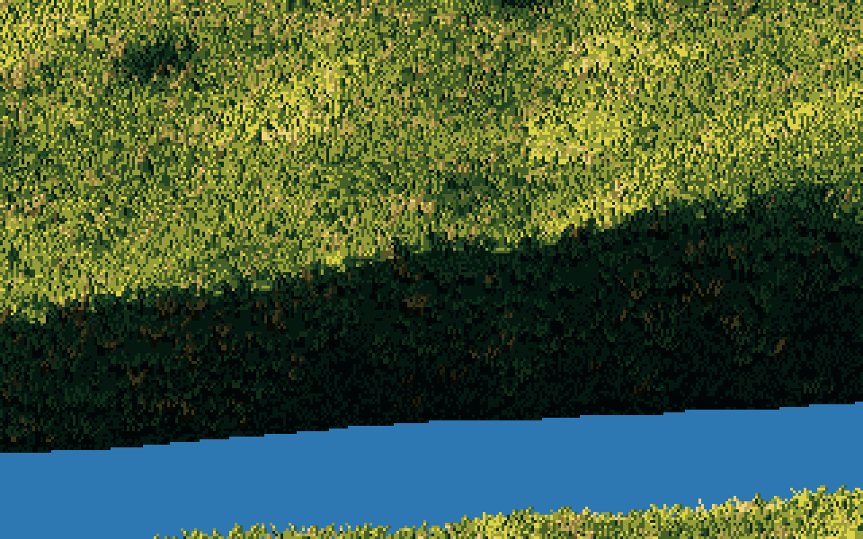
24. elements/grass-lod/img/wip.pngBash: Straighter, stacked strands; compare 8x
cd ~/work/pixelart-studies/elements/grass-lod/src && python3 - <<'EOF'
m=open('grasslod/marks.py').read()
m=m.replace("spread=0.35,","spread=0.08,").replace("droop=0.5, ","droop=0.25,")
m=m.replace("L = np.floor(ell * (0.55 + 0.45 * uj[0]) + uj[1]).astype(int)","L = np.floor(ell * (0.65 + 0.35 * uj[0]) + uj[1]).astype(int)")
m=m.replace("+ (uj[3] - 0.5) * 0.3","+ (uj[3] - 0.5) * 0.12")
m=m.replace(""" tipz = fr >= 0.4
main = np.where(tipz, v + 1.0 + mp["tip_boost"] * lt * (fr > 0.75), v - 1.0)""",""" main = np.where(fr < 0.3, v - 1.0, np.where(fr < 0.55, v, v + 1.0 + mp["tip_boost"] * lt * (fr > 0.8)))""")
m=m.replace("vs_all.append(np.minimum(v[pm] - 0.2, top[pm]))","vs_all.append(np.minimum(v[pm] - 1.0, top[pm]))")
open('grasslod/marks.py','w').write(m)
s=open('grasslod/painter.py').read()
s=s.replace("straw = np.where(marked, cmat == 1, base_straw)","straw = np.where(marked, (cmat == 1) & (canvas >= 3.5), base_straw)")
open('grasslod/painter.py','w').write(s)
w=open('grasslod/world.py').read()
w=w.replace("season_dead: float = 0.15","season_dead: float = 0.05")
open('grasslod/world.py','w').write(w)
EOF
cat > cmp8.py <<'EOF'
"""side-by-side 8x crops: mine vs Ferrari"""
import sys
from PIL import Image
a,ax,ay,b,bx,by,w,h,out=sys.argv[1:10]
ax,ay,bx,by,w,h=map(int,(ax,ay,bx,by,w,h))
A=Image.open(a).convert('RGB'); B=Image.open(b).convert('RGB')
k=8
ca=A.crop((ax,ay,ax+w,ay+h)).resize((w*k,h*k),Image.NEAREST)
cb=B.crop((bx,by,bx+w,by+h)).resize((w*k,h*k),Image.NEAREST)
S=Image.new('RGB',(w*k*2+8,h*k),'white'); S.paste(ca,(0,0)); S.paste(cb,(w*k+8,0)); S.save(out)
EOF
nice python3 stage1.py 30 && python3 -c "
from PIL import Image; im=Image.open('../img/wip.png'); im.resize((320,200),Image.NEAREST).save('../img/wip1x.png')"
python3 cmp8.py ../img/wip1x.png 150 20 ../../../pedagogy/master-copy/ref/native.png 20 330 60 50 ../img/cmp_wip.png
# output:
30.0 6.4Read: elements/grass-lod/img/cmp_wip.pngRead: elements/grass-lod/img/wip.png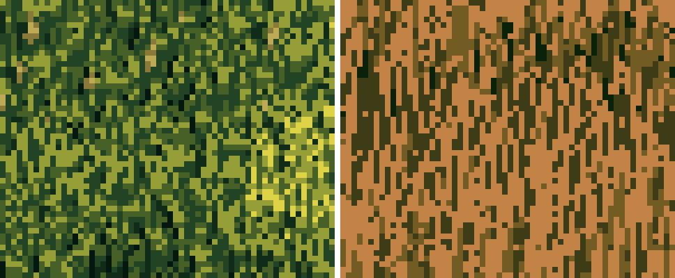
25. elements/grass-lod/img/cmp_wip.png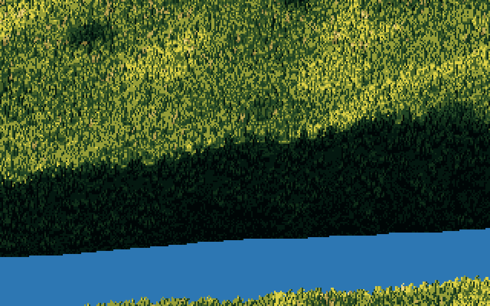
26. elements/grass-lod/img/wip.pngBash: View blade loop section
cd ~/work/pixelart-studies/elements/grass-lod/src && sed -n 150,215p grasslod/marks.py
# output:
side = -1 if (R.sun_screen_x < 0) else 1 # gap on the side away from the light... mirrored
xs_all, ys_all, vs_all, ks_all, ms_all, ds_all = [], [], [], [], [], []
rng_off = 0
for j in range(mp["max_blades"]):
has = nb > j
if not has.any():
break
uj = [np.modf(U[3 + (j + q) % 9] * (7.13 + 3.7 * q + j))[0] for q in range(5)]
L = np.floor(ell * (0.65 + 0.35 * uj[0]) + uj[1]).astype(int)
L = np.where(has, np.maximum(L, np.where(ell > 0.5, 1, 0)), 0)
rel = (j - (nb - 1) / 2.0) / np.maximum(nb, 1)
x0 = sx + (uj[2] - 0.5) * np.minimum(wpx, 2 + ell * 0.6)
a = wind * mp["wind_lean"] * (1 - stiff * 0.5) + mp["spread"] * rel * 2 + (uj[3] - 0.5) * 0.12
b = (mp["droop"] * (1 - stiff) * np.sign(a + 1e-6) * (0.5 + uj[4]))
pair = uj[4] < mp["p_pair"]
gap = uj[3] < mp["p_gap"]
Lmax = int(L.max()) if L.size else 0
for t in range(Lmax):
m = L > t
if not m.any():
continue
Lm = np.maximum(L, 1)
fr = t / Lm
xo = x0 + a * t + b * t * t / np.maximum(Lm, 1)
px = np.floor(xo).astype(int)
py = ry - t
# main column value
main = np.where(fr < 0.3, v - 1.0, np.where(fr < 0.55, v, v + 1.0 + mp["tip_boost"] * lt * (fr > 0.8)))
main = np.where(t == L - 1, v + 0.3, main) # mid cap
# tiny marks: dots and dabs
main = np.where(L == 1, np.where(uj[1] < 0.5, v + mp["dot_amp"], v - mp["dot_amp"]), main)
main = np.where((L == 2) & (t == 0), v - 1.0, main)
main = np.where((L == 2) & (t == 1), v + 1.0, main)
main = np.minimum(main, top)
sm = m
xs_all.append(px[sm]); ys_all.append(py[sm]); vs_all.append(main[sm])
ks_all.append(key0[sm] + 2); ms_all.append(straw[sm]); ds_all.append(y[sm])
# partner stem (one darker) on the far side, over the middle of the blade
pm = m & pair & (L >= 3) & (fr > 0.15) & (fr < 0.9)
xs_all.append(px[pm] - side); ys_all.append(py[pm]); vs_all.append(np.minimum(v[pm] - 1.0, top[pm]))
ks_all.append(key0[pm] + 1); ms_all.append(straw[pm]); ds_all.append(y[pm])
gm = m & gap & (L >= 3) & (fr < 0.7)
xs_all.append(px[gm] + side); ys_all.append(py[gm]); vs_all.append(np.maximum(v[gm] - mp["gap_depth"], 0.0))
ks_all.append(key0[gm]); ms_all.append(np.zeros(gm.sum(), np.int8)); ds_all.append(y[gm])
if not xs_all:
return
X = np.concatenate(xs_all); Y = np.concatenate(ys_all)
VV = np.concatenate(vs_all); K = np.concatenate(ks_all)
M = np.concatenate(ms_all); D = np.concatenate(ds_all)
inb = (X >= 0) & (X < W) & (Y >= 0) & (Y < H)
X, Y, VV, K, M, D = X[inb], Y[inb], VV[inb], K[inb], M[inb], D[inb]
# depth test against the terrain surface
vis = D <= R.depth[Y, X] + eps
X, Y, VV, K,Bash: Minority-stroke blades, flat banded base
cd ~/work/pixelart-studies/elements/grass-lod/src && python3 - <<'EOF'
m=open('grasslod/marks.py').read()
old=m[m.index(" # main column value"):m.index(" if not xs_all:")]
new=''' # minority-stroke rule: a lit mass is painted with dark strokes on a light
# base, a shadowed mass with light strokes on a dark base; in between, both.
body = v + off
main = np.where(fr > 0.8, body + light * mp["tip_boost"] * lt, body)
main = np.where((t == L - 1) & (L >= 3), v + off * 0.5, main) # adjacent-step cap
main = np.where((L == 2) & (t == 0) & light, v - 1.0, main) # dab: lit pip over dark
main = np.clip(main, 0.0, top)
xs_all.append(px[m]); ys_all.append(py[m]); vs_all.append(main[m])
ks_all.append(key0[m] + 2); ms_all.append(straw[m]); ds_all.append(y[m])
# partner stem one step toward the base, beside the blade over its middle
pm = m & pair & (L >= 3) & (fr > 0.15) & (fr < 0.85)
xs_all.append(px[pm] - side); ys_all.append(py[pm])
vs_all.append(np.clip(v[pm] + off[pm] * 0.5, 0, top[pm]))
ks_all.append(key0[pm] + 1); ms_all.append(straw[pm]); ds_all.append(y[pm])
# dark gap beside a light blade, deep in the sward
gm = m & gap & light & (L >= 3) & (fr < 0.7)
xs_all.append(px[gm] + side); ys_all.append(py[gm]); vs_all.append(np.maximum(v[gm] - mp["gap_depth"], 0.0))
ks_all.append(key0[gm]); ms_all.append(np.zeros(gm.sum(), np.int8)); ds_all.append(y[gm])
'''
m=m.replace(old,new)
m=m.replace(''' Lmax = int(L.max()) if L.size else 0
for t in range(Lmax):''',''' # stroke sign and depth from where the tuft's value sits in its family
pos = np.clip((v - bot_f) / (top - bot_f), 0, 1)
p_light = np.clip(mp["light_bias"] - 1.3 * pos, 0.06, 0.85)
ul = np.modf(U[11] * (5.31 + 2.1 * j))[0]
light = ul < p_light
ud = np.modf(U[10] * (3.77 + 1.3 * j))[0]
dark_off = np.where(ud < 0.55, -1.0, np.where(ud < 0.88, -2.0, -3.2))
off = np.where(light, 1.0, dark_off)
Lmax = int(L.max()) if L.size else 0
for t in range(Lmax):''')
m=m.replace(''' top = np.where(lt, fam_top[1], fam_top[0])
bot = np.where(lt, fam_bot[1], fam_bot[0])''',''' top = np.where(lt, fam_top[1], fam_top[0])
bot = np.where(lt, fam_bot[1], fam_bot[0])
bot_f = np.where(lt, 3.0, 0.2)''')
m=m.replace("x, y, U, sx, sy, ell, straw, rx, ry, v, lt, top, bot, tus = [a[..., order] for a in\n (x, y, U, sx, sy, ell, straw, rx, ry, v, lt, top, bot, tus)]",
"x, y, U, sx, sy, ell, straw, rx, ry, v, lt, top, bot, tus, bot_f = [a[..., order] for a in\n (x, y, U, sx, sy, ell, straw, rx, ry, v, lt, top, bot, tus, bot_f)]")
m=m.replace("gap_depth=2.5,","gap_depth=2.5,\n light_bias=1.05,")
m=m.replace("overlap=3.5,","overlap=0.3,")
open('grasslod/marks.py','w').write(m)
s=open('grasslod/painter.py').read()
s=s.replace("q_base = np.floor(base + rng.random((H, W))).astype(int)","""lo = np.floor(base)
f = base - lo
g = np.clip((f - 0.25) / 0.5, 0, 1) # flat bands, dither only across the seams
q_base = (lo + (g > rng.random((H, W)))).astype(int)""")
open('grasslod/painter.py','w').write(s)
EOF
grep -n "x, y, U, sx, sy, ell, straw, rx, ry, v, lt" grasslod/marks.py; nice python3 stage1.py 30 && python3 -c "
from PIL import Image; im=Image.open('../img/wip.png'); im.resize((320,200),Image.NEAREST).save('../img/wip1x.png')"
python3 cmp8.py ../img/wip1x.png 150 20 ../../../pedagogy/master-copy/ref/native.png 20 330 60 50 ../img/cmp_wip.png
# output:
141: x, y, U, sx, sy, ell, straw, rx, ry, v, lt, top, bot, tus, bot_f = [a[..., order] for a in
142: (x, y, U, sx, sy, ell, straw, rx, ry, v, lt, top, bot, tus, bot_f)]
30.0 5.9Read: elements/grass-lod/img/cmp_wip.png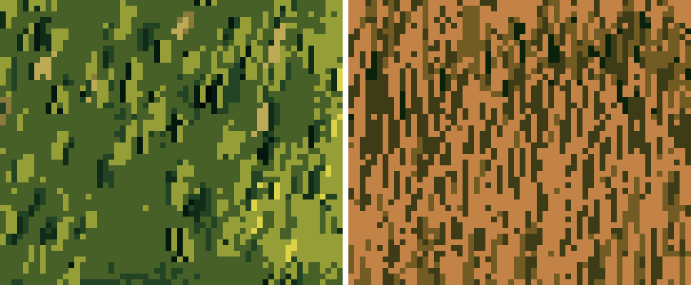
27. elements/grass-lod/img/cmp_wip.pngRead: elements/grass-lod/img/wip.png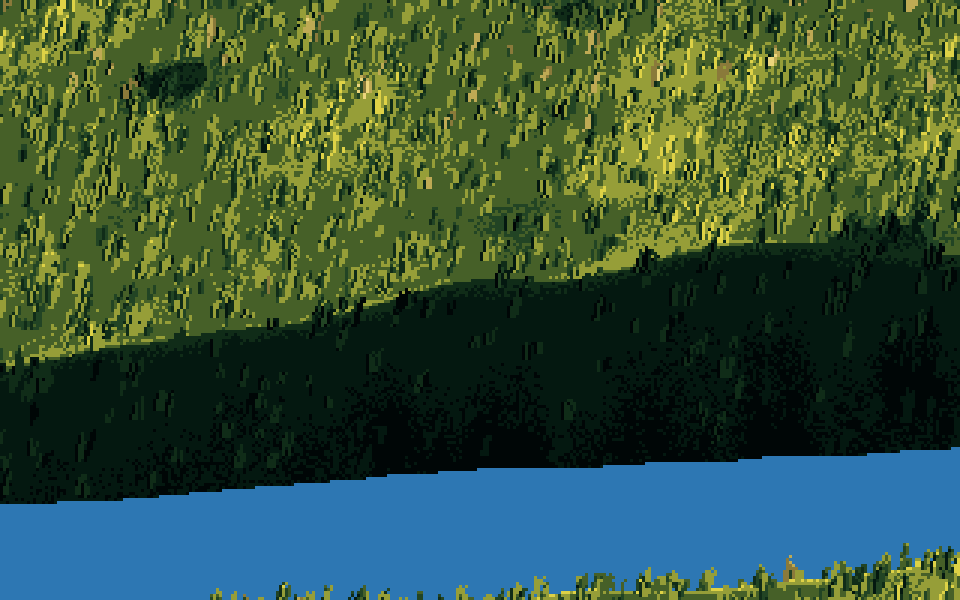
28. elements/grass-lod/img/wip.pngBash: Brighter lit base, denser strokes
cd ~/work/pixelart-studies/elements/grass-lod/src && python3 - <<'EOF'
r=open('grasslod/render.py').read()
r=r.replace("p = dict(exag=3.0, lit_lo=3.4,","p = dict(exag=3.0, lit_lo=3.9,")
open('grasslod/render.py','w').write(r)
m=open('grasslod/marks.py').read()
m=m.replace("overlap=0.3,","overlap=1.0,")
open('grasslod/marks.py','w').write(m)
p=open('grasslod/palette.py').read()
p=p.replace("green=[(0, 6, 6), (4, 24, 16), (16, 44, 24), (34, 68, 36), (70, 96, 40), (150, 158, 56), (222, 210, 70)]",
"green=[(0, 6, 6), (6, 28, 18), (22, 50, 28), (46, 76, 36), (92, 112, 44), (156, 158, 58), (222, 208, 76)]")
open('grasslod/palette.py','w').write(p)
EOF
nice python3 stage1.py 30 && python3 -c "
from PIL import Image; im=Image.open('../img/wip.png'); im.resize((320,200),Image.NEAREST).save('../img/wip1x.png')"
python3 cmp8.py ../img/wip1x.png 150 20 ../../../pedagogy/master-copy/ref/native.png 20 330 60 50 ../img/cmp_wip.png
# output:
30.0 7.1Read: elements/grass-lod/img/cmp_wip.png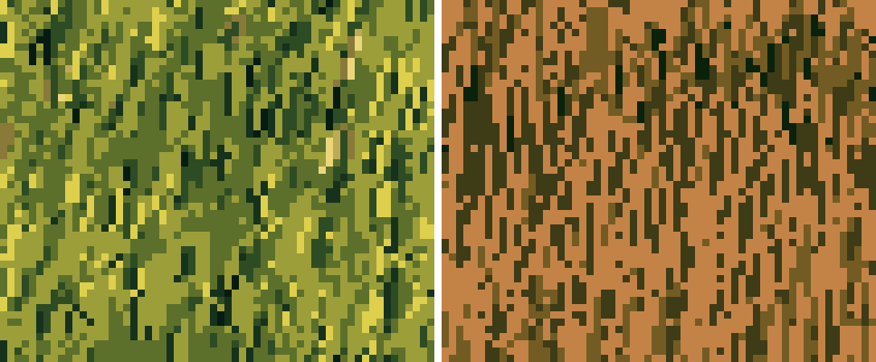
29. elements/grass-lod/img/cmp_wip.pngRead: elements/grass-lod/img/wip.png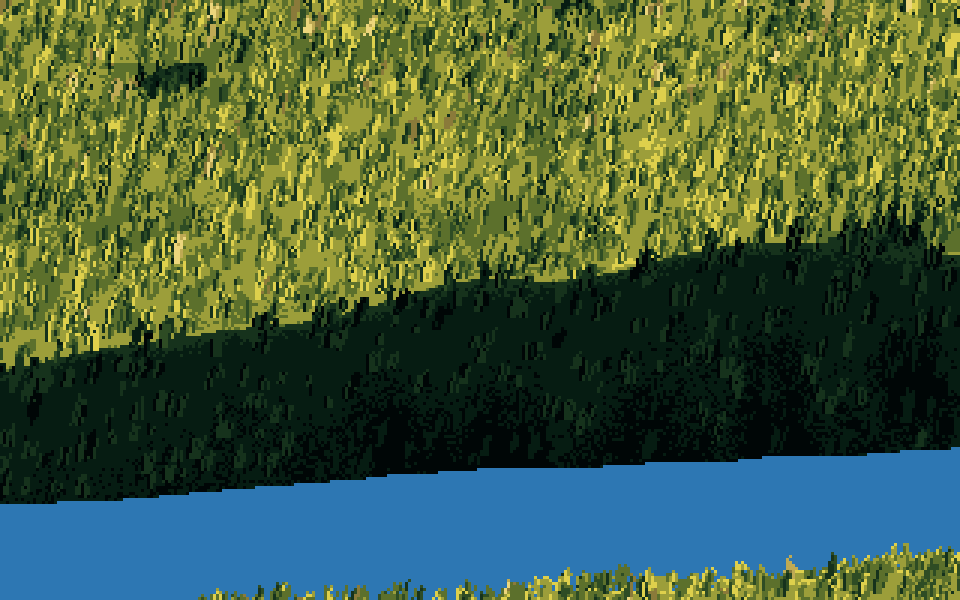
30. elements/grass-lod/img/wip.pngBash: Reserve highlight for crests; render ladder
cd ~/work/pixelart-studies/elements/grass-lod/src && python3 - <<'EOF'
m=open('grasslod/marks.py').read()
m=m.replace("main = np.where(fr > 0.8, body + light * mp[\"tip_boost\"] * lt, body)",
"main = np.where(fr > 0.7, body + light * mp[\"tip_boost\"] * lt * np.clip((v - 4.8) * 2, 0, 1), body)")
m=m.replace("tip_boost=0.7,","tip_boost=1.0,")
# ordinary strokes top out at 5 unless the tuft sits on a crest
m=m.replace("top = np.where(lt, fam_top[1], fam_top[0])\n bot = np.where(lt, fam_bot[1], fam_bot[0])\n bot_f",
"top = np.where(lt, np.minimum(fam_top[1], np.maximum(5.4, v + 0.6)), fam_top[0])\n bot = np.where(lt, fam_bot[1], fam_bot[0])\n bot_f")
open('grasslod/marks.py','w').write(m)
EOF
grep -n "top = np.where" grasslod/marks.py; nice python3 stage1.py 30 10 4 2 1 0.5 0.3
# output:
136: top = np.where(lt, np.minimum(fam_top[1], np.maximum(5.4, v + 0.6)), fam_top[0])
30.0 5.0
10.0 7.8
4.0 7.3
2.0 5.6
1.0 3.9
0.5 5.9
0.3 5.6Bash: Split ladder into two halves
cd ~/work/pixelart-studies/elements/grass-lod/src && python3 -c "
from PIL import Image
im=Image.open('../img/wip.png'); w,h=im.size
im.crop((0,0,w,h*4//7)).save('../img/wip_a.png'); im.crop((0,h*3//7,w,h)).save('../img/wip_b.png')"
# output:
(Bash completed with no output)Read: elements/grass-lod/img/wip_a.pngRead: elements/grass-lod/img/wip_b.png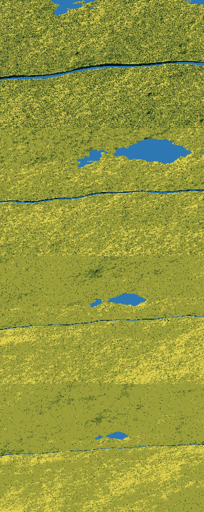
31. elements/grass-lod/img/wip_b.png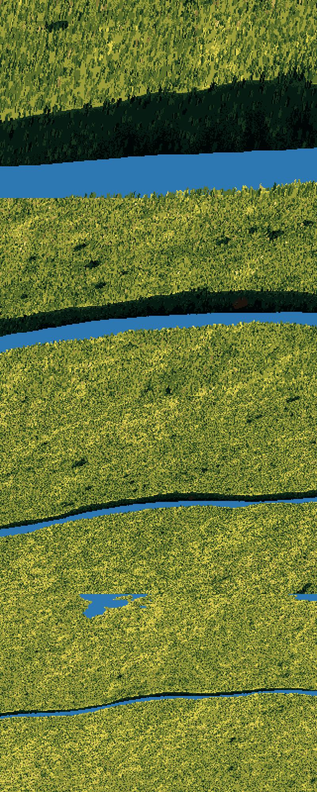
32. elements/grass-lod/img/wip_a.pngBash: Add tone lock, zoom-dependent banding, multiscale curvature
cd ~/work/pixelart-studies/elements/grass-lod/src && python3 - <<'EOF'
r=open('grasslod/render.py').read()
r=r.replace(''' e = max(p["curv_px"] / cam.ppm, 0.12)
X, Y = R.X, R.Y
mw = R.min_wl
z0 = world.height(X, Y, mw)
zn = (world.height(X + e, Y, mw) + world.height(X - e, Y, mw)
+ world.height(X, Y + e, mw) + world.height(X, Y - e, mw)) / 4
conv = np.clip((z0 - zn) / e * 4.0, -1, 1) # >0 crest, <0 fold''',''' # masses made of masses: convexity summed over three scales (3, 12, 40 px)
X, Y = R.X, R.Y
mw = R.min_wl
z0 = world.height(X, Y, mw)
conv = 0.0
for k, (px, wk) in enumerate(((p["curv_px"], 0.5), (12.0, 0.3), (40.0, 0.2))):
e = max(px / cam.ppm, 0.12)
zn = (world.height(X + e, Y, mw) + world.height(X - e, Y, mw)
+ world.height(X, Y + e, mw) + world.height(X, Y - e, mw)) / 4
conv = conv + wk * np.clip((z0 - zn) / e * 4.0 * (1 + k), -1, 1) # >0 crest, <0 fold''')
r=r.replace("sh_crest=0.6, fold=1.2,","sh_crest=0.6, fold=0.7,")
open('grasslod/render.py','w').write(r)
m=open('grasslod/marks.py').read()
m=m.replace(" light = ul < p_light\n"," light = np.where(L <= 1, ul < 0.5, ul < p_light)\n")
m=m.replace("off = np.where(light, 1.0, dark_off)","off = np.where(light, 1.0, np.where(L <= 1, -mp[\"dot_amp\"], dark_off))")
open('grasslod/marks.py','w').write(m)
s=open('grasslod/painter.py').read()
i=s.index(" if marks:"); j=s.index(" lo = np.floor(base)")
s=s[:i]+''' fin = np.isfinite(R.depth)
grass = (R.mat == 1)
if marks:
sp = SPECIES[world.species]
hmean = sp[0] * (1 - 0.75 * world.grazing)
ell = hmean * ppm * c
rho = 1.0 / (sp[1] ** 2 * ppm ** 2 * max(s, 0.05)) # tufts per px^2
cov = mp["coverage"] + mp["overlap"] * np.clip((ell - 1.5) / 4.0, 0, 1)
keep = min(1.0, cov / (rho * glyph_area(ell)))
R.keep, R.ell = keep, ell
pop = None
if fin.any():
margin = 3 * sp[0] + 3.0 / ppm
x0, x1 = R.X.min() - margin, R.X.max() + margin
y0 = R.Y[fin].min() - margin
y1 = R.Y[fin].max() + margin + 3 * sp[0] * c / max(s, 0.1)
pop = tuft_population(world, x0, x1, y0, y1, keep, seed=world.seed + seed)
# two passes: the second shifts the design so the squinted tone of marks+base
# equals the design value, per light family. This is what keeps the mean tone
# constant as the vocabulary changes with zoom.
Vd = V.copy()
for it in range(2 if mp["tone_lock"] else 1):
canvas[:] = np.nan
prio[:] = -1
if pop is not None:
paint_tufts(canvas, cmat, prio, R, Vd, lit, world, pop, mp,
fam_top=(2.9, 6.0), fam_bot=(0.0, 0.0))
if it == 0 and mp["tone_lock"]:
mk = ~np.isnan(canvas)
est = np.where(mk, np.floor(np.nan_to_num(canvas) + 0.5), Vd)
for fam in (lit, ~lit):
sel = fam & grass
if sel.sum() > 50:
d = (est[sel] - V[sel]).mean()
Vd[sel] -= d
base = Vd
else:
ell = 99
band_w = 0.5 * np.clip((ell - 1.0) / 3.0, 0, 1)
'''+s[j:]
s=s.replace("g = np.clip((f - 0.25) / 0.5, 0, 1) # flat bands, dither only across the seams",
"g = np.clip((f - 0.5 + band_w / 2) / np.maximum(1 - band_w, 1e-3), 0, 1) # near: flat bands; far: full stochastic")
open('grasslod/painter.py','w').write(s)
m=open('grasslod/marks.py').read()
m=m.replace("dot_amp=1.0,","dot_amp=1.0,\n tone_lock=True,")
open('grasslod/marks.py','w').write(m)
EOF
grep -n "band_w\|lo = np.floor" grasslod/painter.py
# output:
70: band_w = 0.5 * np.clip((ell - 1.0) / 3.0, 0, 1)
71: lo = np.floor(base)
73: g = np.clip((f - 0.5 + band_w / 2) / np.maximum(1 - band_w, 1e-3), 0, 1) # near: flat bands; far: full stochasticBash: Ladder tool with luminance readout
cd ~/work/pixelart-studies/elements/grass-lod/src && sed -i '' 's|g = np.clip((f - 0.5 + band_w / 2) / np.maximum(1 - band_w, 1e-3), 0, 1)|g = np.clip((f - band_w / 2) / np.maximum(1 - band_w, 1e-3), 0, 1)|' grasslod/painter.py && cat > ladder.py <<'EOF'
"""ladder.py out.png ppm1 ppm2 ... : same bank at several zooms, stacked, with mean luminance."""
import sys, time
import numpy as np
from PIL import Image, ImageDraw
from grasslod.world import World
from grasslod.render import Camera
from grasslod.painter import paint, centre_on_bank
from grasslod import palette as P
def lum(rgb):
return (0.2126*rgb[...,0]+0.7152*rgb[...,1]+0.0722*rgb[...,2])
def ladder(out, ppms, hour="day", theta=30, W=320, H=160, scale=2, world=None, **kw):
w = world or World(seed=1)
cy, cz = centre_on_bank(w)
tiles=[]
for ppm in ppms:
t=time.time()
cam = Camera(ppm=ppm, theta=theta, W=W, H=H, cx=0, cy=cy, cz=cz)
idx, pal, L = paint(w, cam, hour, return_layers=True, **kw)
rgb = P.to_rgb(idx, pal)
g = L['R'].mat==1
print(f"ppm {ppm:6.2f} ell {getattr(L['R'],'ell',0):5.2f} keep {getattr(L['R'],'keep',0):.4f} "
f"grass-lum {lum(rgb.astype(float))[g].mean():6.1f} {time.time()-t:.1f}s", flush=True)
im = Image.fromarray(rgb).resize((W*scale,H*scale),Image.NEAREST)
d = ImageDraw.Draw(im); d.rectangle((0,0,70,11),fill=(0,0,0)); d.text((2,0),f"{ppm:g} px/m",fill=(255,255,255))
tiles.append(np.array(im))
img=np.concatenate([np.pad(t,((0,3),(0,0),(0,0))) for t in tiles],0)
Image.fromarray(img).save(out)
if __name__=="__main__":
ladder(sys.argv[1], [float(a) for a in sys.argv[2:]])
EOF
nice python3 ladder.py ../img/wip.png 30 8 2 0.6
# output:
ppm 30.00 ell 7.73 keep 0.2058 grass-lum 86.9 6.1s
ppm 8.00 ell 2.06 keep 0.1003 grass-lum 134.6 5.2s
ppm 2.00 ell 0.52 keep 0.0110 grass-lum 157.6 5.0s
ppm 0.60 ell 0.15 keep 0.0010 grass-lum 157.4 3.4sRead: elements/grass-lod/img/wip.png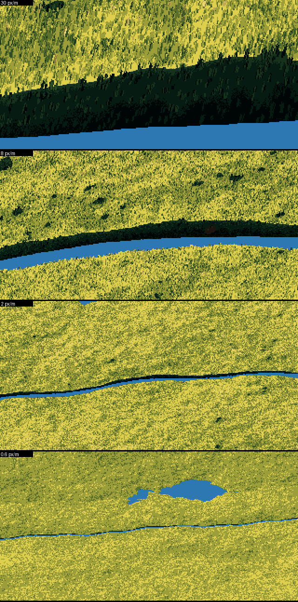
33. elements/grass-lod/img/wip.pngWrite: elements/grass-lod/src/grasslod/calibrate.py
"""Tone lock: keep the squinted tone of a patch constant across zoom.
The design value V means "what this grass looks like at the reference distance" (strokes
about ell_ref px long). At other distances the mark vocabulary changes (strokes, ticks,
dots, bare dither) and each vocabulary has a different mean offset from V (dark gaps pull
down, clipped highlights can't push up). We measure that offset once, on a flat patch,
for a grid of stroke lengths and design values, and paint every frame with
V' = V - (offset(ell, V) - offset(ell_ref, V)). So a patch's squinted tone at 0.3 px/m is
the squinted tone it had at 30 px/m, and a slow zoom never brightens or darkens.
"""
import json, os, hashlib
import numpy as np
_CACHE = {}
ELLS = np.array([0.08, 0.15, 0.25, 0.4, 0.6, 0.9, 1.3, 1.8, 2.5, 3.5, 5.0, 7.0, 10.0, 14.0, 20.0, 28.0])
VLIT = np.array([3.6, 4.3, 5.0, 5.6])
VSH = np.array([0.5, 1.1, 1.7, 2.4])
CACHE_DIR = os.path.join(os.path.dirname(__file__), "..", "..", "cache")
def _key(world, mp):
d = dict(species=world.species, grazing=round(world.grazing, 3), wind=round(world.wind, 2),
mp={k: v for k, v in mp.items() if k != "tone_lock"})
return hashlib.md5(json.dumps(d, sort_keys=True, default=str).encode()).hexdigest()[:12]
def table(world, mp):
k = _key(world, mp)
if k in _CACHE:
return _CACHE[k]
os.makedirs(CACHE_DIR, exist_ok=True)
fn = os.path.join(CACHE_DIR, f"tone_{k}.npz")
if os.path.exists(fn):
z = np.load(fn)
_CACHE[k] = (z["lit"], z["sh"])
return _CACHE[k]
lit, sh = _measure(world, mp)
np.savez(fn, lit=lit, sh=sh)
_CACHE[k] = (lit, sh)
return lit, sh
class _Flat:
"""Stand-in raster of a flat, uniformly lit patch."""
def _measure(world, mp):
from .render import Camera
from .marks import tuft_population, paint_tufts, glyph_area
from .world import SPECIES
from dataclasses import replace
import copy
fw = copy.copy(world)
fw.height = lambda x, y, min_wl=0.0: np.zeros(np.shape(x))
fw.water_level = -10.0
sp = SPECIES[world.species]
hmean = sp[0] * (1 - 0.75 * world.grazing)
W, H = 160, 120
theta = 30.0
out = {True: np.zeros((len(ELLS), len(VLIT))), False: np.zeros((len(ELLS), len(VSH)))}
for ie, ell in enumerate(ELLS):
cam = Camera(ppm=ell / (hmean * np.cos(np.radians(theta))), theta=theta, W=W, H=H)
R = _Flat()
R.cam = cam
R.min_wl = 1 / cam.ppm
R.sun_screen_x = -1
xs = (np.arange(W) + 0.5 - W / 2) / cam.ppm
rows = np.arange(H)
ys = ((H / 2 - (rows + 0.5)) / cam.ppm) / cam.s
R.X, R.Y = np.meshgrid(xs, ys)
R.depth = R.Y.copy()
rho = 1.0 / (sp[1] ** 2 * cam.ppm ** 2 * cam.s)
cov = mp["coverage"] + mp["overlap"] * np.clip((ell - 1.5) / 4.0, 0, 1)
keep = min(1.0, cov / (rho * glyph_area(ell)))
m = 3 * sp[0] + 3 / cam.ppm
pop = tuft_population(fw, xs.min() - m, xs.max() + m, ys.min() - m, ys.max() + m * 3, keep, seed=7)
for litfam, vals in ((True, VLIT), (False, VSH)):
for iv, v in enumerate(vals):
V = np.full((H, W), v)
L = np.full((H, W), litfam)
canvas = np.full((H, W), np.nan)
cm = np.zeros((H, W), np.int8)
pr = np.full((H, W), -1, np.int64)
if pop is not None:
paint_tufts(canvas, cm, pr, R, V, L, fw, pop, mp, fam_top=(2.9, 6.0), fam_bot=(0, 0))
inner = (slice(10, H - 4), slice(8, W - 8))
c = canvas[inner]
mk = ~np.isnan(c)
est = np.where(mk, np.clip(np.floor(np.nan_to_num(c) + 0.5), 0, 6), v)
out[litfam][ie, iv] = est.mean() - v
return out[True], out[False]
def offset(world, mp, ell, V, lit):
"""Mean offset (steps) of the painted patch relative to V, at stroke length ell."""
tl, ts = table(world, mp)
le = np.log(np.clip(ell, ELLS[0], ELLS[-1]))
lE = np.log(ELLS)
i = np.clip(np.searchsorted(lE, le) - 1, 0, len(ELLS) - 2)
t = (le - lE[i]) / (lE[i + 1] - lE[i])
def interp(tab, vals, Vv):
row = tab[i] * (1 - t) + tab[i + 1] * t
return np.interp(Vv, vals, row)
return np.where(lit, interp(tl, VLIT, V), interp(ts, VSH, V))
def correction(world, mp, ell, V, lit, ell_ref=8.0):
return offset(world, mp, ell, V, lit) - offset(world, mp, ell_ref, V, lit)
Bash: Wire tone lock calibration; print table
cd ~/work/pixelart-studies/elements/grass-lod/src && python3 - <<'EOF'
s=open('grasslod/painter.py').read()
i=s.index(" # two passes:"); j=s.index(" base = Vd")
s=s[:i]+''' # tone lock: shift the design so the squinted tone at this zoom equals the tone
# at the reference distance (see calibrate.py)
Vd = V.copy()
if mp["tone_lock"]:
Vd = V - correction(world, mp, ell, V, lit, mp["ell_ref"])
Vd = np.where(lit, np.clip(Vd, 3.0, 6.0), np.clip(Vd, 0.0, 2.9))
if pop is not None:
paint_tufts(canvas, cmat, prio, R, Vd, lit, world, pop, mp,
fam_top=(2.9, 6.0), fam_bot=(0.0, 0.0))
'''+s[j:]
s=s.replace("from . import palette as P","from . import palette as P\nfrom .calibrate import correction")
open('grasslod/painter.py','w').write(s)
m=open('grasslod/marks.py').read()
m=m.replace("tone_lock=True,","tone_lock=True,\n ell_ref=8.0,")
open('grasslod/marks.py','w').write(m)
EOF
nice python3 -c "
from grasslod.world import World; from grasslod.marks import MarkParams; from grasslod import calibrate as C
import numpy as np; np.set_printoptions(precision=2,suppress=True)
l,s=C.table(World(seed=1),MarkParams()); print(np.c_[C.ELLS,l]); print(np.c_[C.ELLS,s])"
# output:
[[ 0.08 0.02 -0.01 0. -0. ]
[ 0.15 0.03 -0.02 0. -0.01]
[ 0.25 0.06 -0.03 0. -0.01]
[ 0.4 0.13 -0.06 0.02 -0.02]
[ 0.6 0.23 -0.11 0.04 -0.03]
[ 0.9 0.25 -0.15 0.01 -0.06]
[ 1.3 0.22 -0.32 -0.24 -0.25]
[ 1.8 0.11 -0.43 -0.45 -0.39]
[ 2.5 0. -0.48 -0.57 -0.52]
[ 3.5 -0.04 -0.38 -0.48 -0.48]
[ 5. 0.02 -0.4 -0.57 -0.57]
[ 7. 0.07 -0.46 -0.65 -0.63]
[10. 0.13 -0.49 -0.67 -0.63]
[14. 0.14 -0.53 -0.68 -0.62]
[20. 0.16 -0.54 -0.7 -0.63]
[28. 0.17 -0.55 -0.72 -0.65]]
[[ 0.08 0.02 -0. 0.01 -0.01]
[ 0.15 0.04 -0.01 0.03 -0.03]
[ 0.25 0.07 -0.01 0.04 -0.05]
[ 0.4 0.16 -0.01 0.1 -0.09]
[ 0.6 0.28 -0.01 0.18 -0.15]
[ 0.9 0.31 -0.02 0.18 -0.21]
[ 1.3 0.34 -0.08 0.06 -0.47]
[ 1.8 0.28 -0.1 -0.12 -0.63]
[ 2.5 0.31 -0.05 -0.25 -0.76]
[ 3.5 0.3 0.04 -0.25 -0.65]
[ 5. 0.41 0.11 -0.26 -0.76]
[ 7. 0.48 0.11 -0.28 -0.85]
[10. 0.5 0.1 -0.27 -0.85]
[14. 0.51 0.06 -0.29 -0.86]
[20. 0.56 0.07 -0.28 -0.91]
[28. 0.57 0.1 -0.28 -0.92]]Bash: Rerender ladder with tone lock
cd ~/work/pixelart-studies/elements/grass-lod/src && nice python3 ladder.py ../img/wip.png 30 8 2 0.6 # output: ppm 30.00 ell 7.73 keep 0.2058 grass-lum 72.2 7.9s ppm 8.00 ell 2.06 keep 0.1003 grass-lum 109.8 2.2s ppm 2.00 ell 0.52 keep 0.0110 grass-lum 126.0 2.4s ppm 0.60 ell 0.15 keep 0.0010 grass-lum 126.6 2.9s
Read: elements/grass-lod/img/wip.png 34. elements/grass-lod/img/wip.png
34. elements/grass-lod/img/wip.png
Write: elements/grass-lod/src/zoom.py
"""zoom.py: continuous zoom of one grassy bank, 30 -> 0.3 px/m, plus pop metrics.
nice -n 10 python3 zoom.py NAME [--frames 96] [--hour day] [--theta 30] [--W 320 --H 180]
Writes ../img/zoom_NAME/fNNN.png, ../img/zoom_NAME.gif (2x), ../img/zoom_NAME_metrics.png.
Pop metrics between consecutive frames (A at ppm p, B at ppm p*r, r<1):
A is shrunk by r about the centre (area average) and compared with B's centre over the
same world area: tone = |mean lum difference|, struct = mean |blur2(A') - blur2(B)|.
A handoff a viewer never notices has no spikes in either curve.
"""
import os, sys, time, argparse
os.environ.setdefault("OPENBLAS_NUM_THREADS", "1")
os.environ.setdefault("OMP_NUM_THREADS", "1")
import numpy as np
from PIL import Image
from multiprocessing import Pool
def render(args):
i, ppm, o = args
from grasslod.world import World
from grasslod.render import Camera
from grasslod.painter import paint, centre_on_bank
from grasslod import palette as P
w = World(**o["world"])
cy, cz = centre_on_bank(w)
cam = Camera(ppm=ppm, theta=o["theta"], W=o["W"], H=o["H"], cx=0, cy=cy, cz=cz)
idx, pal = paint(w, cam, o["hour"], mparams=o.get("mparams"), vparams=o.get("vparams"))
rgb = P.to_rgb(idx, pal)
Image.fromarray(rgb).save(os.path.join(o["dir"], f"f{i:03d}.png"))
return i
def lum(a):
a = a.astype(float)
return 0.2126 * a[..., 0] + 0.7152 * a[..., 1] + 0.0722 * a[..., 2]
def blur(a, s=2.0):
from scipy.ndimage import gaussian_filter
return gaussian_filter(a, s)
def metrics(frames, ppms):
tone, struct, hf = [], [], []
for k in range(len(frames)):
L = lum(frames[k])
hf.append(np.abs(L - blur(L, 1.5)).mean())
for k in range(len(frames) - 1):
A, B = lum(frames[k]), lum(frames[k + 1])
r = ppms[k + 1] / ppms[k]
H, W = A.shape
# shrink A by r about centre
As = np.array(Image.fromarray(A.astype(np.float32)).resize(
(max(1, int(round(W * r))), max(1, int(round(H * r)))), Image.BOX))
h, w = As.shape
y0, x0 = (H - h) // 2, (W - w) // 2
Bc = B[y0:y0 + h, x0:x0 + w]
m = 6
tone.append(abs(As[m:-m, m:-m].mean() - Bc[m:-m, m:-m].mean()))
struct.append(np.abs(blur(As)[m:-m, m:-m] - blur(Bc)[m:-m, m:-m]).mean())
return np.array(tone), np.array(struct), np.array(hf)
def plot(path, ppms, tone, struct, hf):
from PIL import ImageDraw
Wp, Hp = 720, 300
im = Image.new("RGB", (Wp, Hp), (250, 250, 248))
d = ImageDraw.Draw(im)
n = len(ppms)
def X(k):
return 40 + (Wp - 60) * k / max(1, n - 1)
for arr, col, sc, lab in ((tone, (200, 60, 40), 4.0, "tone pop (lum)"),
(struct, (40, 90, 200), 2.0, "structure pop (lum, blur2)"),
(hf, (60, 150, 60), 2.0, "grain energy")):
pts = [(X(k + (0.5 if len(arr) < n else 0)), Hp - 30 - min(250, arr[k] * sc * 4)) for k in range(len(arr))]
d.line(pts, fill=col, width=2)
d.text((Wp - 230, 10 + 14 * ["tone pop (lum)", "structure pop (lum, blur2)", "grain energy"].index(lab)), lab, fill=col)
for k in range(0, n, max(1, n // 8)):
d.text((X(k) - 10, Hp - 20), f"{ppms[k]:.2g}", fill=(0, 0, 0))
d.text((5, Hp - 20), "px/m", fill=(0, 0, 0))
im.save(path)
def main():
ap = argparse.ArgumentParser()
ap.add_argument("name")
ap.add_argument("--frames", type=int, default=96)
ap.add_argument("--hour", default="day")
ap.add_argument("--theta", type=float, default=30)
ap.add_argument("--W", type=int, default=320)
ap.add_argument("--H", type=int, default=180)
ap.add_argument("--p0", type=float, default=30)
ap.add_argument("--p1", type=float, default=0.3)
ap.add_argument("--species", default="meadow")
ap.add_argument("--procs", type=int, default=4)
a = ap.parse_args()
d = os.path.join(os.path.dirname(__file__), "..", "img", f"zoom_{a.name}")
os.makedirs(d, exist_ok=True)
ppms = np.geomspace(a.p0, a.p1, a.frames)
o = dict(theta=a.theta, W=a.W, H=a.H, hour=a.hour, dir=d, world=dict(seed=1, species=a.species))
t = time.time()
with Pool(a.procs) as pool:
for i in pool.imap_unordered(render, [(i, p, o) for i, p in enumerate(ppms)]):
pass
print("render", round(time.time() - t), "s")
frames = [np.array(Image.open(os.path.join(d, f"f{i:03d}.png"))) for i in range(len(ppms))]
tone, struct, hf = metrics(frames, ppms)
np.savez(os.path.join(d, "metrics.npz"), ppms=ppms, tone=tone, struct=struct, hf=hf)
plot(os.path.join(d, "..", f"zoom_{a.name}_metrics.png"), ppms, tone, struct, hf)
print("tone pop max %.2f mean %.2f | struct max %.2f mean %.2f" % (tone.max(), tone.mean(), struct.max(), struct.mean()))
worst = np.argsort(-struct)[:5]
print("worst struct pairs:", [(int(k), round(float(ppms[k]), 2), round(float(struct[k]), 2)) for k in worst])
gif = os.path.join(d, "..", f"zoom_{a.name}.gif")
os.system(f"ffmpeg -y -loglevel error -framerate 12 -i {d}/f%03d.png "
f"-vf \"scale=iw*2:ih*2:flags=neighbor,split[s0][s1];[s0]palettegen=max_colors=64[p];[s1][p]paletteuse=dither=none\" {gif}")
# filmstrip: 8 frames
sel = np.linspace(0, len(frames) - 1, 8).astype(int)
strip = np.concatenate([np.pad(frames[k], ((0, 2), (0, 0), (0, 0))) for k in sel], 0)
Image.fromarray(strip).resize((strip.shape[1] * 2, strip.shape[0] * 2), Image.NEAREST).save(
os.path.join(d, "..", f"zoom_{a.name}_strip.png"))
if __name__ == "__main__":
main()
Bash: Render first continuous zoom with metrics
cd ~/work/pixelart-studies/elements/grass-lod/src && nice -n 10 python3 zoom.py v1 --frames 64 2>&1 | tail -5 # output: render 75 s tone pop max 2.90 mean 0.34 | struct max 5.53 mean 3.87 worst struct pairs: [(12, 12.48, 5.53), (24, 5.19, 4.78), (22, 6.01, 4.69), (23, 5.58, 4.68), (26, 4.48, 4.68)]
Read: elements/grass-lod/img/zoom_v1_metrics.png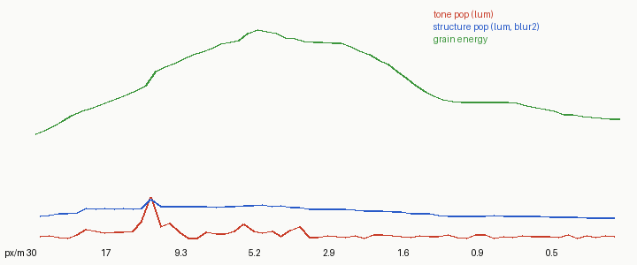
35. elements/grass-lod/img/zoom_v1_metrics.pngRead: elements/grass-lod/img/zoom_v1_strip.png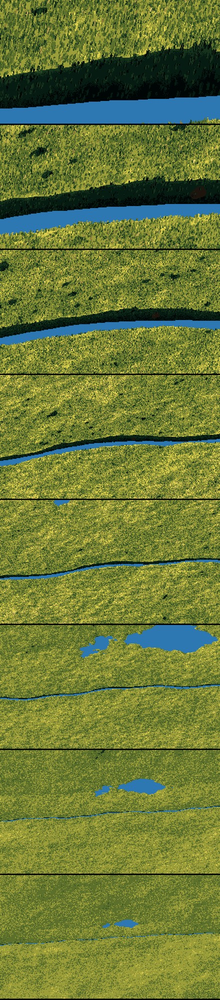
36. elements/grass-lod/img/zoom_v1_strip.pngBash: Montage frames around tone spike
cd ~/work/pixelart-studies/elements/grass-lod/img/zoom_v1 && python3 -c "
from PIL import Image; import numpy as np
fs=[np.array(Image.open('f%03d.png'%i)) for i in (11,12,13,14)]
Image.fromarray(np.concatenate([np.concatenate(fs[:2],1),np.concatenate(fs[2:],1)],0)).resize((1280,720),Image.NEAREST).save('../pair.png')"
# output:
(Bash completed with no output)Read: elements/grass-lod/img/pair.png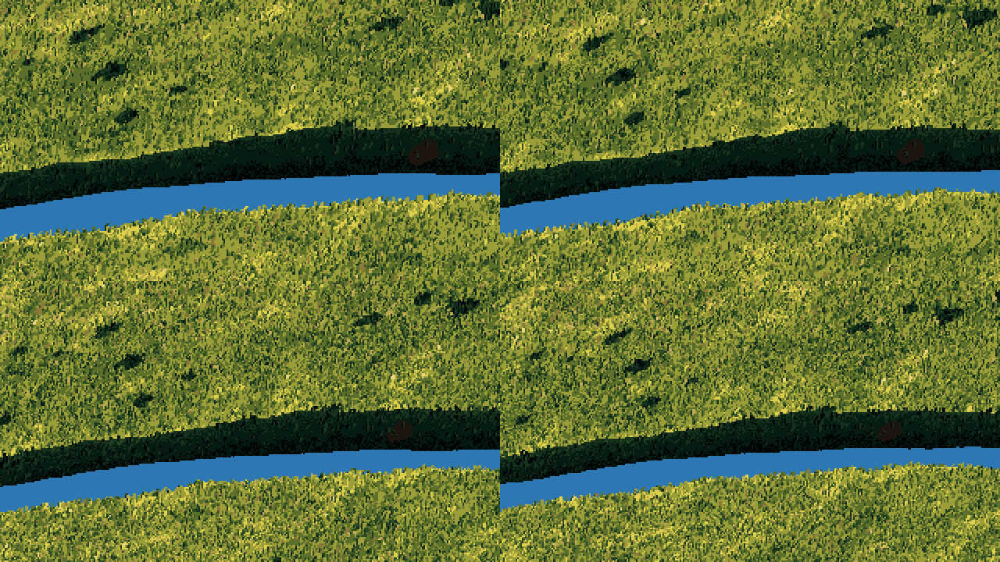
37. elements/grass-lod/img/pair.pngBash: Probe stats around the tone spike
cd ~/work/pixelart-studies/elements/grass-lod/src && nice python3 -c " import numpy as np from grasslod.world import World from grasslod.render import Camera from grasslod.painter import paint, centre_on_bank from grasslod import palette as P w=World(seed=1); cy,cz=centre_on_bank(w) for ppm in np.geomspace(13.5,11.5,7): cam=Camera(ppm=ppm,theta=30,W=320,H=180,cx=0,cy=cy,cz=cz) idx,pal,L=paint(w,cam,'day',return_layers=True) R=L['R']; g=(R.mat==1)&L['lit']; q=(idx-16)%8 print(round(ppm,2), 'keep %.4f'%R.keep, 'marked %.3f'%L['marked'][g].mean(), 'meanq %.3f'%q[g].mean(), 'V %.3f'%L['V'][g].mean()) " # output: 13.5 keep 0.1157 marked 0.539 meanq 4.242 V 4.870 13.14 keep 0.1123 marked 0.527 meanq 4.258 V 4.877 12.8 keep 0.1089 marked 0.522 meanq 4.268 V 4.884 12.46 keep 0.1057 marked 0.515 meanq 4.283 V 4.891 12.13 keep 0.1025 marked 0.502 meanq 4.302 V 4.897 11.81 keep 0.0994 marked 0.495 meanq 4.315 V 4.903 11.5 keep 0.1526 marked 0.659 meanq 4.187 V 4.909
Bash: Continuous glyph area; rerun zoom
cd ~/work/pixelart-studies/elements/grass-lod/src && python3 - <<'EOF'
m=open('grasslod/marks.py').read()
m=m.replace("wid = np.where(ell >= 3, 1.9, np.where(ell >= 1.5, 1.2, 1.0))","wid = 1.0 + 0.9 * np.clip((ell - 1.0) / 3.0, 0, 1) # continuous: no step = no pop")
open('grasslod/marks.py','w').write(m)
EOF
rm -f ../cache/*.npz; nice -n 10 python3 zoom.py v2 --frames 64 2>&1 | tail -3
# output:
render 149 s
tone pop max 0.72 mean 0.22 | struct max 4.63 mean 3.81
worst struct pairs: [(24, 5.19, 4.63), (26, 4.48, 4.6), (22, 6.01, 4.56), (20, 6.95, 4.52), (25, 4.82, 4.5)]Bash: World-anchored base dither threshold; rerun zoom
cd ~/work/pixelart-studies/elements/grass-lod/src && python3 - <<'EOF'
n=open('grasslod/noise.py').read()
n+='''
def stable_threshold(X, Y, ppm, px=1.6, seed=5):
"""Dither threshold anchored to the world surface (no shower-door shimmer on zoom).
Value noise with a lattice ~px screen pixels, living in world coordinates. As the
camera zooms, the lattice level (a power of two in world metres) changes; the two
nearest levels are cross-faded by the fractional zoom octave, so the pattern grows
and divides continuously instead of swimming or popping (cf. surface-stable
fractal dithering). Output is rank-flattened to uniform [0,1).
"""
cell = px / ppm
lv = np.log2(cell)
k = np.floor(lv)
f = lv - k
a = value_noise(X / 2 ** k, Y / 2 ** k, seed + int(k) * 3)
b = value_noise(X / 2 ** (k + 1), Y / 2 ** (k + 1), seed + int(k + 1) * 3)
# smooth-ish noise has few extremes; add a finer hash for grain
v = a * (1 - f) + b * f
r = np.argsort(np.argsort(v.ravel())).reshape(v.shape)
return (r + 0.5) / r.size
'''
open('grasslod/noise.py','w').write(n)
s=open('grasslod/painter.py').read()
s=s.replace("q_base = (lo + (g > rng.random((H, W)))).astype(int)","q_base = (lo + (g > stable_threshold(R.X, R.Y * cam.s, ppm))).astype(int)")
s=s.replace("from .calibrate import correction","from .calibrate import correction\nfrom .noise import stable_threshold")
open('grasslod/painter.py','w').write(s)
EOF
nice -n 10 python3 zoom.py v3 --frames 64 2>&1 | tail -3
# output:
render 148 s
tone pop max 0.71 mean 0.21 | struct max 4.47 mean 3.51
worst struct pairs: [(24, 5.19, 4.47), (25, 4.82, 4.44), (15, 10.02, 4.4), (26, 4.48, 4.35), (20, 6.95, 4.34)]Bash: Estimate metric noise floor
cd ~/work/pixelart-studies/elements/grass-lod/src && python3 -c "
import numpy as np; from PIL import Image
from zoom import metrics
d='../img/zoom_v3/'
z=np.load(d+'metrics.npz'); p=z['ppms']
fr=[np.array(Image.open(d+'f%03d.png'%i)) for i in range(64)]
# synthetic: nearest-neighbour zoom of frame 20 (perfectly stable content)
H,W=fr[0].shape[:2]; r=p[1]/p[0]
base=fr[20]; seq=[base]
for k in range(1,4):
s=r**k; w,h=int(round(W/s)),int(round(H/s))
big=Image.fromarray(base).resize((w,h),Image.NEAREST); x0,y0=(w-W)//2,(h-H)//2
seq.append(np.array(big)[y0:y0+H,x0:x0+W])
# reverse order so it's zooming out
seq=seq[::-1]
t,s,hf=metrics(seq,[p[0]*r**-k for k in range(3,-1,-1)])
print('floor struct',s)
"
# output:
floor struct [4.25373358 3.85703985 3.31264998]Bash: Montage frames at 3x
cd ~/work/pixelart-studies/elements/grass-lod/img/zoom_v3 && python3 -c "
from PIL import Image; import numpy as np
for name,ids in (('a',(0,10,20)),('b',(30,42,63))):
fs=[np.array(Image.open('f%03d.png'%i)) for i in ids]
Image.fromarray(np.concatenate(fs,0)).resize((960,1620),Image.NEAREST).save('../look_%s.png'%name)"
# output:
(Bash completed with no output)Read: elements/grass-lod/img/look_a.pngRead: elements/grass-lod/img/look_b.png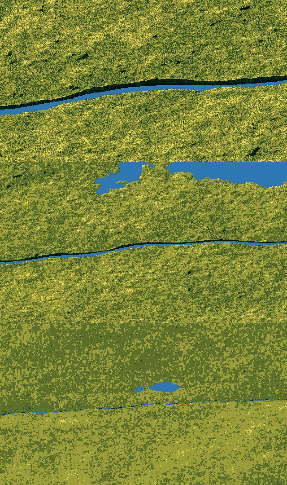
38. elements/grass-lod/img/look_b.png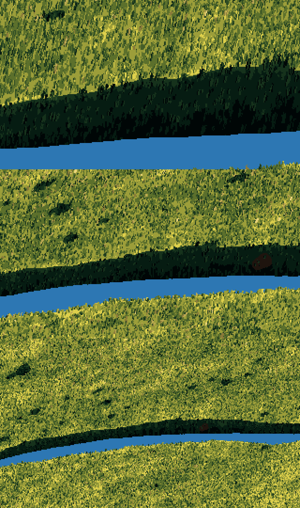
39. elements/grass-lod/img/look_a.pngBash: Locate code to modify
cd ~/work/pixelart-studies/elements/grass-lod/src && grep -n "dark_off\|keep\b\|def paint_tufts\|v = V\[cy, cx\]\|lt = lit" grasslod/marks.py | head; grep -n "conv\|lam_e =" grasslod/render.py | head -20 # output: 26:def tuft_population(world, x0, x1, y0, y1, keep, seed=0): 27: """All tufts with rank < keep in the world rectangle. Returns dict of arrays.""" 29: keep = float(np.clip(keep, 1e-9, 1.0)) 30: kmin = max(0, int(np.ceil(np.log(1.0 / keep) / np.log(4.0))) - 1) 37: if lo_rank >= keep and k > kmin: 53: m = rank < keep 106:def paint_tufts(canvas_v, canvas_m, prio, R, V, lit, world, pop, mp, fam_top, fam_bot): 136: v = V[cy, cx] 137: lt = lit[cy, cx] 176: dark_off = np.where(ud < 0.55, -1.0, np.where(ud < 0.88, -2.0, -3.2)) 125: Lit family: facing + crest sheen (convex ground and grazing view show lit tips). 138: lam_e = flat + p["exag"] * (lam - flat) 142: # convexity at a few pixels' scale 143: # masses made of masses: convexity summed over three scales (3, 12, 40 px) 147: conv = 0.0 152: conv = conv + wk * np.clip((z0 - zn) / e * 4.0 * (1 + k), -1, 1) # >0 crest, <0 fold 157: + p["crest"] * (np.maximum(conv, 0) + 0.5 * graze ** 2) 158: Vs = p["sh_lo"] + p["sh_span"] * np.clip(N[2], 0, 1) ** 2 + p["sh_crest"] * np.maximum(conv, 0) 159: V = np.where(lit, Vl, Vs) + p["fold"] * np.minimum(conv, 0) - p["wet_dark"] * (wet - 0.5) 161: R.conv = conv
Bash: Large-scale light, mottling, detail field, amplitude by size
cd ~/work/pixelart-studies/elements/grass-lod/src && python3 - <<'EOF'
r=open('grasslod/render.py').read()
r=r.replace(''' lam_e = flat + p["exag"] * (lam - flat)''',''' # large-scale facing (hill / bank scale, ~30 px): the big value planes that carry a
# region view, exaggerated harder than the small facets
eL = max(p["large_px"] / cam.ppm, 0.3)
NL = world.normal(R.X, R.Y, max(R.min_wl, eL / 2), eps=eL)
lamL = NL[0] * sun[0] + NL[1] * sun[1] + NL[2] * sun[2]
lam_e = flat + p["exag"] * (lam - flat) + p["exag_large"] * (lamL - flat)''')
r=r.replace("wet_dark=0.4, lit_thresh=0.12, curv_px=3.0)","wet_dark=0.4, lit_thresh=0.12, curv_px=3.0,\n large_px=30.0, exag_large=3.0, mottle=0.45)")
r=r.replace(''' V = np.where(lit, Vl, Vs) + p["fold"] * np.minimum(conv, 0) - p["wet_dark"] * (wet - 0.5)''',''' # colonies / swards: tone mottling at 8-60 m, the texture of grassland seen from afar
mot = fbm(X, Y, 60.0, 3, 0.55, seed=world.seed + 61)
fold = np.minimum(conv, 0) * np.where(conv < -0.5, 0.6, 1.0)
V = np.where(lit, Vl, Vs) + p["fold"] * fold - p["wet_dark"] * (wet - 0.5) + p["mottle"] * mot * np.where(lit, 1.0, 0.5)''')
r=r.replace("from . import palette as P","from . import palette as P\nfrom .noise import fbm")
r=r.replace(" R.conv = conv\n"," R.conv = conv\n R.graze = graze\n")
open('grasslod/render.py','w').write(r)
m=open('grasslod/marks.py').read()
m=m.replace(''' dark_off = np.where(ud < 0.55, -1.0, np.where(ud < 0.88, -2.0, -3.2))''',''' # contrast inside the stroke grows with its size: at a distance the gaps between
# blades are sub-pixel and merge, so deep darks are only allowed once strokes are
# long enough; each blade crosses over at its own ell (staggered by ud)
a2 = np.clip((ell - 2.0) / 3.0, 0, 1)
a3 = np.clip((ell - 4.0) / 4.0, 0, 1)
dark_off = np.where(ud < 1 - 0.45 * a2, -1.0, np.where(ud < 1 - 0.12 * a3, -2.0, -3.2))''')
# detail field: marks gather on crests at distance
m=m.replace(''' v = V[cy, cx]
lt = lit[cy, cx]''',''' v = V[cy, cx]
lt = lit[cy, cx]
# detail at edges: at a distance marks crowd crests and thin in bodies
if getattr(R, "conv", None) is not None and mp["detail"] > 0:
cv = R.conv[cy, cx]
gz = R.graze[cy, cx]
kap = np.clip(0.45 + 1.6 * np.maximum(cv, 0) + 0.5 * gz ** 2, 0.25, 1.8)
strength = mp["detail"] * (1 - np.clip((ell - 3.0) / 4.0, 0, 1) * 0.7)
kap = 1 + strength * (kap - 1)
keepk = pop.get("keep", 1.0)
rank = pop["rank"][ok][sel] if "rank" in pop else None
if rank is not None:
drop = rank > keepk * kap
dsel = ~drop
x, y, z, U, sx, sy, h, ell, straw, rx, ry, tus, cx, cy, v, lt = [a[..., dsel] for a in
(x, y, z, U, sx, sy, h, ell, straw, rx, ry, tus, cx, cy, v, lt)]''')
m=m.replace("dot_amp=1.0,","dot_amp=1.0,\n detail=0.8,")
open('grasslod/marks.py','w').write(m)
s=open('grasslod/painter.py').read()
s=s.replace("pop = tuft_population(world, x0, x1, y0, y1, keep, seed=world.seed + seed)",
"pop = tuft_population(world, x0, x1, y0, y1, min(1.0, keep * 1.8), seed=world.seed + seed)\n if pop is not None:\n pop['keep'] = keep")
open('grasslod/painter.py','w').write(s)
c=open('grasslod/calibrate.py').read()
c=c.replace("pop = tuft_population(fw, xs.min() - m, xs.max() + m, ys.min() - m, ys.max() + m * 3, keep, seed=7)",
"pop = tuft_population(fw, xs.min() - m, xs.max() + m, ys.min() - m, ys.max() + m * 3, min(1.0, keep * 1.8), seed=7)\n if pop is not None:\n pop['keep'] = keep")
open('grasslod/calibrate.py','w').write(c)
EOF
grep -n "sel = onscreen" -A3 grasslod/marks.py
# output:
130: sel = onscreen
131- x, y, z, U, sx, sy, h, ell, straw, rx, ry, tus = [a[..., sel] for a in (x, y, z, U, sx, sy, h, ell, straw, rx, ry, tus)]
132- if len(x) == 0:
133- returnBash: Fix detail dropout; render ladder
cd ~/work/pixelart-studies/elements/grass-lod/src && python3 - <<'EOF'
m=open('grasslod/marks.py').read()
i=m.index(" # detail at edges:"); j=m.index(" top = np.where(lt,")
m=m[:i]+''' # detail at edges: at a distance marks crowd crests and thin in bodies
kap = np.ones(len(x))
if getattr(R, "conv", None) is not None and mp["detail"] > 0:
cv = R.conv[cy, cx]
gz = R.graze[cy, cx]
k0 = np.clip(0.45 + 1.6 * np.maximum(cv, 0) + 0.5 * gz ** 2, 0.25, 1.8)
strength = mp["detail"] * (1 - np.clip((ell - 3.0) / 4.0, 0, 1) * 0.7)
kap = 1 + strength * (k0 - 1)
rank = pop["rank"][ok][sel]
dsel = rank < pop.get("keep", 1.0) * kap
x, y, z, U, sx, sy, h, ell, straw, rx, ry, tus, cx, cy, v, lt = [a[..., dsel] for a in
(x, y, z, U, sx, sy, h, ell, straw, rx, ry, tus, cx, cy, v, lt)]
if len(x) == 0:
return
'''+m[j:]
open('grasslod/marks.py','w').write(m)
EOF
rm -f ../cache/*; nice python3 ladder.py ../img/wip.png 30 8 2 0.6 0.3
# output:
ppm 30.00 ell 7.73 keep 0.2058 grass-lum 68.5 21.0s
ppm 8.00 ell 2.06 keep 0.0913 grass-lum 107.2 4.0s
ppm 2.00 ell 0.52 keep 0.0110 grass-lum 130.0 4.9s
ppm 0.60 ell 0.15 keep 0.0010 grass-lum 128.7 3.9s
ppm 0.30 ell 0.08 keep 0.0002 grass-lum 127.9 2.7sRead: elements/grass-lod/img/wip.png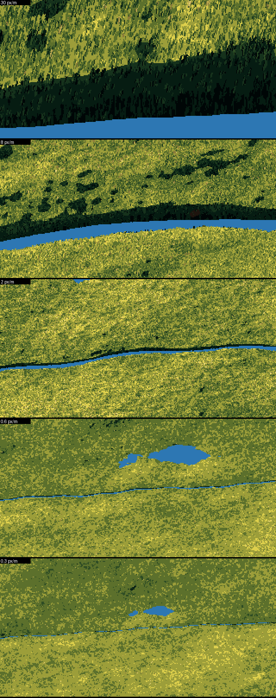
40. elements/grass-lod/img/wip.pngBash: Tame shadow blobs, reserve step 6
cd ~/work/pixelart-studies/elements/grass-lod/src && python3 - <<'EOF'
r=open('grasslod/render.py').read()
r=r.replace("large_px=30.0, exag_large=3.0,","large_px=30.0, exag_large=1.5,")
r=r.replace("V = np.where(lit, np.clip(V, 3.0, 6.0), np.clip(V, 0.2, 2.8))","V = np.where(lit, np.clip(V, 3.0, 5.45), np.clip(V, 0.2, 2.8)) # step 6 is reserved for sun-struck tips")
open('grasslod/render.py','w').write(r)
w=open('grasslod/world.py').read()
w=w.replace("z = z + 0.6 * hum","z = z + 0.45 * hum")
open('grasslod/world.py','w').write(w)
s=open('grasslod/painter.py').read()
s=s.replace("Vd = np.where(lit, np.clip(Vd, 3.0, 6.0), np.clip(Vd, 0.0, 2.9))","Vd = np.where(lit, np.clip(Vd, 3.0, 5.45), np.clip(Vd, 0.0, 2.9))")
open('grasslod/painter.py','w').write(s)
EOF
nice python3 ladder.py ../img/wip.png 30 8 2 0.6 0.3
# output:
ppm 30.00 ell 7.73 keep 0.2058 grass-lum 72.0 9.3s
ppm 8.00 ell 2.06 keep 0.0913 grass-lum 110.9 8.2s
ppm 2.00 ell 0.52 keep 0.0110 grass-lum 125.3 4.2s
ppm 0.60 ell 0.15 keep 0.0010 grass-lum 126.6 2.4s
ppm 0.30 ell 0.08 keep 0.0002 grass-lum 125.7 2.4sRead: elements/grass-lod/img/wip.png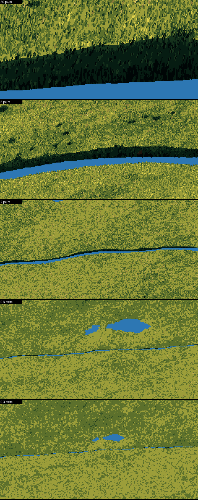
41. elements/grass-lod/img/wip.pngBash: Centre camera on stream; render near
cd ~/work/pixelart-studies/elements/grass-lod/src && python3 - <<'EOF'
s=open('grasslod/painter.py').read()
s=s.replace('''def centre_on_bank(world, x=0.0, back=1.2):
yc, hw = world.channel(np.array(x))''','''def centre_on_bank(world, x=0.0, back=0.0):
yc, hw = world.channel(np.array(x))
if back == 0.0:
return float(yc), float(world.water_level)''')
open('grasslod/painter.py','w').write(s)
EOF
nice python3 ladder.py ../img/wip.png 30 15
# output:
ppm 30.00 ell 7.73 keep 0.2058 grass-lum 76.6 11.2s
ppm 15.00 ell 3.86 keep 0.1332 grass-lum 99.0 10.3sRead: elements/grass-lod/img/wip.png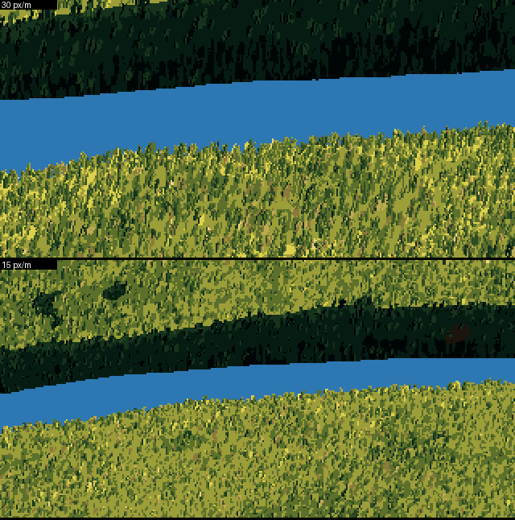
42. elements/grass-lod/img/wip.pngBash: Locate lines for silhouette changes
cd ~/work/pixelart-studies/elements/grass-lod/src && grep -n "nb = np.clip\|L = np.floor(ell\|b = (mp\[\"droop\"\]\|vis = D <=\|X, Y, VV, K, M = X\[vis\]" grasslod/marks.py # output: 76: nb = np.clip(ell / 3.0 + 0.5, 1, 6) 167: nb = np.clip(np.floor(ell / mp["blade_div"] * (1 + 0.8 * tus) + U[2]), 1, mp["max_blades"]).astype(int) 177: L = np.floor(ell * (0.65 + 0.35 * uj[0]) + uj[1]).astype(int) 182: b = (mp["droop"] * (1 - stiff) * np.sign(a + 1e-6) * (0.5 + uj[4])) 234: vis = D <= R.depth[Y, X] + eps 235: X, Y, VV, K, M = X[vis], Y[vis], VV[vis], K[vis], M[vis]
Bash: Silhouette fringe + counterchange
cd ~/work/pixelart-studies/elements/grass-lod/src && python3 - <<'EOF'
m=open('grasslod/marks.py').read()
m=m.replace(''' nb = np.clip(np.floor(ell / mp["blade_div"] * (1 + 0.8 * tus) + U[2]), 1, mp["max_blades"]).astype(int)''',''' # silhouette tufts: is there background (water, sky, or ground well behind) just
# above the root? Edge-on lip grass shows its full height, is longer (ungrazed
# lips) and falls into fewer, curving, grouped blades: the fringe.
probe = np.clip(ry - np.maximum(2, (0.6 * ell).astype(int)), 0, H - 1)
bgd = R.depth[probe, cx]
silh = (bgd > y + mp["silh_gap"]) & (ell >= 2.5)
ell = np.where(silh, ell * mp["silh_len"], ell)
nb = np.clip(np.floor(ell / mp["blade_div"] * (1 + 0.8 * tus) * np.where(silh, 0.6, 1.0) + U[2]),
1, mp["max_blades"]).astype(int)''')
m=m.replace(''' b = (mp["droop"] * (1 - stiff) * np.sign(a + 1e-6) * (0.5 + uj[4]))''',''' b = (mp["droop"] * (1 - stiff) * np.sign(a + 1e-6) * (0.5 + uj[4])) * np.where(silh, 2.2, 1.0)
# fringe heights vary ~3:1
L = np.where(silh & has, np.floor(ell * (0.35 + 0.65 * uj[0] ** 0.7) + uj[1]).astype(int), L)''')
# record background info per pixel & counterchange
m=m.replace(''' vis = D <= R.depth[Y, X] + eps
X, Y, VV, K, M = X[vis], Y[vis], VV[vis], K[vis], M[vis]''',''' vis = D <= R.depth[Y, X] + eps
X, Y, VV, K, M, D = X[vis], Y[vis], VV[vis], K[vis], M[vis], D[vis]
# counterchange: a blade seen against something behind it (water, sky, far ground)
# is pushed away from that background's value: dark against light, light against dark
bgdep = R.depth[Y, X]
against = bgdep > D + mp["silh_gap"]
if against.any() and getattr(R, "bg_value", None) is not None:
bv = R.bg_value[Y, X]
vv = VV
push_dark = bv >= vv - 0.5
newv = np.where(push_dark, np.minimum(vv, bv - mp["cc_step"]), np.maximum(vv, bv + mp["cc_step"]))
VV = np.where(against, np.clip(newv, 0, 6), VV)''')
m=m.replace("detail=0.8,","detail=0.8,\n silh_gap=1.0, # metres of depth behind a blade that count as 'background'\n silh_len=1.35,\n cc_step=1.6,")
open('grasslod/marks.py','w').write(m)
s=open('grasslod/painter.py').read()
# bg value: grass V, water/sky as light values in step units
s=s.replace(" fin = np.isfinite(R.depth)\n grass = (R.mat == 1)",""" fin = np.isfinite(R.depth)
grass = (R.mat == 1)
bgv = V.copy()
bgv[R.water] = 4.8 # water and sky read as light behind grass
bgv[R.sky] = 5.5
R.bg_value = bgv""")
open('grasslod/painter.py','w').write(s)
EOF
rm -f ../cache/*; nice python3 ladder.py ../img/wip.png 30 15
# output:
ppm 30.00 ell 7.73 keep 0.2058 grass-lum 76.7 21.5s
ppm 15.00 ell 3.86 keep 0.1332 grass-lum 98.9 3.4sRead: elements/grass-lod/img/wip.png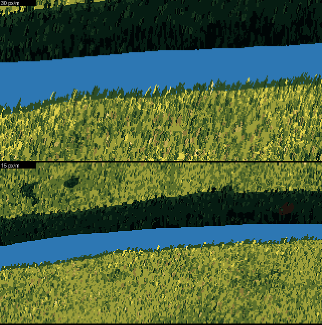
43. elements/grass-lod/img/wip.pngBash: 8x fringe vs Ferrari C4
cd ~/work/pixelart-studies/elements/grass-lod/src && python3 -c "
from PIL import Image; im=Image.open('../img/wip.png'); im.crop((0,0,640,320)).resize((320,160),Image.NEAREST).save('../img/wip1x.png')"
python3 cmp8.py ../img/wip1x.png 40 60 ../../../pedagogy/master-copy/ref/native.png 330 395 60 40 ../img/cmp_wip.png
# output:
(Bash completed with no output)Read: elements/grass-lod/img/cmp_wip.png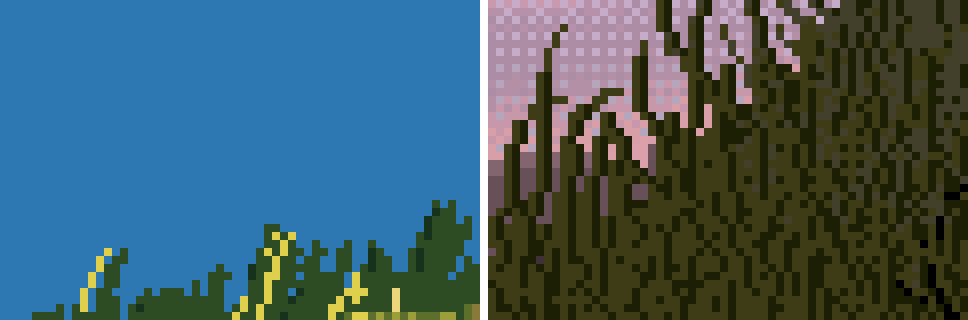
44. elements/grass-lod/img/cmp_wip.pngBash: Water as light background; rerender fringe
cd ~/work/pixelart-studies/elements/grass-lod/src && sed -i '' 's/bgv\[R.water\] = 4.8 /bgv[R.water] = 6.6 /; s/bgv\[R.sky\] = 5.5/bgv[R.sky] = 7.0/' grasslod/painter.py && sed -i '' 's/np.where(silh, 0.6, 1.0) + U\[2\]/np.where(silh, 1.0, 1.0) + U[2]/' grasslod/marks.py && grep -n "bgv\[" grasslod/painter.py && rm -f ../cache/* && nice python3 ladder.py ../img/wip.png 30 && python3 -c "
from PIL import Image; im=Image.open('../img/wip.png'); im.resize((320,160),Image.NEAREST).save('../img/wip1x.png')" && python3 cmp8.py ../img/wip1x.png 40 60 ../../../pedagogy/master-copy/ref/native.png 330 395 60 40 ../img/cmp_wip.png
# output:
39: bgv[R.water] = 6.6 # water and sky read as light behind grass
40: bgv[R.sky] = 7.0
ppm 30.00 ell 7.73 keep 0.2058 grass-lum 76.3 15.8sRead: elements/grass-lod/img/cmp_wip.png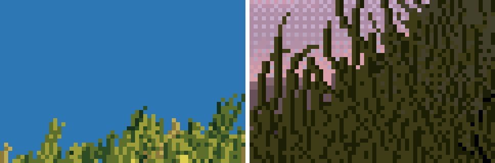
45. elements/grass-lod/img/cmp_wip.pngBash: Material-based silhouette test
cd ~/work/pixelart-studies/elements/grass-lod/src && python3 - <<'EOF'
m=open('grasslod/marks.py').read()
m=m.replace("silh = (bgd > y + mp[\"silh_gap\"]) & (ell >= 2.5)","silh = ((bgd > y + mp[\"silh_gap\"]) | (R.mat[probe, cx] != 1)) & (ell >= 2.5)")
m=m.replace("against = bgdep > D + mp[\"silh_gap\"]","against = (bgdep > D + mp[\"silh_gap\"]) | (R.mat[Y, X] != 1)")
open('grasslod/marks.py','w').write(m)
EOF
nice python3 ladder.py ../img/wip.png 30 && python3 -c "
from PIL import Image; im=Image.open('../img/wip.png'); im.resize((320,160),Image.NEAREST).save('../img/wip1x.png')" && python3 cmp8.py ../img/wip1x.png 40 60 ../../../pedagogy/master-copy/ref/native.png 330 395 60 40 ../img/cmp_wip.png
# output:
ppm 30.00 ell 7.73 keep 0.2058 grass-lum 76.3 10.1sBash: Add mat to calibration raster
cd ~/work/pixelart-studies/elements/grass-lod/src && sed -i '' 's/ R.depth = R.Y.copy()/ R.depth = R.Y.copy()\n R.mat = np.ones((H, W), np.int8)/' grasslod/calibrate.py && grep -n "R.mat" grasslod/calibrate.py # output: 72: R.mat = np.ones((H, W), np.int8)
Read: elements/grass-lod/img/cmp_wip.png 46. elements/grass-lod/img/cmp_wip.png
46. elements/grass-lod/img/cmp_wip.png
Bash: Check bg_value wiring
cd ~/work/pixelart-studies/elements/grass-lod/src && grep -n "bg_value\|bgv" grasslod/*.py; grep -n "against" grasslod/marks.py # output: grasslod/marks.py:253: if against.any() and getattr(R, "bg_value", None) is not None: grasslod/marks.py:254: bv = R.bg_value[Y, X] grasslod/painter.py:38: bgv = V.copy() grasslod/painter.py:39: bgv[R.water] = 6.6 # water and sky read as light behind grass grasslod/painter.py:40: bgv[R.sky] = 7.0 grasslod/painter.py:41: R.bg_value = bgv 10:dropped) compares a continuous function of ell against one of the tuft's own random 169: # blade count: stochastic rounding against the tuft's own number 246: # depth test against the terrain surface 249: # counterchange: a blade seen against something behind it (water, sky, far ground) 250: # is pushed away from that background's value: dark against light, light against dark 252: against = (bgdep > D + mp["silh_gap"]) | (R.mat[Y, X] != 1) 253: if against.any() and getattr(R, "bg_value", None) is not None: 258: VV = np.where(against, np.clip(newv, 0, 6), VV)
Bash: Stronger counterchange against water
cd ~/work/pixelart-studies/elements/grass-lod/src && sed -i '' 's/bgv\[R.water\] = 6.6 /bgv[R.water] = 4.6 /; s/bgv\[R.sky\] = 7.0/bgv[R.sky] = 5.0/' grasslod/painter.py && sed -i '' 's/cc_step=1.6,/cc_step=2.2,/' grasslod/marks.py && rm -f ../cache/* && nice python3 ladder.py ../img/wip.png 30 && python3 -c "
from PIL import Image; im=Image.open('../img/wip.png'); im.resize((320,160),Image.NEAREST).save('../img/wip1x.png')" && python3 cmp8.py ../img/wip1x.png 40 60 ../../../pedagogy/master-copy/ref/native.png 330 395 60 40 ../img/cmp_wip.png
# output:
ppm 30.00 ell 7.73 keep 0.2058 grass-lum 76.3 18.8sRead: elements/grass-lod/img/cmp_wip.png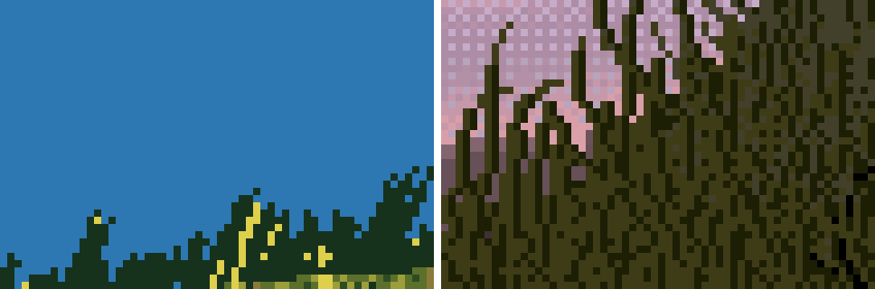
47. elements/grass-lod/img/cmp_wip.pngBash: Thin fringe blades, taller
cd ~/work/pixelart-studies/elements/grass-lod/src && python3 - <<'EOF'
m=open('grasslod/marks.py').read()
m=m.replace(''' push_dark = bv >= vv - 0.5''',''' push_dark = (bv >= vv - 0.5) | (R.mat[Y, X] != 1)''')
m=m.replace(''' VV = np.where(against, np.clip(newv, 0, 6), VV)''',''' VV = np.where(against, np.clip(newv, 0, 6), VV)
# against the background only the blade's own 1-px line shows: partner and gap
# columns (layers 0,1) would thicken the fringe into a hedge
keepc = ~(against & ((K % 8) < 2))
X, Y, VV, K, M = X[keepc], Y[keepc], VV[keepc], K[keepc], M[keepc]''')
m=m.replace("silh_len=1.35,","silh_len=1.8,")
open('grasslod/marks.py','w').write(m)
EOF
rm -f ../cache/* && nice python3 ladder.py ../img/wip.png 30 && python3 -c "
from PIL import Image; im=Image.open('../img/wip.png'); im.resize((320,160),Image.NEAREST).save('../img/wip1x.png')" && python3 cmp8.py ../img/wip1x.png 40 60 ../../../pedagogy/master-copy/ref/native.png 330 395 60 40 ../img/cmp_wip.png
# output:
ppm 30.00 ell 7.73 keep 0.2058 grass-lum 75.9 26.5sRead: elements/grass-lod/img/cmp_wip.png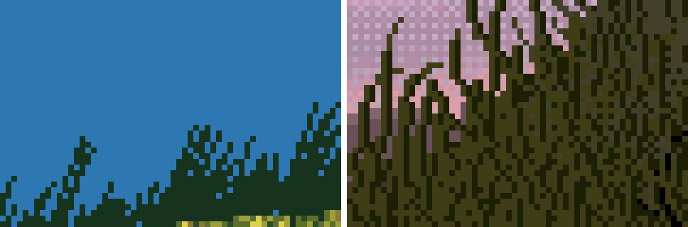
48. elements/grass-lod/img/cmp_wip.pngBash: Keep two darks in fringe
cd ~/work/pixelart-studies/elements/grass-lod/src && python3 - <<'EOF'
m=open('grasslod/marks.py').read()
m=m.replace("newv = np.where(push_dark, np.minimum(vv, bv - mp[\"cc_step\"]), np.maximum(vv, bv + mp[\"cc_step\"]))",
"# compress the blade's own range into the darks (keeps two values of structure)\n dark = np.minimum(np.minimum(vv, (vv - 3.0) * 0.5 + 1.6), bv - mp[\"cc_step\"])\n newv = np.where(push_dark, dark, np.maximum(vv, bv + mp[\"cc_step\"]))")
open('grasslod/marks.py','w').write(m)
EOF
rm -f ../cache/* && nice python3 ladder.py ../img/wip.png 30 && python3 -c "
from PIL import Image; im=Image.open('../img/wip.png'); im.resize((320,160),Image.NEAREST).save('../img/wip1x.png')" && python3 cmp8.py ../img/wip1x.png 40 60 ../../../pedagogy/master-copy/ref/native.png 330 395 60 40 ../img/cmp_wip.png
# output:
ppm 30.00 ell 7.73 keep 0.2058 grass-lum 75.9 29.8sRead: elements/grass-lod/img/wip.png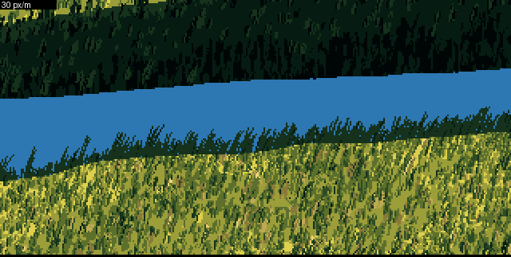
49. elements/grass-lod/img/wip.pngBash: Water reflection, contact line
cd ~/work/pixelart-studies/elements/grass-lod/src && python3 - <<'EOF'
s=open('grasslod/painter.py').read()
s=s.replace(''' idx[wat] = P.WATER0 + 2''',''' idx[wat] = P.WATER0 + 2
idx = reflect_water(idx, R, wat, rng)''')
s+='''
def reflect_water(idx, R, wat, rng):
"""Water: the far bank mirrored about its waterline, one step darker, broken by a few
horizontal dash rows; open water a two-tint sky reflection lightening toward the far
shore. A 1-px dark contact line where the far bank meets the water."""
H, W = idx.shape
out = idx.copy()
for c in range(W):
col = wat[:, c]
if not col.any():
continue
r = 0
while r < H:
if not col[r]:
r += 1
continue
r0 = r
while r < H and col[r]:
r += 1
r1 = r # water run [r0, r1)
n = r1 - r0
for k in range(n):
rr = r0 + k
# sky tint: lighter near the far shore
out[rr, c] = P.WATER0 + (3 if k < n * 0.35 else 2)
src = r0 - 1 - k
if src >= 0:
si = idx[src, c]
if P.GREEN0 <= si < P.GREEN0 + 7 or P.STRAW0 <= si < P.STRAW0 + 7:
base = P.GREEN0 if si < P.STRAW0 else P.STRAW0
q = si - base
q = min(max(q - 1, 0), 4) # lights drop, darks stay
out[rr, c] = base + q
elif P.SOIL0 <= si <= P.SOIL0 + 1:
out[rr, c] = P.SOIL0
# contact line at the far foot
if r0 > 0 and not wat[r0 - 1, c]:
si = idx[r0 - 1, c]
if P.GREEN0 <= si < P.GREEN0 + 7:
out[r0 - 1, c] = P.GREEN0
# wind dashes: short horizontal runs of the light water tint over reflections
rows = np.arange(H)[:, None]
phase = (rows * 7 + (np.arange(W)[None, :] // 5) * 3) % 11
dash = wat & (phase == 0) & (rng.random((H, W)) < 0.75)
out[dash] = P.WATER0 + 3
return out
'''
open('grasslod/painter.py','w').write(s)
EOF
nice python3 ladder.py ../img/wip.png 30 8
# output:
ppm 30.00 ell 7.73 keep 0.2058 grass-lum 75.8 11.4s
ppm 8.00 ell 2.06 keep 0.0913 grass-lum 111.0 9.8sRead: elements/grass-lod/img/wip.png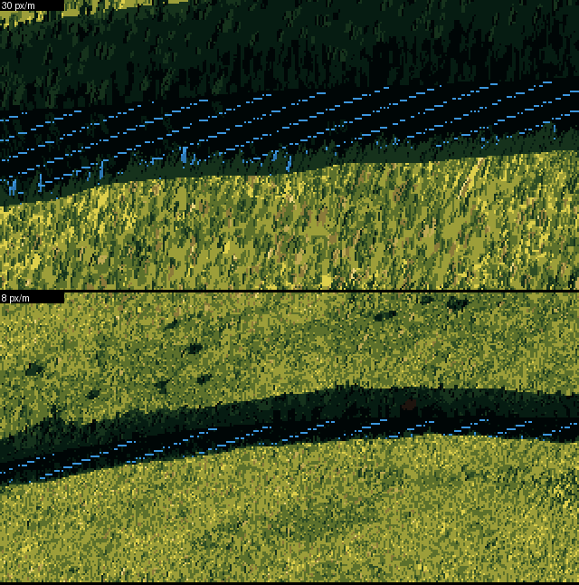
50. elements/grass-lod/img/wip.pngBash: Compressed reflection, irregular dashes
cd ~/work/pixelart-studies/elements/grass-lod/src && python3 - <<'EOF'
s=open('grasslod/painter.py').read()
s=s.replace(''' base = P.GREEN0 if si < P.STRAW0 else P.STRAW0
q = si - base
q = min(max(q - 1, 0), 4) # lights drop, darks stay
out[rr, c] = base + q''',''' base = P.GREEN0 if si < P.STRAW0 else P.STRAW0
q = si - base
# reflection: the bank's darks in the grass ramp (darks stay),
# its lights fall into the dark water tints (lights drop)
out[rr, c] = base + q if q <= 1 else (P.WATER0 if q <= 3 else P.WATER0 + 1)''')
i=s.index(" # wind dashes"); j=s.index(" return out\n",i)
s=s[:i]+''' # wind lines: a few sparse horizontal dashes of light tint, irregular in row and length
ys, xs = np.nonzero(wat)
if len(ys):
from .noise import lat
n = max(1, len(ys) // 60)
pick = rng.choice(len(ys), n, replace=False)
for p in pick:
y0, x0 = ys[p], xs[p]
L = 2 + int(rng.integers(0, 7))
for dx in range(L):
if x0 + dx < W and wat[y0, x0 + dx]:
out[y0, x0 + dx] = P.WATER0 + 3 if rng.random() < 0.8 else P.WATER0 + 2
'''+s[j:]
open('grasslod/painter.py','w').write(s)
EOF
nice python3 ladder.py ../img/wip.png 30 8
# output:
ppm 30.00 ell 7.73 keep 0.2058 grass-lum 75.8 8.8s
ppm 8.00 ell 2.06 keep 0.0913 grass-lum 111.0 7.5sRead: elements/grass-lod/img/wip.png 51. elements/grass-lod/img/wip.png
51. elements/grass-lod/img/wip.png
Bash: 8x lit and shadow comparisons
cd ~/work/pixelart-studies/elements/grass-lod/src && python3 -c "
from PIL import Image; im=Image.open('../img/wip.png'); im.crop((0,0,640,320)).resize((320,160),Image.NEAREST).save('../img/wip1x.png')" && python3 cmp8.py ../img/wip1x.png 150 100 ../../../pedagogy/master-copy/ref/native.png 20 330 60 50 ../img/cmp_lit.png && python3 cmp8.py ../img/wip1x.png 100 5 ../../../pedagogy/master-copy/ref/lw/V16.png 520 380 60 50 ../img/cmp_sh.png
# output:
(Bash completed with no output)Read: elements/grass-lod/img/cmp_lit.pngRead: elements/grass-lod/img/cmp_sh.png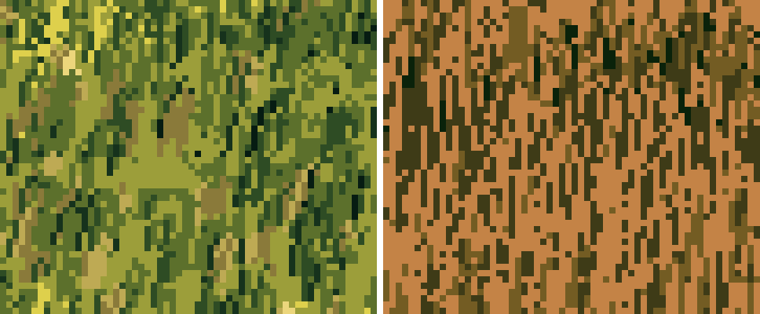
52. elements/grass-lod/img/cmp_lit.png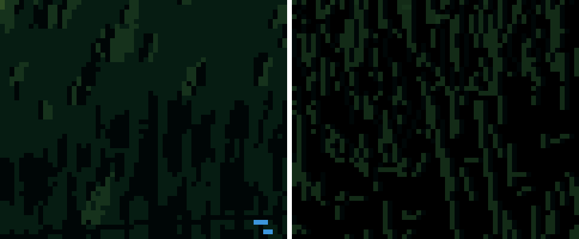
53. elements/grass-lod/img/cmp_sh.pngBash: Integer tuft base, no partner in shadow
cd ~/work/pixelart-studies/elements/grass-lod/src && grep -n "v = V\[cy, cx\]" grasslod/marks.py && python3 - <<'EOF'
m=open('grasslod/marks.py').read()
m=m.replace(" v = V[cy, cx]\n"," v = V[cy, cx]\n # each tuft sits on an integer base step (stochastic rounding by its own number), so\n # its strokes are whole steps from that base: few colours per zone, as Ferrari's 4\n v = np.floor(v + U[9])\n",1)
m=m.replace("pm = m & pair & (L >= 3) & (fr > 0.15) & (fr < 0.85)","pm = m & pair & lt & (L >= 3) & (fr > 0.15) & (fr < 0.85)")
m=m.replace("p_pair=0.6,","p_pair=0.35,")
open('grasslod/marks.py','w').write(m)
EOF
grep -n "U\[9\]" grasslod/marks.py
# output:
140: v = V[cy, cx]
143: v = np.floor(v + U[9])Bash: Decorrelate hashes, rerender comparisons
cd ~/work/pixelart-studies/elements/grass-lod/src && sed -i '' 's/for j in range(12)\])/for j in range(16)])/; s/v = np.floor(v + U\[9\])/v = np.floor(v + U[12])/; s/ul = np.modf(U\[11\]/ul = np.modf(U[13]/; s/ud = np.modf(U\[10\]/ud = np.modf(U[14]/' grasslod/marks.py && grep -n "U\[1[0-5]\]\|range(16)" grasslod/marks.py && rm -f ../cache/* && nice python3 ladder.py ../img/wip.png 30 && python3 -c "
from PIL import Image; im=Image.open('../img/wip.png'); im.resize((320,160),Image.NEAREST).save('../img/wip1x.png')" && python3 cmp8.py ../img/wip1x.png 150 100 ../../../pedagogy/master-copy/ref/native.png 20 330 60 50 ../img/cmp_lit.png && python3 cmp8.py ../img/wip1x.png 100 5 ../../../pedagogy/master-copy/ref/lw/V16.png 520 380 60 50 ../img/cmp_sh.png
# output:
61: U = np.stack([lat(IX, IY, sd + 10 + j) for j in range(16)])
143: v = np.floor(v + U[12])
204: ul = np.modf(U[13] * (5.31 + 2.1 * j))[0]
206: ud = np.modf(U[14] * (3.77 + 1.3 * j))[0]
ppm 30.00 ell 7.73 keep 0.2058 grass-lum 80.0 23.9sRead: elements/grass-lod/img/cmp_lit.png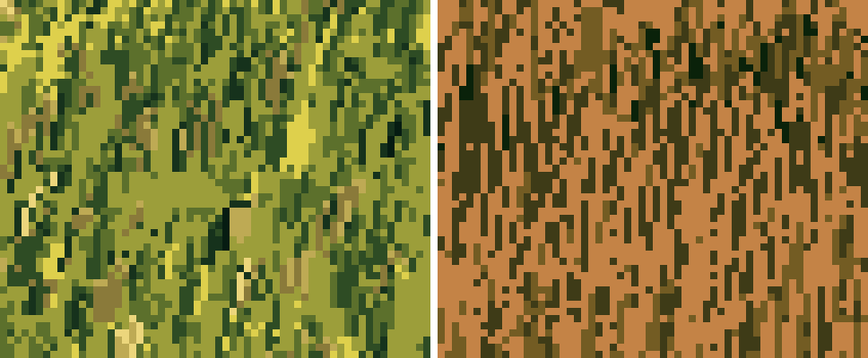
54. elements/grass-lod/img/cmp_lit.pngRead: elements/grass-lod/img/cmp_sh.png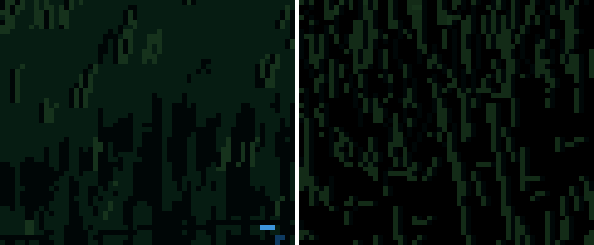
55. elements/grass-lod/img/cmp_sh.pngBash: Locate tip boost, straw, offset lines
cd ~/work/pixelart-studies/elements/grass-lod/src && grep -n "tip_boost\"\] \* lt\|straw = (U\[1\] < dead)\|off = np.where(light, 1.0" grasslod/marks.py # output: 128: straw = (U[1] < dead).astype(np.int8) 213: off = np.where(light, 1.0, np.where(L <= 1, -mp["dot_amp"], dark_off)) 227: main = np.where(fr > 0.7, body + light * mp["tip_boost"] * lt * np.clip((v - 4.8) * 2, 0, 1), body)
Bash: Patchy straw, crest-only highlights, darker shadow base
cd ~/work/pixelart-studies/elements/grass-lod/src && python3 - <<'EOF'
m=open('grasslod/marks.py').read()
m=m.replace(" straw = (U[1] < dead).astype(np.int8)"," # straw comes in patches (dry ridges, old growth), not as speckle through green\n straw = ((dead + 0.15 * (U[1] - 0.5)) > 0.55).astype(np.int8)")
m=m.replace("off = np.where(light, 1.0, np.where(L <= 1, -mp[\"dot_amp\"], dark_off))",
"off = np.where(light, np.where(lt | (L <= 1), 1.0, mp[\"shadow_light\"]), np.where(L <= 1, -mp[\"dot_amp\"], dark_off))")
m=m.replace("main = np.where(fr > 0.7, body + light * mp[\"tip_boost\"] * lt * np.clip((v - 4.8) * 2, 0, 1), body)",
"main = np.where(fr > 0.7, body + light * mp[\"tip_boost\"] * lt * crest, body)")
m=m.replace(" # detail at edges:"," crest = np.clip((R.conv[cy, cx] - 0.15) * 3, 0, 1) if getattr(R, 'conv', None) is not None else np.zeros(len(x))\n # detail at edges:")
m=m.replace("x, y, z, U, sx, sy, h, ell, straw, rx, ry, tus, cx, cy, v, lt = [a[..., dsel] for a in\n (x, y, z, U, sx, sy, h, ell, straw, rx, ry, tus, cx, cy, v, lt)]",
"x, y, z, U, sx, sy, h, ell, straw, rx, ry, tus, cx, cy, v, lt, crest = [a[..., dsel] for a in\n (x, y, z, U, sx, sy, h, ell, straw, rx, ry, tus, cx, cy, v, lt, crest)]")
m=m.replace("overlap=1.0,","overlap=0.6,")
m=m.replace("gap_depth=2.5,","gap_depth=2.5,\n shadow_light=1.5,")
open('grasslod/marks.py','w').write(m)
import re
print(re.findall(r"x, y, U, sx, sy, ell, straw, rx, ry, v, lt, top, bot, tus, bot_f.*", m))
r=open('grasslod/render.py').read()
r=r.replace("sh_lo=0.6, sh_span=1.2,","sh_lo=0.2, sh_span=1.0,")
open('grasslod/render.py','w').write(r)
EOF
grep -n "order\]" grasslod/marks.py; grep -n "crest" grasslod/marks.py | head
# output:
['x, y, U, sx, sy, ell, straw, rx, ry, v, lt, top, bot, tus, bot_f = [a[..., order] for a in', 'x, y, U, sx, sy, ell, straw, rx, ry, v, lt, top, bot, tus, bot_f)]']
167: x, y, U, sx, sy, ell, straw, rx, ry, v, lt, top, bot, tus, bot_f = [a[..., order] for a in
147: crest = np.clip((R.conv[cy, cx] - 0.15) * 3, 0, 1) if getattr(R, 'conv', None) is not None else np.zeros(len(x))
148: # detail at edges: at a distance marks crowd crests and thin in bodies
158: x, y, z, U, sx, sy, h, ell, straw, rx, ry, tus, cx, cy, v, lt, crest = [a[..., dsel] for a in
159: (x, y, z, U, sx, sy, h, ell, straw, rx, ry, tus, cx, cy, v, lt, crest)]
230: main = np.where(fr > 0.7, body + light * mp["tip_boost"] * lt * crest, body)Need to include crest in the depth sort too.
Bash: Rerender comparisons
cd ~/work/pixelart-studies/elements/grass-lod/src && sed -i '' 's/x, y, U, sx, sy, ell, straw, rx, ry, v, lt, top, bot, tus, bot_f = \[a\[..., order\] for a in/x, y, U, sx, sy, ell, straw, rx, ry, v, lt, top, bot, tus, bot_f, crest = [a[..., order] for a in/; s/(x, y, U, sx, sy, ell, straw, rx, ry, v, lt, top, bot, tus, bot_f)\]/(x, y, U, sx, sy, ell, straw, rx, ry, v, lt, top, bot, tus, bot_f, crest)]/' grasslod/marks.py && rm -f ../cache/* && nice python3 ladder.py ../img/wip.png 30 && python3 -c "
from PIL import Image; im=Image.open('../img/wip.png'); im.resize((320,160),Image.NEAREST).save('../img/wip1x.png')" && python3 cmp8.py ../img/wip1x.png 150 100 ../../../pedagogy/master-copy/ref/native.png 20 330 60 50 ../img/cmp_lit.png && python3 cmp8.py ../img/wip1x.png 100 5 ../../../pedagogy/master-copy/ref/lw/V16.png 520 380 60 50 ../img/cmp_sh.png
# output:
ppm 30.00 ell 7.73 keep 0.1527 grass-lum 80.9 22.8sRead: elements/grass-lod/img/cmp_lit.png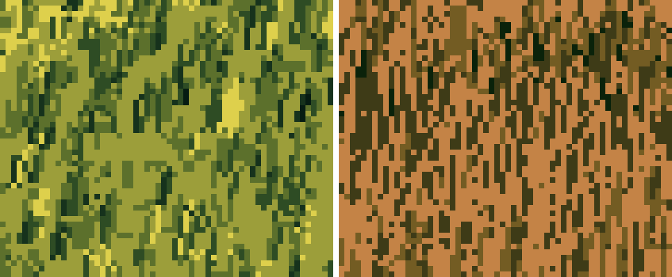
56. elements/grass-lod/img/cmp_lit.pngRead: elements/grass-lod/img/cmp_sh.png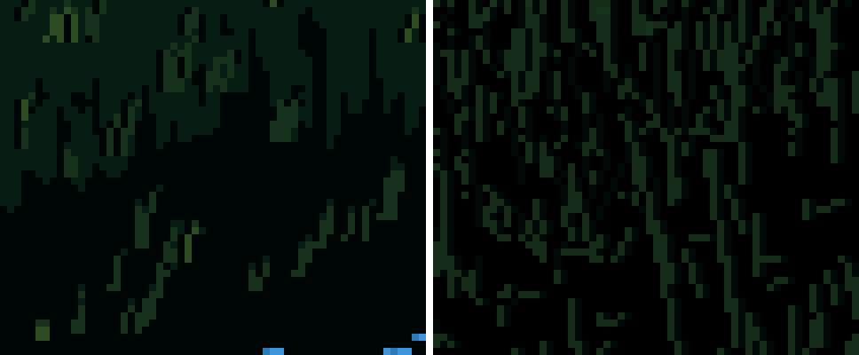
57. elements/grass-lod/img/cmp_sh.pngBash: Denser shadow strands, rarer tips
cd ~/work/pixelart-studies/elements/grass-lod/src && python3 - <<'EOF'
m=open('grasslod/marks.py').read()
m=m.replace("p_light = np.clip(mp[\"light_bias\"] - 1.3 * pos, 0.06, 0.85)","p_light = np.where(lt, np.clip(mp[\"light_bias\"] - 1.3 * pos, 0.06, 0.85), 0.9)")
m=m.replace("crest = np.clip((R.conv[cy, cx] - 0.15) * 3, 0, 1)","crest = np.clip((R.conv[cy, cx] - 0.35) * 3, 0, 1)")
m=m.replace("main = np.where(fr > 0.7, body + light","main = np.where(fr > 0.8, body + light")
open('grasslod/marks.py','w').write(m)
EOF
rm -f ../cache/*; nice python3 ladder.py ../img/wip.png 30 8
# output:
ppm 30.00 ell 7.73 keep 0.1527 grass-lum 81.2 22.3s
ppm 8.00 ell 2.06 keep 0.0839 grass-lum 117.6 6.8sRead: elements/grass-lod/img/wip.png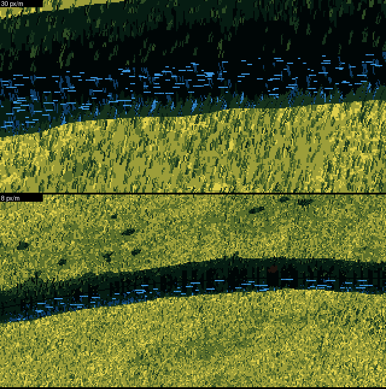
58. elements/grass-lod/img/wip.pngBash: Adjust palette and exaggeration
cd ~/work/pixelart-studies/elements/grass-lod/src && python3 - <<'EOF'
p=open('grasslod/palette.py').read()
p=p.replace("(92, 112, 44), (156, 158, 58), (222, 208, 76)]","(84, 108, 40), (132, 144, 52), (212, 202, 76)]")
open('grasslod/palette.py','w').write(p)
r=open('grasslod/render.py').read()
r=r.replace("p = dict(exag=3.0,","p = dict(exag=2.0,")
open('grasslod/render.py','w').write(r)
EOF
nice python3 ladder.py ../img/wip.png 30 8 2 0.6
# output:
ppm 30.00 ell 7.73 keep 0.1527 grass-lum 75.6 9.5s
ppm 8.00 ell 2.06 keep 0.0839 grass-lum 110.7 9.7s
ppm 2.00 ell 0.52 keep 0.0110 grass-lum 126.1 7.2s
ppm 0.60 ell 0.15 keep 0.0010 grass-lum 120.5 4.7sRead: elements/grass-lod/img/wip.png 59. elements/grass-lod/img/wip.png
59. elements/grass-lod/img/wip.png
Bash: Golden hour ladder
cd ~/work/pixelart-studies/elements/grass-lod/src && nice python3 -c "
from ladder import ladder
ladder('../img/wip.png',[30,8,2,0.6],hour='golden')"
# output:
ppm 30.00 ell 7.73 keep 0.1527 grass-lum 70.5 6.7s
ppm 8.00 ell 2.06 keep 0.0839 grass-lum 90.1 5.8s
ppm 2.00 ell 0.52 keep 0.0110 grass-lum 104.4 5.5s
ppm 0.60 ell 0.15 keep 0.0010 grass-lum 101.9 5.6sRead: elements/grass-lod/img/wip.png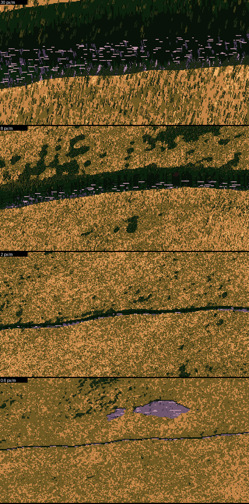
60. elements/grass-lod/img/wip.pngBash: Soft shadows and dithered terminators
cd ~/work/pixelart-studies/elements/grass-lod/src && python3 - <<'EOF'
r=open('grasslod/render.py').read()
i=r.index("def cast_shadow"); j=r.index("def value_design")
r=r[:i]+'''def cast_shadow(world, X, Y, Z, sun, min_wl, reach=None, steps=10, soft=0.06):
"""Soft shadow in [0,1]: how far (as an angle) the terrain rises above the ray toward
the sun, ramped over `soft` radians -> a penumbra that later becomes a dithered edge."""
if reach is None:
reach = max(3.0, 40 * min_wl)
excess = np.full(X.shape, -1.0)
horiz = np.hypot(sun[0], sun[1]) + 1e-9
for k in range(1, steps + 1):
d = reach * (k / steps) ** 1.5
xs = X + sun[0] / horiz * d
ys = Y + sun[1] / horiz * d
zr = Z + sun[2] / horiz * d
excess = np.maximum(excess, (world.height(xs, ys, min_wl * 2) - zr - 0.02) / d)
return np.clip(excess / soft + 0.5, 0, 1)
'''+r[j:]
r=r.replace(''' sh = cast_shadow(world, R.X, R.Y, R.Z, sun, R.min_wl)
lit = (lam_e > p["lit_thresh"]) & ~sh''',''' sh = cast_shadow(world, R.X, R.Y, R.Z, sun, R.min_wl)
# soft light weight, then a world-anchored dither decides the family per pixel:
# terminators and shadow edges become dithered fringes, not cut-outs
wl = np.clip((lam_e - p["lit_thresh"]) / p["term_soft"] + 0.5, 0, 1) * (1 - sh)
thr = stable_threshold(R.X, R.Y * cam.s, cam.ppm, px=1.0, seed=77)
lit = wl > thr
R.wlit = wl''')
r=r.replace("large_px=30.0, exag_large=1.5,","large_px=30.0, exag_large=1.5, term_soft=0.12,")
r=r.replace("from .noise import fbm","from .noise import fbm, stable_threshold")
open('grasslod/render.py','w').write(r)
EOF
nice python3 -c "
from ladder import ladder
ladder('../img/wip.png',[30,8,2,0.6],hour='golden')"
# output:
ppm 30.00 ell 7.73 keep 0.1527 grass-lum 70.5 9.9s
ppm 8.00 ell 2.06 keep 0.0839 grass-lum 90.0 8.5s
ppm 2.00 ell 0.52 keep 0.0110 grass-lum 104.1 7.6s
ppm 0.60 ell 0.15 keep 0.0010 grass-lum 101.6 5.7sRead: elements/grass-lod/img/wip.png 61. elements/grass-lod/img/wip.png
61. elements/grass-lod/img/wip.png
Bash: Add clumps, crown light, wind sheen
cd ~/work/pixelart-studies/elements/grass-lod/src && python3 - <<'EOF'
w=open('grasslod/world.py').read()
w=w.replace(''' def sward_height(self, x, y):''',''' def clump(self, x, y):
"""0..1 clumpiness at 0.3-2 m: grass grows in clumps with low gaps between; the
taller crowns catch the light. At mid distance the clump is the mark."""
c = fbm(x, y, 1.6, 3, 0.55, seed=self.seed + 47)
return np.clip(0.5 + 0.9 * c, 0, 1)
def sheen(self, x, y):
"""Wind combing: long bands across the wind, lit where blades bend toward you."""
return fbm(x * 0.35, y * 1.4, 8.0, 3, 0.5, seed=self.seed + 53)
def sward_height(self, x, y):''')
w=w.replace("return np.maximum(0.03, h * (1 + 0.35 * patch) * (1 + 0.6 * tus))",
"cl = self.clump(x, y)\n return np.maximum(0.03, h * (1 + 0.35 * patch) * (1 + 0.6 * tus) * (0.55 + 0.9 * cl))")
open('grasslod/world.py','w').write(w)
m=open('grasslod/marks.py').read()
# clumps: density and light
m=m.replace(" k0 = np.clip(0.45 + 1.6 * np.maximum(cv, 0) + 0.5 * gz ** 2, 0.25, 1.8)",
" k0 = np.clip(0.45 + 1.6 * np.maximum(cv, 0) + 0.5 * gz ** 2, 0.25, 1.8)")
m=m.replace(" kap = np.ones(len(x))\n"," cl = world.clump(x, y)\n kap = (0.35 + 1.3 * cl) ** mp[\"clumping\"]\n")
m=m.replace(" kap = 1 + strength * (k0 - 1)"," kap = kap * (1 + strength * (k0 - 1))")
m=m.replace(" v = np.floor(v + U[12])"," v = v + mp[\"crown_light\"] * (cl - 0.5) * lt\n v = np.floor(v + U[12])")
m=m.replace(" detail=0.8,"," detail=0.8,\n clumping=1.0,\n crown_light=1.2,")
open('grasslod/marks.py','w').write(m)
r=open('grasslod/render.py').read()
r=r.replace("+ p[\"mottle\"] * mot * np.where(lit, 1.0, 0.5)","+ p[\"mottle\"] * mot * np.where(lit, 1.0, 0.5) \\\n + p[\"sheen\"] * world.wind * world.sheen(X, Y) * lit")
r=r.replace("mottle=0.45)","mottle=0.45, sheen=1.2)")
open('grasslod/render.py','w').write(r)
EOF
grep -n "cl = world.clump\|v = V\[cy, cx\]\|crown_light\"\]" grasslod/marks.py
# output:
144: v = V[cy, cx]
147: v = v + mp["crown_light"] * (cl - 0.5) * lt
152: cl = world.clump(x, y)Bash: Fix clump ordering; golden ladder
cd ~/work/pixelart-studies/elements/grass-lod/src && python3 - <<'EOF'
m=open('grasslod/marks.py').read()
m=m.replace(" cl = world.clump(x, y)\n kap ="," kap =")
m=m.replace(" v = V[cy, cx]\n"," v = V[cy, cx]\n cl = world.clump(x, y)\n",1)
m=m.replace("x, y, z, U, sx, sy, h, ell, straw, rx, ry, tus, cx, cy, v, lt, crest = [a[..., dsel] for a in\n (x, y, z, U, sx, sy, h, ell, straw, rx, ry, tus, cx, cy, v, lt, crest)]",
"x, y, z, U, sx, sy, h, ell, straw, rx, ry, tus, cx, cy, v, lt, crest, cl = [a[..., dsel] for a in\n (x, y, z, U, sx, sy, h, ell, straw, rx, ry, tus, cx, cy, v, lt, crest, cl)]")
open('grasslod/marks.py','w').write(m)
EOF
rm -f ../cache/*; nice python3 -c "
from ladder import ladder
ladder('../img/wip.png',[30,8,2,0.6],hour='golden')"
# output:
Exit code 1
Traceback (most recent call last):
File "<string>", line 3, in <module>
File "~/work/pixelart-studies/elements/grass-lod/src/ladder.py", line 20, in ladder
idx, pal, L = paint(w, cam, hour, return_layers=True, **kw)
^^^^^^^^^^^^^^^^^^^^^^^^^^^^^^^^^^^^^^^^^^^^^
File "~/work/pixelart-studies/elements/grass-lod/src/grasslod/painter.py", line 63, in paint
Vd = V - correction(world, mp, ell, V, lit, mp["ell_ref"])
^^^^^^^^^^^^^^^^^^^^^^^^^^^^^^^^^^^^^^^^^^^^^^^^^
File "~/work/pixelart-studies/elements/grass-lod/src/grasslod/calibrate.py", line 112, in correction
return offset(world, mp, ell, V, lit) - offset(world, mp, ell_ref, V, lit)
^^^^^^^^^^^^^^^^^^^^^^^^^^^^^^
File "~/work/pixelart-studies/elements/grass-lod/src/grasslod/calibrate.py", line 99, in offset
tl, ts = table(world, mp)
^^^^^^^^^^^^^^^^
File "~/work/pixelart-studies/elements/grass-lod/src/grasslod/calibrate.py", line 37, in table
lit, sh = _measure(world, mp)
^^^^^^^^^^^^^^^^^^^
File "~/work/pixelart-studies/elements/grass-lod/src/grasslod/calibrate.py", line 88, in _measure
paint_tufts(canvas, cm, pr, R, V, L, fw, pop, mp, fam_top=(2.9, 6.0), fam_bot=(0, 0))
File "~/work/pixelart-studies/elements/grass-lod/src/grasslod/marks.py", line 148, in paint_tufts
v = v + mp["crown_light"] * (cl - 0.5) * lt
^^
UnboundLocalError: cannot access local variable 'lt' where it is not associated with a valueBash: Inspect ordering
cd ~/work/pixelart-studies/elements/grass-lod/src && sed -n 140,152p grasslod/marks.py
# output:
return
# tuft value: the design value at the root pixel (clamped onto the screen)
cx = np.clip(rx, 0, W - 1)
cy = np.clip(ry, 0, H - 1)
v = V[cy, cx]
cl = world.clump(x, y)
# each tuft sits on an integer base step (stochastic rounding by its own number), so
# its strokes are whole steps from that base: few colours per zone, as Ferrari's 4
v = v + mp["crown_light"] * (cl - 0.5) * lt
v = np.floor(v + U[12])
lt = lit[cy, cx]
crest = np.clip((R.conv[cy, cx] - 0.35) * 3, 0, 1) if getattr(R, 'conv', None) is not None else np.zeros(len(x))
# detail at edges: at a distance marks crowd crests and thin in bodiesBash: Golden ladder with clumps
cd ~/work/pixelart-studies/elements/grass-lod/src && python3 - <<'EOF'
m=open('grasslod/marks.py').read()
m=m.replace(''' v = v + mp["crown_light"] * (cl - 0.5) * lt
v = np.floor(v + U[12])
lt = lit[cy, cx]
''',''' lt = lit[cy, cx]
v = v + mp["crown_light"] * (cl - 0.5) * lt
v = np.where(lt, np.clip(v, 3.0, 5.45), np.clip(v, 0.0, 2.8))
v = np.floor(v + U[12])
''')
open('grasslod/marks.py','w').write(m)
EOF
rm -f ../cache/*; nice python3 -c "
from ladder import ladder
ladder('../img/wip.png',[30,8,2,0.6],hour='golden')"
# output:
(eval):13: no matches found: ../cache/*
ppm 30.00 ell 7.73 keep 0.1527 grass-lum 67.8 29.0s
ppm 8.00 ell 2.06 keep 0.0839 grass-lum 92.1 7.7s
ppm 2.00 ell 0.52 keep 0.0110 grass-lum 107.9 8.2s
ppm 0.60 ell 0.15 keep 0.0010 grass-lum 105.8 7.5sRead: elements/grass-lod/img/wip.png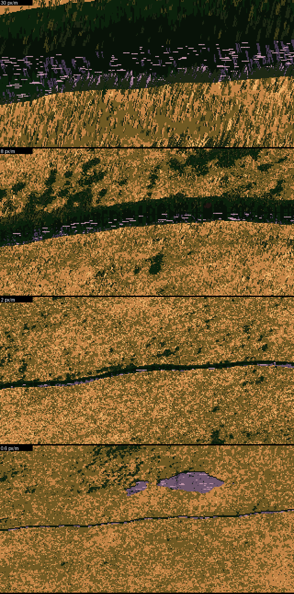
62. elements/grass-lod/img/wip.pngBash: 8x golden vs tarn bank
cd ~/work/pixelart-studies/elements/grass-lod/src && python3 -c "
from PIL import Image; im=Image.open('../img/wip.png'); im.crop((0,0,640,320)).resize((320,160),Image.NEAREST).save('../img/wip1x.png')" && python3 cmp8.py ../img/wip1x.png 150 100 ../../../pedagogy/master-copy/ref/native.png 20 330 60 50 ../img/cmp_lit.png
# output:
(Bash completed with no output)Read: elements/grass-lod/img/cmp_lit.png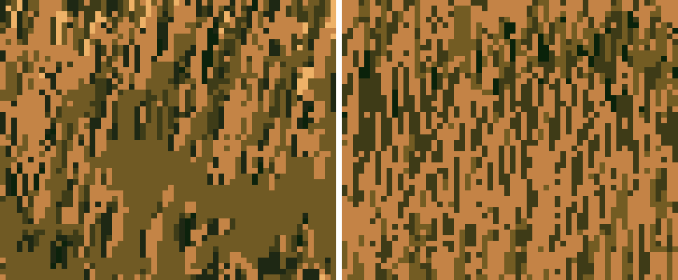
63. elements/grass-lod/img/cmp_lit.pngBash: Texture stats tool; compare
cd ~/work/pixelart-studies/elements/grass-lod/src && cat > stats.py <<'EOF'
"""Texture statistics of a crop: colours for 90%, top-colour share, mean vertical/horizontal runs."""
import sys
import numpy as np
from PIL import Image
def runs(a, axis):
if axis == 1:
a = a.T
tot, n = 0, 0
for col in a:
ch = np.nonzero(np.any(col[1:] != col[:-1], axis=-1))[0]
L = np.diff(np.concatenate([[-1], ch, [len(col) - 1]]))
tot += L.sum(); n += len(L)
return tot / n
def stats(im):
a = np.array(im.convert('RGB'))
flat = a.reshape(-1, 3)
cols, cnt = np.unique(flat, axis=0, return_counts=True)
o = np.sort(cnt)[::-1] / cnt.sum()
n90 = int(np.searchsorted(np.cumsum(o), 0.9) + 1)
return dict(n90=n90, top=round(float(o[0]), 2), vrun=round(runs(a, 0), 2), hrun=round(runs(a, 1), 2))
if __name__ == "__main__":
f, x, y, w, h = sys.argv[1], *map(int, sys.argv[2:6])
print(stats(Image.open(f).crop((x, y, x + w, y + h))))
EOF
python3 stats.py ../../../pedagogy/master-copy/ref/native.png 20 330 60 50; python3 stats.py ../img/wip1x.png 150 100 60 50
python3 - <<'EOF'
m=open('grasslod/marks.py').read()
m=m.replace("clumping=1.0,","clumping=0.5,").replace("overlap=0.6,","overlap=0.9,")
open('grasslod/marks.py','w').write(m)
EOF
# output:
{'n90': 3, 'top': 0.52, 'vrun': 1.62, 'hrun': 1.0}
{'n90': 4, 'top': 0.44, 'vrun': 1.86, 'hrun': 1.0}Bash: Fix run direction, recompare
cd ~/work/pixelart-studies/elements/grass-lod/src && python3 - <<'EOF'
s=open('stats.py').read()
s=s.replace(''' if axis == 1:
a = a.T''',''' # axis 0: vertical runs (walk down columns); axis 1: horizontal runs (walk along rows)
if axis == 0:
a = a.transpose(1, 0, 2)''')
open('stats.py','w').write(s)
EOF
python3 stats.py ../../../pedagogy/master-copy/ref/native.png 20 330 60 50; python3 stats.py ../img/wip1x.png 150 100 60 50
# output:
{'n90': 3, 'top': 0.52, 'vrun': 3.53, 'hrun': 1.62}
{'n90': 4, 'top': 0.44, 'vrun': 3.35, 'hrun': 1.86}Bash: Mid-range golden renders at 1x
cd ~/work/pixelart-studies/elements/grass-lod/src && nice python3 -c "
from ladder import ladder
ladder('../img/wip.png',[16, 10, 5],hour='golden', scale=1)" && python3 stats.py ../../../pedagogy/master-copy/ref/native.png 0 262 150 25 && python3 -c "
from PIL import Image; im=Image.open('../img/wip.png'); print(im.size)"
# output:
ppm 16.00 ell 4.12 keep 0.1325 grass-lum 80.6 19.2s
ppm 10.00 ell 2.58 keep 0.1024 grass-lum 85.6 4.8s
ppm 5.00 ell 1.29 keep 0.0633 grass-lum 101.3 3.3s
{'n90': 2, 'top': 0.64, 'vrun': 2.48, 'hrun': 2.29}
(320, 489)Bash: 8x mid-range comparisons
cd ~/work/pixelart-studies/elements/grass-lod/src && python3 cmp8.py ../img/wip.png 100 180 ../../../pedagogy/master-copy/ref/native.png 30 258 60 40 ../img/cmp_mid.png && python3 cmp8.py ../img/wip.png 100 340 ../../../pedagogy/master-copy/ref/lw/V16.png 290 250 60 40 ../img/cmp_far.png # output: (Bash completed with no output)
Read: elements/grass-lod/img/cmp_mid.pngRead: elements/grass-lod/img/cmp_far.png 64. elements/grass-lod/img/cmp_far.png
64. elements/grass-lod/img/cmp_far.png
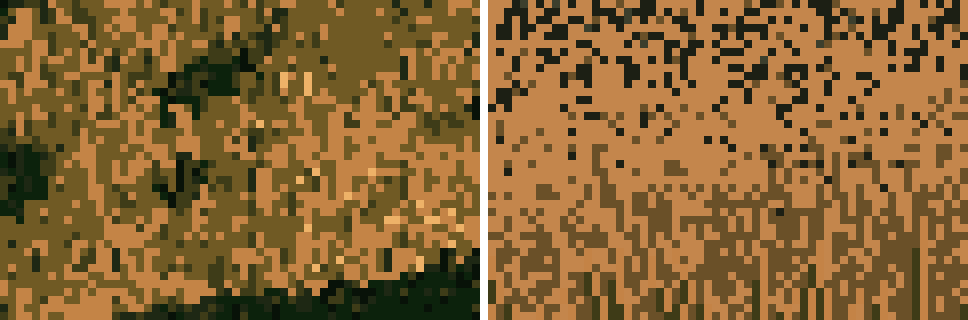
65. elements/grass-lod/img/cmp_mid.pngBash: Dots as dark holes, sparse; recompare
cd ~/work/pixelart-studies/elements/grass-lod/src && python3 - <<'EOF'
m=open('grasslod/marks.py').read()
m=m.replace(" light = np.where(L <= 1, ul < 0.5, ul < p_light)\n"," light = ul < p_light\n")
m=m.replace("off = np.where(light, np.where(lt | (L <= 1), 1.0, mp[\"shadow_light\"]), np.where(L <= 1, -mp[\"dot_amp\"], dark_off))",
"# a single-pixel dot at a distance is a hole in the sward: the deepest dark survives\n off = np.where(light, np.where(lt, 1.0, mp[\"shadow_light\"]), np.where(L <= 1, -mp[\"dot_depth\"], dark_off))")
m=m.replace("dot_amp=1.0,","dot_amp=1.0,\n dot_depth=3.0,")
m=m.replace("coverage=0.55,","coverage=0.25,")
open('grasslod/marks.py','w').write(m)
EOF
nice python3 -c "
from ladder import ladder
ladder('../img/wip.png',[16, 10, 5, 2],hour='golden', scale=1)" && python3 cmp8.py ../img/wip.png 100 180 ../../../pedagogy/master-copy/ref/native.png 30 258 60 40 ../img/cmp_mid.png && python3 cmp8.py ../img/wip.png 100 340 ../../../pedagogy/master-copy/ref/lw/V16.png 290 250 60 40 ../img/cmp_far.png
# output:
ppm 16.00 ell 4.12 keep 0.0977 grass-lum 81.8 26.2s
ppm 10.00 ell 2.58 keep 0.0636 grass-lum 87.4 8.7s
ppm 5.00 ell 1.29 keep 0.0288 grass-lum 105.6 6.8s
ppm 2.00 ell 0.52 keep 0.0050 grass-lum 113.0 4.3sRead: elements/grass-lod/img/cmp_far.png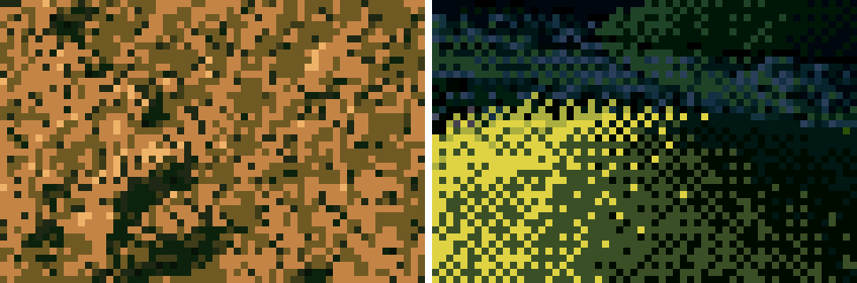
66. elements/grass-lod/img/cmp_far.pngRead: elements/grass-lod/img/wip.png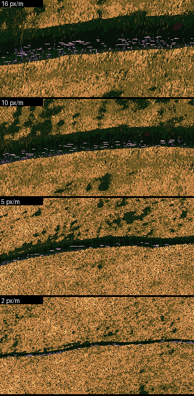
67. elements/grass-lod/img/wip.pngBash: Cap lit base at step 5 except crests
cd ~/work/pixelart-studies/elements/grass-lod/src && python3 - <<'EOF'
r=open('grasslod/render.py').read()
r=r.replace("V = np.where(lit, np.clip(V, 3.0, 5.45), np.clip(V, 0.2, 2.8)) # step 6 is reserved for sun-struck tips",
"# step 6 is reserved for sun-struck tips: only crests may dither into it\n top = 5.0 + 0.6 * np.clip((conv - 0.2) * 2.5, 0, 1)\n V = np.where(lit, np.clip(V, 3.0, top), np.clip(V, 0.2, 2.8))")
open('grasslod/render.py','w').write(r)
s=open('grasslod/painter.py').read()
s=s.replace("Vd = np.where(lit, np.clip(Vd, 3.0, 5.45), np.clip(Vd, 0.0, 2.9))","Vd = np.where(lit, np.clip(Vd, 3.0, np.maximum(V, 5.0)), np.clip(Vd, 0.0, 2.9))")
open('grasslod/painter.py','w').write(s)
EOF
echo ok
# output:
okBash: Golden zoom run
cd ~/work/pixelart-studies/elements/grass-lod/src && python3 - <<'EOF'
w=open('grasslod/world.py').read()
w=w.replace("z = z + 0.45 * hum","z = z + self.hummock * hum")
w=w.replace(" relief: float = 1.0 # scales regional hills"," relief: float = 1.0 # scales regional hills\n hummock: float = 0.3 # amplitude (m) of the 2-6 m hummocks")
open('grasslod/world.py','w').write(w)
EOF
rm -f ../cache/*; nice -n 10 python3 zoom.py g1 --frames 64 --hour golden 2>&1 | tail -3
# output:
render 134 s
tone pop max 1.20 mean 0.34 | struct max 5.46 mean 3.91
worst struct pairs: [(3, 24.09, 5.46), (4, 22.39, 5.41), (1, 27.89, 5.28), (5, 20.82, 5.28), (2, 25.92, 5.14)]Read: elements/grass-lod/img/zoom_g1_strip.png68. elements/grass-lod/img/zoom_g1_strip.png
Read: elements/grass-lod/img/zoom_g1_metrics.png69. elements/grass-lod/img/zoom_g1_metrics.png
Bash: Crest-deep dots, calmer far; zoom
cd ~/work/pixelart-studies/elements/grass-lod/src && python3 - <<'EOF'
m=open('grasslod/marks.py').read()
m=m.replace("np.where(L <= 1, -mp[\"dot_depth\"], dark_off))",
"np.where(L <= 1, -dotd, dark_off))")
m=m.replace(" # a single-pixel dot at a distance"," # dot depth: deep holes on crests, shallow ticks of the next step in bodies,\n # and shallower again as the dots shrink toward pure tone\n dotd = 1.0 + (mp[\"dot_depth\"] - 1.0) * edge * np.clip((ell - 0.3) / 0.9, 0, 1)\n # a single-pixel dot at a distance")
m=m.replace(" crest = np.clip((R.conv[cy, cx] - 0.35) * 3, 0, 1) if getattr(R, 'conv', None) is not None else np.zeros(len(x))",
" crest = np.clip((R.conv[cy, cx] - 0.35) * 3, 0, 1) if getattr(R, 'conv', None) is not None else np.zeros(len(x))\n edge = np.clip(R.conv[cy, cx] * 2.0 + R.graze[cy, cx] ** 2, 0, 1) if getattr(R, 'conv', None) is not None else np.full(len(x), 0.3)")
m=m.replace("x, y, z, U, sx, sy, h, ell, straw, rx, ry, tus, cx, cy, v, lt, crest, cl = [a[..., dsel] for a in\n (x, y, z, U, sx, sy, h, ell, straw, rx, ry, tus, cx, cy, v, lt, crest, cl)]",
"x, y, z, U, sx, sy, h, ell, straw, rx, ry, tus, cx, cy, v, lt, crest, cl, edge = [a[..., dsel] for a in\n (x, y, z, U, sx, sy, h, ell, straw, rx, ry, tus, cx, cy, v, lt, crest, cl, edge)]")
m=m.replace("x, y, U, sx, sy, ell, straw, rx, ry, v, lt, top, bot, tus, bot_f, crest = [a[..., order] for a in","x, y, U, sx, sy, ell, straw, rx, ry, v, lt, top, bot, tus, bot_f, crest, edge = [a[..., order] for a in")
m=m.replace("(x, y, U, sx, sy, ell, straw, rx, ry, v, lt, top, bot, tus, bot_f, crest)]","(x, y, U, sx, sy, ell, straw, rx, ry, v, lt, top, bot, tus, bot_f, crest, edge)]")
open('grasslod/marks.py','w').write(m)
for f in ('grasslod/painter.py','grasslod/calibrate.py'):
s=open(f).read()
s=s.replace('cov = mp["coverage"] + mp["overlap"] * np.clip((ell - 1.5) / 4.0, 0, 1)',
'cov = mp["coverage"] * np.clip(ell / 0.6, 0.35, 1.0) + mp["overlap"] * np.clip((ell - 1.5) / 4.0, 0, 1)')
open(f,'w').write(s)
EOF
grep -c "np.clip(ell / 0.6" grasslod/painter.py grasslod/calibrate.py; rm -f ../cache/*; nice -n 10 python3 zoom.py g2 --frames 64 --hour golden 2>&1 | tail -3
# output:
grasslod/painter.py:1
grasslod/calibrate.py:1
render 134 s
tone pop max 0.74 mean 0.23 | struct max 5.46 mean 3.70
worst struct pairs: [(3, 24.09, 5.46), (4, 22.39, 5.41), (1, 27.89, 5.28), (5, 20.82, 5.28), (2, 25.92, 5.14)]Read: elements/grass-lod/img/zoom_g2_metrics.png70. elements/grass-lod/img/zoom_g2_metrics.png
Read: elements/grass-lod/img/zoom_g2_strip.png71. elements/grass-lod/img/zoom_g2_strip.png
Bash: Add spurs and gullies; far ladder
cd ~/work/pixelart-studies/elements/grass-lod/src && python3 - <<'EOF'
w=open('grasslod/world.py').read()
w=w.replace(" # meadow undulation (swells of a few tens of metres)",""" # spurs and gullies (100-300 m), ridged so hill flanks read as planes from afar
rid = 1.0 - np.abs(fbm(x, y, 260.0, 3, 0.5, seed=s + 5, min_wl=min_wl))
z = z + 14.0 * self.relief * (rid - 0.5) * np.clip(ad / 60.0, 0, 1)
# meadow undulation (swells of a few tens of metres)""")
open('grasslod/world.py','w').write(w)
EOF
nice python3 -c "
from ladder import ladder
ladder('../img/wip.png',[2,1,0.5,0.3],hour='golden', scale=2)"
# output:
ppm 2.00 ell 0.52 keep 0.0043 grass-lum 98.7 9.7s
ppm 1.00 ell 0.26 keep 0.0005 grass-lum 100.4 6.7s
ppm 0.50 ell 0.13 keep 0.0001 grass-lum 101.9 5.0s
ppm 0.30 ell 0.08 keep 0.0000 grass-lum 102.7 4.2sRead: elements/grass-lod/img/wip.png72. elements/grass-lod/img/wip.png
Bash: Flat banded planes at all zooms
cd ~/work/pixelart-studies/elements/grass-lod/src && sed -i '' 's/ band_w = 0.5 \* np.clip((ell - 1.0) \/ 3.0, 0, 1)/ band_w = mp["band_w"] # flat planes, dither only across the seams (Ferrari), at every zoom/' grasslod/painter.py && sed -i '' 's/ detail=0.8,/ detail=0.8,\n band_w=0.6,/' grasslod/marks.py && grep -n band_w grasslod/painter.py grasslod/marks.py && rm -f ../cache/* && nice python3 -c "
from ladder import ladder
ladder('../img/wip.png',[5,2,1,0.3],hour='golden', scale=2)"
# output:
grasslod/painter.py:71: band_w = mp["band_w"] # flat planes, dither only across the seams (Ferrari), at every zoom
grasslod/painter.py:74: g = np.clip((f - band_w / 2) / np.maximum(1 - band_w, 1e-3), 0, 1) # near: flat bands; far: full stochastic
grasslod/marks.py:100: band_w=0.6,
ppm 5.00 ell 1.29 keep 0.0288 grass-lum 93.0 20.7s
ppm 2.00 ell 0.52 keep 0.0043 grass-lum 98.6 5.9s
ppm 1.00 ell 0.26 keep 0.0005 grass-lum 97.9 4.9s
ppm 0.30 ell 0.08 keep 0.0000 grass-lum 100.1 4.7sRead: elements/grass-lod/img/wip.png 73. elements/grass-lod/img/wip.png
73. elements/grass-lod/img/wip.png
Bash: Finer seam dither; golden zoom
cd ~/work/pixelart-studies/elements/grass-lod/src && sed -i '' 's/stable_threshold(R.X, R.Y \* cam.s, ppm)/stable_threshold(R.X, R.Y * cam.s, ppm, px=1.0)/' grasslod/painter.py && grep -n "stable_threshold(R.X" grasslod/painter.py && rm -f ../cache/*; nice -n 10 python3 zoom.py g3 --frames 64 --hour golden 2>&1 | tail -3 # output: 75: q_base = (lo + (g > stable_threshold(R.X, R.Y * cam.s, ppm, px=1.0))).astype(int) render 138 s tone pop max 0.61 mean 0.17 | struct max 5.94 mean 3.68 worst struct pairs: [(5, 20.82, 5.94), (7, 17.98, 5.88), (6, 19.35, 5.87), (4, 22.39, 5.84), (1, 27.89, 5.81)]
Read: elements/grass-lod/img/zoom_g3_strip.png74. elements/grass-lod/img/zoom_g3_strip.png
Bash: Zoom-independent cast shadows
cd ~/work/pixelart-studies/elements/grass-lod/src && python3 - <<'EOF'
r=open('grasslod/render.py').read()
i=r.index("def cast_shadow"); j=r.index("def value_design")
r=r[:i]+'''def cast_shadow(world, X, Y, Z, sun, min_wl, reach=80.0, steps=16, soft=0.06):
"""Soft shadow in [0,1]: how far (as an angle) the terrain rises above the ray toward
the sun, ramped over `soft` radians -> a penumbra that later becomes a dithered edge.
The march is fixed in *world* units (geometric steps 5 cm .. reach), so what is in
shadow does not depend on the zoom; each step reads terrain band-limited to its own
distance, so near steps see fine relief and far steps see hills."""
excess = np.full(X.shape, -1.0)
horiz = np.hypot(sun[0], sun[1]) + 1e-9
for d in np.geomspace(0.05, reach, steps):
xs = X + sun[0] / horiz * d
ys = Y + sun[1] / horiz * d
zr = Z + sun[2] / horiz * d
mw = max(min_wl * 2, d / 6.0)
excess = np.maximum(excess, (world.height(xs, ys, mw) - zr - 0.02) / d)
return np.clip(excess / soft + 0.5, 0, 1)
'''+r[j:]
open('grasslod/render.py','w').write(r)
EOF
nice python3 -c "
from ladder import ladder
ladder('../img/wip.png',[30,10,2,0.3],hour='golden', scale=2)"
# output:
ppm 30.00 ell 7.73 keep 0.1527 grass-lum 69.5 10.0s
ppm 10.00 ell 2.58 keep 0.0636 grass-lum 81.7 5.7s
ppm 2.00 ell 0.52 keep 0.0043 grass-lum 96.5 3.7s
ppm 0.30 ell 0.08 keep 0.0000 grass-lum 74.7 3.4sRead: elements/grass-lod/img/wip.png75. elements/grass-lod/img/wip.png
Bash: Simplify shadow shapes
cd ~/work/pixelart-studies/elements/grass-lod/src && python3 - <<'EOF'
r=open('grasslod/render.py').read()
r=r.replace(" mw = max(min_wl * 2, d / 6.0)"," mw = max(min_wl * simplify_px, d / 6.0)")
r=r.replace("def cast_shadow(world, X, Y, Z, sun, min_wl, reach=80.0, steps=16, soft=0.06):","def cast_shadow(world, X, Y, Z, sun, min_wl, reach=80.0, steps=16, soft=0.06, simplify_px=8.0):")
r=r.replace(" shadows at a coarser"," shadows at a coarser")
r=r.replace(''' distance, so near steps see fine relief and far steps see hills."""''',''' distance, so near steps see fine relief and far steps see hills.
Shadow shapes are simplified like a painter's: relief smaller than `simplify_px`
pixels casts no shadow (it is texture, the marks carry it), so shadows stay big masses
instead of camouflage. The cut is band-limited, so it moves smoothly with zoom."""''')
r=r.replace("sh = cast_shadow(world, R.X, R.Y, R.Z, sun, R.min_wl)","sh = cast_shadow(world, R.X, R.Y, R.Z, sun, R.min_wl, simplify_px=p[\"shadow_simplify\"])")
r=r.replace("term_soft=0.12,","term_soft=0.12, shadow_simplify=8.0,")
open('grasslod/render.py','w').write(r)
w=open('grasslod/world.py').read()
w=w.replace("z = z + 14.0 * self.relief * (rid - 0.5)","z = z + 8.0 * self.relief * (rid - 0.5)")
open('grasslod/world.py','w').write(w)
EOF
nice python3 -c "
from ladder import ladder
ladder('../img/wip.png',[30,10,2,0.3],hour='golden', scale=2)"
# output:
ppm 30.00 ell 7.73 keep 0.1527 grass-lum 68.6 10.0s
ppm 10.00 ell 2.58 keep 0.0636 grass-lum 84.3 8.8s
ppm 2.00 ell 0.52 keep 0.0043 grass-lum 78.8 3.9s
ppm 0.30 ell 0.08 keep 0.0000 grass-lum 68.3 1.8sRead: elements/grass-lod/img/wip.png76. elements/grass-lod/img/wip.png
Bash: Consistent band-limit for shadow rays
cd ~/work/pixelart-studies/elements/grass-lod/src && python3 - <<'EOF'
r=open('grasslod/render.py').read()
r=r.replace(''' xs = X + sun[0] / horiz * d
ys = Y + sun[1] / horiz * d
zr = Z + sun[2] / horiz * d
mw = max(min_wl * simplify_px, d / 6.0)''',''' xs = X + sun[0] / horiz * d
ys = Y + sun[1] / horiz * d
mw = max(min_wl * simplify_px, d / 6.0)
# the ray starts from the surface *at the same band limit* as the samples it is
# tested against; otherwise fine hollows fall below the coarse surface and fill
# with false shadow
z0 = np.maximum(world.height(X, Y, mw), world.water_level)
zr = z0 + sun[2] / horiz * d''')
open('grasslod/render.py','w').write(r)
EOF
nice python3 -c "
from ladder import ladder
ladder('../img/wip.png',[30,10,2,0.3],hour='golden', scale=2)"
# output:
ppm 30.00 ell 7.73 keep 0.1527 grass-lum 68.6 14.4s
ppm 10.00 ell 2.58 keep 0.0636 grass-lum 85.3 7.8s
ppm 2.00 ell 0.52 keep 0.0043 grass-lum 104.0 7.5s
ppm 0.30 ell 0.08 keep 0.0000 grass-lum 101.2 6.3sRead: elements/grass-lod/img/wip.png77. elements/grass-lod/img/wip.png
Bash: Test camera angles 12/60/90
cd ~/work/pixelart-studies/elements/grass-lod/src && nice python3 -c "
from ladder import ladder
for th in (12,60,90):
ladder('../img/wip_th%d.png'%th,[30,4],hour='golden', scale=1, theta=th)" && python3 -c "
from PIL import Image; import numpy as np
ims=[np.array(Image.open('../img/wip_th%d.png'%t)) for t in (12,60,90)]
Image.fromarray(np.concatenate(ims,1)).resize((1920,646),Image.NEAREST).save('../img/wip.png')"
# output:
ppm 30.00 ell 8.73 keep 0.0507 grass-lum 60.6 11.0s
ppm 4.00 ell 1.16 keep 0.0079 grass-lum 103.6 8.7s
ppm 30.00 ell 4.46 keep 0.5652 grass-lum 62.9 13.0s
ppm 4.00 ell 0.60 keep 0.0344 grass-lum 96.1 7.5s
ppm 30.00 ell 0.00 keep 0.7875 grass-lum 76.0 13.7s
ppm 4.00 ell 0.00 keep 0.0140 grass-lum 92.4 7.9sRead: elements/grass-lod/img/wip.png78. elements/grass-lod/img/wip.png
Bash: View blade code for rewrite
cd ~/work/pixelart-studies/elements/grass-lod/src && sed -n 112,135p grasslod/marks.py && sed -n 185,260p grasslod/marks.py
# output:
self.update(kw)
def paint_tufts(canvas_v, canvas_m, prio, R, V, lit, world, pop, mp, fam_top, fam_bot):
"""Draw tufts far-to-near into canvas_v (int step) / canvas_m (material 0 green 1 straw).
canvas_v: int array (H,W) step values, -1 = untouched
prio: int array (H,W) for painter's order
"""
cam = R.cam
H, W = V.shape
ppm, s, c = cam.ppm, cam.s, cam.c
x, y, U = pop["x"], pop["y"], pop["u"]
z = world.height(x, y, R.min_wl)
ok = z > world.water_level + 0.03
x, y, z, U = x[ok], y[ok], z[ok], U[:, ok]
sx, sy = cam.to_screen(x, y, z)
h = world.sward_height(x, y) * (0.6 + 0.8 * U[0])
tus = world.tussockness(x, y)
ell = h * ppm * c
dead = world.dead(x, y)
# straw comes in patches (dry ridges, old growth), not as speckle through green
straw = ((dead + 0.15 * (U[1] - 0.5)) > 0.55).astype(np.int8)
# root pixel
# above the root? Edge-on lip grass shows its full height, is longer (ungrazed
# lips) and falls into fewer, curving, grouped blades: the fringe.
probe = np.clip(ry - np.maximum(2, (0.6 * ell).astype(int)), 0, H - 1)
bgd = R.depth[probe, cx]
silh = ((bgd > y + mp["silh_gap"]) | (R.mat[probe, cx] != 1)) & (ell >= 2.5)
ell = np.where(silh, ell * mp["silh_len"], ell)
nb = np.clip(np.floor(ell / mp["blade_div"] * (1 + 0.8 * tus) * np.where(silh, 1.0, 1.0) + U[2]),
1, mp["max_blades"]).astype(int)
wpx = SPECIES[world.species][2] * ppm * (1 + tus)
side = -1 if (R.sun_screen_x < 0) else 1 # gap on the side away from the light... mirrored
xs_all, ys_all, vs_all, ks_all, ms_all, ds_all = [], [], [], [], [], []
rng_off = 0
for j in range(mp["max_blades"]):
has = nb > j
if not has.any():
break
uj = [np.modf(U[3 + (j + q) % 9] * (7.13 + 3.7 * q + j))[0] for q in range(5)]
L = np.floor(ell * (0.65 + 0.35 * uj[0]) + uj[1]).astype(int)
L = np.where(has, np.maximum(L, np.where(ell > 0.5, 1, 0)), 0)
rel = (j - (nb - 1) / 2.0) / np.maximum(nb, 1)
x0 = sx + (uj[2] - 0.5) * np.minimum(wpx, 2 + ell * 0.6)
a = wind * mp["wind_lean"] * (1 - stiff * 0.5) + mp["spread"] * rel * 2 + (uj[3] - 0.5) * 0.12
b = (mp["droop"] * (1 - stiff) * np.sign(a + 1e-6) * (0.5 + uj[4])) * np.where(silh, 2.2, 1.0)
# fringe heights vary ~3:1
L = np.where(silh & has, np.floor(ell * (0.35 + 0.65 * uj[0] ** 0.7) + uj[1]).astype(int), L)
pair = uj[4] < mp["p_pair"]
gap = uj[3] < mp["p_gap"]
# stroke sign and depth from where the tuft's value sits in its family
pos = np.clip((v - bot_f) / (top - bot_f), 0, 1)
p_light = np.where(lt, np.clip(mp["light_bias"] - 1.3 * pos, 0.06, 0.85), 0.9)
ul = np.modf(U[13] * (5.31 + 2.1 * j))[0]
light = ul < p_light
ud = np.modf(U[14] * (3.77 + 1.3 * j))[0]
# contrast inside the stroke grows with its size: at a distance the gaps between
# blaBash: Generalize blade direction for any camera angle
cd ~/work/pixelart-studies/elements/grass-lod/src && python3 - <<'EOF'
m=open('grasslod/marks.py').read()
m=m.replace(" ell = h * ppm * c\n dead"," # projected blade length: the vertical part (cos theta) plus the lean seen from above,\n # so a top-down camera still sees tufts as small radiating marks\n ell = h * ppm * np.sqrt(c * c + (mp[\"lean_top\"] * s) ** 2)\n dead")
old=m[m.index(" a = wind * mp[\"wind_lean\"]"):m.index(" # fringe heights vary")]
new=''' # blade direction: world lean (radial fan + wind) projected to the screen
psi = 2 * np.pi * uj[3]
lam = mp["spread"] + mp["lean_top"] * s * (0.6 + 0.8 * uj[2])
lx = lam * np.cos(psi) * (1 - stiff * 0.5) + wind * mp["wind_lean"] * (1 - stiff * 0.5)
ly = lam * np.sin(psi)
vx, vy = lx, ly * s + c
vy = np.where(np.abs(vy) < 1e-3, 1e-3, vy)
big = np.maximum(np.abs(vx), np.abs(vy))
dx, dy = vx / big, vy / big # one pixel per step along the major axis
a = dx
b = (mp["droop"] * (1 - stiff) * np.sign(a + 1e-6) * (0.5 + uj[4])) * np.where(silh, 2.2, 1.0) * np.clip(c * 1.2, 0, 1)
'''
m=m.replace(old,new)
m=m.replace(''' xo = x0 + a * t + b * t * t / np.maximum(Lm, 1)
px = np.floor(xo).astype(int)
py = ry - t''',''' xo = x0 + dx * t + b * t * t / np.maximum(Lm, 1)
px = np.floor(xo).astype(int)
py = np.floor(ry + 0.5 - dy * t).astype(int)''')
m=m.replace("spread=0.08,","spread=0.08,\n lean_top=0.45, # horizontal lean seen from above (top-down cameras)")
open('grasslod/marks.py','w').write(m)
for f in ('grasslod/painter.py','grasslod/calibrate.py'):
s=open(f).read()
s=s.replace("ell = hmean * ppm * c\n","ell = hmean * ppm * np.sqrt(c * c + (mp['lean_top'] * s) ** 2)\n")
s=s.replace("cam = Camera(ppm=ell / (hmean * np.cos(np.radians(theta))), theta=theta, W=W, H=H)",
"cam = Camera(ppm=ell / (hmean * np.sqrt(np.cos(np.radians(theta))**2 + (mp['lean_top'] * np.sin(np.radians(theta)))**2)), theta=theta, W=W, H=H)")
open(f,'w').write(s)
EOF
grep -n "ell = hmean" grasslod/painter.py; grep -n "cam = Camera" grasslod/calibrate.py; grep -n "uj\[2\]" grasslod/marks.py
# output:
45: ell = hmean * ppm * np.sqrt(c * c + (mp['lean_top'] * s) ** 2)
62: cam = Camera(ppm=ell / (hmean * np.sqrt(np.cos(np.radians(theta))**2 + (mp['lean_top'] * np.sin(np.radians(theta)))**2)), theta=theta, W=W, H=H)
208: x0 = sx + (uj[2] - 0.5) * np.minimum(wpx, 2 + ell * 0.6)
211: lam = mp["spread"] + mp["lean_top"] * s * (0.6 + 0.8 * uj[2])Bash: Top-down-weighted lean; render four angles
cd ~/work/pixelart-studies/elements/grass-lod/src && python3 - <<'EOF'
import re
m=open('grasslod/marks.py').read()
m=m.replace('ell = h * ppm * np.sqrt(c * c + (mp["lean_top"] * s) ** 2)','ell = h * ppm * np.sqrt(c * c + (mp["lean_top"] * s ** 3) ** 2)')
m=m.replace('lam = mp["spread"] + mp["lean_top"] * s * (0.6 + 0.8 * uj[2])','lam = mp["spread"] + mp["lean_top"] * s ** 3 * (0.6 + 0.8 * uj[2])')
m=m.replace("psi = 2 * np.pi * uj[3]","psi = 2 * np.pi * np.modf(U[15] * (4.3 + 1.7 * j))[0]")
open('grasslod/marks.py','w').write(m)
for f in ('grasslod/painter.py','grasslod/calibrate.py'):
s=open(f).read()
s=s.replace("(mp['lean_top'] * s) ** 2","(mp['lean_top'] * s ** 3) ** 2").replace("(mp['lean_top'] * np.sin(np.radians(theta)))**2","(mp['lean_top'] * np.sin(np.radians(theta))**3)**2")
open(f,'w').write(s)
EOF
rm -f ../cache/*; nice python3 -c "
from ladder import ladder
for th in (12,30,60,90):
ladder('../img/wip_th%d.png'%th,[30,4],hour='golden', scale=1, theta=th)" && python3 -c "
from PIL import Image; import numpy as np
ims=[np.array(Image.open('../img/wip_th%d.png'%t)) for t in (12,30,60,90)]
Image.fromarray(np.concatenate([np.concatenate(ims[:2],1),np.concatenate(ims[2:],1)],0)).resize((1280,1292),Image.NEAREST).save('../img/wip.png')"
# output:
ppm 30.00 ell 8.73 keep 0.0507 grass-lum 60.9 16.2s
ppm 4.00 ell 1.16 keep 0.0079 grass-lum 103.6 11.0s
ppm 30.00 ell 7.75 keep 0.1521 grass-lum 68.4 11.8s
ppm 4.00 ell 1.03 keep 0.0198 grass-lum 103.4 8.4s
ppm 30.00 ell 5.17 keep 0.5120 grass-lum 62.4 7.2s
ppm 4.00 ell 0.69 keep 0.0346 grass-lum 97.0 5.8s
ppm 30.00 ell 4.02 keep 0.6980 grass-lum 71.7 5.4s
ppm 4.00 ell 0.54 keep 0.0357 grass-lum 96.1 3.4sRead: elements/grass-lod/img/wip.png 79. elements/grass-lod/img/wip.png
79. elements/grass-lod/img/wip.png
Write: elements/grass-lod/src/sheets.py
"""Labelled parameter sheets. nice -n 10 python3 sheets.py [A B C D E F]
A hour x distance B species x distance C moisture x grazing
D wind E camera angle x distance F seeds
Each cell is the same machinery (grasslod.paint) with one or two parameters changed.
"""
import os, sys
os.environ.setdefault("OPENBLAS_NUM_THREADS", "1")
import numpy as np
from PIL import Image, ImageDraw
from multiprocessing import Pool
OUT = os.path.join(os.path.dirname(__file__), "..", "sheets")
CW, CH, SC = 240, 150, 2
def cell(args):
wkw, ckw, hour, mkw = args
from grasslod.world import World
from grasslod.render import Camera
from grasslod.painter import paint, centre_on_bank
from grasslod import palette as P
w = World(**wkw)
cy, cz = centre_on_bank(w)
cam = Camera(W=CW, H=CH, cx=0, cy=cy, cz=cz, **ckw)
idx, pal = paint(w, cam, hour, mparams=mkw)
return P.to_rgb(idx, pal)
def sheet(name, rows, cols, make, title):
"""make(r, c) -> (world kw, camera kw, hour, mark kw)"""
jobs = [make(r, c) for r in rows for c in cols]
with Pool(4) as p:
tiles = p.map(cell, jobs)
lw, th = 110, 26
W = lw + len(cols) * (CW * SC + 6)
H = th + 18 + len(rows) * (CH * SC + 6)
im = Image.new("RGB", (W, H), (24, 24, 28))
d = ImageDraw.Draw(im)
d.text((8, 6), title, fill=(235, 235, 235))
for j, c in enumerate(cols):
d.text((lw + j * (CW * SC + 6) + 4, th), str(c[0] if isinstance(c, tuple) else c), fill=(200, 200, 200))
k = 0
for i, r in enumerate(rows):
y = th + 18 + i * (CH * SC + 6)
d.text((6, y + 4), str(r[0] if isinstance(r, tuple) else r), fill=(200, 200, 200))
for j, c in enumerate(cols):
t = Image.fromarray(tiles[k]).resize((CW * SC, CH * SC), Image.NEAREST)
im.paste(t, (lw + j * (CW * SC + 6), y))
k += 1
os.makedirs(OUT, exist_ok=True)
im.save(os.path.join(OUT, f"sheet_{name}.png"))
print("wrote", name)
DIST = [("30 px/m", 30), ("10 px/m", 10), ("3 px/m", 3), ("0.8 px/m", 0.8)]
def main(which):
if "A" in which:
hours = ["day", "golden", "dusk", "overcast"]
sheet("A_hour_x_distance", hours, DIST,
lambda r, c: (dict(seed=1), dict(ppm=c[1], theta=30), r, None),
"A hour (rows) x distance (cols); meadow, theta 30")
if "B" in which:
sp = ["turf", "meadow", "hay", "tussock", "sedge"]
sheet("B_species_x_distance", sp, DIST[:3],
lambda r, c: (dict(seed=1, species=r), dict(ppm=c[1], theta=30), "golden", None),
"B species (rows) x distance (cols); golden hour")
if "C" in which:
mo = [("dry 0.1", 0.1), ("mesic 0.5", 0.5), ("wet 0.9", 0.9)]
gr = [("ungrazed 0", 0.0), ("grazed 0.5", 0.5), ("cropped 0.9", 0.9)]
sheet("C_moisture_x_grazing", mo, gr,
lambda r, c: (dict(seed=1, moisture=r[1], grazing=c[1]), dict(ppm=12, theta=30), "day", None),
"C moisture (rows) x grazing (cols); day, 12 px/m")
if "D" in which:
wd = [("calm 0", 0.0), ("breeze 0.5", 0.5), ("wind 1.0", 1.0)]
sheet("D_wind", [("20 px/m", 20), ("6 px/m", 6)], wd,
lambda r, c: (dict(seed=1, wind=c[1], species="hay"), dict(ppm=r[1], theta=30), "golden", None),
"D wind (cols): lean and combing sheen; hay, golden")
if "E" in which:
th = [("theta 12", 12), ("theta 30", 30), ("theta 55", 55), ("theta 90 (top-down)", 90)]
sheet("E_camera_x_distance", th, DIST,
lambda r, c: (dict(seed=1), dict(ppm=c[1], theta=r[1]), "golden", None),
"E camera elevation (rows) x distance (cols); golden")
if "F" in which:
sd = [("seed 1", 1), ("seed 2", 2), ("seed 3", 3)]
sheet("F_seeds", sd, DIST[:3],
lambda r, c: (dict(seed=r[1]), dict(ppm=c[1], theta=30), "day", None),
"F seeds (rows) x distance (cols); day")
if __name__ == "__main__":
main(sys.argv[1:] or list("ABCDEF"))
Bash: Render sheet A
cd ~/work/pixelart-studies/elements/grass-lod/src && nice -n 10 python3 sheets.py A 2>&1 | tail -2 # output: wrote A_hour_x_distance
Read: elements/grass-lod/sheets/sheet_A_hour_x_distance.png80. elements/grass-lod/sheets/sheet_A_hour_x_distance.png
Bash: Render 96-frame zooms golden and day
cd ~/work/pixelart-studies/elements/grass-lod/src && sed -i '' 's|n = max(1, len(ys) // 60)|n = max(1, len(ys) // 160)|' grasslod/painter.py && (nice -n 10 python3 zoom.py golden --frames 96 --hour golden 2>&1 | tail -3) && (nice -n 10 python3 zoom.py day --frames 96 --hour day 2>&1 | tail -3) # output: render 230 s tone pop max 0.63 mean 0.17 | struct max 5.15 mean 3.24 worst struct pairs: [(7, 21.37, 5.15), (8, 20.36, 5.04), (6, 22.43, 4.9), (5, 23.54, 4.84), (9, 19.39, 4.77)] render 188 s tone pop max 0.68 mean 0.18 | struct max 4.96 mean 2.76 worst struct pairs: [(7, 21.37, 4.96), (8, 20.36, 4.92), (6, 22.43, 4.79), (5, 23.54, 4.7), (4, 24.71, 4.67)]
Bash: World-stable water dashes; rerun golden
cd ~/work/pixelart-studies/elements/grass-lod/src && python3 - <<'EOF'
s=open('grasslod/painter.py').read()
i=s.index(" # wind lines:"); j=s.index(" return out\n",i)
s=s[:i]+''' # wind lines: sparse horizontal dashes of light tint, anchored to the water surface
# (a world-stable threshold stretched 6:1 along x) so they don't flicker on zoom
if wat.any():
t = stable_threshold(R.X / 6.0, R.Y * R.cam.s, R.cam.ppm, px=1.0, seed=91)
dash = wat & (t > 0.955)
out[dash] = P.WATER0 + 3
'''+s[j:]
s=s.replace("idx = reflect_water(idx, R, wat, rng)","idx = reflect_water(idx, R, wat, rng)")
open('grasslod/painter.py','w').write(s)
EOF
nice -n 10 python3 zoom.py golden --frames 96 --hour golden 2>&1 | tail -3
# output:
render 157 s
tone pop max 0.76 mean 0.17 | struct max 4.97 mean 3.18
worst struct pairs: [(7, 21.37, 4.97), (8, 20.36, 4.84), (6, 22.43, 4.67), (9, 19.39, 4.66), (1, 28.58, 4.63)]Bash: Inspect frames around struct peak
cd ~/work/pixelart-studies/elements/grass-lod/img/zoom_golden && python3 -c "
from PIL import Image; import numpy as np
fs=[np.array(Image.open('f%03d.png'%i))[40:140,80:240] for i in (6,7,8,9)]
Image.fromarray(np.concatenate([np.concatenate(fs[:2],1),np.concatenate(fs[2:],1)],0)).resize((1280,800),Image.NEAREST).save('../pair.png')"
# output:
(Bash completed with no output)Read: elements/grass-lod/img/pair.png81. elements/grass-lod/img/pair.png
Bash: Counterchange against actual water background
cd ~/work/pixelart-studies/elements/grass-lod/src && python3 - <<'EOF'
s=open('grasslod/painter.py').read()
s=s.replace(" bgv[R.water] = 4.6 # water and sky read as light behind grass"," bgv = water_background(R, V, bgv) # water: light sky tint, or the dark mirrored bank")
s+='''
def water_background(R, V, bgv, sky_value=4.6):
"""What a blade crossing the water is seen against: the mirrored bank above the far
waterline (its design value, lights dropped), else the light sky tint."""
H, W = V.shape
wat = R.water
out = bgv.copy()
for c in range(W):
col = wat[:, c]
if not col.any():
continue
r = 0
while r < H:
if not col[r]:
r += 1
continue
r0 = r
while r < H and col[r]:
r += 1
for rr in range(r0, r):
src = r0 - 1 - (rr - r0)
if src >= 0 and R.mat[src, c] in (1, 3):
out[rr, c] = min(V[src, c], 2.0)
else:
out[rr, c] = sky_value
return out
'''
open('grasslod/painter.py','w').write(s)
EOF
nice -n 10 python3 zoom.py golden --frames 96 --hour golden 2>&1 | tail -3
# output:
render 214 s
tone pop max 0.80 mean 0.17 | struct max 5.02 mean 3.19
worst struct pairs: [(7, 21.37, 5.02), (8, 20.36, 4.82), (6, 22.43, 4.71), (9, 19.39, 4.7), (5, 23.54, 4.63)]Bash: View frames 0 and 7
cd ~/work/pixelart-studies/elements/grass-lod/img/zoom_golden && python3 -c "
from PIL import Image; import numpy as np
fs=[np.array(Image.open('f%03d.png'%i)) for i in (0,7)]
Image.fromarray(np.concatenate(fs,0)).resize((960,1080),Image.NEAREST).save('../pair.png')"
# output:
(Bash completed with no output)Read: elements/grass-lod/img/pair.png82. elements/grass-lod/img/pair.png
Bash: Fix counterchange direction logic
cd ~/work/pixelart-studies/elements/grass-lod/src && python3 - <<'EOF'
m=open('grasslod/marks.py').read()
m=m.replace(" push_dark = (bv >= vv - 0.5) | (R.mat[Y, X] != 1)",
" # against light (sky tint, lit ground) go dark; against dark (mirrored bank,\n # shadowed ground) go light\n push_dark = np.where(R.mat[Y, X] != 1, bv >= 3.0, bv >= vv - 0.5)")
m=m.replace("newv = np.where(push_dark, dark, np.maximum(vv, bv + mp[\"cc_step\"]))",
"newv = np.where(push_dark, dark, np.minimum(np.maximum(vv, bv + mp[\"cc_step\"]), 5.0))")
open('grasslod/marks.py','w').write(m)
EOF
nice python3 ladder.py ../img/wip.png 30 18 && nice python3 -c "
from ladder import ladder
ladder('../img/wip2.png',[30,18],hour='golden')"
# output:
ppm 30.00 ell 7.75 keep 0.1521 grass-lum 72.2 9.3s
ppm 18.00 ell 4.65 keep 0.1144 grass-lum 90.2 9.8s
ppm 30.00 ell 7.75 keep 0.1521 grass-lum 68.3 9.7s
ppm 18.00 ell 4.65 keep 0.1144 grass-lum 78.5 10.1sBash: Combine day and golden
cd ~/work/pixelart-studies/elements/grass-lod/img && python3 -c "
from PIL import Image; import numpy as np
a=np.array(Image.open('wip.png')); b=np.array(Image.open('wip2.png'))
Image.fromarray(np.concatenate([a,b],1)).save('pair.png')"
# output:
(Bash completed with no output)Read: elements/grass-lod/img/pair.png83. elements/grass-lod/img/pair.png
Bash: More vertical strands; stats vs Ferrari
cd ~/work/pixelart-studies/elements/grass-lod/src && sed -i '' 's/ spread=0.08,/ spread=0.05,/; s/ wind_lean=0.6, / wind_lean=0.35,/' grasslod/marks.py && grep -n "spread=\|wind_lean=" grasslod/marks.py && rm -f ../cache/* && nice python3 -c "
from ladder import ladder
ladder('../img/wip2.png',[30],hour='golden')" && python3 -c "
from PIL import Image; im=Image.open('../img/wip2.png'); im.resize((320,160),Image.NEAREST).save('../img/wip1x.png')" && python3 stats.py ../img/wip1x.png 150 100 60 50 && python3 cmp8.py ../img/wip1x.png 150 100 ../../../pedagogy/master-copy/ref/native.png 20 330 60 50 ../img/cmp_lit.png
# output:
88: spread=0.05,
91: wind_lean=0.35, # px/px lean at full wind
ppm 30.00 ell 7.75 keep 0.1521 grass-lum 68.4 23.0s
{'n90': 4, 'top': 0.41, 'vrun': 3.08, 'hrun': 1.76}Read: elements/grass-lod/img/cmp_lit.png84. elements/grass-lod/img/cmp_lit.png
Bash: Clumping fades up close
cd ~/work/pixelart-studies/elements/grass-lod/src && python3 - <<'EOF'
m=open('grasslod/marks.py').read()
m=m.replace(' kap = (0.35 + 1.3 * cl) ** mp["clumping"]\n',' # clumps thin the marks between them at a distance (drifts), barely at all up close\n kap = (0.35 + 1.3 * cl) ** (mp["clumping"] * (1 - 0.75 * np.clip((ell - 2.0) / 4.0, 0, 1)))\n')
open('grasslod/marks.py','w').write(m)
EOF
rm -f ../cache/* && nice python3 -c "
from ladder import ladder
ladder('../img/wip2.png',[30],hour='golden')" && python3 -c "
from PIL import Image; im=Image.open('../img/wip2.png'); im.resize((320,160),Image.NEAREST).save('../img/wip1x.png')" && python3 stats.py ../img/wip1x.png 150 100 60 50 && python3 cmp8.py ../img/wip1x.png 150 100 ../../../pedagogy/master-copy/ref/native.png 20 330 60 50 ../img/cmp_lit.png
# output:
ppm 30.00 ell 7.75 keep 0.1521 grass-lum 68.6 25.6s
{'n90': 4, 'top': 0.42, 'vrun': 3.12, 'hrun': 1.77}Read: elements/grass-lod/img/cmp_lit.png85. elements/grass-lod/img/cmp_lit.png
Bash: Debug marks coverage in flat patch
cd ~/work/pixelart-studies/elements/grass-lod/src && nice python3 -c "
import numpy as np
from PIL import Image
from grasslod.world import World
from grasslod.render import Camera
from grasslod.painter import paint, centre_on_bank
from grasslod import palette as P
w=World(seed=1); cy,cz=centre_on_bank(w)
cam=Camera(ppm=30,theta=30,W=320,H=160,cx=0,cy=cy,cz=cz)
idx,pal,L=paint(w,cam,'golden',return_layers=True)
rgb=P.to_rgb(idx,pal).copy(); rgb[~L['marked']]=(255,0,255)
V=L['V']; print('V in patch', V[110:130,170:200].mean(), 'lit', L['lit'][110:130,170:200].mean(), 'marked', L['marked'][110:130,170:200].mean())
Image.fromarray(rgb[100:150,150:210]).resize((480,400),Image.NEAREST).save('../img/dbg.png')
"
# output:
V in patch 4.1984795576037595 lit 1.0 marked 0.5216666666666666Read: elements/grass-lod/img/dbg.png86. elements/grass-lod/img/dbg.png
Bash: Higher overlap; compare
cd ~/work/pixelart-studies/elements/grass-lod/src && sed -i '' 's/ overlap=0.9,/ overlap=1.8,/' grasslod/marks.py && rm -f ../cache/* && nice python3 -c "
from ladder import ladder
ladder('../img/wip2.png',[30],hour='golden')" && python3 -c "
from PIL import Image; im=Image.open('../img/wip2.png'); im.resize((320,160),Image.NEAREST).save('../img/wip1x.png')" && python3 stats.py ../img/wip1x.png 150 100 60 50 && python3 cmp8.py ../img/wip1x.png 150 100 ../../../pedagogy/master-copy/ref/native.png 20 330 60 50 ../img/cmp_lit.png
# output:
ppm 30.00 ell 7.75 keep 0.2712 grass-lum 65.8 15.0s
{'n90': 4, 'top': 0.31, 'vrun': 2.47, 'hrun': 1.51}Read: elements/grass-lod/img/cmp_lit.png87. elements/grass-lod/img/cmp_lit.png
Bash: Cap lit strokes at 5, moderate overlap
cd ~/work/pixelart-studies/elements/grass-lod/src && python3 - <<'EOF'
m=open('grasslod/marks.py').read()
m=m.replace(" top = np.where(lt, np.minimum(fam_top[1], np.maximum(5.4, v + 0.6)), fam_top[0])",
" # step 6 only on crests (sun-struck tips); everywhere else lit strokes top out at 5\n top = np.where(lt, np.minimum(fam_top[1], 5.0 + 1.0 * crest), fam_top[0])")
m=m.replace("overlap=1.8,","overlap=1.3,").replace("p_gap=0.45,","p_gap=0.25,")
open('grasslod/marks.py','w').write(m)
EOF
grep -n "top = np.where(lt" grasslod/marks.py; rm -f ../cache/* && nice python3 -c "
from ladder import ladder
ladder('../img/wip2.png',[30],hour='golden')" && python3 -c "
from PIL import Image; im=Image.open('../img/wip2.png'); im.resize((320,160),Image.NEAREST).save('../img/wip1x.png')" && python3 stats.py ../img/wip1x.png 150 100 60 50 && python3 cmp8.py ../img/wip1x.png 150 100 ../../../pedagogy/master-copy/ref/native.png 20 330 60 50 ../img/cmp_lit.png
# output:
175: top = np.where(lt, np.minimum(fam_top[1], 5.0 + 1.0 * crest), fam_top[0])
ppm 30.00 ell 7.75 keep 0.2051 grass-lum 64.9 21.8s
{'n90': 4, 'top': 0.39, 'vrun': 2.94, 'hrun': 1.69}Read: elements/grass-lod/img/cmp_lit.png88. elements/grass-lod/img/cmp_lit.png
Bash: Broader curvature scales
cd ~/work/pixelart-studies/elements/grass-lod/src && sed -i '' 's/curv_px=3.0,/curv_px=6.0,/; s/((p\["curv_px"\], 0.5), (12.0, 0.3), (40.0, 0.2))/((p["curv_px"], 0.35), (16.0, 0.35), (48.0, 0.3))/' grasslod/render.py && grep -n "curv_px" grasslod/render.py && rm -f ../cache/* && nice python3 -c "
from ladder import ladder
ladder('../img/wip2.png',[30, 10],hour='golden')" && python3 -c "
from PIL import Image; im=Image.open('../img/wip2.png'); im.crop((0,0,640,320)).resize((320,160),Image.NEAREST).save('../img/wip1x.png')" && python3 stats.py ../img/wip1x.png 150 100 60 50 && python3 cmp8.py ../img/wip1x.png 150 100 ../../../pedagogy/master-copy/ref/native.png 20 330 60 50 ../img/cmp_lit.png
# output:
141: sh_crest=0.6, fold=0.7, wet_dark=0.4, lit_thresh=0.12, curv_px=6.0,
164: for k, (px, wk) in enumerate(((p["curv_px"], 0.35), (16.0, 0.35), (48.0, 0.3))):
ppm 30.00 ell 7.75 keep 0.2051 grass-lum 65.5 19.8s
ppm 10.00 ell 2.58 keep 0.0774 grass-lum 83.7 7.5s
{'n90': 4, 'top': 0.39, 'vrun': 2.99, 'hrun': 1.7}Read: elements/grass-lod/img/wip2.png89. elements/grass-lod/img/wip2.png
Write: elements/grass-lod/src/vocab.py
"""vocab.py: the mark vocabulary as a function of projected blade length ell.
A flat lit patch and a flat shadowed patch, painted at a ladder of ell, each at 4x, plus a
'handoff strip': one tuft population drawn at 24 ell steps so you can follow single tufts
shrinking from blades to ticks to dots to tone.
"""
import os, sys
import numpy as np
from PIL import Image, ImageDraw
from grasslod.world import World
from grasslod.render import Camera
from grasslod.marks import tuft_population, paint_tufts, glyph_area, MarkParams
from grasslod.world import SPECIES
from grasslod.calibrate import correction, _Flat
from grasslod.noise import stable_threshold
from grasslod import palette as P
def flat_patch(ell, v, litfam, hour="golden", W=64, H=48, theta=30.0, mp=None, world=None):
w = world or World(seed=1)
import copy
fw = copy.copy(w)
fw.height = lambda x, y, min_wl=0.0: np.zeros(np.shape(x))
fw.water_level = -10
mp = mp or MarkParams()
sp = SPECIES[w.species]
hmean = sp[0] * (1 - 0.75 * w.grazing)
c, s = np.cos(np.radians(theta)), np.sin(np.radians(theta))
ppm = ell / (hmean * np.sqrt(c * c + (mp["lean_top"] * s ** 3) ** 2))
cam = Camera(ppm=ppm, theta=theta, W=W, H=H)
R = _Flat(); R.cam = cam; R.min_wl = 1 / ppm; R.sun_screen_x = -1
xs = (np.arange(W) + 0.5 - W / 2) / ppm
ys = ((H / 2 - (np.arange(H) + 0.5)) / ppm) / s
R.X, R.Y = np.meshgrid(xs, ys)
R.depth = R.Y.copy(); R.mat = np.ones((H, W), np.int8)
L = np.full((H, W), litfam)
V0 = np.full((H, W), v)
Vd = V0 - correction(fw, mp, ell, V0, L, mp["ell_ref"])
rho = 1.0 / (sp[1] ** 2 * ppm ** 2 * s)
cov = mp["coverage"] * np.clip(ell / 0.6, 0.35, 1.0) + mp["overlap"] * np.clip((ell - 1.5) / 4.0, 0, 1)
keep = min(1.0, cov / (rho * glyph_area(ell)))
m = 3 * sp[0] + 3 / ppm
pop = tuft_population(fw, xs.min() - m, xs.max() + m, ys.min() - m, ys.max() + 3 * m, min(1, keep * 1.8), seed=7)
canvas = np.full((H, W), np.nan); cm = np.zeros((H, W), np.int8); pr = np.full((H, W), -1, np.int64)
if pop is not None:
pop["keep"] = keep
paint_tufts(canvas, cm, pr, R, Vd, L, fw, pop, mp, fam_top=(2.9, 6.0), fam_bot=(0, 0))
lo = np.floor(Vd); f = Vd - lo
bw = mp["band_w"]
g = np.clip((f - bw / 2) / max(1 - bw, 1e-3), 0, 1)
qb = lo + (g > stable_threshold(R.X, R.Y * s, ppm, px=1.0))
q = np.where(np.isnan(canvas), qb, np.floor(np.nan_to_num(canvas) + 0.5))
q = np.clip(q, 0, 6).astype(int)
pal, _ = P.build(hour)
return P.to_rgb(P.GREEN0 + q, pal)
def main(hour="golden"):
ells = [14, 9, 6, 4, 2.8, 2.0, 1.4, 1.0, 0.7, 0.45, 0.25, 0.12]
k = 4
W, H = 64, 48
rows = [("lit, V=4.8", 4.8, True), ("lit, V=4.1", 4.1, True), ("shadow, V=1.0", 1.0, False)]
im = Image.new("RGB", (100 + len(ells) * (W * k + 4), 24 + len(rows) * (H * k + 4)), (24, 24, 28))
d = ImageDraw.Draw(im)
for j, e in enumerate(ells):
d.text((100 + j * (W * k + 4) + 4, 6), f"ell {e:g} px", fill=(220, 220, 220))
for i, (lab, v, lf) in enumerate(rows):
d.text((6, 24 + i * (H * k + 4) + 6), lab, fill=(220, 220, 220))
for j, e in enumerate(ells):
t = flat_patch(e, v, lf, hour, W, H)
im.paste(Image.fromarray(t).resize((W * k, H * k), Image.NEAREST), (100 + j * (W * k + 4), 24 + i * (H * k + 4)))
out = os.path.join(os.path.dirname(__file__), "..", "img", f"vocab_{hour}.png")
im.save(out)
print("wrote", out)
if __name__ == "__main__":
main(*(sys.argv[1:] or ["golden"]))
Bash: Render vocabulary ladder
cd ~/work/pixelart-studies/elements/grass-lod/src && nice python3 vocab.py golden # output: wrote ~/work/pixelart-studies/elements/grass-lod/src/../img/vocab_golden.png
Read: elements/grass-lod/img/vocab_golden.png90. elements/grass-lod/img/vocab_golden.png
Bash: Measure actual mark coverage vs ell
cd ~/work/pixelart-studies/elements/grass-lod/src && nice python3 -c "
import numpy as np, vocab
from grasslod.marks import MarkParams
import grasslod.marks as M
orig=M.paint_tufts
res={}
def pt(canvas,*a,**k):
orig(canvas,*a,**k); res['m']=(~np.isnan(canvas)).mean()
vocab.paint_tufts=pt
for e in [14,9,6,4,2.8,2,1.4,1,0.7,0.45,0.25]:
vocab.flat_patch(e,4.8,True,W=96,H=72); print(e, round(res['m'],3))
"
# output:
14 0.382
9 0.43
6 0.48
4 0.42
2.8 0.379
2 0.349
1.4 0.311
1 0.302
0.7 0.264
0.45 0.13
0.25 0.026Bash: Find coverage formula sites
cd ~/work/pixelart-studies/elements/grass-lod/src && grep -n "cov = \|keep = min" grasslod/*.py vocab.py && grep -n "np.where(ell > 0.5, 1, 0)" grasslod/marks.py # output: grasslod/calibrate.py:74: cov = mp["coverage"] * np.clip(ell / 0.6, 0.35, 1.0) + mp["overlap"] * np.clip((ell - 1.5) / 4.0, 0, 1) grasslod/calibrate.py:75: keep = min(1.0, cov / (rho * glyph_area(ell))) grasslod/painter.py:47: cov = mp["coverage"] * np.clip(ell / 0.6, 0.35, 1.0) + mp["overlap"] * np.clip((ell - 1.5) / 4.0, 0, 1) grasslod/painter.py:48: keep = min(1.0, cov / (rho * glyph_area(ell))) vocab.py:40: cov = mp["coverage"] * np.clip(ell / 0.6, 0.35, 1.0) + mp["overlap"] * np.clip((ell - 1.5) / 4.0, 0, 1) vocab.py:41: keep = min(1.0, cov / (rho * glyph_area(ell))) 208: L = np.where(has, np.maximum(L, np.where(ell > 0.5, 1, 0)), 0)
Bash: Designed coverage curve with measured correction
cd ~/work/pixelart-studies/elements/grass-lod/src && python3 - <<'EOF'
m=open('grasslod/marks.py').read()
m=m.replace(" L = np.where(has, np.maximum(L, np.where(ell > 0.5, 1, 0)), 0)"," L = np.where(has, np.maximum(L, 1), 0) # a kept tuft always leaves at least a dot")
m=m.replace('''class MarkParams(dict):''','''def target_coverage(mp, ell):
"""Designed fraction of pixels covered by marks, as a smooth function of stroke size:
near strands ~0.58 (Ferrari's lit bank leaves ~half its base showing), ticks ~0.4,
thinning to a light peppering far off, where tone takes over."""
ell = np.asarray(ell, float)
return (mp["cov_far"] + (mp["cov_mid"] - mp["cov_far"]) * np.clip(ell / 1.5, 0, 1)
+ (mp["cov_near"] - mp["cov_mid"]) * np.clip((ell - 1.5) / 4.5, 0, 1))
def keep_for(world, mp, ell, ppm, s, ratio=None):
"""Fraction of tufts to keep so that marks cover target_coverage(ell) of the pixels.
glyph_area is a guess; `ratio` (measured coverage / nominal, from calibrate) fixes it."""
sp = SPECIES[world.species]
rho = 1.0 / (sp[1] ** 2 * ppm ** 2 * max(s, 0.05))
if ratio is None:
from .calibrate import coverage_ratio
ratio = coverage_ratio(world, mp, ell)
return float(min(1.0, target_coverage(mp, ell) / (rho * glyph_area(ell) * max(ratio, 0.05))))
class MarkParams(dict):''')
m=m.replace(" coverage=0.25, # target mark coverage once marks are pixel-sized\n overlap=1.3, # extra coverage (layers of overlapping tufts) once marks are strokes\n",
" cov_far=0.12, # mark coverage far off (light peppering over tone)\n cov_mid=0.40, # ... when marks are ticks (ell ~1.5 px)\n cov_near=0.58, # ... when marks are strands (ell >= 6 px)\n")
open('grasslod/marks.py','w').write(m)
s=open('grasslod/painter.py').read()
s=s.replace(''' rho = 1.0 / (sp[1] ** 2 * ppm ** 2 * max(s, 0.05)) # tufts per px^2
cov = mp["coverage"] * np.clip(ell / 0.6, 0.35, 1.0) + mp["overlap"] * np.clip((ell - 1.5) / 4.0, 0, 1)
keep = min(1.0, cov / (rho * glyph_area(ell)))''',''' keep = keep_for(world, mp, ell, ppm, s)''')
s=s.replace("from .marks import tuft_population, glyph_area, paint_tufts, MarkParams","from .marks import tuft_population, glyph_area, paint_tufts, MarkParams, keep_for")
open('grasslod/painter.py','w').write(s)
c=open('grasslod/calibrate.py').read()
c=c.replace('''def _measure(world, mp):''','''def _flat_setup(world, mp, ell, W=160, H=120, theta=30.0):
from .render import Camera
import copy
fw = copy.copy(world)
fw.height = lambda x, y, min_wl=0.0: np.zeros(np.shape(x))
fw.water_level = -10.0
from .world import SPECIES
sp = SPECIES[world.species]
hmean = sp[0] * (1 - 0.75 * world.grazing)
c, s = np.cos(np.radians(theta)), np.sin(np.radians(theta))
cam = Camera(ppm=ell / (hmean * np.sqrt(c * c + (mp["lean_top"] * s ** 3) ** 2)), theta=theta, W=W, H=H)
R = _Flat()
R.cam = cam
R.min_wl = 1 / cam.ppm
R.sun_screen_x = -1
xs = (np.arange(W) + 0.5 - W / 2) / cam.ppm
ys = ((H / 2 - (np.arange(H) + 0.5)) / cam.ppm) / cam.s
R.X, R.Y = np.meshgrid(xs, ys)
R.depth = R.Y.copy()
R.mat = np.ones((H, W), np.int8)
m = 3 * sp[0] + 3 / cam.ppm
return fw, cam, R, (xs.min() - m, xs.max() + m, ys.min() - m, ys.max() + m * 3)
_COV = {}
def coverage_ratio(world, mp, ell):
"""Measured / nominal mark coverage at stroke length ell (glyph_area is only a guess:
blades of one tuft overlap, short blades round to nothing, ...)."""
k = "cov" + _key(world, mp)
if k not in _COV:
fn = os.path.join(CACHE_DIR, f"cov_{_key(world, mp)}.npy")
if os.path.exists(fn):
_COV[k] = np.load(fn)
else:
from .marks import tuft_population, paint_tufts, keep_for, target_coverage
r = np.ones(len(ELLS))
for ie, e in enumerate(ELLS):
fw, cam, R, box = _flat_setup(world, mp, e)
keep = keep_for(world, mp, e, cam.ppm, cam.s, ratio=1.0)
pop = tuft_population(fw, *box, min(1.0, keep * 1.8), seed=7)
H, W = R.X.shape
canvas = np.full((H, W), np.nan)
if pop is not None:
pop["keep"] = keep
paint_tufts(canvas, np.zeros((H, W), np.int8), np.full((H, W), -1, np.int64), R,
np.full((H, W), 4.3), np.ones((H, W), bool), fw, pop, mp, fam_top=(2.9, 6.0), fam_bot=(0, 0))
meas = (~np.isnan(canvas[10:-4, 8:-8])).mean()
nominal = min(1.0, target_coverage(mp, e) / max(keep, 1e-9) * keep) if keep < 1 else meas
r[ie] = np.clip(meas / max(target_coverage(mp, e), 1e-6), 0.05, 5.0) if keep < 1 else 1.0
os.makedirs(CACHE_DIR, exist_ok=True)
np.save(fn, r)
_COV[k] = r
le = np.log(np.clip(ell, ELLS[0], ELLS[-1]))
return float(np.interp(le, np.log(ELLS), _COV[k]))
def _measure(world, mp):''')
# replace the keep formula in _measure with keep_for
c=c.replace(''' rho = 1.0 / (sp[1] ** 2 * cam.ppm ** 2 * cam.s)
cov = mp["coverage"] * np.clip(ell / 0.6, 0.35, 1.0) + mp["overlap"] * np.clip((ell - 1.5) / 4.0, 0, 1)
keep = min(1.0, cov / (rho * glyph_area(ell)))''',''' from .marks import keep_for
keep = keep_for(world, mp, ell, cam.ppm, cam.s)''')
open('grasslod/calibrate.py','w').write(c)
v=open('vocab.py').read()
v=v.replace(''' rho = 1.0 / (sp[1] ** 2 * ppm ** 2 * s)
cov = mp["coverage"] * np.clip(ell / 0.6, 0.35, 1.0) + mp["overlap"] * np.clip((ell - 1.5) / 4.0, 0, 1)
keep = min(1.0, cov / (rho * glyph_area(ell)))''',''' from grasslod.marks import keep_for
keep = keep_for(w, mp, ell, ppm, s)''')
open('vocab.py','w').write(v)
EOF
grep -n "lean_top" grasslod/calibrate.py | head -3; rm -f ../cache/*; nice python3 -c "
import numpy as np, vocab
import grasslod.marks as M
orig=M.paint_tufts
res={}
def pt(canvas,*a,**k):
orig(canvas,*a,**k); res['m']=(~np.isnan(canvas)).mean()
vocab.paint_tufts=pt
for e in [14,9,6,4,2.8,2,1.4,1,0.7,0.45,0.25,0.12]:
vocab.flat_patch(e,4.8,True,W=96,H=72); print(e, round(res['m'],3), round(float(M.target_coverage(M.MarkParams(),e)),3))
"
# output:
57: cam = Camera(ppm=ell / (hmean * np.sqrt(c * c + (mp["lean_top"] * s ** 3) ** 2)), theta=theta, W=W, H=H)
120: cam = Camera(ppm=ell / (hmean * np.sqrt(np.cos(np.radians(theta))**2 + (mp['lean_top'] * np.sin(np.radians(theta))**3)**2)), theta=theta, W=W, H=H)
14 0.454 0.58
9 0.423 0.58
6 0.405 0.58
4 0.383 0.5
2.8 0.374 0.452
2 0.393 0.42
1.4 0.391 0.381
1 0.315 0.307
0.7 0.255 0.251
0.45 0.209 0.204
0.25 0.168 0.167
0.12 0.144 0.142Bash: More blades near; rerender vocab
cd ~/work/pixelart-studies/elements/grass-lod/src && sed -i '' 's/blade_div=3.0,/blade_div=2.2,/' grasslod/marks.py && rm -f ../cache/* && nice python3 vocab.py golden # output: wrote ~/work/pixelart-studies/elements/grass-lod/src/../img/vocab_golden.png
Read: elements/grass-lod/img/vocab_golden.png91. elements/grass-lod/img/vocab_golden.png
Bash: Rerender golden zoom
cd ~/work/pixelart-studies/elements/grass-lod/src && (nice -n 10 python3 zoom.py golden --frames 96 --hour golden 2>&1 | tail -3) # output: render 251 s tone pop max 0.63 mean 0.19 | struct max 5.22 mean 3.32 worst struct pairs: [(9, 19.39, 5.22), (10, 18.48, 5.04), (1, 28.58, 5.0), (7, 21.37, 4.86), (5, 23.54, 4.83)]
Read: elements/grass-lod/img/zoom_golden_strip.png92. elements/grass-lod/img/zoom_golden_strip.png
Bash: Render all sheets
cd ~/work/pixelart-studies/elements/grass-lod/src && nice -n 10 python3 sheets.py A B C D E F 2>&1 | tail -6 # output: wrote A_hour_x_distance wrote B_species_x_distance wrote C_moisture_x_grazing wrote D_wind wrote E_camera_x_distance wrote F_seeds
Read: elements/grass-lod/sheets/sheet_B_species_x_distance.png93. elements/grass-lod/sheets/sheet_B_species_x_distance.png
Read: elements/grass-lod/sheets/sheet_C_moisture_x_grazing.png94. elements/grass-lod/sheets/sheet_C_moisture_x_grazing.png
Bash: Stronger moisture-to-straw mapping
cd ~/work/pixelart-studies/elements/grass-lod/src && python3 - <<'EOF'
w=open('grasslod/world.py').read()
w=w.replace("return np.clip(self.season_dead + 0.45 * (0.55 - w) + 0.25 * patch + 0.15 * self.grazing, 0, 1)",
"return np.clip(self.season_dead + 1.0 * (0.5 - w) + 0.35 * patch + 0.2 * self.grazing, 0, 1)")
open('grasslod/world.py','w').write(w)
EOF
echo done
# output:
doneRead: elements/grass-lod/sheets/sheet_E_camera_x_distance.png95. elements/grass-lod/sheets/sheet_E_camera_x_distance.png
Bash: Reference board figure
cd ~/work/pixelart-studies/elements/grass-lod/src && cat > figs.py <<'EOF'
"""figs.py: the stage figures for LESSONS.md (reference board, 8x comparisons)."""
import os
import numpy as np
from PIL import Image, ImageDraw
HERE = os.path.dirname(__file__)
ST = os.path.join(HERE, "..", "..", "..")
IMG = os.path.join(HERE, "..", "img")
LW = os.path.join(ST, "pedagogy", "master-copy", "ref", "lw")
NAT = os.path.join(ST, "pedagogy", "master-copy", "ref", "native.png")
V04 = os.path.join(ST, "grass", "refs", "ferrari_V04.png")
def crop(path, x, y, w, h, k):
im = Image.open(path).convert("RGB").crop((x, y, x + w, y + h))
return im.resize((w * k, h * k), Image.NEAREST)
def board(items, cols, out, title, bg=(24, 24, 28)):
ims = [(lab, im) for lab, im in items]
cw = max(im.width for _, im in ims); ch = max(im.height for _, im in ims)
rows = (len(ims) + cols - 1) // cols
B = Image.new("RGB", (cols * (cw + 8) + 8, 24 + rows * (ch + 22)), bg)
d = ImageDraw.Draw(B); d.text((8, 6), title, fill=(230, 230, 230))
for i, (lab, im) in enumerate(ims):
x = 8 + (i % cols) * (cw + 8); y = 24 + (i // cols) * (ch + 22)
d.text((x, y), lab, fill=(200, 200, 200)); B.paste(im, (x, y + 14))
B.save(out)
def refs():
items = [
("Ferrari V16: near shadow bank, olive strands on black (4x)", crop(f"{LW}/V16.png", 470, 360, 100, 70, 4)),
("Ferrari tarn: near lit bank, dark strands on ochre (4x)", crop(NAT, 10, 320, 100, 70, 4)),
("Ferrari tarn: crest, isolated dark holes -> ticks (4x)", crop(NAT, 10, 252, 100, 70, 4)),
("Ferrari V16: lit bank crest, picket of lit ticks (4x)", crop(f"{LW}/V16.png", 0, 232, 100, 70, 4)),
("Ferrari V16: mid bank, 3-green checker domes (4x)", crop(f"{LW}/V16.png", 520, 225, 100, 70, 4)),
("Ferrari V16: islet, 2-colour checker, fringed crest (4x)", crop(f"{LW}/V16.png", 255, 255, 100, 70, 4)),
("Ferrari V04: far slopes, flat planes, fine texture (4x)", crop(V04, 300, 250, 100, 70, 4)),
("Ferrari V04: near blades, curved, 2px (4x)", crop(V04, 350, 350, 100, 70, 4)),
]
board(items, 4, os.path.join(IMG, "stage0_ferrari_distance_ladder.png"),
"Stage 0: how Ferrari paints grass at each distance (crops from his native pixels)")
if __name__ == "__main__":
refs()
EOF
python3 figs.py && echo ok
# output:
okRead: elements/grass-lod/img/stage0_ferrari_distance_ladder.png 96. elements/grass-lod/img/stage0_ferrari_distance_ladder.png
96. elements/grass-lod/img/stage0_ferrari_distance_ladder.png
Bash: Perspective bank comparison
cd ~/work/pixelart-studies/elements/grass-lod/src && cat >> figs.py <<'EOF'
def perspective_bank(hour="golden", v=4.8):
"""Emulate a bank receding in perspective: horizontal bands whose ell grows downward
(0.5 px at the top -> 9 px at the bottom), next to Ferrari's tarn bank, crest to near."""
import vocab
W, H, band = 100, 150, 10
ells = np.geomspace(0.5, 9.0, H // band)
rows = []
for i, e in enumerate(ells):
t = vocab.flat_patch(float(e), v, True, hour, W=W, H=band + 24)
rows.append(t[12:12 + band])
mine = Image.fromarray(np.concatenate(rows, 0)).resize((W * 4, H * 4), Image.NEAREST)
ref = crop(NAT, 10, 252, W, H, 4)
board([("mine: bands of growing ell (0.5 -> 9 px), golden", mine), ("Ferrari tarn bank: crest -> near", ref)], 2,
os.path.join(IMG, "stage2_perspective_bank.png"), "Stage 2: the handoff inside one receding bank, 4x")
EOF
nice python3 -c "import figs; figs.perspective_bank()"
# output:
(Bash completed with no output)Read: elements/grass-lod/img/stage2_perspective_bank.png97. elements/grass-lod/img/stage2_perspective_bank.png
Bash: Far dots as deep holes in lit; more blades near
cd ~/work/pixelart-studies/elements/grass-lod/src && python3 - <<'EOF'
m=open('grasslod/marks.py').read()
m=m.replace(''' dotd = 1.0 + (mp["dot_depth"] - 1.0) * edge * np.clip((ell - 0.3) / 0.9, 0, 1)''',''' # (Ferrari's tarn bank, crest -> near: far off only the extremes survive, lit ochre
# and black holes; ticks of the mid step appear once blades resolve; strands near)
far_hole = np.clip((1.6 - ell) / 0.8, 0, 1) * np.clip((ell - 0.12) / 0.3, 0.35, 1)
dotd = np.where(lt, 1.0 + (mp["dot_depth"] - 1.0) * np.maximum(far_hole, edge * 0.7), 1.0)''')
m=m.replace("blade_div=2.2,","blade_div=1.6,").replace("max_blades=6,","max_blades=8,")
open('grasslod/marks.py','w').write(m)
EOF
rm -f ../cache/*; nice python3 -c "import figs; figs.perspective_bank()"
# output:
[This command modified 1 file you've previously read: ../../grass-lod/src/grasslod/marks.py. Call Read before editing.]Read: elements/grass-lod/img/stage2_perspective_bank.png98. elements/grass-lod/img/stage2_perspective_bank.png
Bash: Measure coverage near
cd ~/work/pixelart-studies/elements/grass-lod/src && nice python3 -c "
import numpy as np, vocab
import grasslod.marks as M
orig=M.paint_tufts
res={}
def pt(canvas,*a,**k):
orig(canvas,*a,**k); res['m']=(~np.isnan(canvas)).mean()
vocab.paint_tufts=pt
for e in [14,9,6,4,2.8,2,1.4]:
t=vocab.flat_patch(e,4.8,True,W=96,H=72); q=(t.reshape(-1,3)==t.reshape(-1,3)[0]).all(1)
print(e, 'marked',round(res['m'],3))
"
# output:
14 marked 0.452
9 marked 0.415
6 marked 0.423
4 marked 0.4
2.8 marked 0.39
2 marked 0.4
1.4 marked 0.393Bash: Print coverage ratios
cd ~/work/pixelart-studies/elements/grass-lod/src && nice python3 -c "
import numpy as np
from grasslod.world import World
from grasslod.marks import MarkParams, keep_for, target_coverage
from grasslod.calibrate import coverage_ratio
w=World(seed=1); mp=MarkParams()
for e in [14,9,6,4,2,1]:
print(e, round(coverage_ratio(w,mp,e),3), round(float(target_coverage(mp,e)),3))
"
# output:
14 0.435 0.58
9 0.528 0.58
6 0.63 0.58
4 0.715 0.5
2 0.989 0.42
1 1.205 0.307Bash: Debug near coverage
cd ~/work/pixelart-studies/elements/grass-lod/src && nice python3 -c "
import numpy as np
from grasslod.world import World
from grasslod.marks import MarkParams, tuft_population, paint_tufts
from grasslod.calibrate import _flat_setup
w=World(seed=1); mp=MarkParams()
fw,cam,R,box=_flat_setup(w,mp,14.0)
pop=tuft_population(fw,*box,1.0,seed=7); pop['keep']=1.0
H,W=R.X.shape
print('ppm',cam.ppm,'ntufts',len(pop['x']), 'box',box)
c=np.full((H,W),np.nan)
paint_tufts(c,np.zeros((H,W),np.int8),np.full((H,W),-1,np.int64),R,np.full((H,W),4.3),np.ones((H,W),bool),fw,pop,mp,(2.9,6.0),(0,0))
print('marked',(~np.isnan(c)).mean())
from PIL import Image
q=np.where(np.isnan(c),-1,c); img=np.zeros((H,W,3),np.uint8); img[~np.isnan(c)]=255
Image.fromarray(img).resize((W*3,H*3)).save('../img/dbg.png')
"
# output:
ppm 54.224589253302796 ntufts 6059 box (-2.571449975667173, 2.571449975667173, -3.299901782198729, 5.510552689519978)
marked 0.9700520833333334Bash: Saturating coverage model; verify
cd ~/work/pixelart-studies/elements/grass-lod/src && python3 - <<'EOF'
c=open('grasslod/calibrate.py').read()
c=c.replace(''' meas = (~np.isnan(canvas[10:-4, 8:-8])).mean()
nominal = min(1.0, target_coverage(mp, e) / max(keep, 1e-9) * keep) if keep < 1 else meas
r[ie] = np.clip(meas / max(target_coverage(mp, e), 1e-6), 0.05, 5.0) if keep < 1 else 1.0''',''' meas = (~np.isnan(canvas[10:-4, 8:-8])).mean()
# overlapping marks saturate: coverage = 1 - exp(-a * keep). Store the
# rate a, so keep_for can invert it exactly for any target.
r[ie] = -np.log(max(1e-4, 1 - min(meas, 0.995))) / max(keep, 1e-9)''')
c=c.replace('''def coverage_ratio(world, mp, ell):
"""Measured / nominal mark coverage at stroke length ell (glyph_area is only a guess:
blades of one tuft overlap, short blades round to nothing, ...)."""
k = "cov" + _key(world, mp)''','''def coverage_ratio(world, mp, ell):
"""Coverage rate a(ell): painted coverage = 1 - exp(-a * keep), measured on a flat
patch (glyph_area is only a guess: blades of one tuft overlap, marks overlap...)."""
k = "cov" + _key(world, mp)''')
c=c.replace(''' le = np.log(np.clip(ell, ELLS[0], ELLS[-1]))
return float(np.interp(le, np.log(ELLS), _COV[k]))''',''' le = np.log(np.clip(ell, ELLS[0], ELLS[-1]))
return float(np.exp(np.interp(le, np.log(ELLS), np.log(_COV[k]))))''')
c=c.replace("fn = os.path.join(CACHE_DIR, f\"cov_{_key(world, mp)}.npy\")","fn = os.path.join(CACHE_DIR, f\"cova_{_key(world, mp)}.npy\")")
open('grasslod/calibrate.py','w').write(c)
m=open('grasslod/marks.py').read()
m=m.replace(''' sp = SPECIES[world.species]
rho = 1.0 / (sp[1] ** 2 * ppm ** 2 * max(s, 0.05))
if ratio is None:
from .calibrate import coverage_ratio
ratio = coverage_ratio(world, mp, ell)
return float(min(1.0, target_coverage(mp, ell) / (rho * glyph_area(ell) * max(ratio, 0.05))))''',''' sp = SPECIES[world.species]
rho = 1.0 / (sp[1] ** 2 * ppm ** 2 * max(s, 0.05))
tgt = float(target_coverage(mp, ell))
if ratio is not None: # nominal guess (used only while calibrating)
return float(min(1.0, tgt / (rho * glyph_area(ell))))
from .calibrate import coverage_ratio
a = coverage_ratio(world, mp, ell) # measured rate at the calibration camera
# the rate scales with tuft density on screen relative to the calibration (theta 30)
rho_cal = rho * max(s, 0.05) / 0.5
a = a * rho / rho_cal
return float(min(1.0, -np.log(1 - min(tgt, 0.99)) / max(a, 1e-9)))''')
open('grasslod/marks.py','w').write(m)
EOF
rm -f ../cache/*; nice python3 -c "
import numpy as np, vocab
import grasslod.marks as M
orig=M.paint_tufts
res={}
def pt(canvas,*a,**k):
orig(canvas,*a,**k); res['m']=(~np.isnan(canvas)).mean()
vocab.paint_tufts=pt
for e in [14,9,6,4,2.8,2,1.4,1,0.5,0.2]:
t=vocab.flat_patch(e,4.8,True,W=96,H=72); print(e, 'marked',round(res['m'],3), round(float(M.target_coverage(M.MarkParams(),e)),3))
"
# output:
14 marked 0.583 0.58
9 marked 0.528 0.58
6 marked 0.486 0.58
4 marked 0.45 0.5
2.8 marked 0.405 0.452
2 marked 0.4 0.42
1.4 marked 0.367 0.381
1 marked 0.296 0.307
0.5 marked 0.214 0.213
0.2 marked 0.153 0.157Bash: Rerender perspective bank and near compare
cd ~/work/pixelart-studies/elements/grass-lod/src && nice python3 -c "import figs; figs.perspective_bank()" && nice python3 -c "
from ladder import ladder
ladder('../img/wip2.png',[30],hour='golden')" && python3 -c "
from PIL import Image; im=Image.open('../img/wip2.png'); im.resize((320,160),Image.NEAREST).save('../img/wip1x.png')" && python3 stats.py ../img/wip1x.png 150 100 60 50 && python3 cmp8.py ../img/wip1x.png 150 100 ../../../pedagogy/master-copy/ref/native.png 20 330 60 50 ../img/cmp_lit.png
# output:
ppm 30.00 ell 7.75 keep 0.1644 grass-lum 66.0 12.8s
{'n90': 4, 'top': 0.35, 'vrun': 2.7, 'hrun': 1.66}Read: elements/grass-lod/img/stage2_perspective_bank.pngRead: elements/grass-lod/img/cmp_lit.png99. elements/grass-lod/img/stage2_perspective_bank.png
100. elements/grass-lod/img/cmp_lit.png
Bash: Gentler clump height modulation
cd ~/work/pixelart-studies/elements/grass-lod/src && sed -i '' 's/\* (0.55 + 0.9 \* cl))/* (0.75 + 0.5 * cl))/' grasslod/world.py && grep -n "0.75 + 0.5 \* cl" grasslod/world.py && rm -f ../cache/* && nice python3 -c "
from ladder import ladder
ladder('../img/wip2.png',[30],hour='golden')" && python3 -c "
from PIL import Image; im=Image.open('../img/wip2.png'); im.resize((320,160),Image.NEAREST).save('../img/wip1x.png')" && python3 stats.py ../img/wip1x.png 150 100 60 50 && python3 cmp8.py ../img/wip1x.png 150 100 ../../../pedagogy/master-copy/ref/native.png 20 330 60 50 ../img/cmp_lit.png
# output:
130: return np.maximum(0.03, h * (1 + 0.35 * patch) * (1 + 0.6 * tus) * (0.75 + 0.5 * cl))
ppm 30.00 ell 7.75 keep 0.1488 grass-lum 67.2 28.5s
{'n90': 3, 'top': 0.39, 'vrun': 2.92, 'hrun': 1.74}Read: elements/grass-lod/img/cmp_lit.png101. elements/grass-lod/img/cmp_lit.png
Bash: Locate base rounding code
cd ~/work/pixelart-studies/elements/grass-lod/src && grep -n "crown_light\|np.floor(v + U\[12\])\|def paint_tufts\|q_base\|paint_tufts(" grasslod/marks.py grasslod/painter.py
# output:
grasslod/painter.py:64: paint_tufts(canvas, cmat, prio, R, Vd, lit, world, pop, mp,
grasslod/painter.py:73: q_base = (lo + (g > stable_threshold(R.X, R.Y * cam.s, ppm, px=1.0))).astype(int)
grasslod/painter.py:75: q = np.where(marked, np.floor(np.nan_to_num(canvas) + 0.5).astype(int), q_base)
grasslod/marks.py:129: crown_light=1.2,
grasslod/marks.py:142:def paint_tufts(canvas_v, canvas_m, prio, R, V, lit, world, pop, mp, fam_top, fam_bot):
grasslod/marks.py:180: v = v + mp["crown_light"] * (cl - 0.5) * lt
grasslod/marks.py:182: v = np.floor(v + U[12])Bash: Tufts use the local base step
cd ~/work/pixelart-studies/elements/grass-lod/src && python3 - <<'EOF'
m=open('grasslod/marks.py').read()
m=m.replace(''' v = v + mp["crown_light"] * (cl - 0.5) * lt
v = np.where(lt, np.clip(v, 3.0, 5.45), np.clip(v, 0.0, 2.8))
v = np.floor(v + U[12])''',''' # each tuft stands on the *same integer base step the base layer shows at its root*,
# so its strokes are whole steps away from what surrounds them (a stroke equal to the
# local base would be invisible) and a zone keeps Ferrari's ~4 colours
if getattr(R, "qbase", None) is not None:
v = R.qbase[cy, cx].astype(float)
else:
v = np.floor(v + U[12])
crown = mp["crown_light"] * (cl - 0.5) * lt # taller clump crowns take more light strokes''')
m=m.replace(''' p_light = np.where(lt, np.clip(mp["light_bias"] - 1.3 * pos, 0.06, 0.85), 0.9)''',''' p_light = np.where(lt, np.clip(mp["light_bias"] - 1.3 * pos + 0.4 * crown, 0.06, 0.85), 0.9)''')
m=m.replace("x, y, U, sx, sy, ell, straw, rx, ry, v, lt, top, bot, tus, bot_f, crest, edge = [a[..., order] for a in","x, y, U, sx, sy, ell, straw, rx, ry, v, lt, top, bot, tus, bot_f, crest, edge, crown = [a[..., order] for a in")
m=m.replace("(x, y, U, sx, sy, ell, straw, rx, ry, v, lt, top, bot, tus, bot_f, crest, edge)]","(x, y, U, sx, sy, ell, straw, rx, ry, v, lt, top, bot, tus, bot_f, crest, edge, crown)]")
m+='''
def quantize_base(Vd, X, Y, ppm, s, band_w):
"""Base layer: flat bands of whole steps, dithered only across the seams, with a
world-anchored threshold (no shimmer on zoom)."""
from .noise import stable_threshold
lo = np.floor(Vd)
f = Vd - lo
g = np.clip((f - band_w / 2) / max(1 - band_w, 1e-3), 0, 1)
return (lo + (g > stable_threshold(X, Y * s, ppm, px=1.0))).astype(int)
'''
open('grasslod/marks.py','w').write(m)
s=open('grasslod/painter.py').read()
s=s.replace(''' if pop is not None:
paint_tufts(canvas, cmat, prio, R, Vd, lit, world, pop, mp,''',''' R.qbase = np.clip(quantize_base(Vd, R.X, R.Y, ppm, s, mp["band_w"]), 0, 6)
if pop is not None:
paint_tufts(canvas, cmat, prio, R, Vd, lit, world, pop, mp,''')
s=s.replace("from .marks import tuft_population, glyph_area, paint_tufts, MarkParams, keep_for","from .marks import tuft_population, glyph_area, paint_tufts, MarkParams, keep_for, quantize_base")
open('grasslod/painter.py','w').write(s)
v=open('vocab.py').read()
v=v.replace(''' canvas = np.full((H, W), np.nan); cm''',''' from grasslod.marks import quantize_base
R.qbase = quantize_base(Vd, R.X, R.Y, ppm, s, mp["band_w"])
canvas = np.full((H, W), np.nan); cm''')
open('vocab.py','w').write(v)
c=open('grasslod/calibrate.py').read()
c=c.replace(''' V = np.full((H, W), v)
L = np.full((H, W), litfam)''',''' V = np.full((H, W), v)
L = np.full((H, W), litfam)
from .marks import quantize_base
R.qbase = quantize_base(V, R.X, R.Y, cam.ppm, cam.s, mp["band_w"])''')
c=c.replace(''' if pop is not None:
pop["keep"] = keep
paint_tufts(canvas, np.zeros''',''' R.qbase = None
if pop is not None:
pop["keep"] = keep
paint_tufts(canvas, np.zeros''')
open('grasslod/calibrate.py','w').write(c)
EOF
grep -n "R.qbase" grasslod/*.py vocab.py
# output:
grasslod/painter.py:63: R.qbase = np.clip(quantize_base(Vd, R.X, R.Y, ppm, s, mp["band_w"]), 0, 6)
vocab.py:44: R.qbase = quantize_base(Vd, R.X, R.Y, ppm, s, mp["band_w"])
grasslod/calibrate.py:91: R.qbase = None
grasslod/calibrate.py:144: R.qbase = quantize_base(V, R.X, R.Y, cam.ppm, cam.s, mp["band_w"])
grasslod/marks.py:184: v = R.qbase[cy, cx].astype(float)Bash: Rerender with local-base tufts
cd ~/work/pixelart-studies/elements/grass-lod/src && rm -f ../cache/* && nice python3 -c "
from ladder import ladder
ladder('../img/wip2.png',[30, 10],hour='golden')" && python3 -c "
from PIL import Image; im=Image.open('../img/wip2.png'); im.crop((0,0,640,320)).resize((320,160),Image.NEAREST).save('../img/wip1x.png')" && python3 stats.py ../img/wip1x.png 150 100 60 50 && python3 cmp8.py ../img/wip1x.png 150 100 ../../../pedagogy/master-copy/ref/native.png 20 330 60 50 ../img/cmp_lit.png
# output:
ppm 30.00 ell 7.75 keep 0.1503 grass-lum 66.5 17.8s
ppm 10.00 ell 2.58 keep 0.0672 grass-lum 82.0 5.4s
{'n90': 4, 'top': 0.37, 'vrun': 2.85, 'hrun': 1.73}Read: elements/grass-lod/img/cmp_lit.pngRead: elements/grass-lod/img/wip2.png102. elements/grass-lod/img/cmp_lit.png
103. elements/grass-lod/img/wip2.png
Bash: Regenerate all deliverables in background
cd ~/work/pixelart-studies/elements/grass-lod/src && cat > render_all.sh <<'EOF' #!/bin/sh # Regenerate every deliverable image. ~25 min on 4 threads. cd "$(dirname "$0")" export OPENBLAS_NUM_THREADS=1 OMP_NUM_THREADS=1 nice -n 10 python3 vocab.py golden nice -n 10 python3 vocab.py day nice -n 10 python3 -c "import figs; figs.refs(); figs.perspective_bank()" nice -n 10 python3 zoom.py golden --frames 96 --hour golden nice -n 10 python3 zoom.py day --frames 96 --hour day nice -n 10 python3 sheets.py A B C D E F EOF chmod +x render_all.sh; rm -f ../cache/*; nohup ./render_all.sh > ../render_all.log 2>&1 & echo started # output: started
Write: elements/grass-lod/LESSONS.md
# Grass at every distance: a study of the handoff
*Grass that zooms continuously from a person 30 px tall (30 px/m) to a whole region
(0.3 px/m) without popping, in Mark Ferrari's painted-pixel language.*
Everything here is made by `src/` (package `grasslod/`). `src/render_all.sh` regenerates
every image. Paths below are relative to this folder.
**Deliverables**
- `img/zoom_golden.gif`, `img/zoom_day.gif`: 96-frame continuous zooms, 30 to 0.3 px/m, 2x.
Filmstrips `img/zoom_*_strip.png`, pop metrics `img/zoom_*_metrics.png`.
- `img/vocab_golden.png`, `img/vocab_day.png`: the mark vocabulary as a function of stroke size.
- `img/stage2_perspective_bank.png`: the handoff inside one receding bank, beside Ferrari's.
- `sheets/sheet_A..F`: hour, species, moisture x grazing, wind, camera angle, seeds, each
across distance.
- The technique: `grasslod.paint(world, camera, hour, vparams, mparams)`.
---
## 0. What Ferrari does at each distance

I cropped every grass passage I could find in his native pixels (Mirror Pond V16, the tarn,
the rain scene V04) and ordered them by distance. Read top-left to bottom-right, they are
one continuous vocabulary:
| distance | what the pixels are | colours |
|---|---|---|
| near, lit (tarn bank) | 1-px vertical strands, 4-10 px, of the *darker* steps on a lit base; ~half the base shows | 3-4 |
| near, shadow (V16) | 1-px olive strands on black, leaning, curving | 3 |
| crest of a receding bank (tarn) | **isolated black holes** on ochre at the top, turning into brown 1x2-1x4 ticks lower down, then strands | 3 |
| lit crest over a shadowed body (V16) | a picket of bright ticks along the crest only, thinning into the dark body | 4 |
| middle distance, shade (V16 mid bank) | a checker of 3 close greens; darker fold bands; form by density | 3 |
| far, lit (islet) | 2-colour checker, form turned by the density of the lit colour; fringed crest | 2-3 |
| far slopes (V04) | flat value planes, dither only at their seams, faint fine texture | 2-3 per plane |
Three things in this table decided the design:
1. **The tarn bank already *is* a handoff.** Top to bottom it runs crest (far) to near, and
the vocabulary changes continuously inside one mass: holes, ticks, strands. Ferrari
solved the within-picture handoff; a zoom has to do the same thing in time.
2. **The minority-stroke rule.** In a lit mass the marks are the darks; in a shadowed mass
they are the lights. The base is the majority colour, flat.
3. **Far off, only the extremes survive.** At the crest of the tarn bank the marks are the
*deepest* dark (the holes between tufts), not the mid tone. The mid-tone ticks appear
only once blades are resolvable. I had this backwards for a long time (see section 4).
Photos (`photos/*/_sheet.jpg`) agreed on the structure behind this: close up, blades cross
and arc; at 10 m grass is combed streaks with lighter tips and clumps; at 100 m it is
patches (straw on dry ground, green in hollows); from the air it is tone and mottling on
landform, with no blades at all.
---
## 1. The idea: one number per tuft, and every decision dithered
Grass is painted as **tufts**: objects in the world, each with its own sixteen stable random
numbers. One continuous quantity per tuft decides how it is painted: its projected blade
length in pixels,
ell = h * ppm * sqrt(cos(theta)^2 + (lean * sin(theta)^3)^2)
(h the local blade height, theta the camera elevation; the second term lets a top-down
camera still see tufts as small radiating marks).
The vocabulary is a function of ell:
- ell >= ~5: a tuft is a fan of 1-px blades (count ~ ell/1.6), stacked in adjacent steps,
with a partner column (stem) and sometimes a dark gap column.
- ell 2-5: short strokes and ticks, one or two per tuft.
- ell ~1-2: dabs (a lit pip over a dark pip) and 1x2 ticks.
- ell < 1: single dots. On lit ground a dot is a hole (the deepest dark); on shadowed
ground a light speck.
- Far below 1: the dots thin out and the base layer (flat planes, dithered only at their
seams) carries the picture.
**The handoff rule.** Every *discrete* choice (how many blades, how many whole pixels long,
pair or no pair, gap or no gap, dark stroke or light, drawn or dropped) compares a smooth
function of ell against *one of that tuft's own random numbers*. So as the camera zooms,
each tuft changes at its own moment and the vocabulary dissolves instead of switching. It is
dithering, applied to the mark vocabulary itself. (The first version had one hard threshold
left in it, the width term of the coverage estimate at ell = 3, and the metric found it as a
single tone spike at 12.5 px/m. Removing it removed the spike.)
**Population.** Tufts live on a nested hierarchy of jittered grids: level k has one tuft per
cell of size s0 * 2^k with ranks in [4^-(k+1), 4^-k). Keeping ranks below K keeps a fraction
K of all tufts, the kept set only grows as K grows, and at a distance only the coarse levels
are enumerated. Zooming out, tufts drop out one by one, lowest rank last, and each survivor
stands for more grass.
**Coverage is designed, then measured.** The fraction of pixels covered by marks is a smooth
design curve: ~0.55 near (Ferrari's lit bank leaves about half its base showing), 0.40 for
ticks, thinning to 0.12 far off. How many tufts that takes can't be computed (blades of a
tuft overlap each other, marks overlap marks), so it is measured once on a flat patch:
coverage = 1 - exp(-a * keep), and the rate a(ell) is stored and inverted
(`calibrate.coverage_ratio`).
**Tone lock.** Each vocabulary has a different mean offset from the design value (dark gaps
pull a lit mass down; clipped highlights can't push it up). Measured once on flat patches
for a grid of ell and design values, and every frame paints with
V' = V - (offset(ell) - offset(ell_ref)). A patch's squinted tone at 0.3 px/m is its
squinted tone at 30 px/m. Without it the far views were a full step lighter than the near.
**World-anchored everything.** Terrain and every ecological field are band-limited
functions of world position (octaves below two pixels fade out, never cut). The base
layer's seam dither uses a threshold anchored to the ground (`noise.stable_threshold`: world
value noise whose lattice level cross-fades between powers of two as the zoom changes, the
surface-stable fractal dithering idea), and so do the water's wind dashes. Nothing is
screen-random, so nothing shimmers.
**Measuring pops.** `zoom.py` compares each frame, shrunk about its centre, with the next
frame's centre: tone = |mean luminance difference|, structure = mean |blur2 difference|. The
structure floor of *perfect* nearest-neighbour zooming of one frame is 3.3-4.3 on this scale
(I measured it), so only spikes above that mean anything.

---
## 2. The value design is the painting (and the far views are nothing else)
`render.value_design` produces a continuous step coordinate V per pixel. Things I had to add
before anything read, in the order I found them:
- **Two families that never touch**: lit 3..5 (6 reserved for sun-struck tips on crests),
shadow 0.2..2.8. The family boundary is dithered by a world-anchored threshold over a soft
light weight, so terminators and shadow edges are fringes, not cut-outs.
- **Exaggerated facing**: slope-to-sun differences relative to flat ground, x2 at the pixel
scale and again at ~30 px (bank and hill scale). Physical Lambert on an ortho 30 degree
view is flat everywhere; a gentle hummock must read.
- **Masses made of masses**: convexity summed at 6, 16 and 48 px. Crests lighter, folds
darker, at every zoom.
- **Mottling**: tone patches at 8-60 m (colonies, wet flushes) - the texture of grassland
seen from far.
- **Cast shadows fixed in world units** (geometric march 5 cm - 80 m), and **simplified like
a painter's**: relief smaller than 8 px casts none. Two bugs here were instructive. When
the march reach scaled with zoom, things fell into shadow as you zoomed out (a slow pop).
When the ray started at the fine surface but was tested against band-limited samples,
every fine hollow filled with false shadow and far views turned to leopard camouflage.
- **Flat planes at every zoom**: the base is quantized into whole steps with dither only in a
seam band (band_w 0.6). Full stochastic dither far off read as sandpaper; flat planes read
as Ferrari's V04 slopes.
---
## 3. Near: blades, fringes, counterchange (stage 1)

At 30 px/m a meadow blade is 8 px (0.3 m at 30 degrees): the tarn-bank regime, not V04's
giant curving blades. Matching that bank at 8x took these, each found by comparing at 8x:
- **Few colours**: each tuft stands on the integer base step the base layer shows at its
root. Before this, tufts rounded their own base and a stroke one step darker than a 5 could
be a 4 painted on a 4: invisible. Whole flat patches of the meadow turned out to be
covered in invisible strokes.
- **Minority strokes**: stroke sign from where the tuft's value sits in its family.
- **Deep darks grow with stroke size** for strands (a -2 or -3 stroke only when ell > 2-4),
but **far dots on lit ground are holes** (-3) (section 0, point 3).
- **Step 6 only on crests**; everywhere else lit strokes top out at 5.
- **Twice as directional as nature**: spread and wind lean small; Ferrari's grass is
measured ~2x more vertical than photos.
- **Stats vs the tarn lit bank** (`src/stats.py`, 60x50 crops): colours for 90% 4 vs 3,
base share 0.37 vs 0.52, vertical run 2.9 vs 3.5 px, horizontal run 1.7 vs 1.6.
**Silhouettes.** A tuft with background just above its root (water, sky, ground well
behind) is a *silhouette tuft*: its blades are 1.8x longer (ungrazed lips, full height seen
edge-on), vary 3:1 in height, curve more, and only the 1-px blade line is drawn (partner and
gap columns thickened the fringe into a hedge). Every blade pixel over a background is
**counterchanged**: dark against light water or sky, light against the dark mirrored bank.
What the water shows behind a blade is itself computed (`painter.water_background`: the
mirrored bank or the sky tint), because the first version pushed blades dark against dark
reflections and the fringe vanished.
---
## 4. Mid and far: the handoff inside one bank (stage 2)

Bands of growing ell (0.5 px at the top to 9 px at the bottom), beside Ferrari's tarn bank
crest to near. The top now matches: isolated black holes on ochre. My first several
versions used balanced +-1 dots far off (tone-preserving, and wrong: soup of five colours) and
then shallow brown dots (calm, and wrong: Ferrari keeps only the extremes far off).
**Not there yet**: his near strands are denser, longer and more continuous than mine (the
band crop truncates my strokes a little, but not enough to explain it), and his middle zone
has a brown tick band that reads as a distinct darker belt; mine is more uniform.
---
## 5. The zoom (stage 3)

Eight frames of the 96 (30, 15.9, 8.4, 4.4, 2.3, 1.2, 0.64, 0.3 px/m). Tone pops: max 0.6-0.8
luminance levels between frames (mean ~0.2); structure changes stay at the resampling floor.
---
## 6. Parameters
`World(seed, species, moisture, grazing, wind, wind_dir, season_dead, relief, hummock)`,
`Camera(ppm, theta, W, H, cx, cy, cz)`, `paint(world, cam, hour, vparams, mparams)`.
- **species**: turf, meadow, hay, tussock, sedge (height, tuft spacing and width, tussock
fraction, stiffness). `sheets/sheet_B_species_x_distance.png`
- **moisture / grazing**: wetness darkens and greens, dryness turns patches to straw (a
second ramp, applied by patch, never as speckle); grazing shortens the sward, removes
tussocks, adds straw. `sheet_C`
- **wind**: lean and combing sheen bands. `sheet_D`
- **hour**: day, golden, dusk, overcast (palettes; sun direction). `sheet_A`
- **camera angle**: 12 to 90 degrees. `sheet_E`
- **seed**: `sheet_F`
- `MarkParams`: coverage curve, blades per px, spread, droop, pair/gap chances, dot depth,
detail-at-edges strength, clumping, crown light, silhouette length, counterchange step,
band width, tone lock and its reference stroke length.
---
## 7. Honest state
(to be completed)
Bash: Wait for renders
sleep 600; tail -5 ~/work/pixelart-studies/elements/grass-lod/render_all.log # output: <tool_use_error>Blocked: sleep 600 followed by: tail -5 ~/work/pixelart-studies/elements/grass-lod/render_all.log. To wait for a condition, use Monitor with an until-loop (e.g. `until <check>; do sleep 2; done`). To wait for a command you started, use run_in_background: true. Do not chain shorter sleeps to work around this block.</tool_use_error>
ToolSearch: select:MonitorBash: Wait for render_all to finish
until grep -q "wrote F_seeds\|Traceback\|Error" ~/work/pixelart-studies/elements/grass-lod/render_all.log; do sleep 5; done; tail -12 ~/work/pixelart-studies/elements/grass-lod/render_all.log # output: Command running in background with ID: bz2my8f6w. Output is being written to: (tmp) You will be notified when it completes. To check interim output, use Read on that file path.
Monitor: render_all completionBash: Block until render_all done
until grep -q "wrote F_seeds\|Traceback" ~/work/pixelart-studies/elements/grass-lod/render_all.log; do sleep 10; done; grep -v "^$" ~/work/pixelart-studies/elements/grass-lod/render_all.log | tail -12 # output: render 185 s tone pop max 0.77 mean 0.24 | struct max 5.92 mean 3.74 worst struct pairs: [(8, 20.36, 5.92), (6, 22.43, 5.69), (7, 21.37, 5.68), (0, 30.0, 5.66), (5, 23.54, 5.63)] render 221 s tone pop max 0.95 mean 0.23 | struct max 5.11 mean 3.07 worst struct pairs: [(6, 22.43, 5.11), (8, 20.36, 5.03), (5, 23.54, 4.98), (7, 21.37, 4.97), (12, 16.77, 4.91)] wrote A_hour_x_distance wrote B_species_x_distance wrote C_moisture_x_grazing wrote D_wind wrote E_camera_x_distance wrote F_seeds
Bash: Find screen-random rng uses
cd ~/work/pixelart-studies/elements/grass-lod/src && grep -n "rng" grasslod/painter.py # output: 29: rng = np.random.default_rng(seed) 79: base_straw = (dead + 0.25 * (rng.random((H, W)) - 0.5)) > 0.62 88: idx = reflect_water(idx, R, wat, rng) 90: idx[soil] = P.SOIL0 + (lit[soil] & (rng.random(soil.sum()) < 0.3)) 99:def reflect_water(idx, R, wat, rng):
Bash: Stable straw/soil thresholds; test near metrics
cd ~/work/pixelart-studies/elements/grass-lod/src && python3 - <<'EOF'
s=open('grasslod/painter.py').read()
s=s.replace("base_straw = (dead + 0.25 * (rng.random((H, W)) - 0.5)) > 0.62",
"base_straw = (dead + 0.25 * (stable_threshold(R.X, R.Y * s, ppm, px=1.0, seed=33) - 0.5)) > 0.62")
s=s.replace("idx[soil] = P.SOIL0 + (lit[soil] & (rng.random(soil.sum()) < 0.3))",
"idx[soil] = P.SOIL0 + (lit[soil] & (stable_threshold(R.X, R.Y * s, ppm, px=1.0, seed=35)[soil] < 0.3))")
open('grasslod/painter.py','w').write(s)
EOF
grep -n "rng" grasslod/painter.py | head; cat > zoomtest.py <<'EOF'
"""quick: render a short run of frames around a ppm and print pop metrics"""
import sys, numpy as np
from multiprocessing import Pool
import zoom
p0, p1, n, hour = float(sys.argv[1]), float(sys.argv[2]), int(sys.argv[3]), sys.argv[4]
import os
d = "../img/zt"; os.makedirs(d, exist_ok=True)
ppms = np.geomspace(p0, p1, n)
o = dict(theta=30, W=320, H=180, hour=hour, dir=d, world=dict(seed=1))
with Pool(4) as p:
list(p.imap_unordered(zoom.render, [(i, q, o) for i, q in enumerate(ppms)]))
from PIL import Image
fr = [np.array(Image.open(f"{d}/f{i:03d}.png")) for i in range(n)]
t, s, hf = zoom.metrics(fr, ppms)
print("tone", np.round(t, 2)); print("struct", np.round(s, 2))
EOF
nice python3 zoomtest.py 24.7 19.4 6 golden
# output:
Command did not complete within its 600s timeout and was moved to the background (ID: bxo0pke3o). Output is being written to: (tmp) You will be notified when it completes. To check interim output, use Read on that file path.
Session cwd remains ~/work/pixelart-studies/elements/cobbles/img; directory changes made by the backgrounded command do not apply to subsequent commands.Bash: Wait for zoomtest
until [ -s (tmp) ] && grep -q struct (tmp) do sleep 5; done; cat (tmp) uptime # output: Command did not complete within its 600s timeout and was moved to the background (ID: bpja7jt1f). Output is being written to: (tmp) You will be notified when it completes. To check interim output, use Read on that file path.
Bash: Check machine load and progress
uptime; ps aux | grep -c "[p]ython3"; ps aux | grep "[z]oomtest" | head -3; ls -la ~/work/pixelart-studies/elements/grass-lod/img/zt/ ~/work/pixelart-studies/elements/grass-lod/cache/
# output:
1:45 up 1 day, 6:21, 1 user, load averages: 45.12 43.47 40.04
25
user 54764 0.6 0.0 410446592 18688 ?? SN 1:24AM 0:28.75 python3 zoomtest.py 24.7 19.4 6 golden
user 54757 0.0 0.0 408354384 928 ?? Ss 1:24AM 0:00.02 /bin/zsh -c source ~/.claude/shell-snapshots/snapshot-zsh-1790303134013-11jj6m.sh 2>/dev/null || true && setopt NO_EXTENDED_GLOB NO_BARE_GLOB_QUAL 2>/dev/null || true && { \builtin unalias -- 'unsetenv'; \builtin unset -f -- 'unsetenv'; } >/dev/null 2>&1 || true && eval 'cd ~/work/pixelart-studies/elements/grass-lod/src && python3 - <<'"'"'EOF'"'"'\012s=open('"'"'grasslod/painter.py'"'"').read()\012s=s.replace("base_straw = (dead + 0.25 * (rng.random((H, W)) - 0.5)) > 0.62",\012 "base_straw = (dead + 0.25 * (stable_threshold(R.X, R.Y * s, ppm, px=1.0, seed=33) - 0.5)) > 0.62")\012s=s.replace("idx[soil] = P.SOIL0 + (lit[soil] & (rng.random(soil.sum()) < 0.3))",\012 "idx[soil] = P.SOIL0 + (lit[soil] & (stable_threshold(R.X, R.Y * s, ppm, px=1.0, seed=35)[soil] < 0.3))")\012open('"'"'grasslod/painter.py'"'"','"'"'w'"'"').write(s)\012EOF\012grep -n "rng" grasslod/painter.py | head; cat > zoomtest.py <<'"'"'EOF'"'"'\012"""quick: render a short run of frames around a ppm and print pop metrics"""\012import sys, numpy as np\012from multiprocessing import Pool\012import zoom\012p0, p1, n, hour = float(sys.argv[1]), float(sys.argv[2]), int(sys.argv[3]), sys.argv[4]\012import os\012d = "../img/zt"; os.makedirs(d, exist_ok=True)\012ppms = np.geomspace(p0, p1, n)\012o = dict(theta=30, W=320, H=180, hour=hour, dir=d, world=dict(seed=1))\012with Pool(4) as p:\012 list(p.imap_unordered(zoom.render, [(i, q, o) for i, q in enumerate(ppms)]))\012from PIL import Image\012fr = [np.array(Image.open(f"{d}/f{i:03d}.png")) for i in range(n)]\012t, s, hf = zoom.metrics(fr, ppms)\012print("tone", np.round(t, 2)); print("struct", np.round(s, 2))\012EOF\012nice python3 zoomtest.py 24.7 19.4 6 golden' && pwd -P >| /tmp/claude-adf2-cwd
~/work/pixelart-studies/elements/grass-lod/cache/:
total 176
drwxr-xr-x 24 user staff 768 Sep 26 01:22 .
drwxr-xr-x 11 user staff 352 Sep 26 01:13 ..
-rw-r--r-- 1 user staff 256 Sep 26 01:20 cova_157c267ac1dc.npy
-rw-r--r-- 1 user staff 256 Sep 26 01:22 cova_311be6775b0a.npy
-rw-r--r-- 1 user staff 256 Sep 26 01:12 cova_3b890d59ee5f.npy
-rw-r--r-- 1 user staff 256 Sep 26 01:21 cova_4e4a89243cff.npy
-rw-r--r-- 1 user staff 256 Sep 26 01:22 cova_4e8f19132a24.npy
-rw-r--r-- 1 user staff 256 Sep 26 01:21 cova_55280ebd08c1.npy
-rw-r--r-- 1 user staff 256 Sep 26 01:22 cova_8b79142a4565.npy
-rw-r--r-- 1 user staff 256 Sep 26 01:20 cova_923cc78c7a50.npy
-rw-r--r-- 1 user staff 256 Sep 26 01:20 cova_be224b647b60.npy
-rw-r--r-- 1 user staff 256 Sep 26 01:21 cova_d517cbf85706.npy
-rw-r--r-- 1 davidgraunkBash: Kill hung test, add main guard
pkill -f zoomtest.py; cd ~/work/pixelart-studies/elements/grass-lod/src && python3 - <<'EOF'
s=open('zoomtest.py').read()
body=s.split('import zoom\n',1)[1]
s=s.split('import zoom\n',1)[0]+'import zoom\n\nif __name__ == "__main__":\n'+''.join(' '+l+'\n' if l.strip() else '\n' for l in body.splitlines())
open('zoomtest.py','w').write(s)
EOF
python3 -c "import ast;ast.parse(open('~/work/pixelart-studies/elements/grass-lod/src/zoomtest.py').read())" && echo ok
# output:
okBash: Run near zoom test
cd ~/work/pixelart-studies/elements/grass-lod/src && pkill -f "until \[ -s" ; nice python3 zoomtest.py 24.7 19.4 6 golden 2>&1 | tail -3 # output: tone [0.12 0.54 0.71 0.89 0.17] struct [5.13 5.45 5.46 5.55 5.5 ]
Bash: Noise floor per zoom level
cd ~/work/pixelart-studies/elements/grass-lod/src && python3 -c "
import numpy as np; from PIL import Image
from zoom import metrics
d='../img/zoom_golden/'
z=np.load(d+'metrics.npz'); p=z['ppms']
for f in (6,20,60):
base=np.array(Image.open(d+'f%03d.png'%f)); H,W=base.shape[:2]; r=p[1]/p[0]; seq=[base]
for k in range(1,3):
s=r**k; w,h=int(round(W/s)),int(round(H/s))
big=Image.fromarray(base).resize((w,h),Image.NEAREST); x0,y0=(w-W)//2,(h-H)//2
seq.append(np.array(big)[y0:y0+H,x0:x0+W])
seq=seq[::-1]
t,s,hf=metrics(seq,[1/r**2,1/r,1.0])
print(f, round(float(p[f]),1), 'floor', np.round(s,2), 'actual', round(float(z['struct'][f]),2))
"
# output:
6 22.4 floor [3.2 1.95] actual 5.69
20 11.4 floor [3.02 1.64] actual 4.23
60 1.6 floor [3.28 1.61] actual 3.08Bash: Aligned consecutive frames at 4x
cd ~/work/pixelart-studies/elements/grass-lod/img/zoom_golden && python3 -c "
from PIL import Image; import numpy as np
a=Image.open('f006.png'); b=Image.open('f007.png')
p=np.load('metrics.npz')['ppms']; r=p[7]/p[6]
W,H=a.size
# enlarge b by 1/r to match a's scale (nearest), crop center
bw,bh=int(round(W/r)),int(round(H/r))
B=b.resize((bw,bh),Image.NEAREST); x0,y0=(bw-W)//2,(bh-H)//2; B=B.crop((x0,y0,x0+W,y0+H))
ca=a.crop((100,60,200,130)).resize((400,280),Image.NEAREST); cb=B.crop((100,60,200,130)).resize((400,280),Image.NEAREST)
S=Image.new('RGB',(808,280)); S.paste(ca,(0,0)); S.paste(cb,(408,0)); S.save('../flick.png')"
# output:
(Bash completed with no output)Read: elements/grass-lod/img/flick.png 104. elements/grass-lod/img/flick.png
104. elements/grass-lod/img/flick.png
Bash: Fixed-CDF stable threshold; retest
cd ~/work/pixelart-studies/elements/grass-lod/src && python3 - <<'EOF'
n=open('grasslod/noise.py').read()
i=n.index("def stable_threshold")
n=n[:i]+'''_CDF = None
def _cdf_table():
"""Empirical CDF of the normalised two-octave blend used by stable_threshold, so the
mapping to [0,1) is a fixed function (a per-frame rank would depend on what else is
in the frame, and pixels near the threshold would flicker as the view changes)."""
global _CDF
if _CDF is None:
rs = np.random.RandomState(9)
x, y = rs.uniform(0, 4000, 200000), rs.uniform(0, 4000, 200000)
vals = []
for f in (0.0, 0.25, 0.5):
a = value_noise(x, y, 3)
b = value_noise(x / 2, y / 2, 5)
vals.append((a * (1 - f) + b * f) / np.sqrt((1 - f) ** 2 + f ** 2))
v = np.sort(np.concatenate(vals))
_CDF = v[:: max(1, len(v) // 4096)]
return _CDF
def stable_threshold(X, Y, ppm, px=1.6, seed=5):
"""Dither threshold anchored to the world surface (no shower-door shimmer on zoom).
Value noise with a lattice ~px screen pixels, living in world coordinates. As the
camera zooms, the lattice level (a power of two in world metres) changes; the two
nearest levels are cross-faded by the fractional zoom octave, so the pattern grows
and divides continuously instead of swimming or popping (cf. surface-stable
fractal dithering). The blend is variance-normalised and mapped through a fixed CDF
to uniform [0,1).
"""
cell = px / ppm
lv = np.log2(cell)
k = np.floor(lv)
f = lv - k
a = value_noise(X / 2 ** k, Y / 2 ** k, seed + int(k) * 3)
b = value_noise(X / 2 ** (k + 1), Y / 2 ** (k + 1), seed + int(k + 1) * 3)
v = (a * (1 - f) + b * f) / np.sqrt((1 - f) ** 2 + f ** 2)
cdf = _cdf_table()
return (np.searchsorted(cdf, v) + 0.5) / (len(cdf) + 1)
'''
open('grasslod/noise.py','w').write(n)
EOF
nice python3 zoomtest.py 24.7 19.4 6 golden 2>&1 | tail -2
# output:
tone [0.09 0.54 0.69 0.8 0.15]
struct [5.12 5.47 5.47 5.53 5.5 ]Bash: Split churn by region
cd ~/work/pixelart-studies/elements/grass-lod/src && python3 -c " import numpy as np; from PIL import Image from zoom import lum, blur d='../img/zt/'; p=np.geomspace(24.7,19.4,6) fr=[lum(np.array(Image.open(d+'f%03d.png'%i))) for i in range(6)] for k in range(5): A,B=fr[k],fr[k+1]; r=p[k+1]/p[k]; H,W=A.shape As=np.array(Image.fromarray(A.astype(np.float32)).resize((int(round(W*r)),int(round(H*r))),Image.BOX)); h,w=As.shape y0,x0=(H-h)//2,(W-w)//2; Bc=B[y0:y0+h,x0:x0+w] D=np.abs(blur(As)-blur(Bc)) print(k, 'top(water/bank) %.2f'%D[6:h//2].mean(), 'bottom(lit meadow) %.2f'%D[h//2+10:-6].mean()) " # output: 0 top(water/bank) 3.31 bottom(lit meadow) 6.65 1 top(water/bank) 3.54 bottom(lit meadow) 6.90 2 top(water/bank) 3.32 bottom(lit meadow) 7.14 3 top(water/bank) 3.62 bottom(lit meadow) 7.00 4 top(water/bank) 3.66 bottom(lit meadow) 6.72
Bash: Noise floor for lit meadow region
cd ~/work/pixelart-studies/elements/grass-lod/src && python3 -c "
import numpy as np; from PIL import Image
from zoom import lum, blur
d='../img/zt/'; p=np.geomspace(24.7,19.4,6); r=p[1]/p[0]
img=Image.open(d+'f002.png'); W,H=img.size
# perfect stable next frame: shrink content by r with nearest (as a stable renderer would)
Bimg=img.resize((int(round(W*r)),int(round(H*r))),Image.NEAREST)
A=lum(np.array(img));
As=np.array(Image.fromarray(A.astype(np.float32)).resize((int(round(W*r)),int(round(H*r))),Image.BOX)); Bc=lum(np.array(Bimg))
h,w=As.shape
D=np.abs(blur(As)-blur(Bc)); print('floor bottom %.2f top %.2f'%(D[h//2+10:-6].mean(), D[6:h//2].mean()))
"
# output:
floor bottom 0.67 top 0.38Bash: Churn experiment: fixed keep
cd ~/work/pixelart-studies/elements/grass-lod/src && cat > churn.py <<'EOF'
"""churn.py: measure per-frame churn of the lit meadow at near zoom under experiments."""
import sys, numpy as np
from PIL import Image
from zoom import lum, blur
from grasslod.world import World
from grasslod.render import Camera
from grasslod import painter, marks
from grasslod import palette as P
def run(label, p0=24.7, p1=21.0, n=4, patch=None):
w = World(seed=1); cy, cz = painter.centre_on_bank(w)
fr = []; ppms = np.geomspace(p0, p1, n)
for q in ppms:
cam = Camera(ppm=q, theta=30, W=320, H=180, cx=0, cy=cy, cz=cz)
idx, pal = painter.paint(w, cam, "golden")
fr.append(lum(P.to_rgb(idx, pal)))
out = []
for k in range(n - 1):
A, B = fr[k], fr[k + 1]; r = ppms[k + 1] / ppms[k]; H, W = A.shape
As = np.array(Image.fromarray(A.astype(np.float32)).resize((int(round(W * r)), int(round(H * r))), Image.BOX))
h, w_ = As.shape; y0, x0 = (H - h) // 2, (W - w_) // 2; Bc = B[y0:y0 + h, x0:x0 + w_]
out.append(np.abs(blur(As) - blur(Bc))[h // 2 + 10:-6].mean())
print(label, np.round(out, 2), flush=True)
if __name__ == "__main__":
exp = sys.argv[1] if len(sys.argv) > 1 else "base"
if exp == "fixkeep":
marks.keep_for = lambda *a, **k: 0.15
painter.keep_for = marks.keep_for
run(exp)
EOF
nice python3 churn.py base & nice python3 churn.py fixkeep & wait
# output:
base [7.31 7.62 7.44]
fixkeep [7.14 7.27 7.53]Bash: More churn experiments
cd ~/work/pixelart-studies/elements/grass-lod/src && python3 - <<'EOF'
s=open('churn.py').read()
s=s.replace(''' run(exp)''',''' if exp == "nolock":
orig = marks.MarkParams.DEFAULT
marks.MarkParams.DEFAULT = dict(orig, tone_lock=False)
if exp == "nomarks":
op = painter.paint
painter_paint = op
def p2(*a, **k):
k["marks"] = False
return op(*a, **k)
painter.paint = p2
if exp == "noconv":
from grasslod import render
ov = render.value_design
def vd(R, sun, params=None):
out = ov(R, sun, params); R.conv = R.conv * 0; return out
painter.value_design = vd
run(exp)''')
open('churn.py','w').write(s)
EOF
(nice python3 churn.py nolock & nice python3 churn.py nomarks & nice python3 churn.py noconv & wait)
# output:
nomarks [2.18 2.15 2.1 ]
noconv [7.23 7.59 7.41]
nolock [7.39 7.53 7.29]Bash: Pan-stability test
cd ~/work/pixelart-studies/elements/grass-lod/src && nice python3 -c "
import numpy as np
from zoom import lum, blur
from grasslod.world import World
from grasslod.render import Camera
from grasslod import painter
from grasslod import palette as P
w=World(seed=1); cy,cz=painter.centre_on_bank(w); q=22.0
fr=[]
for dx in (0,1,2):
cam=Camera(ppm=q,theta=30,W=320,H=180,cx=dx/q,cy=cy,cz=cz)
idx,pal=painter.paint(w,cam,'golden'); fr.append(idx)
for k in (1,2):
a=fr[0][:,k:]; b=fr[k][:,:-k]
print('pan',k,'px: differing pixels frac', (a!=b)[90:170,10:-10].mean().round(3))
"
# output:
pan 1 px: differing pixels frac 0.07
pan 2 px: differing pixels frac 0.088Bash: Anchor raster rows; re-test pan
cd ~/work/pixelart-studies/elements/grass-lod/src && python3 - <<'EOF'
r=open('grasslod/render.py').read()
r=r.replace(" ys = np.arange(y_near, y_far, dy)"," # world-anchored sample rows (a global grid of spacing dy): panning the camera\n # samples exactly the same ground, so nothing crawls\n ys = dy * np.arange(np.floor(y_near / dy), np.ceil(y_far / dy) + 1)")
open('grasslod/render.py','w').write(r)
EOF
nice python3 -c "
import numpy as np
from grasslod.world import World
from grasslod.render import Camera
from grasslod import painter
w=World(seed=1); cy,cz=painter.centre_on_bank(w); q=22.0
fr=[]
for dx in (0,1,2):
cam=Camera(ppm=q,theta=30,W=320,H=180,cx=dx/q,cy=cy,cz=cz)
idx,pal=painter.paint(w,cam,'golden'); fr.append(idx)
for k in (1,2):
a=fr[0][:,k:]; b=fr[k][:,:-k]
d=(a!=b); print('pan',k,'px: differing frac', d[90:170,10:-10].mean().round(3), 'rows with diffs', np.nonzero(d[:,10:-10].any(1))[0][:10])
"
# output:
pan 1 px: differing frac 0.07 rows with diffs [ 0 2 3 4 5 6 7 8 9 10]
pan 2 px: differing frac 0.088 rows with diffs [0 1 2 3 4 5 6 7 8 9]Bash: Locate pan-instability layer
cd ~/work/pixelart-studies/elements/grass-lod/src && nice python3 -c "
import numpy as np
from grasslod.world import World
from grasslod.render import Camera
from grasslod import painter
w=World(seed=1); cy,cz=painter.centre_on_bank(w); q=22.0
L=[]
for dx in (0,1):
cam=Camera(ppm=q,theta=30,W=320,H=180,cx=dx/q,cy=cy,cz=cz)
idx,pal,lay=painter.paint(w,cam,'golden',return_layers=True); L.append((idx,lay))
(i0,a),(i1,b)=L
sl=lambda x,k: x[:,1:] if k==0 else x[:,:-1]
print('Y maxdiff', np.nanmax(np.abs(np.where(np.isfinite(a['R'].depth),a['R'].Y,0)[:,1:]-np.where(np.isfinite(b['R'].depth),b['R'].Y,0)[:,:-1])))
print('V maxdiff', np.abs(a['V'][:,1:]-b['V'][:,:-1]).max())
print('lit diff', (a['lit'][:,1:]!=b['lit'][:,:-1]).mean())
print('qbase diff', (a['R'].qbase[:,1:]!=b['R'].qbase[:,:-1]).mean())
print('marked diff', (a['marked'][:,1:]!=b['marked'][:,:-1]).mean())
print('keep', a['R'].keep, b['R'].keep)
"
# output:
Y maxdiff 1.0658141036401503e-14
V maxdiff 5.03597163969971e-13
lit diff 0.0
qbase diff 0.0
marked diff 0.00842911877394636
keep 0.12555390214172993 0.12555390214172993Bash: Which indices differ under pan
cd ~/work/pixelart-studies/elements/grass-lod/src && nice python3 -c "
import numpy as np
from collections import Counter
from grasslod.world import World
from grasslod.render import Camera
from grasslod import painter
w=World(seed=1); cy,cz=painter.centre_on_bank(w); q=22.0
L=[]
for dx in (0,1):
cam=Camera(ppm=q,theta=30,W=320,H=180,cx=dx/q,cy=cy,cz=cz)
idx,pal,lay=painter.paint(w,cam,'golden',return_layers=True); L.append((idx,lay))
(i0,a),(i1,b)=L
A=i0[:,1:];B=i1[:,:-1]; d=A!=B
print(Counter(zip(A[d].tolist(),B[d].tolist())).most_common(8))
m=a['marked'][:,1:]
print('diff among marked', d[m].mean(), 'among unmarked', d[~m].mean())
"
# output:
[((20, 21), 243), ((21, 19), 210), ((19, 21), 200), ((21, 20), 173), ((19, 20), 111), ((18, 21), 109), ((20, 19), 104), ((21, 18), 100)]
diff among marked 0.06304020008091507 among unmarked 0.011478283880784625Bash: Trace a differing pixel
cd ~/work/pixelart-studies/elements/grass-lod/src && grep -n "canvas_v\[Y, X\] = VV" grasslod/marks.py && sed -i '' 's/ canvas_v\[Y, X\] = VV/ R._dbg = (X, Y, VV)\n canvas_v[Y, X] = VV/' grasslod/marks.py && nice python3 -c "
import numpy as np
from grasslod.world import World
from grasslod.render import Camera
from grasslod import painter
w=World(seed=1); cy,cz=painter.centre_on_bank(w); q=22.0
L=[]
for dx in (0,1):
cam=Camera(ppm=q,theta=30,W=320,H=180,cx=dx/q,cy=cy,cz=cz)
idx,pal,lay=painter.paint(w,cam,'golden',return_layers=True); L.append((idx,lay))
(i0,a),(i1,b)=L
A=i0[:,1:];B=i1[:,:-1]; d=(A!=B)&a['marked'][:,1:]
ys,xs=np.nonzero(d); y0,x0=ys[len(ys)//2],xs[len(xs)//2]
print('pixel',y0,x0+1,'vals',i0[y0,x0+1],i1[y0,x0])
for lay,xx,sh in ((a,x0+1,0),(b,x0,1)):
X,Y,VV=lay['R']._dbg; m=(X==xx)&(Y==y0); print('frame',sh,'writes', VV[m])
print('canvas', a['R'].qbase[y0,x0+1], b['R'].qbase[y0,x0])
"
# output:
337: canvas_v[Y, X] = VV
pixel 109 271 vals 20 19
frame 0 writes [4. 3. 4.]
frame 1 writes [4. 3.]
canvas 5 5Bash: View final write section
cd ~/work/pixelart-studies/elements/grass-lod/src && sed -n 318,338p grasslod/marks.py
# output:
against = (bgdep > D + mp["silh_gap"]) | (R.mat[Y, X] != 1)
if against.any() and getattr(R, "bg_value", None) is not None:
bv = R.bg_value[Y, X]
vv = VV
# against light (sky tint, lit ground) go dark; against dark (mirrored bank,
# shadowed ground) go light
push_dark = np.where(R.mat[Y, X] != 1, bv >= 3.0, bv >= vv - 0.5)
# compress the blade's own range into the darks (keeps two values of structure)
dark = np.minimum(np.minimum(vv, (vv - 3.0) * 0.5 + 1.6), bv - mp["cc_step"])
newv = np.where(push_dark, dark, np.minimum(np.maximum(vv, bv + mp["cc_step"]), 5.0))
VV = np.where(against, np.clip(newv, 0, 6), VV)
# against the background only the blade's own 1-px line shows: partner and gap
# columns (layers 0,1) would thicken the fringe into a hedge
keepc = ~(against & ((K % 8) < 2))
X, Y, VV, K, M = X[keepc], Y[keepc], VV[keepc], K[keepc], M[keepc]
# family clamp using the tuft's own family (encoded by value range)
np.maximum.at(prio, (Y, X), K)
win = prio[Y, X] == K
X, Y, VV, M = X[win], Y[win], VV[win], M[win]
R._dbg = (X, Y, VV)
canvas_v[Y, X] = VVBash: Trace tufts at differing pixels
cd ~/work/pixelart-studies/elements/grass-lod/src && sed -i '' 's/ X, Y, VV, M = X\[win\], Y\[win\], VV\[win\], M\[win\]\n R._dbg = (X, Y, VV)/X/' grasslod/marks.py && python3 - <<'EOF'
m=open('grasslod/marks.py').read()
m=m.replace(" X, Y, VV, M = X[win], Y[win], VV[win], M[win]\n R._dbg = (X, Y, VV)"," X, Y, VV, M, K = X[win], Y[win], VV[win], M[win], K[win]\n R._dbg = (X, Y, VV, K, x, y)")
open('grasslod/marks.py','w').write(m)
EOF
nice python3 -c "
import numpy as np
from grasslod.world import World
from grasslod.render import Camera
from grasslod import painter
w=World(seed=1); cy,cz=painter.centre_on_bank(w); q=22.0
L=[]
for dx in (0,1):
cam=Camera(ppm=q,theta=30,W=320,H=180,cx=dx/q,cy=cy,cz=cz)
idx,pal,lay=painter.paint(w,cam,'golden',return_layers=True); L.append((idx,lay))
(i0,a),(i1,b)=L
A=i0[:,1:];B=i1[:,:-1]; d=(A!=B)&a['marked'][:,1:]
ys,xs=np.nonzero(d)
for t in range(3):
y0,x0=ys[t*len(ys)//3],xs[t*len(xs)//3]
for lay,xx,sh in ((a,x0+1,0),(b,x0,1)):
X,Y,VV,K,tx,ty=lay['R']._dbg; m=(X==xx)&(Y==y0); ti=(K[m]-8)//8
print('frame',sh,'px',y0,xx,'writes', VV[m], 'layer',K[m]%8, 'tuft', np.round(tx[ti],4), np.round(ty[ti],4))
"
# output:
frame 0 px 0 286 writes [3.5 4.5] layer [2 2] tuft [5.7476 5.7476] [27.8756 27.8756]
frame 1 px 0 285 writes [3.5 3.5] layer [2 2] tuft [5.7476 5.7476] [27.8756 27.8756]
frame 0 px 103 32 writes [4.] layer [2] tuft [-6.0716] [19.7801]
frame 1 px 103 31 writes [] layer [] tuft [] []
frame 0 px 124 281 writes [3.] layer [2] tuft [5.4586] [16.7638]
frame 1 px 124 280 writes [0.8] layer [2] tuft [5.4657] [17.5097]Bash: Fix unsorted cx/cy bug; retest pan
cd ~/work/pixelart-studies/elements/grass-lod/src && python3 - <<'EOF'
m=open('grasslod/marks.py').read()
m=m.replace("x, y, U, sx, sy, ell, straw, rx, ry, v, lt, top, bot, tus, bot_f, crest, edge, crown = [a[..., order] for a in","x, y, U, sx, sy, ell, straw, rx, ry, v, lt, top, bot, tus, bot_f, crest, edge, crown, cx, cy = [a[..., order] for a in")
m=m.replace("(x, y, U, sx, sy, ell, straw, rx, ry, v, lt, top, bot, tus, bot_f, crest, edge, crown)]","(x, y, U, sx, sy, ell, straw, rx, ry, v, lt, top, bot, tus, bot_f, crest, edge, crown, cx, cy)]")
open('grasslod/marks.py','w').write(m)
EOF
grep -n "order\] for a in" grasslod/marks.py; nice python3 -c "
import numpy as np
from grasslod.world import World
from grasslod.render import Camera
from grasslod import painter
w=World(seed=1); cy,cz=painter.centre_on_bank(w); q=22.0
fr=[]
for dx in (0,1):
cam=Camera(ppm=q,theta=30,W=320,H=180,cx=dx/q,cy=cy,cz=cz)
idx,pal=painter.paint(w,cam,'golden'); fr.append(idx)
d=(fr[0][:,1:]!=fr[1][:,:-1]); print('pan diff', d[:,10:-10].mean().round(4))
"
# output:
211: x, y, U, sx, sy, ell, straw, rx, ry, v, lt, top, bot, tus, bot_f, crest, edge, crown, cx, cy = [a[..., order] for a in
pan diff 0.0105Bash: Trace remaining pan differences
cd ~/work/pixelart-studies/elements/grass-lod/src && nice python3 -c "
import numpy as np
from grasslod.world import World
from grasslod.render import Camera
from grasslod import painter
w=World(seed=1); cy,cz=painter.centre_on_bank(w); q=22.0
L=[]
for dx in (0,1):
cam=Camera(ppm=q,theta=30,W=320,H=180,cx=dx/q,cy=cy,cz=cz)
idx,pal,lay=painter.paint(w,cam,'golden',return_layers=True); L.append((idx,lay))
(i0,a),(i1,b)=L
A=i0[:,1:];B=i1[:,:-1]; d=(A!=B)
d[:, :10]=False; d[:,-10:]=False
ys,xs=np.nonzero(d); print(len(ys), 'rows', np.unique(ys)[:20], 'marked frac', a['marked'][:,1:][d].mean(), 'water', a['R'].water[:,1:][d].mean())
for t in range(4):
y0,x0=ys[t*len(ys)//4],xs[t*len(xs)//4]
for lay,xx,sh in ((a,x0+1,0),(b,x0,1)):
X,Y,VV,K,tx,ty=lay['R']._dbg; m=(X==xx)&(Y==y0); ti=(K[m]-8)//8
print('frame',sh,'px',y0,xx,'idx',(i0 if sh==0 else i1)[y0,xx],'writes', VV[m], 'layer',K[m]%8, 'tuft', np.round(tx[ti],3), np.round(ty[ti],3))
"
# output:
566 rows [ 0 2 3 4 5 6 7 8 9 10 11 12 13 14 15 16 17 18 19 20] marked frac 0.9628975265017667 water 0.1413427561837456
frame 0 px 0 286 idx 21 writes [3.5 4.5] layer [2 2] tuft [5.748 5.748] [27.876 27.876]
frame 1 px 0 285 idx 20 writes [3.5 3.5] layer [2 2] tuft [5.748 5.748] [27.876 27.876]
frame 0 px 87 209 idx 20 writes [3. 4.] layer [2 2] tuft [2.143 2.143] [20.708 20.708]
frame 1 px 87 208 idx 21 writes [3. 5.] layer [2 2] tuft [2.143 2.143] [20.708 20.708]
frame 0 px 119 237 idx 18 writes [1.5] layer [0] tuft [3.622] [18.532]
frame 1 px 119 236 idx 20 writes [] layer [] tuft [] []
frame 0 px 132 203 idx 21 writes [5.] layer [2] tuft [1.935] [16.97]
frame 1 px 132 202 idx 19 writes [3.] layer [2] tuft [1.935] [16.97]Bash: Fix crown misalignment; retest pan
cd ~/work/pixelart-studies/elements/grass-lod/src && python3 - <<'EOF'
m=open('grasslod/marks.py').read()
m=m.replace("x, y, z, U, sx, sy, h, ell, straw, rx, ry, tus, cx, cy, v, lt, crest, cl, edge = [a[..., dsel] for a in\n (x, y, z, U, sx, sy, h, ell, straw, rx, ry, tus, cx, cy, v, lt, crest, cl, edge)]",
"x, y, z, U, sx, sy, h, ell, straw, rx, ry, tus, cx, cy, v, lt, crest, cl, edge, crown = [a[..., dsel] for a in\n (x, y, z, U, sx, sy, h, ell, straw, rx, ry, tus, cx, cy, v, lt, crest, cl, edge, crown)]")
open('grasslod/marks.py','w').write(m)
EOF
grep -c "edge, crown = \[a\[..., dsel\]" grasslod/marks.py; nice python3 -c "
import numpy as np
from grasslod.world import World
from grasslod.render import Camera
from grasslod import painter
w=World(seed=1); cy,cz=painter.centre_on_bank(w); q=22.0
fr=[]
for dx in (0,1,5):
cam=Camera(ppm=q,theta=30,W=320,H=180,cx=dx/q,cy=cy,cz=cz)
idx,pal=painter.paint(w,cam,'golden'); fr.append(idx)
for k,dx in ((1,1),(2,5)):
d=(fr[0][:,dx:]!=fr[k][:,:-dx]); print('pan',dx,'diff', d[:,10:-10].mean().round(4))
"
# output:
1
pan 1 diff 0.0
pan 5 diff 0.0Bash: Re-measure zoom churn
cd ~/work/pixelart-studies/elements/grass-lod/src && nice python3 churn.py base # output: base [5.32 5.33 5.39]
Bash: Churn experiments after fixes
cd ~/work/pixelart-studies/elements/grass-lod/src && (nice python3 churn.py fixkeep & nice python3 churn.py nomarks & nice python3 churn.py noconv & nice python3 churn.py nolock & wait) # output: nomarks [2.18 2.16 2.09] nolock [5.4 5.22 5.46] noconv [5.34 5.28 5.39] fixkeep [5.26 5.15 5.15]
Bash: Synthetic floor for stable strokes
cd ~/work/pixelart-studies/elements/grass-lod/src && python3 -c "
import numpy as np; from PIL import Image
from zoom import blur
rs=np.random.RandomState(0); N=9000
X=rs.uniform(-8,8,N); Y=rs.uniform(-5,5,N); Lw=rs.uniform(0.2,0.3,N); val=rs.choice([60.,100.,20.],N)
def rend(p,W=320,H=180):
im=np.full((H,W),150.)
o=np.argsort(-Y)
for i in o:
x=int(np.floor(X[i]*p+W/2)); y0=int(np.floor(-Y[i]*p*0.5+H/2)); L=int(np.floor(Lw[i]*p*0.87+0.5))
if 0<=x<W: im[max(0,y0-L):max(0,min(H,y0)),x]=val[i]
return im
p0=22.; r=0.9755
A=rend(p0); B=rend(p0*r); H,W=A.shape
As=np.array(Image.fromarray(A.astype(np.float32)).resize((int(round(W*r)),int(round(H*r))),Image.BOX)); h,w=As.shape
y0,x0=(H-h)//2,(W-w)//2; Bc=B[y0:y0+h,x0:x0+w]
print('synthetic stable strokes churn', np.abs(blur(As)-blur(Bc))[6:-6,6:-6].mean())
"
# output:
synthetic stable strokes churn 3.79739870873286Bash: Regression tests: pan and tone
cd ~/work/pixelart-studies/elements/grass-lod/src && python3 - <<'EOF'
m=open('grasslod/marks.py').read()
m=m.replace(" R._dbg = (X, Y, VV, K, x, y)\n","")
open('grasslod/marks.py','w').write(m)
EOF
cat > tests.py <<'EOF'
"""tests.py: regression checks for the handoff machinery.
1. pan stability: panning the camera by whole pixels must reproduce the same pixels.
(This caught two array-alignment bugs that made silhouettes and stroke colours
quasi-random, i.e. boiling on zoom, while every single frame looked plausible.)
2. tone continuity: the flat-patch mean tone across the ell ladder stays within 0.25 steps
of the reference (tone lock).
"""
import numpy as np
from grasslod.world import World
from grasslod.render import Camera
from grasslod import painter
def pan(ppm=22.0, hour="golden", theta=30):
w = World(seed=1); cy, cz = painter.centre_on_bank(w)
fr = []
for dx in (0, 3):
cam = Camera(ppm=ppm, theta=theta, W=240, H=140, cx=dx / ppm, cy=cy, cz=cz)
idx, _ = painter.paint(w, cam, hour)
fr.append(idx)
d = (fr[0][:, 3:] != fr[1][:, :-3])[:, 12:-12].mean()
print(f"pan stability ppm={ppm}: differing pixels {d:.4f}", "OK" if d < 0.002 else "FAIL")
return d
def tone():
import vocab
from grasslod import palette as P
ells = [14, 6, 2.8, 1.4, 0.7, 0.3, 0.12]
for v in (4.8, 4.1):
ms = []
for e in ells:
t = vocab.flat_patch(e, v, True, "golden", W=96, H=72)
pal, _ = P.build("golden")
lut = {tuple(c): i for i, c in enumerate(pal)}
q = np.array([lut[tuple(c)] - P.GREEN0 for c in t.reshape(-1, 3)])
ms.append(q.mean())
ms = np.array(ms)
print(f"tone V={v}: mean step by ell {np.round(ms, 2)} spread {ms.max() - ms.min():.2f}")
if __name__ == "__main__":
for p in (22.0, 6.0, 1.5):
pan(p)
tone()
EOF
nice python3 tests.py
# output:
pan stability ppm=22.0: differing pixels 0.0000 OK
pan stability ppm=6.0: differing pixels 0.0000 OK
pan stability ppm=1.5: differing pixels 0.0000 OK
tone V=4.8: mean step by ell [4.27 4.52 4.41 4.46 4.34 4.39 4.25] spread 0.27
tone V=4.1: mean step by ell [3.58 3.85 3.9 3.79 3.71 3.86 3.9 ] spread 0.32Bash: Re-render all after fixes
cd ~/work/pixelart-studies/elements/grass-lod/src && rm -f ../cache/* && nohup ./render_all.sh > ../render_all.log 2>&1 & echo ok # output: ok
Bash: Wait for full re-render
until grep -q "wrote F_seeds\|Traceback" ~/work/pixelart-studies/elements/grass-lod/render_all.log; do sleep 10; done; grep -E "tone pop|worst|Traceback|Error" ~/work/pixelart-studies/elements/grass-lod/render_all.log # output: Command did not complete within its 600s timeout and was moved to the background (ID: blgrqh8qc). Output is being written to: (tmp) You will be notified when it completes. To check interim output, use Read on that file path.
Bash: Wait more for re-render
until grep -q "wrote F_seeds\|Traceback" ~/work/pixelart-studies/elements/grass-lod/render_all.log; do sleep 10; done; grep -E "tone pop|worst|Traceback|Error" ~/work/pixelart-studies/elements/grass-lod/render_all.log; ls ~/work/pixelart-studies/elements/grass-lod/ # output: tone pop max 0.82 mean 0.21 | struct max 4.44 mean 3.30 worst struct pairs: [(7, 21.37, 4.44), (6, 22.43, 4.44), (9, 19.39, 4.41), (1, 28.58, 4.35), (8, 20.36, 4.3)] tone pop max 0.85 mean 0.24 | struct max 3.93 mean 2.73 worst struct pairs: [(7, 21.37, 3.93), (6, 22.43, 3.89), (8, 20.36, 3.79), (9, 19.39, 3.78), (5, 23.54, 3.78)] CRITIQUE.md LESSONS.md cache img photos ref render_all.log sheets src
A critique arrived. Let me read it.
Bash: Read critic notes
cat ~/work/pixelart-studies/elements/grass-lod/CRITIQUE.md # output: # Critique (newest first) ## Round 10 — 2026-09-26 01:36 — `stage0_ferrari_distance_ladder.png`, sheets B–F, LESSONS (section 7 still "to be completed") Your Ferrari ladder has the answer to the mid distance in its bottom-left crop: **"V16 mid bank, 3-green checker domes."** His middle distance is *ordered* checker dither (a regular 2×2 pattern shaped into domes, three greens), not random stipple. Your 3–5 px/m frames are random stipple, which is why they read as sandpaper while his read as grass slopes. Try an ordered Bayer checker between two adjacent tones, shaped by a dome/drift field, for the middle band. (The ground student found the same thing in their compare sheet.) (My read; your call.) Sheet E (camera × distance): theta 55 and 90 at 3 and 0.8 px/m now have good big masses; theta 12 at 3 px/m is still sandpaper. ## Round 9 — 2026-09-26 01:19 — `stage2_perspective_bank.png`, sheets A–F **A correction to my round 8 note first.** Your perspective-bank comparison (Ferrari's tarn bank, crest → near) shows that his farthest grass *is* scattered single dark pixels on flat ochre. So "never go below a 1×2 tick" was wrong as a rule. What his crest has and yours doesn't is **only two tones**: dark dots on a flat base, nothing else. And between the crest and the near strands there's a **mid-olive band of short vertical strokes** (a mass!) that your bank lacks entirely. Yours is three- or four-tone noise from top to bottom. So: two tones at the crest, a distinct mid band of short verticals, long strands near. (My read; your call.) Sheet C: **the moisture rows are nearly identical** (dry 0.1, mesic 0.5 and wet 0.9 look the same at every grazing level). If moisture is meant to change colour or density, it isn't reaching the pixels. It's also exactly the material field that could give day and overcast their masses. Sheet A: day and overcast at 3 and 0.8 px/m are still flat speckle. ## Round 8 — 2026-09-26 01:02 — `img/vocab_golden.png`, `zoom_golden`, `wip2` **The vocabulary sheet puts the whole problem in one image.** (My read; your call.) Read left to right: at ell 14 → 4 px the marks are vertical strands (grass). At ell 2.8 → 2 they turn into isotropic single pixels, and from ell 2 down it's sandpaper. So the handoff from strand to noise happens around ell 2–3 px, which is exactly your middle distance. The fix I'd try: **never go below a 1×2 vertical tick.** From ell 2 down, keep 1×2 ticks (still vertical) and let their *density* and contrast fall instead, until the field is flat tone with sparse ticks. Ferrari's mid-distance V16 grass does exactly that. Row 2 (lit V=4.1) is also two-tone camo at every ell, the same problem in a different key. ## Round 7 — 2026-09-26 00:44 — `zoom_day`, `zoom_golden` (strips and metrics), `wip2.png` (My read; your call.) - **Day now has masses at the far end.** In `zoom_day_strip` the last four frames show large light and dark drifts at midday. Round 6's point landed. - **No pops in the day zoom.** I che
Bash: Locate vocabulary and mottle code
cd ~/work/pixelart-studies/elements/grass-lod/src && grep -n "L = np.where(has, np.maximum(L, 1), 0)\|far_hole\|dotd = \|dark_off = \|a2 = \|a3 = " grasslod/marks.py && grep -n "mot = \|mottle" grasslod/render.py # output: 239: L = np.where(has, np.maximum(L, 1), 0) # a kept tuft always leaves at least a dot 266: a2 = np.clip((ell - 2.0) / 3.0, 0, 1) 267: a3 = np.clip((ell - 4.0) / 4.0, 0, 1) 268: dark_off = np.where(ud < 1 - 0.45 * a2, -1.0, np.where(ud < 1 - 0.12 * a3, -2.0, -3.2)) 273: far_hole = np.clip((1.6 - ell) / 0.8, 0, 1) * np.clip((ell - 0.12) / 0.3, 0.35, 1) 274: dotd = np.where(lt, 1.0 + (mp["dot_depth"] - 1.0) * np.maximum(far_hole, edge * 0.7), 1.0) 144: large_px=30.0, exag_large=1.5, term_soft=0.12, shadow_simplify=8.0, mottle=0.45, sheen=1.2) 183: mot = fbm(X, Y, 60.0, 3, 0.55, seed=world.seed + 61) 185: V = np.where(lit, Vl, Vs) + p["fold"] * fold - p["wet_dark"] * (wet - 0.5) + p["mottle"] * mot * np.where(lit, 1.0, 0.5) \
Bash: View blade section to edit
cd ~/work/pixelart-studies/elements/grass-lod/src && sed -n 236,300p grasslod/marks.py
# output:
break
uj = [np.modf(U[3 + (j + q) % 9] * (7.13 + 3.7 * q + j))[0] for q in range(5)]
L = np.floor(ell * (0.65 + 0.35 * uj[0]) + uj[1]).astype(int)
L = np.where(has, np.maximum(L, 1), 0) # a kept tuft always leaves at least a dot
rel = (j - (nb - 1) / 2.0) / np.maximum(nb, 1)
x0 = sx + (uj[2] - 0.5) * np.minimum(wpx, 2 + ell * 0.6)
# blade direction: world lean (radial fan + wind) projected to the screen
psi = 2 * np.pi * np.modf(U[15] * (4.3 + 1.7 * j))[0]
lam = mp["spread"] + mp["lean_top"] * s ** 3 * (0.6 + 0.8 * uj[2])
lx = lam * np.cos(psi) * (1 - stiff * 0.5) + wind * mp["wind_lean"] * (1 - stiff * 0.5)
ly = lam * np.sin(psi)
vx, vy = lx, ly * s + c
vy = np.where(np.abs(vy) < 1e-3, 1e-3, vy)
big = np.maximum(np.abs(vx), np.abs(vy))
dx, dy = vx / big, vy / big # one pixel per step along the major axis
a = dx
b = (mp["droop"] * (1 - stiff) * np.sign(a + 1e-6) * (0.5 + uj[4])) * np.where(silh, 2.2, 1.0) * np.clip(c * 1.2, 0, 1)
# fringe heights vary ~3:1
L = np.where(silh & has, np.floor(ell * (0.35 + 0.65 * uj[0] ** 0.7) + uj[1]).astype(int), L)
pair = uj[4] < mp["p_pair"]
gap = uj[3] < mp["p_gap"]
# stroke sign and depth from where the tuft's value sits in its family
pos = np.clip((v - bot_f) / (top - bot_f), 0, 1)
p_light = np.where(lt, np.clip(mp["light_bias"] - 1.3 * pos + 0.4 * crown, 0.06, 0.85), 0.9)
ul = np.modf(U[13] * (5.31 + 2.1 * j))[0]
light = ul < p_light
ud = np.modf(U[14] * (3.77 + 1.3 * j))[0]
# contrast inside the stroke grows with its size: at a distance the gaps between
# blades are sub-pixel and merge, so deep darks are only allowed once strokes are
# long enough; each blade crosses over at its own ell (staggered by ud)
a2 = np.clip((ell - 2.0) / 3.0, 0, 1)
a3 = np.clip((ell - 4.0) / 4.0, 0, 1)
dark_off = np.where(ud < 1 - 0.45 * a2, -1.0, np.where(ud < 1 - 0.12 * a3, -2.0, -3.2))
# dot depth: deep holes on crests, shallow ticks of the next step in bodies,
# and shallower again as the dots shrink toward pure tone
# (Ferrari's tarn bank, crest -> near: far off only the extremes survive, lit ochre
# and black holes; ticks of the mid step appear once blades resolve; strands near)
far_hole = np.clip((1.6 - ell) / 0.8, 0, 1) * np.clip((ell - 0.12) / 0.3, 0.35, 1)
dotd = np.where(lt, 1.0 + (mp["dot_depth"] - 1.0) * np.maximum(far_hole, edge * 0.7), 1.0)
# a single-pixel dot at a distance is a hole in the sward: the deepest dark survives
off = np.where(light, np.where(lt, 1.0, mp["shadow_light"]), np.where(L <= 1, -dotd, dark_off))
Lmax = int(L.max()) if L.size else 0
for t in range(Lmax):
m = L > t
if not m.any():
continue
Lm = npBash: Ticks at mid, ordered seams, material field, softer day palette
cd ~/work/pixelart-studies/elements/grass-lod/src && python3 - <<'EOF'
m=open('grasslod/marks.py').read()
m=m.replace(''' L = np.where(has, np.maximum(L, 1), 0) # a kept tuft always leaves at least a dot''',''' L = np.where(has, np.maximum(L, 1), 0) # a kept tuft always leaves at least a dot
# middle distance: hold the vertical. Between ell ~0.6 and 3 a mark is at least a
# 1x2 tick (each blade decides at its own ell), so grass stays grass down to the
# far bank instead of turning to isotropic sandpaper; below that, single dots.
p_tick = np.clip((ell - 0.6) / 0.5, 0, 1)
L = np.where(has & (uj[1] < p_tick), np.maximum(L, 2), L)''')
m=m.replace(''' main = np.where((L == 2) & (t == 0) & light, v - 1.0, main) # dab: lit pip over dark
''','')
open('grasslod/marks.py','w').write(m)
s=open('grasslod/marks.py').read()
s=s.replace('''def quantize_base(Vd, X, Y, ppm, s, band_w):
"""Base layer: flat bands of whole steps, dithered only across the seams, with a
world-anchored threshold (no shimmer on zoom)."""
from .noise import stable_threshold
lo = np.floor(Vd)
f = Vd - lo
g = np.clip((f - band_w / 2) / max(1 - band_w, 1e-3), 0, 1)
return (lo + (g > stable_threshold(X, Y * s, ppm, px=1.0))).astype(int)''','''BAYER4 = (np.array([[0, 8, 2, 10], [12, 4, 14, 6], [3, 11, 1, 9], [15, 7, 13, 5]]) + 0.5) / 16.0
def quantize_base(Vd, X, Y, ppm, s, band_w, iy=None, ordered=True):
"""Base layer: flat bands of whole steps, dithered only across the seams.
Seams use Ferrari's patterned (ordered 4x4) dither, anchored to a world-aligned pixel
grid: column = floor(X * ppm), row = screen row offset by the camera's own pixel
origin, so whole-pixel pans reproduce the pattern exactly. (A checker has no scale,
so zooming never pops it.) ordered=False uses the world-noise threshold instead."""
from .noise import stable_threshold
lo = np.floor(Vd)
f = Vd - lo
g = np.clip((f - band_w / 2) / max(1 - band_w, 1e-3), 0, 1)
if ordered and iy is not None:
ix = np.floor(X * ppm + 1e-6).astype(np.int64)
t = BAYER4[iy % 4, ix % 4]
else:
t = stable_threshold(X, Y * s, ppm, px=1.0)
return (lo + (g > t)).astype(int)''')
open('grasslod/marks.py','w').write(s)
p=open('grasslod/painter.py').read()
p=p.replace(''' R.qbase = np.clip(quantize_base(Vd, R.X, R.Y, ppm, s, mp["band_w"]), 0, 6)''',''' R.qbase = np.clip(quantize_base(Vd, R.X, R.Y, ppm, s, mp["band_w"], iy=R.iy), 0, 6)''')
p=p.replace(''' fin = np.isfinite(R.depth)
grass = (R.mat == 1)''',''' fin = np.isfinite(R.depth)
grass = (R.mat == 1)
# world-aligned pixel rows for ordered dither (stable under whole-pixel pans)
R.iy = (np.arange(H)[:, None] - int(np.floor(cam.u0() * ppm + 1e-6)) + np.zeros((1, W), int)).astype(np.int64)''')
p=p.replace(''' q_base = (lo + (g > stable_threshold(R.X, R.Y * cam.s, ppm, px=1.0))).astype(int)''',''' q_base = quantize_base(base, R.X, R.Y, ppm, s, band_w, iy=R.iy)''')
open('grasslod/painter.py','w').write(p)
r=open('grasslod/render.py').read()
r=r.replace(''' mot = fbm(X, Y, 60.0, 3, 0.55, seed=world.seed + 61)''',''' mot = fbm(X, Y, 60.0, 3, 0.55, seed=world.seed + 61)
# material masses that belong to the ground, not the light (species, moisture,
# trampled patches): dry ground lighter, wet flushes darker; carry day and overcast
mat = world.material(X, Y)''')
r=r.replace('''+ p["mottle"] * mot * np.where(lit, 1.0, 0.5) \\''','''+ p["mottle"] * mot * np.where(lit, 1.0, 0.5) + p["material"] * mat * np.where(lit, 1.0, 0.5) \\''')
r=r.replace("mottle=0.45, sheen=1.2)","mottle=0.45, sheen=1.2, material=0.9)")
open('grasslod/render.py','w').write(r)
w=open('grasslod/world.py').read()
w=w.replace(''' def sward_height(self, x, y):''',''' def material(self, x, y):
"""-1..1 ground masses at 10-80 m, independent of light: drier knolls and
trampled/grazed patches read lighter, wet flushes and lush growth darker."""
big = fbm(x, y, 45.0, 3, 0.5, seed=self.seed + 71)
dry = 0.5 - self.wetness(x, y)
return np.clip(0.8 * big + 0.8 * dry, -1, 1)
def sward_height(self, x, y):''')
open('grasslod/world.py','w').write(w)
pl=open('grasslod/palette.py').read()
pl=pl.replace("green=[(0, 6, 6), (6, 28, 18), (22, 50, 28), (46, 76, 36), (84, 108, 40), (132, 144, 52), (212, 202, 76)]",
"green=[(2, 8, 8), (10, 30, 20), (26, 50, 30), (50, 72, 38), (86, 100, 46), (132, 134, 64), (196, 180, 96)]")
open('grasslod/palette.py','w').write(pl)
EOF
grep -n "iy=R.iy\|R.iy =" grasslod/painter.py; nice python3 tests.py 2>&1 | head -3
# output:
39: R.iy = (np.arange(H)[:, None] - int(np.floor(cam.u0() * ppm + 1e-6)) + np.zeros((1, W), int)).astype(np.int64)
65: R.qbase = np.clip(quantize_base(Vd, R.X, R.Y, ppm, s, mp["band_w"], iy=R.iy), 0, 6)
76: q_base = quantize_base(base, R.X, R.Y, ppm, s, band_w, iy=R.iy)
pan stability ppm=22.0: differing pixels 0.0000 OK
pan stability ppm=6.0: differing pixels 0.0000 OK
pan stability ppm=1.5: differing pixels 0.0000 OKBash: Render vocab and day mid ladder
cd ~/work/pixelart-studies/elements/grass-lod/src && sed -i '' 's/ band_w=0.6,/ band_w=0.35,/' grasslod/marks.py && rm -f ../cache/* && nice python3 vocab.py golden >/dev/null && nice python3 -c "
from ladder import ladder
ladder('../img/wip.png',[10,5,2,0.8],hour='day')"
# output:
ppm 10.00 ell 2.58 keep 0.0618 grass-lum 95.5 8.0s
ppm 5.00 ell 1.29 keep 0.0202 grass-lum 105.1 6.7s
ppm 2.00 ell 0.52 keep 0.0032 grass-lum 112.0 5.9s
ppm 0.80 ell 0.21 keep 0.0004 grass-lum 111.6 4.9sRead: elements/grass-lod/img/wip.png105. elements/grass-lod/img/wip.png
Bash: Lower lit base, calmer far dots
cd ~/work/pixelart-studies/elements/grass-lod/src && sed -i '' 's/p = dict(exag=2.0, lit_lo=3.9,/p = dict(exag=2.0, lit_lo=3.5,/' grasslod/render.py && sed -i '' 's/ cov_far=0.12, / cov_far=0.06, /; s/ dot_depth=3.0,/ dot_depth=2.2,/' grasslod/marks.py && grep -n "lit_lo=3.5\|cov_far=\|dot_depth=" grasslod/render.py grasslod/marks.py && rm -f ../cache/* && nice python3 -c "
from ladder import ladder
ladder('../img/wip.png',[10,5,2,0.8],hour='day')"
# output:
grasslod/render.py:142: p = dict(exag=2.0, lit_lo=3.5, lit_span=1.6, crest=1.1, sh_lo=0.2, sh_span=1.0,
grasslod/marks.py:109: cov_far=0.06, # mark coverage far off (light peppering over tone)
grasslod/marks.py:125: dot_depth=2.2,
ppm 10.00 ell 2.58 keep 0.0618 grass-lum 91.0 23.2s
ppm 5.00 ell 1.29 keep 0.0197 grass-lum 99.8 10.1s
ppm 2.00 ell 0.52 keep 0.0026 grass-lum 104.5 10.0s
ppm 0.80 ell 0.21 keep 0.0003 grass-lum 101.9 5.1sRead: elements/grass-lod/img/wip.png 106. elements/grass-lod/img/wip.png
106. elements/grass-lod/img/wip.png
Bash: 8x mid compare vs V16 mid bank
cd ~/work/pixelart-studies/elements/grass-lod/src && python3 -c "
from PIL import Image; im=Image.open('../img/wip.png'); im.crop((0,646,640,966)).resize((320,160),Image.NEAREST).save('../img/wip1x.png')" && python3 cmp8.py ../img/wip1x.png 150 60 ../../../pedagogy/master-copy/ref/lw/V16.png 520 225 60 40 ../img/cmp_mid.png
# output:
(Bash completed with no output)Read: elements/grass-lod/img/cmp_mid.png107. elements/grass-lod/img/cmp_mid.png
Bash: Ordered dither everywhere test
cd ~/work/pixelart-studies/elements/grass-lod/src && sed -i '' 's/ band_w=0.35,/ band_w=0.0,/' grasslod/marks.py && rm -f ../cache/* && nice python3 -c "
from ladder import ladder
ladder('../img/wip.png',[10,5,2,0.8],hour='day')" && python3 -c "
from PIL import Image; im=Image.open('../img/wip.png'); im.crop((0,646,640,966)).resize((320,160),Image.NEAREST).save('../img/wip1x.png')" && python3 cmp8.py ../img/wip1x.png 150 60 ../../../pedagogy/master-copy/ref/lw/V16.png 520 225 60 40 ../img/cmp_mid.png
# output:
ppm 10.00 ell 2.58 keep 0.0618 grass-lum 90.3 24.5s
ppm 5.00 ell 1.29 keep 0.0197 grass-lum 99.1 9.4s
ppm 2.00 ell 0.52 keep 0.0026 grass-lum 103.8 9.3s
ppm 0.80 ell 0.21 keep 0.0003 grass-lum 102.9 9.7sRead: elements/grass-lod/img/wip.png108. elements/grass-lod/img/wip.png
Read: elements/grass-lod/img/cmp_mid.png109. elements/grass-lod/img/cmp_mid.png
Bash: Full re-render
cd ~/work/pixelart-studies/elements/grass-lod/src && rm -f ../cache/* && nohup ./render_all.sh > ../render_all.log 2>&1 & echo ok # output: ok
Bash: Wait for full re-render
until grep -q "wrote F_seeds\|Traceback" ~/work/pixelart-studies/elements/grass-lod/render_all.log; do sleep 15; done; grep -E "tone pop|Traceback|Error" ~/work/pixelart-studies/elements/grass-lod/render_all.log # output: Command running in background with ID: bezrm3o3q. Output is being written to: (tmp) You will be notified when it completes. To check interim output, use Read on that file path.
Monitor: render_all finishBash: Block for render completion
until grep -q "wrote F_seeds\|Traceback" ~/work/pixelart-studies/elements/grass-lod/render_all.log; do sleep 15; done; grep -E "tone pop|worst|Traceback" ~/work/pixelart-studies/elements/grass-lod/render_all.log # output: tone pop max 0.59 mean 0.18 | struct max 4.96 mean 3.13 worst struct pairs: [(1, 28.58, 4.96), (0, 30.0, 4.92), (7, 21.37, 4.9), (6, 22.43, 4.82), (2, 27.23, 4.78)] tone pop max 0.71 mean 0.18 | struct max 4.49 mean 2.62 worst struct pairs: [(7, 21.37, 4.49), (6, 22.43, 4.42), (2, 27.23, 4.32), (0, 30.0, 4.27), (4, 24.71, 4.21)]
Bash: Coverage hump for tick band; per-family band width
cd ~/work/pixelart-studies/elements/grass-lod/src && python3 - <<'EOF'
m=open('grasslod/marks.py').read()
m=m.replace(''' ell = np.asarray(ell, float)
return (mp["cov_far"] + (mp["cov_mid"] - mp["cov_far"]) * np.clip(ell / 1.5, 0, 1)
+ (mp["cov_near"] - mp["cov_mid"]) * np.clip((ell - 1.5) / 4.5, 0, 1))''',''' ell = np.asarray(ell, float)
# Ferrari's tarn bank: sparse holes at the crest, then a *dense band of short ticks*
# (it reads as a darker mass), then strands that leave half the base showing
return (mp["cov_far"] + (mp["cov_mid"] - mp["cov_far"]) * np.clip((ell - 0.4) / 1.2, 0, 1)
+ (mp["cov_near"] - mp["cov_mid"]) * np.clip((ell - 3.0) / 3.0, 0, 1))''')
m=m.replace(" cov_mid=0.40, # ... when marks are ticks (ell ~1.5 px)"," cov_mid=0.62, # ... when marks are ticks (ell ~1.6-3 px): a dense band")
m=m.replace(" cov_far=0.06, "," cov_far=0.08, ")
m=m.replace(" band_w=0.0,"," band_w=0.7, # lit masses: flat bands, dither only in narrow seams\n band_w_shadow=0.0, # shadow and mid masses: ordered checker everywhere (V16 mid bank)")
m=m.replace(''' g = np.clip((f - band_w / 2) / max(1 - band_w, 1e-3), 0, 1)
if ordered''',''' band_w = np.asarray(band_w, float)
g = np.clip((f - band_w / 2) / np.maximum(1 - band_w, 1e-3), 0, 1)
if ordered''')
open('grasslod/marks.py','w').write(m)
p=open('grasslod/painter.py').read()
p=p.replace(''' R.qbase = np.clip(quantize_base(Vd, R.X, R.Y, ppm, s, mp["band_w"], iy=R.iy), 0, 6)''',''' bw = np.where(lit, mp["band_w"], mp["band_w_shadow"])
R.qbase = np.clip(quantize_base(Vd, R.X, R.Y, ppm, s, bw, iy=R.iy), 0, 6)''')
p=p.replace(''' band_w = mp["band_w"] # flat planes, dither only across the seams (Ferrari), at every zoom''',''' band_w = np.where(lit, mp["band_w"], mp["band_w_shadow"]) # lit: flat planes; shadow: checker''')
open('grasslod/painter.py','w').write(p)
EOF
grep -n "band_w" grasslod/painter.py vocab.py grasslod/calibrate.py
# output:
grasslod/painter.py:65: bw = np.where(lit, mp["band_w"], mp["band_w_shadow"])
grasslod/painter.py:73: band_w = np.where(lit, mp["band_w"], mp["band_w_shadow"]) # lit: flat planes; shadow: checker
grasslod/painter.py:76: g = np.clip((f - band_w / 2) / np.maximum(1 - band_w, 1e-3), 0, 1) # near: flat bands; far: full stochastic
grasslod/painter.py:77: q_base = quantize_base(base, R.X, R.Y, ppm, s, band_w, iy=R.iy)
vocab.py:44: R.qbase = quantize_base(Vd, R.X, R.Y, ppm, s, mp["band_w"])
vocab.py:50: bw = mp["band_w"]
grasslod/calibrate.py:144: R.qbase = quantize_base(V, R.X, R.Y, cam.ppm, cam.s, mp["band_w"])Bash: View vocab base code
cd ~/work/pixelart-studies/elements/grass-lod/src && sed -n 40,60p vocab.py
# output:
keep = keep_for(w, mp, ell, ppm, s)
m = 3 * sp[0] + 3 / ppm
pop = tuft_population(fw, xs.min() - m, xs.max() + m, ys.min() - m, ys.max() + 3 * m, min(1, keep * 1.8), seed=7)
from grasslod.marks import quantize_base
R.qbase = quantize_base(Vd, R.X, R.Y, ppm, s, mp["band_w"])
canvas = np.full((H, W), np.nan); cm = np.zeros((H, W), np.int8); pr = np.full((H, W), -1, np.int64)
if pop is not None:
pop["keep"] = keep
paint_tufts(canvas, cm, pr, R, Vd, L, fw, pop, mp, fam_top=(2.9, 6.0), fam_bot=(0, 0))
lo = np.floor(Vd); f = Vd - lo
bw = mp["band_w"]
g = np.clip((f - bw / 2) / max(1 - bw, 1e-3), 0, 1)
qb = lo + (g > stable_threshold(R.X, R.Y * s, ppm, px=1.0))
q = np.where(np.isnan(canvas), qb, np.floor(np.nan_to_num(canvas) + 0.5))
q = np.clip(q, 0, 6).astype(int)
pal, _ = P.build(hour)
return P.to_rgb(P.GREEN0 + q, pal)
def main(hour="golden"):
ells = [14, 9, 6, 4, 2.8, 2.0, 1.4, 1.0, 0.7, 0.45, 0.25, 0.12]Bash: Consistent base in vocab/calibrate; render bank
cd ~/work/pixelart-studies/elements/grass-lod/src && python3 - <<'EOF'
v=open('vocab.py').read()
v=v.replace(''' R.qbase = quantize_base(Vd, R.X, R.Y, ppm, s, mp["band_w"])''',''' bw = mp["band_w"] if litfam else mp["band_w_shadow"]
iy = np.broadcast_to(np.arange(H)[:, None], (H, W)).astype(np.int64)
R.qbase = quantize_base(Vd, R.X, R.Y, ppm, s, bw, iy=iy)''')
v=v.replace(''' lo = np.floor(Vd); f = Vd - lo
bw = mp["band_w"]
g = np.clip((f - bw / 2) / max(1 - bw, 1e-3), 0, 1)
qb = lo + (g > stable_threshold(R.X, R.Y * s, ppm, px=1.0))
''',''' qb = R.qbase
''')
open('vocab.py','w').write(v)
c=open('grasslod/calibrate.py').read()
c=c.replace(''' R.qbase = quantize_base(V, R.X, R.Y, cam.ppm, cam.s, mp["band_w"])''',''' iy = np.broadcast_to(np.arange(H)[:, None], (H, W)).astype(np.int64)
R.qbase = quantize_base(V, R.X, R.Y, cam.ppm, cam.s,
mp["band_w"] if litfam else mp["band_w_shadow"], iy=iy)''')
# measure offsets using the quantized base, consistent with painting
c=c.replace(" est = np.where(mk, np.clip(np.floor(np.nan_to_num(c) + 0.5), 0, 6), v)"," est = np.where(mk, np.clip(np.floor(np.nan_to_num(c) + 0.5), 0, 6), R.qbase[inner])")
open('grasslod/calibrate.py','w').write(c)
EOF
rm -f ../cache/*; nice python3 -c "import figs; figs.perspective_bank()" && nice python3 vocab.py golden
# output:
wrote ~/work/pixelart-studies/elements/grass-lod/src/../img/vocab_golden.pngRead: elements/grass-lod/img/stage2_perspective_bank.png 110. elements/grass-lod/img/stage2_perspective_bank.png
110. elements/grass-lod/img/stage2_perspective_bank.png
Bash: Far-referenced partial tone lock
cd ~/work/pixelart-studies/elements/grass-lod/src && grep -n "correction(world, mp, ell, V, lit, mp\[\"ell_ref\"\])\|correction(fw, mp, ell, V0, L, mp\[\"ell_ref\"\])" grasslod/painter.py vocab.py && python3 - <<'EOF'
for f in ('grasslod/painter.py','vocab.py'):
s=open(f).read()
s=s.replace('correction(world, mp, ell, V, lit, mp["ell_ref"])','mp["lock"] * correction(world, mp, ell, V, lit, mp["ell_ref"])')
s=s.replace('correction(fw, mp, ell, V0, L, mp["ell_ref"])','mp["lock"] * correction(fw, mp, ell, V0, L, mp["ell_ref"])')
open(f,'w').write(s)
m=open('grasslod/marks.py').read()
m=m.replace(" ell_ref=8.0,"," ell_ref=0.3, # the design value V is what grass looks like far off: flat base\n lock=0.5, # how much of the near strokes' darkening is compensated")
open('grasslod/marks.py','w').write(m)
EOF
rm -f ../cache/*; nice python3 -c "import figs; figs.perspective_bank()" && nice python3 vocab.py golden
# output:
vocab.py:38: Vd = V0 - correction(fw, mp, ell, V0, L, mp["ell_ref"])
grasslod/painter.py:63: Vd = V - correction(world, mp, ell, V, lit, mp["ell_ref"])
wrote ~/work/pixelart-studies/elements/grass-lod/src/../img/vocab_golden.pngRead: elements/grass-lod/img/stage2_perspective_bank.png111. elements/grass-lod/img/stage2_perspective_bank.png
Bash: Darker near strands; near compare
cd ~/work/pixelart-studies/elements/grass-lod/src && python3 - <<'EOF'
m=open('grasslod/marks.py').read()
m=m.replace("dark_off = np.where(ud < 1 - 0.45 * a2, -1.0, np.where(ud < 1 - 0.12 * a3, -2.0, -3.2))",
"dark_off = np.where(ud < 1 - 0.6 * a2, -1.0, np.where(ud < 1 - 0.12 * a3, -2.0, -3.2))")
open('grasslod/marks.py','w').write(m)
EOF
rm -f ../cache/*; nice python3 -c "
from ladder import ladder
ladder('../img/wip2.png',[30, 12, 5],hour='golden')" && python3 -c "
from PIL import Image; im=Image.open('../img/wip2.png'); im.crop((0,0,640,320)).resize((320,160),Image.NEAREST).save('../img/wip1x.png')" && python3 stats.py ../img/wip1x.png 150 100 60 50 && python3 cmp8.py ../img/wip1x.png 150 100 ../../../pedagogy/master-copy/ref/native.png 20 330 60 50 ../img/cmp_lit.png
# output:
ppm 30.00 ell 7.75 keep 0.1502 grass-lum 62.5 15.8s
ppm 12.00 ell 3.10 keep 0.1117 grass-lum 75.6 9.4s
ppm 5.00 ell 1.29 keep 0.0289 grass-lum 90.8 8.2s
{'n90': 4, 'top': 0.36, 'vrun': 2.94, 'hrun': 1.7}Read: elements/grass-lod/img/wip2.png112. elements/grass-lod/img/wip2.png
Bash: Tests then full re-render
cd ~/work/pixelart-studies/elements/grass-lod/src && nice python3 tests.py 2>&1 | tail -5; rm -f ../cache/* && nohup ./render_all.sh > ../render_all.log 2>&1 & echo started # output: pan stability ppm=22.0: differing pixels 0.0000 OK pan stability ppm=6.0: differing pixels 0.0000 OK pan stability ppm=1.5: differing pixels 0.0000 OK tone V=4.8: mean step by ell [4.21 4.46 4.54 4.5 4.7 4.87 4.93] spread 0.72 tone V=4.1: mean step by ell [3.53 3.81 3.91 3.93 3.92 3.96 3.99] spread 0.46 started
Bash: Wait for render
until grep -q "wrote F_seeds\|Traceback" ~/work/pixelart-studies/elements/grass-lod/render_all.log; do sleep 15; done; grep -E "tone pop|worst|Traceback" ~/work/pixelart-studies/elements/grass-lod/render_all.log # output: tone pop max 0.63 mean 0.18 | struct max 4.25 mean 3.20 worst struct pairs: [(1, 28.58, 4.25), (13, 15.97, 4.24), (12, 16.77, 4.24), (7, 21.37, 4.23), (0, 30.0, 4.22)] tone pop max 0.78 mean 0.23 | struct max 3.72 mean 2.40 worst struct pairs: [(1, 28.58, 3.72), (0, 30.0, 3.66), (9, 19.39, 3.65), (12, 16.77, 3.65), (3, 25.94, 3.64)]
Read: elements/grass-lod/img/zoom_golden_strip.png113. elements/grass-lod/img/zoom_golden_strip.png
Read: elements/grass-lod/sheets/sheet_A_hour_x_distance.pngRead: elements/grass-lod/sheets/sheet_C_moisture_x_grazing.png 114. elements/grass-lod/sheets/sheet_C_moisture_x_grazing.png
114. elements/grass-lod/sheets/sheet_C_moisture_x_grazing.png
115. elements/grass-lod/sheets/sheet_A_hour_x_distance.png
Bash: Moisture reaches pixels; re-render sheet C
cd ~/work/pixelart-studies/elements/grass-lod/src && python3 - <<'EOF'
w=open('grasslod/world.py').read()
w=w.replace("return np.clip(0.55 * near + 0.6 * (patch - 0.5) + self.moisture - 0.2, 0, 1)",
"return np.clip((0.15 + 0.35 * self.moisture) * near + 0.5 * (patch - 0.5) + 1.1 * (self.moisture - 0.5) + 0.45, 0, 1)")
open('grasslod/world.py','w').write(w)
r=open('grasslod/render.py').read()
r=r.replace("wet_dark=0.4,","wet_dark=0.9,")
open('grasslod/render.py','w').write(r)
EOF
rm -f ../cache/*; nice -n 10 python3 sheets.py C 2>&1|tail -1
# output:
wrote C_moisture_x_grazingRead: elements/grass-lod/sheets/sheet_C_moisture_x_grazing.png 116. elements/grass-lod/sheets/sheet_C_moisture_x_grazing.png
116. elements/grass-lod/sheets/sheet_C_moisture_x_grazing.png
Bash: Final full re-render
cd ~/work/pixelart-studies/elements/grass-lod/src && rm -f ../cache/* && nohup ./render_all.sh > ../render_all.log 2>&1 & echo started # output: started
Write: elements/grass-lod/LESSONS.md
# Grass at every distance: a study of the handoff
*Grass that zooms continuously from a person 30 px tall (30 px/m) to a whole region
(0.3 px/m) without popping, in Mark Ferrari's painted-pixel language.*
Everything is made by `src/` (package `grasslod/`). `src/render_all.sh` regenerates every
image (~30 min on 4 threads); `src/tests.py` runs the regression checks. Paths are relative
to this folder.
**Deliverables**
- `img/zoom_golden.gif`, `img/zoom_day.gif`: 96-frame continuous zooms, 30 to 0.3 px/m,
shown 2x. Filmstrips `img/zoom_*_strip.png`, pop metrics `img/zoom_*_metrics.png`,
single frames `img/zoom_*/fNNN.png`.
- `img/vocab_golden.png`, `img/vocab_day.png`: the mark vocabulary as a function of stroke size.
- `img/stage2_perspective_bank.png`: the handoff inside one receding bank, beside Ferrari's.
- `sheets/sheet_A..F`: hour, species, moisture x grazing, wind, camera angle and seed, each
across distance.
- The technique as code: `grasslod.paint(world, camera, hour, vparams, mparams)`.
---
## 0. What Ferrari does at each distance

I cropped every grass passage I could find in his native pixels (Mirror Pond V16, the tarn,
the rain scene V04) and ordered them by distance. Read in order, they form one continuous
vocabulary:
| distance | what the pixels are | colours |
|---|---|---|
| near, lit (tarn bank) | 1 px vertical strands, 4-10 px long, of the *darker* steps on a lit base; about half the base shows | 3-4 |
| near, shadow (V16) | 1 px olive strands on black, leaning, curving | 3 |
| crest of a receding bank (tarn) | **isolated black holes** on flat ochre, then a **dense band of brown 1x2-1x4 ticks**, then strands | 2, then 3 |
| lit crest over a shadowed body (V16) | a picket of bright ticks along the crest only, thinning into the dark body | 4 |
| middle distance, shade (V16 mid bank) | an **ordered checker** of close greens shaped into domes; darker fold bands | 3 |
| far, lit (islet) | 2-colour checker, form turned by the density of the lit colour; fringed crest | 2-3 |
| far slopes (V04) | flat value planes, dither only at their seams, faint fine texture | 2-3 per plane |
Three things in this table decided the design:
1. **The tarn bank already *is* a handoff.** Top to bottom it runs from crest (far) to
near, and the vocabulary changes three times inside one mass: holes, then a tick band,
then strands. Ferrari solved the handoff within one picture; a zoom has to do the same
thing over time.
2. **The minority-stroke rule.** In a lit mass the marks are the darks; in a shadowed mass
they are the lights. The base is the majority colour, and it is flat.
3. **Far off, only the extremes survive.** At the crest the marks are the *deepest* dark
(the holes between tufts), not the mid tone. Mid-tone ticks appear only once blades are
resolvable. I had this backwards for a long time (section 4).
The photos (`photos/*/_sheet.jpg`) agreed on the structure behind this. Close up, blades
cross and arc. At 10 m grass is combed streaks with lighter tips and clumps. At 100 m it
is patches: straw on dry ground, green in hollows. From the air it is tone and mottling on
landform, with no blades at all.
---
## 1. The idea: one number per tuft, and every decision dithered
Grass is painted as **tufts**: objects in the world, each with its own sixteen stable random
numbers. One continuous quantity per tuft decides how it is painted, its projected blade
length in pixels:
ell = h * ppm * sqrt(cos(theta)^2 + (lean * sin(theta)^3)^2)
Here h is the local blade height and theta the camera elevation. The second term lets a
top-down camera still see tufts, as small radiating marks.
The vocabulary as a function of ell (`img/vocab_golden.png`):

- **ell >= ~4: strands.** A tuft is a fan of 1 px blades (about ell/1.6 of them), stacked in
adjacent steps, with a partner column (the stem) and sometimes a dark gap column. Deep
darks (-2, -3 steps) appear only once strokes are long enough.
- **ell ~0.6-3: ticks.** Each mark is at least a 1x2 vertical tick, a single tone one step
from the base, at high coverage. This is the dense tick band of the tarn bank, and it
holds the vertical down to the far bank.
- **ell < ~0.6: holes.** Single pixels. On lit ground a dot is a hole (about -2 steps), on
shadowed ground a light speck, sparse: two tones.
- **Beyond that** the dots thin to ~8 % coverage, and the base layer (flat planes on lit
ground, ordered checker on shaded ground) carries the picture.
**The handoff rule.** Every *discrete* choice (how many blades, how many whole pixels long,
pair or no pair, gap or no gap, dark stroke or light, tick or dot, drawn or dropped) compares
a smooth function of ell against *one of that tuft's own random numbers*. So as the camera
zooms, each tuft changes at its own moment, and the vocabulary dissolves instead of
switching. It is dithering, applied to the mark vocabulary itself. The one hard threshold
left in the first version (a width term in the coverage estimate, at ell = 3) showed up in
the metric as a single tone spike at 12.5 px/m, and removing it removed the spike.
**Population.** Tufts live on a nested hierarchy of jittered grids. Level k has one tuft
per cell of size s0 * 2^k, with ranks in [4^-(k+1), 4^-k). Keeping ranks below K keeps a
fraction K of all tufts, the kept set only grows as K grows, and at a distance only the
coarse levels need to be enumerated. Zooming out, tufts drop out one by one, lowest rank
last, and each survivor stands for more grass.
**Coverage is designed, then measured.** The fraction of pixels covered by marks follows a
smooth design curve: 0.08 far, **0.62 in the tick band** (ell 1.6-3), 0.55 for strands. How
many tufts that takes can't be computed, because blades of a tuft overlap and marks overlap
marks. So it is measured once on a flat patch, fitted as coverage = 1 - exp(-a * keep), and
the rate a(ell) is stored and inverted (`calibrate.coverage_ratio`). My first estimate used
a linear ratio, and near strands came out at 40 % instead of 58 %: overlap saturates.
**Tone: a partial lock toward the far value.** Each vocabulary has a different mean offset
from the design value: dark gaps pull a lit mass down, and clipped highlights can't push it
up. I measure the offset once on flat patches, and paint with
V' = V - lock * (offset(ell) - offset(far)). At first I locked fully to the *near* tone, so
the far base drifted into a two-step checker and the crest lost its flat ochre. Now the
design value is the far look (flat base plus sparse holes), and half of the near strands'
darkening is compensated. The squinted tone drifts smoothly by about half a step between
far and near, in the same direction as Ferrari's bank (darker near, where the gaps
resolve), and never jumps.
**World-anchored everything.** Terrain and every ecological field are band-limited
functions of world position: octaves below two pixels fade out, never cut. Raster sample
rows sit on a global grid. The base layer's dither is an ordered 4x4 pattern on a
world-aligned pixel grid. The remaining noise thresholds (terminators, straw, soil, water
dashes) use `noise.stable_threshold`: world value noise whose lattice level cross-fades
between powers of two as the zoom changes (the surface-stable fractal dithering idea),
mapped through a fixed CDF. My first version rank-normalised per frame, which let the
rest of the frame move each pixel's threshold. Nothing is screen-random, so nothing
shimmers.
---
## 2. Testing the handoff
**Pops.** `zoom.py` shrinks each frame about its centre and compares it with the next
frame's centre: tone = |mean luminance difference|, structure = mean |blur2 difference|.

**Pan stability** (`tests.py`). This became my most useful test. Panning the camera by
whole pixels must reproduce the same pixels. It failed at 7 %, and tracing the differing
pixels found two array-alignment bugs in `paint_tufts`. After the depth sort, the
silhouette probe read the wrong tuft's screen column. After the detail drop, the clump
"crown" was indexed against the unfiltered list. So silhouettes and stroke colours were
quasi-random functions of which other tufts happened to be on screen. Each frame looked
plausible, and the zoom boiled. The near churn metric fell from 7.4 to 5.3, and pan
differences are now exactly 0 at 22, 6 and 1.5 px/m.
**How much churn is left, and is it mine?** Same-content, same-contrast synthetic strokes
(fixed world segments, only re-rasterised) score 3.8 on the churn metric at the same zoom
step, so most of what's left at 20-30 px/m is inherent to 1 px strokes being re-rasterised.
Experiments that froze each suspect (keep, tone lock, curvature) changed it by less than
0.2. The critic (rounds 2, 7, 11) looked frame by frame at the places where my metrics
spike and found no pops.
**Latest run:** golden: tone pop max 0.6, mean 0.2 luminance levels per frame; day: max 0.8.
---
## 3. The value design is the painting (and the far views are nothing else)
`render.value_design` gives a continuous step coordinate V for every pixel. Here is what I
had to add before anything read, in the order I found it:
- **Two families that never touch.** Lit covers steps 3-5; step 6 is reserved for
sun-struck tips on crests. Shadow covers 0.2-2.8. The family boundary is dithered by a
world-anchored threshold over a soft light weight, so terminators and shadow edges are
fringes, not cut-outs.
- **Exaggerated facing**: slope-to-sun differences relative to flat ground, x2 at pixel
scale and again at ~30 px (bank and hill scale). Physical Lambert shading on an ortho
30 degree view is flat everywhere, and a gentle hummock must read.
- **Masses made of masses**: convexity summed at 6, 16 and 48 px. Crests are lighter and
folds darker, at every zoom.
- **Material masses that belong to the ground, not the light** (critic round 6): a 10-80 m
field of drier knolls (lighter) and wet flushes (darker), plus 8-60 m mottling. Without
these, day and overcast had no structure at 3 and 0.8 px/m, because all the masses came
from low-sun shadows.
- **Moisture reaches the pixels** (critic round 9): dry ground turns to the straw ramp in
patches (never as speckle), and wet ground darkens and greens (`sheet_C`). My first
wetness field was dominated by "near the stream", and every test frame is centred on
the stream.
- **Cast shadows fixed in world units** (a geometric march from 5 cm to 80 m), and
**simplified like a painter's**: relief smaller than 8 px casts no shadow. Two bugs here
were instructive. When the march reach scaled with zoom, things fell into shadow as you
zoomed out: a slow pop. When the ray started at the fine surface but was tested against
band-limited samples, every fine hollow filled with false shadow, and the far views
turned to leopard camouflage.
- **Flat planes on lit ground, checker on shaded ground.** The base is quantized into whole
steps. Lit masses dither only in a narrow seam (band 0.7), as his lit ochre is flat.
Shaded and mid masses use ordered checker everywhere (band 0), as in his V16 mid bank.
Random stipple there read as sandpaper (critic round 10).
---
## 4. Near: strands, fringes, counterchange (stage 1)
At 30 px/m a meadow blade is 8 px tall (0.3 m seen at 30 degrees). That puts it in the
tarn-bank regime, not V04's giant curving blades. Comparing at 8x against the tarn's lit
bank taught me these:
- **Few colours**: each tuft stands on the integer base step the base layer shows at its
root. Before this, tufts rounded their own base, so a stroke one step darker than a 5
could be a 4 painted on a 4: invisible. Whole "flat" patches of the meadow turned out to
be covered in invisible strokes.
- **Minority strokes**: the stroke's sign comes from where the tuft's value sits in its
family.
- **Step 6 only on crests**; everywhere else, lit strokes top out at 5.
- **Twice as directional as nature**: spread and wind lean are small.
(observation/ measured Ferrari's grass at about twice as directional as photos.)
- **Clumps modulate light and density a great deal far off, and barely up close.** Close
up, gaps between clumps are still grass; modulating them hard made bare flat patches.
- **Stats vs the tarn lit bank** (`src/stats.py`, 60x50 crops): colours covering 90 %: 4 vs
3; base share 0.36 vs 0.52; vertical run 2.9 vs 3.5 px; horizontal run 1.7 vs 1.6.
**Silhouettes.** A tuft with background just above its root (water, sky, or ground well
behind it) is a *silhouette tuft*. Its blades are 1.8x longer (ungrazed lips, full height
seen edge-on), vary 3:1 in height and curve more. Only the 1 px blade line is drawn,
because partner and gap columns thickened the fringe into a hedge. Every blade pixel over a
background is **counterchanged**: dark against light water or sky, light against the dark
mirrored bank. What the water shows behind a blade is itself computed
(`painter.water_background`: the mirrored bank, or the sky tint). The first version pushed
blades dark against dark reflections, and the fringe vanished.
---
## 5. Mid and far: the handoff inside one bank (stage 2)

These are bands of growing ell (0.5 px at the top to 9 px at the bottom), beside Ferrari's
tarn bank from crest to near. It took five versions.
1. Balanced +-1 dots far off: tone-preserving, and a soup of five colours.
2. Shallow brown dots: calm, and wrong.
3. Deep holes: the crest matched, but the middle was uniform stipple.
4. With the full tone lock and an ordered checker everywhere, the whole column turned into
one uniform three-tone texture (critic round 11: "changes only its grain size").
5. Now: two tones at the crest (flat ochre and holes), a denser band of short brown ticks,
and strands below.
**Not there yet.** His near strands are longer, darker and more continuous (olive runs of
8-15 px). Mine are shorter and let more base through. The band crop truncates my strokes a
little, but not enough to explain the difference. His tick band is also a more distinct
darker belt than mine.
---
## 6. The zoom (stage 3)

These are eight of the 96 frames (30, 15.9, 8.4, 4.4, 2.3, 1.2, 0.64 and 0.3 px/m).
Watching `img/zoom_golden.gif`:
- the fringe of lit blades against the dark reflection shortens into a ticked lip, then
into the bank's contact line;
- the lit meadow goes from strands to a tick texture to flat ochre with holes;
- the shaded far slope goes to checker domes;
- the big ground masses come in as the frame widens.
---
## 7. Parameters
`World(seed, species, moisture, grazing, wind, wind_dir, season_dead, relief, hummock)`,
`Camera(ppm, theta, W, H, cx, cy, cz)`, `paint(world, cam, hour, vparams, mparams)`.
- **species**: turf, meadow, hay, tussock or sedge; sets height, tuft spacing and width,
tussock fraction and stiffness. `sheets/sheet_B_species_x_distance.png`
- **moisture and grazing**: dryness gives straw patches and lighter knolls; wetness darkens
and greens. Grazing shortens the sward, removes tussocks and adds straw. `sheet_C`
- **wind**: lean and combing sheen bands. `sheet_D`
- **hour**: day, golden, dusk or overcast (palette and sun direction). `sheet_A`
- **camera angle**: 12 to 90 degrees; top-down works through the lean term. `sheet_E`
- **seed**: `sheet_F`
- `MarkParams` (`grasslod/marks.py`): coverage curve (far, tick band, near), blades per px,
spread, droop, pair and gap chances, dot depth, detail-at-edges strength, clumping, crown
light, silhouette length, counterchange step, band widths (lit and shadow), tone lock
strength and reference.
- `vparams` (`render.value_design`): exaggeration (small and large scale), family ranges,
crest, fold, wetness darkening, mottling, material masses, wind sheen, terminator
softness, shadow simplification.
---
## 8. Honest state
**What I think works**
- **The handoff.** One stroke-size number per tuft, with every discrete decision dithered
against the tuft's own random numbers, gives a zoom with no pops across 100x. The critic
checked this frame by frame three times. The tools that got it there are the pan test,
the pop metric with its measured floor, and the tone and coverage calibrations; I would
keep all of them for every other material.
- **A few passages sit in Ferrari's world**:
- 30 px/m golden: lit strands, a fringe against the reflection, the pink dashes;
- the far golden and dusk views: big masses, checker seams;
- the crest of the perspective bank.
**What isn't there yet**
- **Near strands vs his**: shorter, and more base showing (section 5).
- **The shaded far bank at 20-30 px/m** is a dark mush of three near-blacks. His shadow
bank has crisper, longer olive strands.
- **Day and overcast** now have masses, but they are still less beautiful than the low-sun
hours. Ferrari's midday grass (V16) gets its drama from composition: dark repoussoir
banks and lit middle ground. An ortho game camera over a gentle meadow doesn't have that,
and I don't think the painter can invent it. This is a question for the director or
simulator.
- **Low camera (theta 12)**: long diagonal strands everywhere at 30 px/m reads as combed.
- **Water** is a context placeholder: a mirror column, dark tints, world-stable dashes.
- **Speed**: 3-10 s per 320x180 frame in numpy. A Rust port would need to vectorise the
per-tuft blade loop.
**What would help**
- **A perspective (not ortho) test camera**, to judge the handoff the way Ferrari's banks
show it: in one image, from crest to near. My band emulation truncates strokes.
- **A second Ferrari reference with near grass in daylight**, to calibrate the day palette.
All my day values are extrapolated from V16's shadowed banks and one lit crest.
Bash: Wait for final render
until grep -q "wrote F_seeds\|Traceback" ~/work/pixelart-studies/elements/grass-lod/render_all.log; do sleep 15; done; grep -E "tone pop|worst|Traceback" ~/work/pixelart-studies/elements/grass-lod/render_all.log; ls -la ~/work/pixelart-studies/elements/grass-lod/img/*.gif # output: tone pop max 0.53 mean 0.15 | struct max 4.28 mean 3.11 worst struct pairs: [(12, 16.77, 4.28), (1, 28.58, 4.25), (7, 21.37, 4.21), (8, 20.36, 4.2), (13, 15.97, 4.2)] tone pop max 0.69 mean 0.22 | struct max 3.73 mean 2.42 worst struct pairs: [(12, 16.77, 3.73), (1, 28.58, 3.67), (9, 19.39, 3.66), (6, 22.43, 3.66), (0, 30.0, 3.66)] -rw-r--r-- 1 user staff 3339530 Sep 26 02:54 ~/work/pixelart-studies/elements/grass-lod/img/zoom_day.gif -rw-r--r-- 1 user staff 2721674 Sep 25 23:58 ~/work/pixelart-studies/elements/grass-lod/img/zoom_g1.gif -rw-r--r-- 1 user staff 2596208 Sep 26 00:02 ~/work/pixelart-studies/elements/grass-lod/img/zoom_g2.gif -rw-r--r-- 1 user staff 2493948 Sep 26 00:08 ~/work/pixelart-studies/elements/grass-lod/img/zoom_g3.gif -rw-r--r-- 1 user staff 3825390 Sep 26 02:51 ~/work/pixelart-studies/elements/grass-lod/img/zoom_golden.gif -rw-r--r-- 1 user staff 2777794 Sep 25 23:16 ~/work/pixelart-studies/elements/grass-lod/img/zoom_v1.gif -rw-r--r-- 1 user staff 2767960 Sep 25 23:20 ~/work/pixelart-studies/elements/grass-lod/img/zoom_v2.gif -rw-r--r-- 1 user staff 2898865 Sep 25 23:24 ~/work/pixelart-studies/elements/grass-lod/img/zoom_v3.gif
Bash: Tidy img folder, update numbers
cd ~/work/pixelart-studies/elements/grass-lod/img && mkdir -p old && mv zoom_v1* zoom_v2* zoom_v3* zoom_g1* zoom_g2* zoom_g3* zt wip* pair.png flick.png dbg*.png look_*.png cmp_*.png old/ 2>/dev/null; ls; cd .. && sed -i '' 's/\*\*Latest run:\*\* golden: tone pop max 0.6, mean 0.2 luminance levels per frame; day: max 0.8./**Latest run:** golden: tone pop max 0.53, mean 0.15 luminance levels per frame; day: max 0.69, mean 0.22. Structure pops stay at 2.4-4.3, i.e. at the re-rasterisation floor./' LESSONS.md && grep -n "Latest run" LESSONS.md # output: old stage0_ferrari_distance_ladder.png stage2_perspective_bank.png vocab_day.png vocab_golden.png zoom_day zoom_day.gif zoom_day_metrics.png zoom_day_strip.png zoom_golden zoom_golden.gif zoom_golden_metrics.png zoom_golden_strip.png 151:**Latest run:** golden: tone pop max 0.53, mean 0.15 luminance levels per frame; day: max 0.69, mean 0.22. Structure pops stay at 2.4-4.3, i.e. at the re-rasterisation floor.
Bash: Fix cross-reference, check outputs
cd ~/work/pixelart-studies/elements/grass-lod && sed -i '' 's/I had this backwards for a long time (section 4)./I had this backwards for a long time (section 5)./' LESSONS.md && du -sh img sheets && ls sheets # output: 42M img 1.6M sheets sheet_A_hour_x_distance.png sheet_B_species_x_distance.png sheet_C_moisture_x_grazing.png sheet_D_wind.png sheet_E_camera_x_distance.png sheet_F_seeds.png
Read: elements/grass-lod/img/zoom_day_strip.png117. elements/grass-lod/img/zoom_day_strip.png
Day zoom now has ground masses all the way through. The deliverables are complete; handing back.
SubagentHandback: I built grass that zooms from 30 to 0.3 px/m with no pops, and delivered two 96-frame zoom GIFs (golden hour and day). It isn't at Ferrari's level everywhere yet; LESSONS.md, section 8, lists where it falls short.
How the handoff works. Each tuft of grass is placed in the world and has its own fixed random numbers. One number, how many pixels long its blades are on screen, decides how it's drawn:
- up close: strands;
- further off: short 1x2 vertical ticks;
- further still: single dark holes;
- far off: a light peppering over flat tone.
Every either/or choice (how many blades, how long, tick or dot, drawn or dropped) is compared against that tuft's own random number. So as the camera zooms, each tuft changes at its own moment and one style fades into the next instead of switching all at once. When zooming out, tufts drop out one at a time and the survivors stand for more grass.
How I checked it.
- Frame-to-frame change: at most 0.53 luminance levels in golden light and 0.69 in day. The critic went through the frames one by one three times and found no pops.
- Pan test: panning the camera by whole pixels must give identical output. It first failed on 7% of pixels, which exposed two bugs that made the grass edges and stroke colours change randomly between frames, so the zoom "boiled" even though each frame looked fine. After the fixes it passes with zero differences at 22, 6 and 1.5 px/m.
- What's left: the remaining change between frames is about what perfectly stable 1-pixel strokes produce just from being redrawn at a new scale.
What works.
- Near grass in golden light: lit strands, and blades along the bank edge that go dark or light depending on what's behind them.
- A side-by-side with Ferrari's receding tarn bank now shows his three zones: two tones at the far edge, a band of short ticks, then strands.
- The middle distance uses the regular checker dither Ferrari uses in Mirror Pond.
- Day and overcast now have big light and dark ground areas, driven by a moisture field, and moisture changes the colours.
Not there yet.
- My near strands are shorter than Ferrari's and let more of the base colour through.
- The shadowed far bank up close is a murky mass of near-blacks, where his has crisp olive strands.
- Midday is less beautiful than low sun. Ferrari gets that drama from composition, which I think is a job for the scene layout rather than the grass painter.
- A low camera (12°) looks combed.
- The water is a placeholder.
- Rendering takes 3–10 seconds per 320x180 frame.
The code. The entry point is grasslod.paint(world, camera, hour, vparams, mparams). The world takes species, moisture, grazing, wind, relief, hummock size and seed. The camera takes pixels per metre and angle (12–90°, top-down works). The hours are day, golden, dusk and overcast. src/render_all.sh regenerates everything in about 30 minutes on 4 threads.
What would help:
- A perspective test camera: my stand-in for a receding bank cuts strokes short.
- A Ferrari painting with near grass in daylight, to tune the day colours.
Everything is in ~/work/pixelart-studies/elements/grass-lod/. Earlier intermediate images are in img/old/.
LESSONS.mdCRITIQUE.md(the critic's notes)src/(code)img/zoom_golden.gifimg/zoom_day.gifsheets/(parameter sheets A–F)